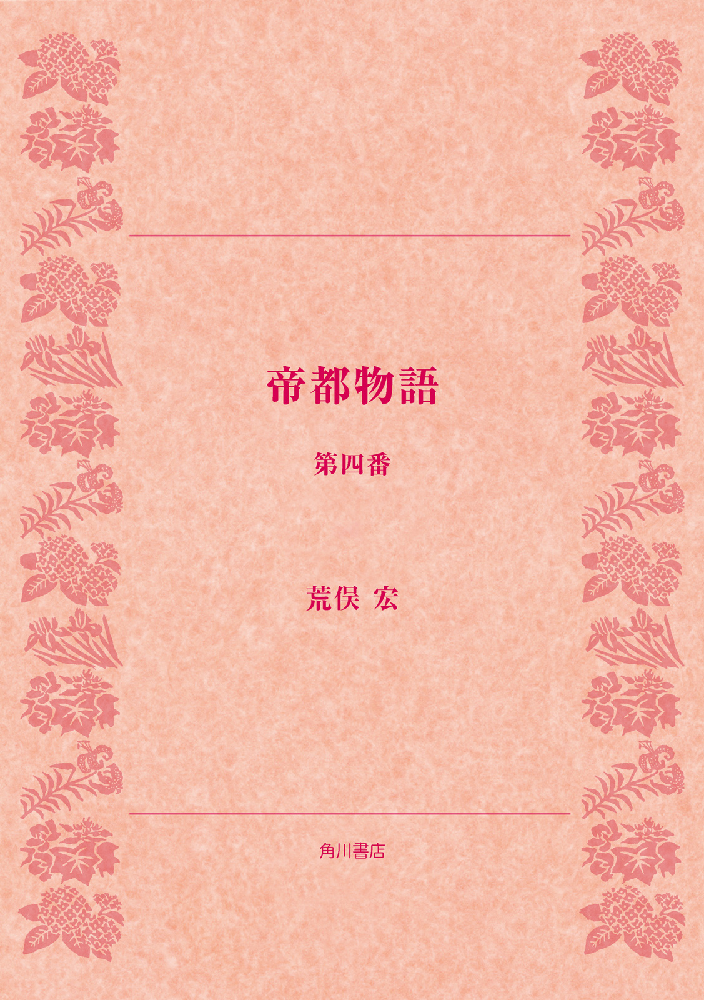
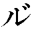
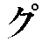
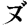
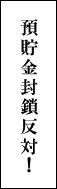

| 帝都物語 第四番 | |
| 荒俣 宏 | |

帝都物語
第四番
荒俣 宏

角川ｅ文庫
本作品の全部または一部を無断で複製、転載、配信、送信したり、ホームページ上に転載することを禁止します。また、本作品の内容を無断で改変、改ざん等を行うことも禁止します。
本作品購入時にご承諾いただいた規約により、有償・無償にかかわらず本作品を第三者に譲渡することはできません。
本作品を示すサムネイルなどのイメージ画像は、再ダウンロード時に予告なく変更される場合があります。
本作品は縦書きでレイアウトされています。
また、ご覧になるリーディングシステムにより、表示の差が認められることがあります。
まえがき
第二次大戦末期を境として、戦中・戦後の帝都を舞台とした本巻は、つねにやるせない気分におそわれながら執筆した夢物語からできあがっている。
ここで訴えたかったのは、中国東北部を制圧した日本軍がここに〈満州国〉を築きあげたことの風水的な意味についてである。満州国建設局の依頼をうけて新しい都・新京にのぼった風水師黒田茂丸は、大地の形や性質がまるで人体をモデルにしているように感じる。この部分は、ふたたび風水の本質を説明する個所として、読者のみなさまに空想をたくましくしていただくべき読みどころのつもりである。
風水では、地形は天の星の配置を反映するものとされる。つまり、一つ一つの星は山をさし、川や谷は銀河に対応する。同時に星は、人体各所とも対応しているので、星の配置を仲介として、地形と人体とは関係しあう。いや、それよりなにより、気というエネルギーを送ることを目的とする中国古来の養生術は、大地と建てものに関するものを風水といい、人体に関するものを気功と呼ぶ。また、山の形が乳房に似る場合を乳房山、寝すがたに似る場合を、寝すがた山というように、山河のイメージは人体を彷彿とさせることが多い。
そして風水師黒田茂丸は、中国東北部について次のように述べる──、
「......ところが北では、大地とは、宇宙から降ってきた天人──あるいは中国人のいう仙人の頭が地球に食いこんだ場所そのものである。それゆえ、北の大地は思考する大地である。（なぜなら）中国の東北部満州は、この世に最初の大地をつくりあげた〈元始天尊〉、すなわち盤古と呼ばれる宇宙的人格の身体にほかならないからである」
同時に旧満州の首都新京は、後藤新平たちが関東大震災の復興にあたって夢みたあたらしい防災都市の、大陸における再現という側面をも持っていたから、いよいよおもしろくなる。
そして物語は第二次大戦直後の日本へと移る。屍解すなわち仙人となってよみがえった加藤保憲は、ふたたび東京への怨霊をたぎらせる。ここからが、いよいよわたしたち昭和世代の活動する舞台となる！
〈登場人物〉
黒田茂丸 地相占術を心得、竜脈を操る力を持つ風水師。昭和の初め頃加藤保憲の手から帝都東京を護るため辰宮恵子とともに戦ったが敗れた。以後、北海道へ渡り十五年間を過ごしていた。新京へは建設局の要請により地下都市開発に伴う地霊の祟りを払うために呼ばれて来た。同時に満州へ渡って行方知れずの辰宮恵子を捜す目的も持っている。年齢はすでに六十歳ちかい。
辰宮恵子 旧姓、目方恵子。平将門を祭る東北の俤神社の宮司の娘だった。ある日夢告により帝都守護のため辰宮家へ嫁いだ。十五年前、将門に仕える神女として加藤に戦いを挑んだが、敗れて満州へ連れ去られた。
出島弘子 三十歳。満州映画の女優。甘粕に新京の地下に出没する鬼を題材にした映画の主演を命じられる。若い頃の辰宮恵子と面影が似ている。
甘粕正彦 世にいう甘粕事件の主役。元憲兵大尉、関東大震災のおり大杉栄を暗殺した。満州映画会社の理事長。東条英機とつながりを持つ新京の闇の帝王。加藤とも浅からぬ関係がある。
岡 大路 満州国建設局局長。
山中少佐 関東軍の作戦司令。小沢中尉らとともに加藤率いる八路軍の討伐に向かう。
後藤新平 元東京市長で大正大震災の折り帝都復興に立ち上がり、復興院総裁として手腕を発揮した。今度は新京の都市計画を立案。満鉄総裁。
石堂淑彦 国都建設局の土木科員。
内田勝男 満鉄の調査部員。黒田茂丸とともに新京駅地下を調査し化けものの存在を明らかにする。
愛新覚羅溥儀 清朝第十二代すなわち最後の皇帝。清朝没落後天津に在り、満州事変の際日本軍部に擁せられて満州国の執政、ついで皇帝となった。
田崎 潤 男優。上海で芝居をしていたが満州に流れてきて、甘粕から出演依頼を受ける。
森繁久彌 放送員として満州各地を探訪している。黒田の依頼により辰宮恵子捜しに協力をする。
陶 光継 甘粕に秘薬を作ってやっていた道士。出島弘子に頼まれて死者を蘇生させる秘薬を調合する。
鳴滝純一 理学士。故辰宮洋一郎の旧友で帝都破壊を阻止するため寺田寅彦、幸田露伴らと共に活躍した。終戦を鹿児島県坊津で迎えるが、ある日、不穏な動きと共に魔人加藤の再来を知る。
加藤保憲 帝都完全崩壊を策した怪人。〝将門の霊〟との闘いに敗れ、いったんは満州へと去ったが、中国の秘術により不老不死の屍解仙（仙人）となり、再度、帝都崩壊を企む。
辰宮由佳理 亡き洋一郎の妹。既に六十歳を越え、病いと共に終戦を迎えた。強度のヒステリー症状ないしは一種の霊能を有し、そのために奇怪な事件に巻き込まれたが、体の衰弱が激しい。
辰宮雪子 辰宮由佳理の娘。二・二六事件に深く係わったが、戦後は浜町の料亭で年老いた母をかかえ芸者として生きる。
李約瑟 （ジョゼフ・ニーダム）英国大使館顧問。ケンブリッジ大学教授。中国の不老不死の秘薬・練丹道と仙術の研究者。
大川周明 「コーラン」を指導書に、戦犯となった後も大東亜共栄圏の夢を捨て切れず、井上日召、北一輝と並んで宗教的熱狂につき動かされながら武力革命を画策し続けた霊的ファシスト。
鳥岡彌二郎 〝富士の鶴〟殺しの怪談に出てくる主人公。不死を得たものの鬼と化した。
角川源義 角川書店初代社長。国学院で折口信夫に学んだ新進国文学徒であったが、敗戦直後の荒廃に際し、日本文化を守りぬく決意をもって二十八歳で角川書店を創業。学者・俳人としても名をなした。
平岡公威 後の小説家、三島由紀夫。大蔵省官吏。故洋一郎の恩給を届けるため辰宮家と係わる。
大東亜篇
プロローグ 人違い
白い星が流れた。
土ぼこりすらこの真新しい街路には馴染まぬ、そんな新京の白けた街角で、呆けたように口をあけて星を眺める男がいた。
流れた星の下に、とつじょ白光がひらめき、黒い──なにやら地獄の大門を思いださせる三角形シルエットが浮かびあがった。
星を眺めた男は、シルエットにふと気づいてかぶりを振り、黒い地獄の門をみつめながら全身をはげしく震わせた。
地獄の門は、中央に三角形の屋根を突きだし、両翼へ長ながと塀をめぐらしていた。
いや、塀には見えるけれども、ほんとうは大きな建物の一部なのだ。星を見あげた男は、そのことを熟知していた。
「新京駅に火がついた！」
男がそうひとりごちた直後、新京の目抜き通り全体に轟音がとどろいた。静まりかえった夜陰を揺るがせる音は、空を裂くようにひびきわたった。
黒い障壁が印刷ずれのように上下動し、地獄の門が白い煙にとり囲まれる。
「馬賊の襲撃か？」
男はそう口走り、アカシアの並木に駆け寄って息をひそめた。地鳴りがつづいている。地面も震動している。足の裏がむずむずした。
建設が終わってまだ間もない、中途半端に清潔で中途半端にうす汚れた街路が、いましがた地獄門に見えた新京の巨大な駅舎へと、一直線に突き進んでいた。駅舎の前にある半円形の広場に融合するまで、その大通りは直進をやめない。白くて固い競馬コースのような路面に、幾筋もの白線が引いてある。その白線も、さきほどの震動で揺れていた。版ズレした印刷物のように細かく動いて、白線の幻像が男の目をくらませた。
「何の音だ？」
男はもいちどつぶやき、アカシアの大樹から身をひき剝がし、街路の中央に立った。
あたりを見まわしたけれど、人っ子一人見えない新京の大斜線路「日本橋通」から満鉄の新京駅をうかがっても、気のつく奇妙な現象は何ひとつ発見できなかった。
まるで廃墟のようにうつろな街だった。見れば見るほど、うつろな街だった。
しかし、考えてみれば当然なのかもしれなかった。真新しい街では、住む人のぬくもりが、見えない皮膜のように街を覆いつくしていないのだ。廃墟がそうであるように、新築まもない都にも墓場の冷たさがあるのはそのせいだった。
墓場が苔むし、やがて死者の容れものにふさわしく年老いてくるように、新しい都には人々の生活の匂いが立ちこめなければならない。
しかし──
五族協和・王道楽土を標榜して生まれた満州国の帝都、新京には、まだ、生命のいとなみが生みだす肌にやさしい丸みがなかった。建物も道路も、どこもかしこも刃物のように鋭い角があった。
それに加えて、この不気味な震動だ。
地獄の門のように目のまえを横に走っている満鉄新京駅を睨みつけながら、星をみつめた男は大きく溜息をついた。
「この都も祟られておるな！」
男は足取り重く新京駅に向かいだした。広大な東斜路は、向かい側の歩道が見えないくらい幅広く感じた。全幅十五間といえば、二十六、七メートルにもなるだろうか。これだけ広い斜路が、満鉄新京駅の円形広場から左右に二本走り、しかもそのまん中に幅二十間もある中央通が直進している。
この新京駅を凱旋門に変えれば、ここはそのままパリになる。あの広大な放射状道路をもつパリになる。
──だがしかし、満州の新都にはフランスの都にある大切な要素がひとつ欠けていた。さっきから感じている、人の生活するぬくもりが分泌する透明な「安心」の皮膜だ。それがないものだから、さきほどのように凶星が都に侵入すると、それを撥ねつける防御膜がない。凶星は、たちまち、大地に眠る邪霊たちを揺り動かしてしまう。
新京駅のあたりが一瞬白光をあげたのも、地底の邪霊が凶星に反応したからにちがいなかった。
聞けば新京は、古くからあった中国人たちの街を焼き払って築きあげた新都だという。これではしばらく祟りも鎮まるまい。
男は意気消沈して舗装路を歩きつづけた。まるで地底から出てきた亡霊の手が、去ろうとするかれの足にすがりついてくるように、足がふしぎに重い。
ようやく新京駅の広場にたどりついた。むろん人影を期待するほうが無理だった。中国との戦争がどろ沼に落ちこんだ今、夜の外出は日本人にとって自殺行為に近いからだった。
広場に落ちる沈黙を見やりながら、男は左に方向をかえた。
すぐそこに巨大なファサードが見えた。そこだけには、あたたかい明りがあった。アールデコののびやかな曲線を浮きたたせるオレンジ色の窓が、人の気配を感じさせた。
かれは安堵して足取りを早め、石段を駆けのぼると、重々しいガラスの扉を押しあけた。
一瞬、暖気がかれの体を包みこんだ。遠くで鳴っているバンドネオンの響きが、がれの耳をくすぐった。そしてとたんに、足もとが軽くなった。見ると、赤い絨毯が床に敷かれ、地面から這いだした亡霊たちの手を遮断しているのだ。絨毯の、沈みこむような感触に、星をみつめた男は思わず笑みを漏らした。
結界、すなわち霊的な遮断膜をつくる赤絨毯を踏みしめて、だだっぴろいホールへ向かうと、暖気がますますやさしげにかれの全身を包みこんだ。
新京最大のヤマト・ホテルは、あたりに跋扈する満州の亡霊たちを情容赦なく追い散らす、日本人の結界だった。避難場所だった。
男は、ちぢこまっていた背をのばし、白いものが混じりかけている口ひげを撫でつけると、受付に目を向けた。
受付の上にある大時計が、約束の時刻をぴたりと指していた。
「時間だ......」
そうつぶやきかけたとき、フロントの前に背を向けてたたずむ女性がいることに気づいた。
地味な和服を着ている。髪がとてもつややかだった。ホテルの受付にいる係員に、なにごとか問いかけているようだ。
男は、ああ、と声をあげ、勇んで受付に走り寄った。くたびれた背広のすそを、ケープみたいにひるがえしながら。
近づくにつれて、確信が湧きあがった。肩の線、そして両脚の揃え方も。
男は跳びつくようにして、女の肩を抱きとめると、まるで浅草のオペラ歌手みたいな高い声で呼びかけた。
「辰宮......恵子さん！」
しかし、呼びとめられた女性は肩越しに振り返り、見たこともない初老の男をそこに見たとたん、一瞬呼吸をとめ、次に悲鳴とともに身をよじった。
一方、呼びとめた方の男も驚いて口を半びらきにし、肩をつかみとめた手を反射的に引っこめた。
女が柳眉をさかだてて男を睨みつけ、男は男で呆然としながら女の顔をみつめた。
「どなたですの？」
ややあって、女は詰問した。うしろから、ホテルの受付が怪訝な表情で男をうかがっている。
男はようやく我にかえり、一歩さがって頭をさげた。
「これは人違いをしました。申しわけない」
そのことばに、女はやっと緊張を解いたらしい。肩の力を抜き、眉のあたりにやわらぎが戻った。瞳が丸くて、しかもしっとりうるんだ、愛らしい女性であった。
睫毛が長く、くちびるがかすかに突きでて、頰のふくらみもやさしかった。笑えば丸い顔になるが、そうでないときは瓜実顔である。
どこか辰宮恵子を思いださせた。しかし──
そうだ。だいいちあの恵子がこの年齢であるはずがない。彼女と別れた日から、すでに十五年もの歳月が経っているのだから！
「まことに失礼しました。手前は黒田茂丸と申す者です。昨日、この新京に着きましてな」
くたびれた背広すがたの男は、ふかぶかと頭を垂れた。女も安堵したらしく、受付から鍵を受けとり、足もとのカバンをつまみあげようと屈みこんだ。
「や、これは手前に運ばせてください。人違いしたお詫びです」
黒田茂丸と名のったばかりの初老の男は、カバンの把手を早ばやと握りしめ、女性をエレベーターのほうへ先導しかけた。
彼女は黙ってそれにしたがう。
「あ、すこしお待ちくださらんか！」
黒田は大あわてで受付に引っ返し、係員にこう問いかけた。
「二〇八号の黒田だが、辰宮恵子という女性から何か連絡はなかったかね？」
「しばらくお待ちを」
受付は一礼し、机の上の台帳をぱらぱらとめくったのち、黒田茂丸に答えた。
「ございませんが」
黒田の顔に落胆の陰が走った。
「そうか、ありがとう」
かれは片手に重いカバンをぶらさげ、途中で待っている女性のほうへ引き返した。
「失敬、参りましょうか」
そうささやき、横目で彼女の顔を見た。女の横顔に微笑が浮かんでいる。
エレベーターの上昇ボタンを押して、扉がひらくのを待った。そのあいだ、ごく自然な沈黙が流れた。
やがてエレベーターの扉がひらき、二人を箱のなかに吞みこんだ。
「二階へ」
と、女がいった。澄んだ声だ。女性にしては背が高い。こうして箱の中に並ぶと、黒田茂丸に匹敵する丈がある。
すこし震動があって、エレベーターの扉が開いた。辰宮恵子にまちがえられた女性は、会釈して先に降りる。なかなか旅慣れている女だ。長い黒髪を中央で分け、そして後方でまとめて結いとめている。大人びてはいるが、そうかといって三十路には届いていそうにない。瞳がきららに光る女性だった。
──はは、別れたときの辰宮恵子と同じ年恰好だわい。
黒田は自分で照れ笑いした。たしかに、辰宮恵子が昔のままの姿をあらわすわけがなかった。あれから長い歳月が去ったのだから。
「お部屋は？」と、黒田は照れ隠しに尋ねた。
「二一三号ですの」
「では、こちらですな。きっと新京の駅が見えます」
女は微笑み、かすかにうなずいた。
長い廊下に絨毯が敷いてある。それで足音がしなかった。黒田茂丸が二一三号室へ先導し、戸口のわきに荷物を置いた。
彼女から鍵を借り、把手の上のキイホールに差しこんで横にひねると、手応えがあった。
黒田茂丸は扉を押して半びらきにし、女性を振り返った。
「人違いをしまして、まことに失礼いたしました。気を悪くされぬよう──」
「お気になさらないで」
女は一礼し、荷物と鍵を受けとると部屋にはいった。そして扉を閉めるとき、彼女が瞳を輝かせて黒田茂丸にささやいた。
「あの......」
「何か？」
「いいえ、別に。ただ──」
「ただ？」
「はい、ただ──」
彼女はそこまで言って、くっく、と笑った。
「どうされました？」
「ごめんなさいまし。ただ、わたくし、あなたがお探しの辰宮恵子さんを存じておりますの」
「え！」
黒田茂丸は口をあけ、驚きを示した。
「それはありがたい。手前は恵子さんにいささか縁故のある者。お住まいをお教えいただければ幸いです」
しかし、彼女はすぐにかぶりを振り、扉を閉めにかかった。
「わたくしもいまヤマト・ホテルに着いたばかりで、疲れておりますの。明朝また、レストランででも──」
黒田はあわてて扉を押えた。
「お待ちください。あなたのお名前を」
彼女はふたたび微笑んだ。
「出島弘子と申します。上海からまいりました。お休みなさいませ」
女の澄んだ声がいつまでも耳に残った。肉厚で紅いくちびるがささやいたその名を、黒田茂丸は心に刻みつけた。それから赤い絨毯を踏んで、静かに自室へ引き返した。
巻一 まぼろしの新都
一 満映試写室にて
室内の赤い電灯が消されたとき、座席に並んでいる引きつった顔、顔、顔が、闇に吞みこまれた。
だが、闇の中でもかれらの目は異様な輝きを発していた。誰ひとり、まばたきしないのだ。
顔面神経を麻痺させた患者のように、どの瞳もガラス細工みたいに見開かれていた。
そのままの姿勢で一分が過ぎた。
やがて、ジィーという乾いた回転音が室内に充満したかと思うと、明るい光の筋が部屋をよぎって向かいの銀幕に投影された。
かれらの凍りついた目が、銀幕に映しだされた四角い光の斑に集中した。どの目も、その眼光で銀幕を焼きこがすのではないかと思われるほど、焦点を絞っていた。
空白の光の斑がしばらく位置どりに迷ったあと安定すると、大きな数字が逆転して画面にあらわれた。
そして最後に
という文字が浮かんだあと、
とつじょ画面が黒くなった。
題字も音楽も、なにもない。
ただ、どす黒い岩のようなものがつづく光景が、ガラス細工の眼球という眼球に映しだされた。
画面には音声がともなっていなかった。
しかし、光景をみつめていれば、何を映した映像であるかは理解できた。
そこにあらわれたのは、どこかの隧道であった。いや、石炭か鉄を掘りだす坑道かもしれない。満州は鉱物の宝庫でもあるのだから。
その坑道だか隧道だか分らぬ粗けずりの地下トンネルを、作業員たちが歩いていく。奥へ奥へとすすむ作業員を、満映のカメラが追っていく。
作業員たちが被る鉄帽に付けられた帽灯が、次々に画面を横切る。どの顔も黒い。
かれらは手に鶴嘴を握っている。おそらく地下坑を掘りすすむ仕事を与えられているのだろうが、それにしては全員の異様な緊張ぶりが気にかかった。ちょうど、いまこの映画をみつめる男たちと同じように、画面に映しだされた作業員たちも身を固くしていた。
だから、歩き方が木偶のようにぎごちない。そしてそのぎごちなさが、地下坑の雰囲気を異様に緊迫させていた。
昭和二十年にはいって、大陸の戦乱がいよいよ満州国にも及びはじめたための緊張なのか。それとも、まるで別物の原因に由来する緊迫感なのか。
この映像だけでは、まだそこまでの判断がつかなかった。
やがて映像の視覚が変化した。
カメラの目が作業員の列から離れ、ごつごつした自然岩の隧道を映しだす。
粗っぽく削りあげた岩壁のあたりを、カメラの目が蛇のように舐めていく。
カメラだけが、どんどん奥へ突きすすんでいく。奥へすすむにつれて、岩石が大きく、荒あらしくなる。
いちどターンして、カメラは作業員の群を映しだした。かなり後方から、囚人の列のように悲愴な顔をし、身をこわばらせて進んでくる人、人、人、人。
その光景をしばらく映したのち、カメラがふたたび前方へ向いた。
岩が浮かびあがる。
巨大な岩だ。
しかし、岩の影が重なるあたりに、一瞬なにかうごめくものが見えた。
岩を舐めていたカメラもそれに気づき、ふいに動きをとめる。それから、うごめくものの周縁にズームしていった。
岩肌が拡大されて画面に映る。石炭でもなく、鉄鉱石でもない。ただの岩場のようだ。
その岩のはざまに、カメラがさらにズームしていく。銀幕の中央にほとんど真黒の斑が浮かびあがった。
暗くてわからない。
画像が暗すぎて、よくわからない。
しかし、たしかに動くものの気配があった。見まもる目、目、目が、どれも精いっぱいに見ひらかれた。
画像の焦点が合いはじめる。いままで単に暗かった画面が徐々に細部をあらわしはじめる。岩陰にたまった闇のなかに、二つの白い点があらわれた。何かの光だ。
カメラがその光点に向けて接近する。接近のたびに焦点を合わせ直すので、一瞬は画面そのものが曖昧になる。
しかし、次の拡大画面が焦点を合わせ終え、一気に人々の目にとびこんできたとき、観客たちは一様に、ギャッ！ という叫びをあげた。
そこに映しだされた異様なものを、いったいどう表現したらいいのだろうか！
それは生きものだった。すくなくとも、うごめきまわる力をもつ存在だった。
まっ白な双眸を輝かせ、口もとから涎をしたたらせ、針のように不気味な牙を光らせながら、地獄絵に出てくる餓鬼によく似た化けものが、走りでた！
カメラ自体も驚愕し、安定を失ったにちがいない。ガクンと画面がゆらぎ、化けものの足もとを偶然に映しだした。
その足！
ここでふたたび悲鳴があがった。それはあきらかに人間の足だったが、いたるところ鱗に覆われ、鋼鉄のように固い鉤爪が岩を嚙んでいた！
足の大写しは、わずか一瞬のできごとだった。しかし一瞬とはいえ、その効果は絶大だった。あきらかに妖怪なのだ。そこにあらわれた生きものは、この世のものではなかった。
カメラは必死にレンズを上向けようともがいた。しかし安定を失われて、上に下に大きく揺れた。怪物の顔がもういちどあらわれた。大きく開かれた口腔のあいだで、蛇のような舌がうねり、間断なく不潔な唾液があふれでる。
が、突如として画像が空白に変じた。悪夢をすこしでも早く終わらせようと、フィルムが回転を拒否したかのように。
ザァーッという音がむなしく流れた。
観客席にすわった男たちは声も出ず、席にへたりこんでいた。しばらくは立とうとする者すらいなかった。
赤い電灯がふたたび点されたとき、あれだけ緊張していたかれらの目が、精気を吸いつくされた牡蠣の身のように死に絶えていた。
実際──
かれらの目は光を失い、脈すら失っていた。
扉があいて、機械室にいた二人の技師が姿をあらわした。乾燥した初夏の空気が、室内に流れこんだ。
技師たちは席のうしろに立ちどまり、ひとつ咳払いしてから、嗄れた声を絞りだした。
「あれです！ われらの工事を妨害する化けものは！」
「おそらくごく最近に地下へ潜入したものと思われます。工事人がはいりますと、おそろしい勢いで襲ってまいりますから」
「そうかね......」
最前席にすわった紳士が、葉巻をくゆらせながら返事した。口ひげが真白だ。むろん、頭髪も雪のように白い。
「どうしたものだろう、甘粕君？」
甘粕と呼ばれたもう一人の紳士は、若わかしく、しかも瘦せぎすだった。うしろへ撫でつけた黒髪が、脂ぎった照りを発して、いかにも気障な民間人を彷彿させる。
しかしこの男は、もと軍人であったのだ。
甘粕正彦はチョッキのポケットに指先を挿しこみ、眼鏡を光らせながら薄笑いした。しかしこの笑いはごまかしにすぎない。かれ自身も、今しがた目撃した映像に動顚していたのだ。
「鬼ですな、あれは。土鬼だ」
白髪の紳士は、じっと甘粕をみつめた。
「満映の理事長である君に、こう言っちゃ悪いが、カメラマンはもうすこし頑張れなかったのかね。もうすこし正確に、あの化けものを撮れなかったのかね？」
甘粕正彦はふたたび嘲った。
「岡さん、満州国建設局の局長だからと、役人風ふかされてもらっちゃ困る。だいいちわれわれは新京の地下街づくりになんぞ関係がない。建設局が協力してくれというから、わざわざ化けものの巣窟までカメラを降ろしたんだ」
「まあ、仲間割れしておる場合じゃないでしょう。満州国、満鉄、そして関東軍はここで結束していないと、中国の反乱軍に足をすくわれかねませんからな」
二人の言いあらそいの仲裁を買ってでる軍人がいた。最前列の左はじにすわり、革の長靴をはいた長身の男だった。
「関東軍参謀の山中少佐に取りもたれては、言いあらそいもできんでしょう」
建設局長岡大路のとなり、最前列の右はじに陣取った満鉄の大谷理事が、肥り肉の上半身をひねるようにして甘粕を見た。
甘粕はいつも中央の席にすわる。自分でも、できるだけ中央にすわるよう心がけている男だった。
「たしかに、喧嘩している場合ではない。対策をどう樹てるかが問題ですな」
「わたしは、これは中国の反乱軍がしかけている妨害工作だと思うが」
関東軍の山中参謀が意見を口にした。
「反乱軍が？」
甘粕が怪訝な目で問い返した。
「いったいどうやって鬼を出すのかね、中国の反乱軍が？」
「それは──」
参謀が答えに詰まった。
「待て。鬼はたしかに映像にうつった。うつったということは、ひょっとするとマヤカシかもしらんぞ」
岡局長が葉巻を手にして、一同を見まわした。
「まやかしですと？」
「そうだよ、君。霊や化けものが写真にうつるかね？」
「うつりますよ。わたしはフランスでごまんと見てきました。心霊写真と称する亡霊の写真をね」
甘粕は軽やかな声で言い放った。誰も反論してこない。この男は満映の理事長をつとめる一介の民間人だが、新京の人々はかれの奇怪な実力を十分に承知していた。この男は、内地の大立物東条英機につながっているのだ。関東軍でさえ一目置かねばならぬ甘粕は、新京の闇の帝王であった。
「ま、鬼としましょうや、出てくるやつが」
と、満鉄の大谷が話の先導役を引き受けた。
「いいですか、関東軍の要請もあるが、いつソ連軍がやってきて新京を空襲するかもしれん状態だから、地下に要塞を兼ねた街路をつくるのはいい。いいけれども、工事を妨害している鬼がいる。この鬼を使っているのが中国の反乱軍か、それともソ連の妖術使いかは、わしは知らんよ。しかし鬼が出没しておるのは事実だ。こいつをやっつけないと、工事が進捗しない」
「実は──」
と、岡局長が低い声でささやいた。
「わしは後藤新平翁から、ひとつ恐ろしい逸話を聞いたことがある。東京で初めての地下鉄を建設したときも、鬼が出たというんですな、地下に」
「え？」
一同の表情が蒼白に変わった。
岡局長はいっそう声をひそめ、最前列にすわった三人の仲間にささやきかけた。
「なんでも東京の地面には地脈という生命エネルギーの流れがあって、これが土地を富ましておるのだそうです。ところが地下鉄がこの地脈を浅草のあたりで両断するかたちになっちまった。その部分にあたる工事現場で、出たのですな、これが！」
甘粕は肚を立てたようだった。岡の話が講談じみているからだった。
「で、そのときはどうやって追っぱらったのだ、鬼どもを？」
岡は首をひねり、記憶の糸を引っぱりはじめた。
「──たしか、学天則という人造人間を使ったと聞いていますよ。妖怪は人間の心を攻撃する。そこで、あの天才寺田寅彦博士が、わざわざ大阪から人造人間研究家を呼びよせたといいますな」
「人造人間か。しかしそんなものは満州にない」
甘粕は、いったん乗りだした腰をふたたび席に押しつけた。
山中少佐が軽く笑みを浮かべた。
「どうもおかしい！」
一同がまた関東軍の参謀に注目した。
「何が？」
「いや、どうもおかしい。今回の一件でいちばん困っているはずの建設局長が、これまで一貫して他人ごとのように話しておられる。鬼を相手にしようとなったら、自分たち軍人にも勝てるかどうか自信がない。しかし局長は、むしろ平然としておられる」
「おおかた腰を抜かしすぎたんだろうよ」
と、甘粕が憎まれ口を叩いた。
「いや、違いますな。この落ちつき方は──つまり、解決の方策がついたということでしょう！」
山中少佐の指摘は鋭かった。軍人が岡にぴたりと人差し指を向けると、白髪の紳士は葉巻をくわえ、肩をかすかにふるわせた。笑いをこらえようとしたのだろう。
「ご明察──と申したいところだが、方策といってもお寒いかぎりのものです」
「何だ、その方策というのは？」
岡はゆっくりと試写室の席を立ち、一、二歩前へ出てから人々を振り返った。
「今お話に出た東京地下鉄道の一件ですがね。あのとき力をあわせて鬼退治に尽力した人物が何人かおりました。われわれは内地に依頼し、その人物たちの現況を調査してもらった。そして──」
「そして？」
甘粕が先をうながす。岡はにやりとしながら答えた。
「たった一人、健在でいる人物の住まいが分かったのですよ。われわれはこの人物を呼び寄せます。そして、新京での鬼退治に力を貸してもらおうというのですよ」
人々は岡局長のことばに聞き耳をたてた。そして岡のことばが途切れると、一斉に同じ質問を浴びせかけた。
「何という人物だね？」
岡はかれらに背を向け、ひと息置いてから答えた。
「黒田茂丸という人物です。北海道にいる」
「黒田？ 何をする男なんだ？」
甘粕が重ねて局長を問い詰めた。しかし岡は意味ありげな目で人々を見まわした。そして、
「風水師ですよ」
と答えた。
二 満州の土ぼこり
「ささやいているな、神が」
突風が新市街の道路という道路に土ぼこりをわきたたせた。その土ぼこりが満州国建設局土木員の視覚を奪ったとき、石堂は目を細め息をとめて、土ぼこりが沈静するのを待った。この土木科員は恰幅がよく、その上に背が高い。薄い口ひげもよく似合った。
「神がささやいてるだって？」
と、満鉄の内田勝男が問いかえした。石堂科員は大きな腹をゆすって笑う。
「は、は、君は知らないのか？ 満州人はみんな信じておるんだよ。今日のような突風はね、神が何か言っておるからおきる。風は神の声なんだ」
「神の声が風だって？ 国都建設局の科員は揃いも揃ってよくよく満州ボケだな」
石堂は、ふたたび突風を受けて舞いあがった土ぼこりのなかで、満鉄調査部の小ぶとりな社員をみつめ返した。内田勝男は眼鏡を光らせ、大きなさいづち頭をすこし後方に傾けた。
「内田君、この新京に三年住んでごらん。都市なんてもんは死人の容れものにすぎないってことが、よぉくわかるから。神が息を吹きかけ、やがて塵がたまる。どんなにきれいに磨きあげても、白い街路は塵に埋まる。そうして、いずれは土に還るのさ」
石堂は細い目をすこし見ひらき、てらてらと輝く内田勝男の脂ぎった額を見やった。
しかし満鉄社員は強気を失わない。
「だから、この新京に排水溝を完備しようというのだよ。街路のあちこちに散水器を備え、乾燥した夏の日には水を打って埃を立たなくする。湿気の多い本土では実感できなかったが、大陸へ来て砂塵の被害がいかにすさまじいか、よくわかった。大陸の町を汚しているのは、この埃なのだ。むかしは豊かにあった緑の山々を、中国歴代王朝が根こそぎ伐り倒して丸坊主にしてしまったから、乾燥と埃を吸収できなくなったのだ」
内田社員は結論が出たといわんばかりに、大きくうなずいた。しかし国都建設局の石堂科員は、満鉄の人間からわざと目を離し、腕時計を見た。
「そろそろここへ来てくださる頃だが」
内田は眼鏡を光らせ、ふたたび口を挟んできた。
「はたして来るかね」
「聞き捨てならんな、それは。黒田さんは来てくださる。昨夜連絡もあったぞ」
「来ても、二度と本土に帰れないかもしらんからね」
内田の眼鏡がふたたび光った。石堂がそれに反発するように答える。
「おい、おい、おどかすな！ 最近は本土も爆撃されているそうじゃないか？ 君は満鉄の調査部だから、いろいろ耳にはいることもあるだろう」
「あるさ。たとえばソ連軍がほどなく不戦条約を破棄して、満州に攻めこんでくる！」 内田がこともなげに言い捨てた。一瞬、石堂は緊迫した瞳を満鉄社員に据えた。この温厚な大男が、細い目を大きく見ひらくことなど滅多になかった。
「ソ連が？ 攻めてくる？」
「ああ、噂はほんとうのことさ」
「ばかな！ 満州は五族協和・王道楽土の理想国だぞ！」
「石堂君。満州は日本の植民地だ。それだけのことだよ」
二人の若者は中央通のまん中で睨みあった。またも突風が吹きつけて、多量の埃を舞いあげた。若い社員たちは目をつむり、埃がしずまるのを待った。
新京は、途方もなく広い街だ。幹線道路はすべて十間以上の幅広さだし、小路も格子状に整備してあった。だから、どこへ行くにも迷うことがない。新京にはじめて来る風水師黒田茂丸にとっても、道をあやまる心配はなかった。
だが、それにもかかわらず、新しい都は埃っぽかった。
「ここにはまだ地竜が住みついておらぬ」
約束の場所に急ぎながら、黒田茂丸は前方にただよう埃の霧をみつめ、ひとりごちた。このように大気が澄まないのは、都に竜が住みついていないせいだった。竜が住みつけば水気を呼び、水気を呼べば大気は洗われ、街も浄められる。
黒田茂丸は街並を見交わして歩いた。アカシアの並木は、まだ単に植えられているだけのことで、大地に根づいているわけではなかった。それに、人の気配がない。
数年前、満鉄と国都建設局がつくった市街地域にはほとんど入居者がなかった、と聞いたが、今でもその情況に変わりはなかった。
「かつて銀座に煉瓦街ができたときも、入居者がほとんどいなかったそうだが、こういう石の家は慣れないと住みにくい」
日本人が煉瓦やコンクリートやモルタルの家を好まない事実を、黒田はよく承知していた。長らく、建材としての紙すなわち障子紙でやわらかく暑さ寒さを防いできた日本人は、こうした石の建てもののもつ全面的な拒否姿勢を、なにやら不粋なものと考えてきたのだ。
黒田は、それでも大陸の新都にふさわしい街並にそって歩いていくうちに、とうとう目的地に到着した。日本橋通が西公園にぶつかるあたりだった。
見ると、道のまん中に立った二人の男が、からっ風のふきすさぶ路上で、埃を吸いながら口論している。
黒田茂丸はそれを見つけると、にんまり微笑し、かれらに近づいていった。
「黒田茂丸と申しますが、建設局のお方とお見うけいたします」
老風水師が男たちに声をかけた。かけられた二人は、だしぬけのことで面食らったが、その名には聞きおぼえがあった。すぐに口論をやめ、来訪者に向き直り、二、三秒黒田の顔をながめまわした。
黒田茂丸は中肉中背の、ごく標準的な体格をしていた。口もとにまばらなひげをたくわえ、顎にも申しわけに黒いものを伸ばしていた。これで以前は恰幅もよかったのだが、六十歳に近づくと肉が落ちる。いや、落ちるのではなく、絞れるのだろう。もう十五年も北海道で暮らしたから、心身とも自然に無駄がなくなったのだ。
「あの......内地の北海道から？」
石堂が確認すると、黒田茂丸はうなずいた。
「さよう。風水師でござる」
「そうでしたか。お待ち申しておりました。お手紙さしあげた満州国建設局の石堂淑彦です。お見知りおきを。それにしても、とつぜん現場で顔合わせとは驚きました。建設局のほうへおいでいただければ、もう少し気の利いた歓待をいたしましたものを」
大男の石堂は照れ笑いを浮かべ、一礼して老風水師を迎えた。つられて、満鉄の内田も頭をさげた。黒田は白髪まじりの頭を搔いて、
「いやなに、仰々しいのは苦手でしてな。それにわしは地相を見るのが商売じゃから、現地でお目にかかるほうが手っとり早い」
「おそれいります」
石堂が相槌を打ち、満鉄の社員を黒田に引きあわせた。
「こちらは内田勝男といって、満鉄調査部の者であります。このたびの国都建設計画にあたり、満鉄側の事務局を代表しておりますので、何かとご縁があるかと思われますので」
「内田でございます」
「ほう、南満州鉄道の？」
「はい、調査部に勤務いたします」
「よしなに」
黒田茂丸は会釈し、おもむろに西公園の方向を見わたした。ここは市民公園になっているようだった。緑のあいまに、中国の人らしい服装をした人々が見受けられる。
「ほほう、こちらでは中国の人たちも公園を利用できるのですかな」
「はい」
石堂が、細い目で答えた。黒田茂丸もそうだが、細い目の男には喜怒哀楽を示す表情というものがない。いつも薄笑いを浮かべ、半分眠りこんでいるようにみえる。欧米人がいちばん奇妙に感じる東洋人とは、まさしくかれらのような細い吊り目の男たちなのだ。
「なるほど。さすが五族協和をめざす東洋の理想国だ。上海租界地の公園とは大ちがいですな。あちらでは、公園の入り口に堂々と、〈犬と中国人、はいるべからず〉と書いてある。けしからんことです。ここは元来中国なのですからな」
黒田茂丸のことばに、二人は揃ってうなずき返した。
しかし、公園を覆う緑には、まだ水辺の植物らしい繁茂の勢いが欠けていた。アカシアの街路樹と同じように、まだ大地に馴染んではいないのだ。即製の都の不自然さが、ここにもかいま見えた。街路のいたるところにたまった埃もそうだが、この新都はまだ周囲の自然と手を結びあっていない。
「で、この老骨にいったいどうしろと？」
風水師は建設局の科員に用向きを尋ねた。
「黒田さんにわざわざ満州までご足労いただいたのは、ほかでもありません。この新京にも地下都市を創ろうという計画がありまして」
「地下都市？」
黒田茂丸は表情を変え、二人の男を見比べるように目線で舐めつけた。
「まるで十五年ほど前の東京のような話ですな......」
黒田茂丸は地下都市ということばに、十五年前の東京の思い出を連結させていた。大正の大震災後に寺田寅彦や早川徳次が実行した地下鉄道の付設。それと同時に、魔神のように恐ろしかった難敵、加藤保憲の顔が目の前をよぎった。
「そうですとも！ 十五、六年前の東京と同じ大事業を、この新京で実行しようというのです。これは、新京の都市計画立案をわれわれに命じられた満鉄の後藤総裁の夢です」
「後藤総裁！」
「はい」
黒田茂丸はふたたび追憶の波に打たれる自分に気づいた。後藤新平は、大正大震災の折り帝都復興に立ちあがり、復興院総裁をつとめた。そして、日本じゅうがあっと驚く大復興計画を立案してみせたのだった。そのときの目玉は、向こう側が見えないほど広い幹線道路と地下都市の設置だった。
「後藤新平さんのお声がかりだったのかね。どうりで、この新京の街並はどこかに見憶えがあるわけだ。つまりここは......幻の帝都だったんだね」
「幻の帝都？」
石堂が問い返した。黒田は、二、三本歯の抜けた口もとをあらわにしながら、こう答えた。
「そうじゃよ。大正大震災のとき後藤さんが立案した帝都改造計画は、財政の問題から、まったく見る影もなく縮小された。大道路も、並木道も、そして地下都市も、ことごとくが実現できなかった。だから後藤さんは、元来東京のために引いた青写真を、この大陸の新都に転用されたのだろう。は、は、奇妙なもんだねぇ──」
満鉄の内田勝男が、眼鏡を光らせながら黒田茂丸に問いかけた。
「奇妙、とおっしゃいますと？」
「奇妙なんだよ。内地では絶対に実現できないことが、この新天地では実にすんなりと実現してしまうから」
「それは──ここらが原野でしたもので、いかようにも計画を巡らすことができたためでしょう」
黒田は、満鉄社員の返答を聞いて大笑いした。
「それ、それ。それが大陸の発想じゃよ。大陸は新開地で原野。内地の日本人は誰でも判で捺したようにそう思う。ところが、あんた方、ここらの土地一帯だって実は原野じゃなかった。満州人や漢人の持ちものであって、現にたくさんの人が住んでおった。水田つくったり、畑たがやしたり、魚とったりして。それを──満鉄が横取り同然にかすめ取ったのだよ。聞くところでは、この人造都市を建てるのに、古い中国人住宅をみんな焼き払ったという話じゃないかね」
「いや、それは──」
「いや、わしは満鉄を責めてるんじゃない。風水師として、そういう事実を北海道でも見せつけられたからじゃよ。わしら風水師は、北海道の未開の原野に理想農場を築きあげようと、北の海をわたったんじゃ。ところが、北海道でいろいろと開拓の仕事をしておるうちに分かったことがある」
「何ですか、それは？」
と、石堂が口を挟んだ。黒田茂丸は建設局科員を軽く制して話をつづけた。
「たしかに北海道は、満州の地がかつてそうだったように、広大な原野だった。しかしこの原野は処女地ではない。ちゃんと先住民が住みつき、自然とうまく折り合いをつけて暮らしていた。つまりわれわれは、先住民の土地に土足ではいりこんで勝手に改造しだしたわけだ。そこのところを考え違いすると、地霊のシッペ返しを食うよ」
二人の社員は顔を見合わせた。黒田がそれを見てふたたび人好きのする笑顔に戻った。
「いやなに、ちょっとした老人の小言じゃよ。気にしなさんな。そこんところを頭の隅っこに叩き込んでくれれば、それでいいんだ。この地上には、もう原野なんてないんだよ。人が住んでおらんところは、どこにもない。誰に遠慮もなく、原野に新都を築こうなんてのは、思いあがりさ。もともと善意なだけに、よけい始末が悪い」
黒田茂丸はわざと軽口を叩くと、ふいに真顔になり、小ぶとりの満鉄社員に声をかけた。
「ところで、新都計画なんぞに現を抜かしておってよいのかね。戦況は最悪の情況と聞く。もしかしたらソ連軍がここにも進攻してくるって噂じゃないか？」
「その危険はあります」
「満州国皇帝はどうされておるのかね？ 国防の手を打っておるのか？」
内田勝男はかぶりを振った。
「それは満州国皇帝でなく、関東軍の管掌です。ソ連軍の急な進攻にそなえて、国境線上に配備を完了しております」
黒田茂丸は腕組みし、声をひそめた。
「関東軍の？」
「はい」
「軍隊に何ができるもんかね。土地を守るのは、結局そこに住みついておる者たちだよ」
「しかし──」
「国境の土地に住んでいるのは満州人や漢人だろう？ そういう人たちを関東軍が生命がけで守るとは思えない。満州国皇帝の溥儀が手立を講じなければ──」
内田と石堂は険しい表情を黒田に向け返した。満州国には満州国の複雑な事情があるのだ、といわんばかりに。
「いずれにせよ、事態は切迫しています。地下都市構想と申しますのも、実はその点にからんでおりまして」
「どういうことかね？」
「当面この地下都市は巨大防空壕として使用されます」
風水師の表情に驚愕が浮かびでた。
「防空壕に？ それほど切迫した事態なのかね？」
「関東軍から要請があったのです。新京の地下都市開発は当初から考えられていたのですが、政府から予算が降りませんでした。それで外国に建設債券を買ってもらって、資金にしようとしていたのです。だが、戦況が悪くなった今、とつぜん地下都市計画の一部を実行に移せ、と政府が言ってきたわけです。われわれも当惑しております」
石堂が頭をさげた。いかにも申しわけなさそうに。たぶん黒田茂丸が呼ばれたのは、あまりおもしろくない目的にちがいなかった。
「で、わしにどうしろというのかな？」
黒田のことばにぶつかり、建設局科員は動揺の色をあらわした。
「では、われわれの用向きがあなたに伝わっておりませんか？」
風水師は照れくさそうに笑った。
「手紙で読んだかもしらん。しかしそれよりも、満州へ行けると聞いて、つい有頂天になってしまったんだよ。齢甲斐もなく恥しいが、満州にはわしがどうしても再会したい女がいる」
「女ですか？」
「ああ、菩薩だ。活きた菩薩がな。だから、うっかり用向きを失念した。わはは」
「では、あらためて申します。新京の地下を掘るにあたり、祟りを祓っていただきたいのです！」
「なに、祟りを？」
風水師は組んでいた腕を解き、二人の社員を見比べた。
沈黙が流れた。
その沈黙を破ったのは、大男の石堂だった。
「われわれは聞いておるのです。東京地下鉄道を掘った際、地脈とぶつかり鬼に祟られたことを。そして、その鬼を退治した何人かの人々の行動を......」
黒田茂丸が急に顔色を変えた。
「出るのか、新京の地下にも？」
二人は黙ってうなずいた。
風水師がふたたび腕組みの姿勢に戻った。口ひげをかすかに震わせながら。
「君たちは、東京地下鉄道の一件を聞いておるのかね？」
石堂がすこし声をひそめた。
「はい。学天則という人造人間のことも、それに加藤保憲の奸計についても」
「誰に聞いた？」
「東京地下鉄道の早川氏ご自身からです」
「なんじゃと？ 早川氏から？」
「さっきも申しましたように、この満州国は実験の都です。満鉄総裁後藤翁が新都を建設するにあたり、東京改造計画の際に実行できなかった夢を、すべてここに盛りこめと命じられました。その一つが、地下鉄道でした。われわれは計画実現のため早川氏に御忠告をうかがいに参りましたが、その折に、恐るべき加藤保憲の陰謀と地脈の話をうかがったのです」
黒田茂丸はじっと聞き耳をたてていた。応答がないので、石堂が話をつづけようとしたとき、またワッと埃が舞った。
石堂が咳きこみ、西公園の緑へ目を向けた。突風を背で受けたのだ。風が弱まったあとは、なにやら因縁めいた話のつづきが待っていた。
「......実は、関東軍に要請された地下大防空壕づくり──これは平時になりましたら、地下街と地下鉄道に転換する予定でありますが──は、すでに開始されておるのです。そして──出ました！」
黒田茂丸は一瞬、心臓でも凍りついたかのように白目をむいた。
「出た！」
こんどは満鉄の内田勝男が早口にまくしたてた。内田もぶるぶる震えている。
「鬼です！ 背丈が四尺か五尺の、不気味な鬼です！」
「式神か。加藤めが放った化けものだな」
風水師は喘いだ。
「で、どこなんだね？ その現場は？」
黒田茂丸はそう尋ねかけて、すぐに口をつぐんだ。無意味な質問だったからだ。
しかし、もう遅い。
顔面を蒼白にした内田が、黙って指先を下に向けた。
沈黙が、土ぼこりとともに三人のあいだを流れていった。
そして、ふたたび大気が澄んだとき、国都建設局の石堂が沈黙を破った。
「ここです。われわれが立っているこの下です！」
三 朝食の卓
ヤマト・ホテルの二〇八号室で目ざめたとき、時計が八時を指していた。
思いがけなく寝過ごしてしまった。
朝食の卓につくには、もう遅すぎる時間だった。ヤマト・ホテルに泊る客は、みな朝起きるのが早かった。一階の食堂に降りると、メイドが早ばやと食卓の白布を外しにかかっている。
黒田茂丸は食堂を見まわし、日当たりのよい窓ぎわへ進んだ。一人だけ客が食事をしている。
女性客だった。
それも和服を着ている。
風水師は、その女性客の前を通りすぎ、となりの食卓についた。
そしておもむろに注文品を選ぼうとしたとき、澄んだ女の声がそれを止めた。
「黒田さま？」
風水師はおどろいて振り返った。
朝日がまぶしくて、目をあいていられない。かれは片手で光をさえぎり、目を細くして先客をみつめた。
「失礼だが、どなたで？」
「あら、お忘れですの」
女はそういって、風水師のほうに笑顔をつきだした。
かれはまじまじと女をみつめた。
「やあ、失敬！ たしか二一三号の──」
「やっと思いだしていただけましたわね。出島ですわ」
「これはどうも」
「人違いなさった上に、こんどは人忘れですの？」
女はそういって、くすくす笑った。
「そちらにすわってもよろしゅうござるかな？」
黒田が尋ねると、女はこくりとうなずいた。
風水師は席を移動し、やってきたメイドに朝食を注文すると、あらためて出島弘子に向かった。
「重ねがさね、失礼を」
「あら、よろしいのです」
黒田茂丸は、気取られぬよう注意して、女の身なりを観察した。どこにでもいるようなご新造だった。おそらく開拓団ではなく、銀行か満鉄の社員を夫にもつ女なのだろう。暮らしに不自由はしていないようにみえた。
「そうだ、思いだしましたよ！」
と、黒田は急に大声をだした。彼女のほうも多少はおどろいたらしく、飲みかけのお茶を口もとから離した。
「何ですの？」
「ほら、あなた、おっしゃいましたね。辰宮恵子という名に憶えがあると？ わしはその女性を、二十年来さがしておるのです。ぜひとも再会したい」
「辰宮恵子？」
「さよう」
「わたくし、申しわけございませんけれど、その方を存じあげません」
黒田の表情に一瞬怒りが走った。
「え？ ひどいな、こいつは！ あなた、知っておると申されたでしょうが」
出島弘子は袖をふくらませて胸もとに押しあて、ぺこりと頭をさげた。
「あなた様の心を、ちょっと引いてみたくなりましたの。ごめんなさい」
「困りましたなァ、老人をからかったりして」
「ごめんなさい。でも、この新京では、わけのある人はみんな名を変えますの。ですから、その辰宮さんも別の名をなのられているかもしれませんわ」
「別の名をねェ......」
そのとき食事が運ばれてきた。バターにミルク、そして焼きたてのパンだ。
「ほお、内地じゃ食いものがなくて困っているのに、新京は豪勢ですなあ。バターがこんなにたくさん！」
黒田は相好をくずして、バター付きパンをぱくつきはじめた。その様子を見ながら、出島弘子は茶をひと口あおった。
「内地はそんなにひどい状態ですの？」
「ああ、ひどい。わしは北海道じゃから、まだましだがね、東京あたりはろくなものが食えん。この戦争は負けだね。アメリカ軍の本土襲撃もひどくなる一方だし」
風水師はむしゃむしゃやりながら、彼女に返事をした。こんなにうまいバターを口にしたのは久しぶりだ。
「あら、偶然ですことね。わたくしも故郷は札幌ですのよ」
「そうかね。どうりで色が白い」
「まあ、ホホホ」
黒田はさらにひと口パンを食べた。それから彼女の目を見て語りかけた。
「それにしても、あんた妙な娘だね」
「娘じゃありませんわよ。もう三十ですもの」
と、出島弘子は悲しげに言い返す。
「わたくし、ほんとうは二十七歳の誕生日に死ぬことになっていましたのよ」
「ほお、二十七の誕生日に」
黒田はミルクを飲みこみ、口をふくらませた。
「ええ。わたくし満州映画の女優ですの、こう見えても。しばらく上海におりましたけれども」
「その女優さんが、どうして二十七で死ななければならんのだね」
「聞いてくださるの、黒田さん？」
「ああ」
「わたくし、四年前に内地で、ある映画の主役に抜擢されたことがありますの。天にものぼる気持でしたわ。しかも、クランク・インがわたくしの誕生日の一月三十日に決まって、これは運がいいって、とてもよろこんでいましたの。さっそく故郷の両親にも手紙を出しまして、町中でお祝いしてくれましたわ。でも、国家総動員体制とやらで映画会社が三社に統合されてしまい、わたくしの主役作品は制作中止になりましたの」
「それは気の毒に」
「でしょう？ わたくし、故郷の両親に、主役がふいになったからとは言えなくて、とうとう中国へ来てしまいましたの」
「なるほど。出島弘子さんといいましたな」
「はい」
「あなた、なかなかおもしろい女性だ。それに、この前も人ちがいしたくらいに、辰宮恵子に似ておられる。このホテルには、よくお泊りですかな？」
「とんでもない！ ヤマト・ホテルは高いんですのよ。わたくしみたいな端役女優に、そうちょくちょく泊れるものですか。満映の理事長に呼ばれて、宿泊のお手当が出たから、特別です。こういうときは、うんとぜいたくしてやるんです」
「これは、ますますおもしろい！」
黒田茂丸は笑って、あとから運ばれてきた茶をうまそうにすすった。
「ときに、黒田さん？」
黒田は手をとめ、女をみつめた。
「何かね？」
「わたくしの話をしたのですもの、こんどはあなた様のお話が聞きたいわ」
「これは困った。わしは凡人でな。あんたのような身上話をしたくてもできない」
「うそおっしゃい！ その辰宮恵子さんて、どんな関係のお方でしたの？」
風水師は茶を置き、目尻に皺を寄せて満映の女優を見た。
「辰宮恵子という女性のことは、うっかり話せないんじゃ。恵子さんは身をすてて東京を救った。あんたには理解できんだろうが、ひとりの魔人とたたかったのだよ。今は満州にいるのは確実らしいが、とんと行方が分からない。わしは用事にかこつけて、その女性を探しにきた」
「へえ。そういう方に似ているなんて、わたくし光栄ですわね」
出島弘子は頰づえをついて、風水師の話を聞いた。
「ひとつお尋ねしてよいかしら？」
「ああ、いいとも」
「じゃ、教えてくださいな。黒田さんのお仕事は何？」
明るい笑みを咲かせた女の前で、黒田茂丸はハタと当惑してしまった。風水というのは辰宮恵子のこと以上に説明がむつかしい。
「好奇心の旺盛な女性だね、あんた。しかし、わしの職業をひと口で説明するのは大変だ。風水師だからね」
「あら、風水！」
と、出島弘子は叫んだ。意外だった。彼女のような女優が、中国の地相占術を知っていること自体、奇跡じみたことであった。
「知っているのかね、あんた？」
「ええ。この新京でもね、町の外へ行くと中国の人々がいまでも占っていましてよ。ほら、羅経っていう磁石盤を使って、方位を定めたりする占いでしょう？」
「これは話が早い。わしは満州国の建設局に呼ばれて、新京までやってきた。この新しい都にすこしでも好運が恵まれるように、とな」
その説明を聞いて、弘子はすこし眉を曇らせた。
「せっかくの地相占いですけど、無駄かもしれませんわね」
黒田は茶をすすり終えて、満映の女優の赤いくちびるをみつめた。先ほど茶を飲んだせいか、艶やかにうるおっている。
「どうしてかね？」
黒田茂丸の問いかけが、その豊潤なくちびるを開閉させる。
「なぜって、満州国はもうおしまいかもしれませんもの」
弘子はそうささやき、また頰づえをついた。
新京は平和にみえた。日本政府が背後で糸を引いているとはいえ、清朝最後の皇帝愛新覚羅溥儀をいただいて、五族協和のスローガンのもとにスタートした「人工の理想国」は、平穏に国家建設をつづけているようにみえた。
それに、このパン、バター、ミルク。そしてヨーロッパへ迷いこんだかと錯覚するほどみごとにできあがったヤマト・ホテル。
ここは東洋でありながら、東洋ではなかった。西洋でもなかった。あらゆる国のあらゆる彩りが渦を巻き、そのなかに奇跡的な新都を浮かびあがらせた、幻の帝都だった。
「......いずれソ連が国境を越えてくると、理事長の甘粕さんがいいますのよ」
弘子はため息をつき、上目づかいに黒田茂丸を見やった。
甘粕......。
その名に聞き憶えがあった。黒田のように北海道の開拓地で働く地相占術師にとっても、甘粕正彦という名は名状しがたい魅惑の響きを含んでいた。
四 甘粕、弘子を呼ぶ
「出島様、伝言がございます」
ホテルを出ようとしたとき、受付に呼びとめられた。
弘子はふり返り、胸にかかえた風呂敷包みを顎の下に挟み、受付から小さな紙切れを受けとった。
「ありがと」
彼女はそのままの恰好で伝言を読もうとした。しかし、文字が細かいのでよく読めない。
「まあ、いやだこと、また目が悪くなったみたい」
弘子はふくれっ面をし、光に透かすようにして伝言紙を読んだ。
「......直ニ来社セラレタシ。アマカス......か。まあ、理事長からだわ。やっとお呼びね」
伝言用紙をわたしてくれたホテルの受付に会釈し、顎に挟んでいた風呂敷包みをもいちど胸に抱いて、赤い絨毯を踏みながら出口に向かった。
回転ドアを押し、大理石の石段をくだると、運動場のようにだだっ広い中央通に出た。ここは二十間幅の大道路だ。歩道の幅だけで三間もある。向かい側へ渡ろうにも、途中で途方に暮れてしまうような広さだ。
新京の街並がとりあえず完成した時点から十年以上も経ているのに、この新都はふしぎに周囲の情景から浮きあがっているように見えた。それに、石積みやコンクリートは新しいのに、厚い土ぼこりがこびりついている。新しい建材についた埃は、古く苔むした建材よりもはるかにうす汚れてみえるから奇妙だった。
出島弘子は長く東京に暮らしたから、巨大都市の生活には慣れていた。慣れてはいたが、この新京の桁を外れた大きさが、彼女に底知れぬ違和感をもたらした。
都市の汚れ方にも、好ましい汚れ方と好ましくない汚れ方がある。東京のように、汚れた場所は汚れた場所でそれなりに人々を生活させる力をもつものだ。ところが、新京では埃はただの埃なのだ。露地や横町やアーケードの下に、いくら埃がたまっても、それを糧に生きられる民はいない。それどころか、ここ新京では野良猫さえ生きていきにくいのだ。
出島弘子は風呂敷包みをかかえて、ぱたぱた草履を鳴らしながら中央通を渡りおえた。自動車がそれほど走っていないのが幸いだった。でも、自転車や馬車が、しきりなしに走ってくる。
中央通の向かい側にわたって、満鉄の線路にそって歩いていくと、満鉄社員の社宅が並ぶ整然とした一角につきあたった。この裏手に黄竜公園がある。
そうでなくとも新京は、水と緑の多い都市だった。大正大震災のあと帝都復興に全力をかたむけようとして夢が果たせなかった後藤新平は、この満州の地でそれを実現したのだ。鉄道をわたった方向に西湖、そしてたくさんの運河。公園を要所要所に設け、西洋式のアカシア並木を植えさせたのも、みな後藤の執念といえばいえた。
弘子は黄竜公園を越した。緑のなかをつっ切り、道をわたってさらに別の区画へ進むと、そこはまた広大な緑地帯になっている。そのなかに大きな天幕のような建てものがいくつもあった。この一帯は康煕街と呼ばれるところだった。
満州映画協会株式会社のスタジオは、この康煕街に面したところにある。さっき過ぎた黄竜公園のなかには湖西会館というすてきな洋館もあった。これが満映の迎賓館である。
出島弘子は満映スタジオの入口で門衛に会釈すると、広い敷地にはいりこんだ。ここは東洋一の映画撮影所である。雑然とならぶバラック住宅が、どことなく工場を思いださせた。
甘粕理事長は試写室にいる、と聞いた。弘子はすこし不安な気分で試写室のある木製階段をあがっていった。ここも埃くさい。
二階の試写室までくると、扉を叩き、応答が返ってくるのを待った。
しかし応答がない。
しかたがないので、そろそろと扉を押しあけると、試写室に紫煙が充満していた。
煙草のけむりだった。
その紫煙のむこうに、観客席三つ分を占領してすわっている男がいた。両手を精いっぱいひろげ、髪をふり乱し、すこし前かがみにすわっていた。
出島弘子は咳きこみ、紫のけむりを左右に払った。そして、声を絞りだすようにして、その人物に呼びかけた。
「理事長さん？」
しかし応答はまだない。
「甘粕理事長？」
弘子はすこし声を荒げて、紫煙のむこうにいる男に呼びかけた。
ようやく反応があった。男は両手を翼のようにひろげた恰好のまま、気だるそうに頭を反けぞらせた。
「誰だ？」
「出島でございますわ」
「出島？」
「はい。お呼びとうかがいましたので」
彼女は入口でぺこりとお辞儀した。もちろん甘粕に見えやしない。かれの目は紫煙で完全に曇っていたから──。
「そうか、弘子か。こっちへ来い。折り入って話があるから」
甘粕はぞんざいな口調で彼女を呼びつけた。
──この男、蹴とばしてやろうかしら。
弘子はそう思ったけれど、怒りを胸に畳みこんで、静かに草履を交叉させてスクリーンの前へ回った。
甘粕正彦はウィスキーを飲んでいた。しかし煙草も手から離していない。
きっと酩酊して意識もしゃんとしていないのだろう。
──酔っぱらいなんか相手にしたくないわね。
心のなかで何度も悪態をつき、やっと気分がよくなったところで、理事長に声をかけた。
「ご用は？」
甘粕は半びらきの目で弘子を睨めつけた。
「おまえを抱くのだよ、おれが......」
弘子は苦笑した。
「ご冗談いっちゃ困りますわ。女優と社員の恋愛はご法度と、決まりをおつくりになったのは理事長じゃございませんか」
「そうだったか？」
「そうですわよ」
弘子はそう答えて、ちょっとくちびるをすぼめてみせた。潤いのある赤いくちびるが丸くなった。
甘粕正彦はそのくちびるを眺めつづけた。
「かわいいくちびるをしているな、弘子」
彼女は黙って頭をさげた。どうせ心にもない賞めことばだ。
黙っている女優を見て、甘粕はせせら笑った。
「おまえ、主役をやってみないか？」
何気なくほとばしりでた理事長のことばが、彼女の心臓をわし摑みにした。
彼女は一瞬、わが耳をうたがった。
「え？」
「だからさ、主役をやれというのだよ」
乱れた髪が垂れさがった額から、半びらきの目がまたしても彼女の心臓を摑んだ。
「だって理事長、満映には李香蘭さんもいるし、わたくしが主役なんて！」
「李香蘭はもうだめだ。次は弘子、おまえが売りだす番だよ」
「わたくしに何の役をせよとおっしゃいますの？」
甘粕正彦は声にならない笑いを漏らした。
「むろん、お姫さまや華族の令嬢になれというんじゃない。おまえには無理だ」
弘子はふくれっ面をした。お姫さま役ができなくて悪かったわね。わたくしだって三年前までは演れたのよ。
「なら、どんな役ですの？」
「ふふ、それは秘密だ。しかし、途方もない映画だぞ。これまで誰ひとり撮ったことがない、折り紙つきの新趣向だ」
「どんな映画？」
「いま内田に脚本を書かせている。委細はあとで話す。どうだ弘子、やるか、やらぬかはっきりしろ！」
甘粕は最初に覚悟を強いるのだ。これが甘粕流だ。
「だって、映画の内容も分かりませんから、ご返事のしようがありません」
理事長は混濁した頭を醒ますように、はげしくかぶりを振った。そしてしばらく肩で息をし、煙草をたてつづけに喫った。
「理事長、喫いすぎですわ」
満映の端役女優が心配そうにささやいた。
「ばかもの、おまえなぞの忠告を聞くか！」
甘粕の目にようやく鋭さがよみがえった。席の背にまわしていた両手を前に戻し、煙草を捨てると、弘子を見あげた。
女優は緊張して、顎をきゅっと引く。なんだか咽喉もとを舐めあげられるような気がしたから。
理事長は両足をひらき、膝に手を置いてささやいた。
「冗談は措くとしよう。弘子、これは本当のことだ。おれはきのう、途方もない実写フィルムを見た。カメラマンのやつ、あまりに恐ろしい眺めだったもので、ろくに映像もとれなかったが、それでもすさまじい迫力があった。
満映としては、この光景を放置しておく手はない。あれに、女優を組みあわせて、一世一代の異常な映画を撮る。おれはそう決めた」
「............」
弘子は黙って聞き役にまわることにした。甘粕正彦はすっかり酔いから醒め、興奮した口調で話しはじめた。
「恐ろしいやつだった。見るからに奇怪なやつだ。ああいう化けものがこの世にいるとは思わなかった。あいつとわたりあうには、気丈な女優でなければだめだ。すぐに気絶してしまう、やわな女優ではだめだ。
だからおれは、弘子、おまえに目をつけた。おまえならやれる、とおれは睨んでいる」
「恐ろしいやつ......といいますと？」
弘子の質問が甘粕を困惑させた。得体の知れないものを、他人に説明することはむつかしい。
「生きもの......ある種の猛獣だと思ってもらおう」
「猛獣？」
「そうだ。きわめて危険なやつだ。もう何人もの男がやられている」
「そんな危険な猛獣の前に、わたくしが立つのですか？」
「そうだよ。そうでなくては、迫真の映画にならん」
「虎？」
「ちがう」
「じゃ、豹？」
「ちがう、そういうたぐいの猛獣じゃない。そいつは地下に巣食っている。この世のものかどうかもわからん。へたをすると、おまえはそいつに食い殺されるぞ」
「そんなこわい役、できませんわ」
弘子はくちびるをすぼめ、不機嫌そうな表情をした。それが甘粕をさらに刺激したらしい。
「いいか、弘子、この映画はあとにも先にもこれ一本しか撮れない。化けものの巣窟を掘りあてるなんてことは、そうあることじゃない。生命をかけても出演する価値があるのじゃないか？」
「そういう誘いなら、二十七までに言ってほしかったわね。わたくし、二十七の誕生日に死にましたの。満映でお世話になっていますのは、亡霊のわたくしですの」
「亡霊？」
「ええ」
弘子は無表情に答えた。
「わはは、こいつはいい。化けものに亡霊か！ 弘子、それならばなおのことだ。どうせ死んだ者なら、生命惜しみする必要はあるまい。世界でたった一本の映画に出るんだ」
「ありがとうございます」
女優は、品をつくりながら礼を述べた。そしてくるりとふり返り、吐き捨てるように言った。
「あいにく、わたくし、その気になれませんわ」
試写室の扉を引いて、階段の踊り場に出、そのまま一気に下へ降りようとしたとき、甘粕理事長が追いかけてきた。そして階段の手すりにつかまり、息を弾ませて、立ち去ろうとする女優に呼びかけた。
「三日待ってやる！ それまでに覚悟を決めるんだ！ いいな」
弘子はふり返りもせず、手を振って戸口を出た。
満州にはまだ文化がない。世界に誇れる美術や技芸があるわけではない。だから満映は、満州最初の「文化」となるよう運命づけられていた。
満映のプリマドンナ李香蘭が、満州に映画会社あり、という事実を大陸ばかりか内地にまで鳴りひびかせた今、満映の関係者は満州の文化省にも相当する気概に燃えていた。
──だったら、女優だって！
スタジオの外に山と積まれた貼りぼての山や岩のあいだを抜けるとき、弘子はそう思った。
──だのに理事長ったら、化けものの餌に女優を使おうだなんて！
彼女は怒って小石を蹴った。
小石は弾かれて、貼りぼての山にぶつかり、紙を割いて山の中に吸い込まれた。
「やなこった！ やなこった！」
弘子がスタジオの門を出ていこうとしたとき、正門から自動車がはいってきた。車が停まり、木製の棚が左右に開いた。彼女の目の前を黒塗りの車がゆっくりとはいってくる。
彼女は車をやりすごし、道路へ出ようとした。その刹那、頃合いを見計らうように窓がひらき、後部座席から顔をつきだす者がいた。
「よォ、弘ちゃん！」
呼びとめられて、彼女は車中を覗きこんだ。
目の大きな、ひげ剃りあとの青あおした、いかにも役者じみた大首の男だった。
「あら、田崎さんじゃないの？」
「そうだよ、上海以来だね」
「ええ。あなた、上海の劇場に出ているのじゃなかったの？」
田崎と呼ばれた男優は、まるで花が咲いたような明るい顔を見せた。
「それがね、戦況がこのありさまだろ、上海じゃ、もう芝居ができなくて、仕方ないから満州まで流れてきた。満映で役でももらえないかと思ってさ、そしたら今朝、来たんだよ、依頼が！」
弘子はすこし不吉な予感を抱いた。
「それ、甘粕理事長から？」
田崎は太い眉を吊りあげるようにして、うなずいた。
「そうさ。理事長直々のご指名さ。立ち回りのできる役者ということなら、やっぱりこの田崎潤だろう！ 甘粕も見るとこは見ているよ、はは」
「そう。いい役がつくといいけれどね」
弘子は手を振り、笑顔で田崎を送った。不吉な予感がますます強くなる。
しかし考えても仕様がない話だった。弘子は忘れることにして、城内へでも出かけようか、と自分に言いきかせた。
城内は、むろん王城のことである。皇帝溥儀の住むことになっている王城の周囲は、威厳を第一とした計画で建設がすすんでいたが、その外縁に中国人街があった。彼女はいつも、城内の賑わいに浅草仲見世の面影を見ていた。ここには、本物はない。どれもこれも、まがいものだらけだが、そこに庶民の生命力という「おまけ」がついている分、弘子には好ましかった。
城内の商店街を通ると、生肉や家畜の匂いが強くて、日本人には胸のむかつく場所だった。けれど、弘子はその強烈な生活臭のほうに心を引かれていた。新京のすばらしい計画都市は、たしかに豪勢な容れものに違いないが、何かが欠けているように思えてしかたがない。何か。
何が欠けているのか──たぶん、
魂
なのだ。新京の都市部と周縁部の大きな差が、そこにあった。
だから、城内に出かけるときは「魂」に会いにいくのだ。それも、ほんものの満州の魂に。
五 城内の孤児
満州の強烈な匂いがした。
満州人の大きなうねりがあった。
ここには、海のむこうから銃と列車を楯にして侵入してきた日本人の姿はない。
城内の中国人商店街は、新京駅の正面を走る二十間の大道路と比べれば、獣道にすぎぬ狭さだった。だがその代わりに、二十間道路にない生命の息吹きがあった。この街の猥雑さ、うす汚なさ、そしてかまびすしさは、野良猫や野良犬や野良鳩さえも懐にいれて養ってしまうような、そんな慈味にあふれていた。
城内の商店街にはいりこんだとたん、弘子は人の波に吞みこまれた。しかし、こころよい波だった。この波に身をまかせ、支那服屋、おもちゃ屋、靴屋、肉屋、そして豆屋の街並を横目に見ながら、うねうねとつづく道なりに東へ進む。
途中に床屋が出ていたりする。満州の床屋は、商売道具を自転車に積んでやってくる。そして露地わきに自転車をとめ、客をすわらせる椅子と兼用になった道具箱を置いて、商売を開始する。
もっと先へすすむと、香ばしい匂いのする揚げ菓子を売る、大きな鍋を据えた路上の店にぶつかる。
それからさらに細くなった小路へはいりこんで、毒々しい色彩に塗られた袋を売っている汚ない店に出る。
弘子はふっと微笑を咲かせ、軒先にぶらさがった袋の暖簾をかき分け、うす暗い店内に足を踏みいれた。
「你好」
そう声をかけてみた。
しかし店の奥は森として声がなかった。
この店の主人は名を張といった。主人に親しみは感じなかったけれど、この店のおかみは四十がらみの女で賭博が大好きだった。城内の奥で行なわれているコオロギ賭博に熱中して、まっ昼間によく店を空けるのだ。そのたびに、六歳と四歳になる張の娘が店に出て、一人前に商売をする。
弘子が、その毒々しい袋物の絵柄に惹かれ、初めてこの店にはいったときも、二人の姉妹が暗い店内で丸椅子にすわり、店番をしていた。姉のほうは香芳といい、妹は蘭といった。
弘子が黙って袋の束を指さし、値を訊くと、姉は肩から落ちかけた片袖をたくしあげ、奇妙に成熟した女めいた仕種で、値を告げた。
「高いわよ」
弘子が日本語で返事すると、姉はかぶりを振った。値切り交渉の拒絶だった。
「いいわよ。高いわ。じゃ、こっちの袋は？」
弘子はそう言って、すこし大きめの、金紙が貼りつけてある袋を示した。
姉が妹を椅子から追いはらい、その椅子の上に乗って、袋を引きずり下ろした。そして何度もひっくり返したけれど、値段の札が貼りつけていない。
姉は首をかしげた。何度も何度も袋をひっくり返し、また首をかしげた。
「いくらよ、それ？」
問いつめても、姉は首をかしげるばかりだった。でも、いつまでも考えこんでもいられない。彼女は弘子に何ごとか中国語で話しかけると、小さな妹に命令を出した。外へ行けと指さしている。
妹は大きくうなずき、汚れた支那服をなびかせて外へ走り出て行った。
「どしたのよ？」
弘子が姉に訊いたけれど、日本語だから分からない。あきらめて、袋を店に置き、外へ出て行こうとすると、姉に真顔で引きとめられた。
彼女は烈しく首を横に振る。
行っちゃいやだ、という意志をあらわにしていた。
「しかたないわね。妹さんが帰ってくるまでよ」
たぶん妹が母親でも探しに行ったのだろう。弘子はそう思って、店内の袋物をあれこれ眺めながら暇をつぶした。
袋物といっても、ごく安手の仙花紙に二、三色で絵を刷りこんだものにすぎない。何に使うのだろう。弘子にはそれすら見当がつかなかったが、版ずれを起こした粗雑な印刷が、かえって可愛らしかった。
けれど、店内は暗い上に狭いのだ。十分も見て回っているうちに飽きてきて、もう出たくなった。
「お嬢ちゃん。わかった、あんたの言ったとおりの値で買うから、おねえさんを帰して。ね？」
そうささやいて、頭を撫でかけたけれど、少女は真顔で首を横に振った。
「でも、妹が帰ってこないじゃないの。おねえさんね、こうみえても女優なの。忙しいのよ。その袋を買うから、ね？」
弘子は頭をさげた。それでも姉は頑として彼女を離さない。袖口をしっかり握りしめて、彼女を逃がさない。
しかたなくて、さらに十分ほど待った。けれど、妹が帰ってくる気配すら見えなかった。
「ねえ、待てないわよ、あたし」
面倒になって、袋を置いて立ち去ろうとした。
「不是！」
少女の抵抗は予想以上に烈しい。
「許してよ！」
袖を振り払おうとしても、彼女はしがみついてくる。そしてこんどは弘子の手を引っぱって外へ出た。角を曲り、裏露地を抜け、小さな広場の一角まで来た。
そこに人だかりがしていた。たくさんの満州人たちが輪をつくり、熱心に声援している。
弘子はそこまで引っぱられてきたが、内心は怒っていた。どうしてあたしがこんなとこへ連れてこられなきゃいけないのよ。だが、そう思っていた心が、一瞬、人垣の外に妹がいるのを見て、凍りついた。
妹は泣きじゃくっていた。顔を、叩き潰した粘土細工のようにくしゃくしゃにして、中年の女を人垣から引き離そうとしていた。
だのに、中年女はうるさそうに少女を突きとばすのだ。しかし、突き離されるたびに、小さな娘が女にかぶりついていく。
「マーマァ！」
と、姉も大声で叫んだ。姉の声が、ようやく中年女を振り返らせた。女はうつろな目で、娘と、それから日本人の弘子をみつめた。
コオロギ賭博だった。女が熱中していたのは、満州の人々にひろく浸透しているコオロギ賭博だった。二匹の雄コオロギを闘わせて、勝った方に賭けた者に倍の配当をつける。胴元は、たいてい近所の小金持ちで、満州人たちはいつも、なけなしの金を掠めとられていた。
それでも、賭博は夢をくれる。この中年女のように、現世にもはや夢をはぐくめぬ人々にとっては、コオロギのぜんまい仕掛けみたいな動きっぷりが、夢それ自体なのだった。
姉は弘子の手を離し、持ってきた袋を母に突きつけて、何ごとか言った。まるで叱りつけるような、きびしい口調だった。
すると母親は、あいかわらず空ろな目で弘子を見やりながら、ひとこと返事をした。
姉がはじめて笑顔をみせ、妹の手を引いて弘子に二本指を立ててみせた。
そのときからだった。弘子がこの店の幼い姉妹と親しくなったのは。
一か月後に、彼女がもいちど城内に出向いたときに、この袋物屋に立ち寄ると、また姉妹が寄り添って留守番をしていた。そのまた二か月後に立ち寄ったときも、同じように姉妹がいた。
それから四、五度会ったあと、弘子はひとつの発見をした。姉の香芳が煙草を喫うことだった。まだ六歳だというのに、香芳はうまそうにシガレットを喫った。道ばたで拾った煙草だ。
姉の香芳は実に自然に煙草を喫った。まるで、身をもちくずした妓女のように、すぱすぱと煙草を喫った。
それを見て、弘子は、「やめなさい」とは言えなかった。いたずらに喫っているのではない。香芳が煙草を吸うのは、中年女の疲労とまるっきり同じ疲れを癒したいからなのだ。
弘子には、それがよくわかったから、香芳から煙草をとりあげなかった。いや、とりあげられなかったのかもしれない。
「香芳ちゃん！ 蘭ちゃん！」
がらんとした店のなかで、弘子は声をあげた。まるでセットで演技をしているような気分だった。あたりが空虚だったせいだ。人の気配がない。
「你好！」
沈黙。
「香芳ちゃん！」
沈黙。
軒先に下げた袋が、風もないのにコトリと揺れた。
──どうしたのかしら。
不審が不安を呼んだ。彼女は眉をひそめ、そっと奥へはいりこんだ。
店の奥は暗かった。ビーズ玉でできた暖簾をくぐると、一家の居間と覚しい四角い部屋に出た。
土間だった。
その土間の片すみに、粗末な寝台が置かれ、そこに覆いかぶさるようにして母親が寝こんでいるのが見えた。
「あの......」
弘子はそうささやき、母親の肩に手をかけて揺すった。そしてまた揺すり、さらに揺すった。
三度揺らしたとき、ようやく弱々しい応答があった。
あのうつろな目をひらいて、弘子を見上げた。けれど、なにも訴えかけようとしない目！
「どうしましたの？」
弘子は寝台に寝かされた幼女を垣間見た。香芳だった。見る影もなく瘦せている──
「どうしたの、これ！」
満映の女優は大声をあげ、母親を突き飛ばして寝台に屈みこんだ。
香芳が死んだようにふせっている。
「香芳ちゃん！」
幼女を揺り動かそうとした。両肩から手をすくい入れ抱きあげようとしたが、頭がぐにゃりと反けぞった。筋肉の反応がないのだ。まるで蠟のかたまりでも持ちあげるような感触だった。
「香芳ちゃん！ どうしたの！」
弘子の声が泣き声になった。しかし幼女はてんから応答を示さない。
「病院にいれなくちゃ！」
彼女は幼女を毛布にくるんで、寝台から抱きあげた。
重い。まるで死体のように重かった。
不吉な予感が、何度も彼女の目の前をかすめすぎた。しかし弘子は狂ったように人混みのあいだを走り抜け、黄竜公園の湖西会館まで走った。幼女を抱いたまま、走りに走った。
なぜこんなに必死に走ったのか、自分にも理由がわからなかった。ただ、走りなさい、という命令が彼女を走らせたとしか言いようがない。
湖西会館にたどりつくと、受付にとびこみ、幼女を革張りの長椅子に寝かせた。そして、係員にすぐ日本人医師を呼んでもらい、彼女自身は厨房へ駆けていった。
厨房へ行って、角氷をわけてもらった。それを大きなタオルに包みこむと、ふたたび階段を駆けのぼり、死にかけている幼女の頭の下に挿しいれた。
額に手をふれたが、おどろくほど熱かった。この熱が数日つづけば、幼女などあっという間に消耗しつくしてしまう。
彼女は係員に向き直り、大声で叫んだ。
「お医者は、いつ？」
医師に電話連絡をいれた係員が、彼女のもとにふっとんできた。
「すぐに参ります。患者は動かさず、氷枕で頭を冷やすようにと！」
「わかったわ」
弘子はうなずき、ふたたび宿直室へ向かった。毛布がほしかった。さっき額に手を触れたとき、香芳がかすかに震えていたから。
「毛布ください、すぐに！」
宿直室の用務員に喰ってかかった彼女は、畳部屋に折りたたんであった毛布を引ったくり、それを脇にかかえこんでホールに戻った。
そのときホールには人が集まりだしていた。何事が起きたかと、紳士たちが宴会場や会議室から出てきたのだ。
「どきなさいよ！ どきなさいったら！」
弘子は柳眉をさかだて、紳士たちを蹴散らすようにして長椅子に戻り、香芳の上に毛布をかけた。
「お医者はまだなの！ お医者は！」
ヒステリックな悲鳴が湖西会館の大ホールにひびきわたった。紳士たちのどよめきを瞬時のあいだ凍りつかせる、烈しい悲鳴だった。
香芳の脈が消えかけた。弘子は必死に手首をさする。消えかけては、ふたたび寄せてくる幼女の脈搏を、弘子は生命に替えても守りたかった。
そして──
日本人医師が湖西会館の大ホールに駆けつけたとき、出島弘子は鬼女のようにふるえわななきながら、死にかけた幼女の手首をさすりつづけていた。
六 仇敵
サイドカーを付けた大型オートバイが、中央通を矢のように飛ばして、関東軍司令本部の正門へ躍りこんだ。
長身の将校が身をひるがえしてオートバイを降り、サイドカーの幌を外した。
軍刀を手にした軍人は立ちあがり、長い脚を蹴上げるようにしてサイドカーを降りると、カッカッカッと音をたてて大理石の石段を駆けあがった。
行き交う将校たちに敬礼も返さず、その軍人は長い直線の廊下をわたって、作戦本部と表札のある部屋に飛びこんだ。
「少佐、小沢であります」
勢いこんで入室した軍人は、そこではじめて敬礼した。
大机のうしろにすわった山中少佐は敬礼を返し、駆けこんできた小沢中尉を見上げた。
「国境に変化が起きたか？」
「は！ 山にはいりこんでいた竜北部隊が、またも押しだしてきました。どうやらドイツ降伏の情報がソ連から北満一帯に流された模様です。支那の抵抗軍は一気に活気づき、辺境の開拓村を襲撃しはじめております」
「そうか」
山中少佐は席を立ち、側壁に貼った満州国の地図に視線を走らせた。
「竜北部隊だけか？ 動いたのは？」
「いえ、竜南部隊もであります。ドイツ降伏ののち、大日本帝国の命運もつきたというのが、中国とソ連の考え方です。ここで満州に押しだせば、日本軍を壊滅できると──」
「ばかめが！」
山中少佐は拳を固め、顎をふるわせた。
「よし、関東軍の意地にかけても敵を蹴ちらせ。手はじめに、吉林まで押しだした竜北部隊を攻撃せよ。八路軍が熱河地方を叩いているそうだが、そちらへも手は打ったのか？」
小沢中尉はその問いへの返事に窮した。
「どうした、返事せい！」
「は！ 熱河地方の八路軍は強敵であります。敵には、わが日本軍の作戦にきわめて精通した参謀格の男がひとり加わっておるのであります」
「参謀格の男だと？」
「は。難敵であります」
山中少佐は業を煮やして小沢中尉をどやしつけた。
「何者か、調査はできたかと訊いているのだ」
「正体は判明いたしております」
「何者か？」
「名を加藤保憲といいます。八路軍の頭領の一人であります」
「か・と・う？」
「は！」
「かとうやすのり？ 何者だ、そやつは？」
「謎めいた男であります。かつて皇軍に属していたそうであります」
「日本軍にだと？ それならばスパイではないか。殺せないのか、たった一人の男を？」
「いえ、殺せます。しかしこの男は、生き返るのであります！」
山中少佐は顎を緊張させ、もいちど尋ね返した。その声に怒りがこめられていた。
「なに？」
「......生き返るのであります」
さすがにこのことばを二度言うのは憚られた。小沢中尉が口ごもるのを、山中は目ざとく目撃した。
「どのような意味で言うのか？」
「文字どおり......生き返るのであります。ほかに説明のしようがありません」
山中少佐は関東軍の作戦司令になって日が浅かった。それまでは南部戦線に配属されていたから、北を荒らしまくる八路軍の怪人物のことを耳にしたことがなかった。
「では、訊く。その加藤とかいう男は、最近ではいつ死んだ？」
奇妙きてれつな質問だった。むろん、山中は冗談で訊いたにすぎない。
しかし、小沢はそれをまともな質問と受けとった。かれはしばし考えを巡らせ、やがて力をこめた答えを返した。
「自分の知るかぎりでは、一年前であります！」
この返答を受けて、山中はことの異常さに気づいた。椅子から立ちあがり、机の角をまわって小沢の面前に立った。そして中尉の両眼を見据え、こう詰問した。
「自分をかつぐ気か？」
しかし小沢は歯を喰いしばって答える。
「とんでもありません」
「一年前に死んだ男が、なぜ今、八路軍の指揮をふるえるのか？ 事情を説明せよ！」
「は」
小沢は緊張し、背筋を精いっぱい伸ばした。そして腹部を大きく弾ませながら、こう答えた。
「一年前、自分は吉林省の北部で八路軍と交戦したのであります。わが軍は機銃七門を装備し、加藤保憲ひきいる八路軍を山中に追いつめました。なお、山上からは別動隊が賊軍を追いおとしにかかりましたため、加藤の一党は、いわば挟み撃ちに遭う恰好になりました。
わが軍は、山小屋に退避した加藤軍に対し、四方から銃撃を加え、八路軍二十八名を全滅させたのであります。攻撃後に山小屋へはいり、死体を確認いたしましたから、数にあやまりはないはずであります」
「で、そのとき加藤の死体も確認したのか？」
「は、いたしました。しかし──」
「しかし？」
山中は視線をきつくした。小沢中尉の弁明がすこしでも曖昧になるのを許さぬ覚悟だった。
「言え」
「加藤の死体は自分が確認いたしました。しかし、戦闘状態にはいったとき加藤が着けていた服と同じものを着た人物は──白蠟のように全身が溶けていたのであります！」
山中少佐は怒りを爆発させ、革の長靴で床を踏みつけた。
「よろしい。もう訊かぬ。八路軍が出没する熱河へ、自分も出撃する。その加藤とかいう男をこの手で粉砕する！」
上官の決意は異常であった。昭和二十年の五月にはいって、戦況は日に日に悪化していた。その上に、ドイツ降伏に勢いづいたソ連軍が国境を破って満州国へ進軍してくることは、火を見るより明らかだった。
作戦参謀としてみれば、ここは是が非でも国境警備にあたる皇軍の士気を鼓舞しておく必要があった。
山中は、熱河で苦戦する小沢中尉がひそかに抱く最大の恐怖の対象を、参謀にふさわしい直観力で嗅ぎとった。
──この男は、八路軍の頭目、加藤におそれをなしておるのだ！
その瞬間、かれの決意は固まった。まず加藤を撃破すること！
それも、できれば関東軍の見ている前で加藤を悶死させることだ。
「しかし少佐。前線はすでに危険な情況に立ちいっております。安全なのは、この新京と満鉄沿線周辺だけで、あとはとてもわが軍の掌握しきれるものではありません」
小沢中尉が抗弁した。いつになく真剣な抗弁であった。
「関東軍に敗北はない！」
山中はそう言い切ると、机の上の白手袋をかっさらい、自室を出た。
七 地下室の怪
その晩、黒田茂丸は、新京駅の上空に糸を引いて落ちる流星を見た。
青い燐光が、翼をひろげたコンドルのような駅舎の輪郭を白く浮きたたせた。
──地竜が呼んでるぞ！
新しい都の地下に封じられた竜がもだえている。頭の上に立ちならんだ、わずらわしい市街を、その強力な尾で一払いしようと動きだしたのか。
それにしても今夜は、ことのほか星が落ちる。
ヤマト・ホテルの窓辺で青い燐光をみつめていると、十五年前に東京の谷中にあった
荒れ寺での決闘が思いだされた。
あのときの恵子は、まるでジャンヌ＝ダルクの再来のように凜々しかった。だから黒田も生命をかけて恵子に随行したのだ。
式神に護法童子。
古代に日本へ呼ばれた道士や呪師、修験者の駆った奇怪な使い魔たちが、あの青い燐光のなかで恵子に攻めかかった──。
あの恐怖の一夜を思いださせる不気味な燐光が、新京の中心部に照り輝いていた。
──今夜の魔ものどもは活発に動いている。
黒田はふいに思い立ち、持ってきた柳行李を部屋の隅から持ちだした。
上蓋を取ると、なかに着換え類が畳んで詰めてあった。そのあいだに、大きな磁石盤のようなものが見えた。羅経だ。地竜の位置と向きとを測定する風水師の必携品。その羅経をもちあげると、下に、提灯のように畳みこまれた燈籠があらわれた。
黒田茂丸はその燈籠を引きのばし、寝台ぎわに置いたステッキの握りの部分にぶらさげた。
それからさらに行李の奥をさぐって、赤い絵模様のはいった蠟燭を取りだした。
中国の蠟燭だった。赤い絵具で描いてあるのは、蓮の花らしい。その上に墨で文字だか図形だかが書きつけてある。道士が使う呪字にちがいない。
──この魔燈籠を持って、新京の駅舎を調査してみようか。
はじめて新京に来た夜、さかんに星を呼んでいたあの駅舎には、なにか恐るべきものがひそんでいる。そういう予感が、かれの身を焦がしたのだ。
黒田は用意をととのえ、ふところから名刺の束を探りだすと、満鉄の内田社員に電話をいれた。幸運にも、夜の九時を回ったというのに、内田勝男は事務所にいた。
「内田君、いてくれたとは運がよい」
「これは黒田さん、夜分に何用ですか？」
「新京の駅を見学したいと思い立ってね。むろん、地下に出没する鬼の一件にからんでのことだ。思いついた件があってね」
「それは構いませんがね、まさか今からとはおっしゃらんでしょうな」
「いや、その今からなんじゃよ」
「まさか。内田はそろそろ店じまいして、社宅に帰ろうかと思っておりましたが」
「すまんな。しかしこの時間になっては細君も就寝のことじゃろう。駅の地下室に付き合ってくれぬか？」
「いや、妻はわたくしの帰宅するまで寝ずにおります」
「ならば、君にも細君にもすまぬが、あと一時間......」
「了解しました。ほかならぬ黒田さんの頼みだ。そのままヤマト・ホテルを出て、新京駅へ直行してください。駅長室をあけておきますから」
黒田は礼を言って受話器を置いた。それから、用意した燈籠と蠟燭をもち、ヤマト・ホテル二〇八号室を出た。赤絨毯の廊下を歩いて階段を下り、受付に鍵をあずけると回転ドアを通って外へ出た。
初夏の季節とはいっても、夜の九時を回ると肌寒かった。
ヤマト・ホテルから新京駅までは、大通りひとつ分の距離だった。駅前広場には、中央に半円形をした大きな緑地帯があり、そこから幅広い大通りが放射状に出ていた。
黒田は広場を突っ切ると新京駅の正門をくぐって、駅長室へ向かった。
内田のもとに電話を入れてから十分後、風水師は新京の駅長室に到着した。思い切ってノックしてみると、返事があり、すぐに内田が青い顔をあらわした。眼鏡を光らせ、歌舞伎俳優のように大きな頭をした内田は、不機嫌そうだった。
「とにかく地下室へくだる許可を駅長からもらっておきましたよ。これから、すぐにでかけますか？」
黒田がうなずいた。
「ああ、そう願えればありがたいが」
「了解しました」
内田は懐中電灯を持ち、黒田を先導しだした。
「実はですね、黒田さんが新京駅の地下を見たいとおっしゃられたとき、わたくしはドキリとしましたよ」
てらてらと光る脂ぎった額を向けて、内田はささやいた。
「なぜですな？」
黒田が首をかしげてみせた。
「いやね、新京駅の地下には、ちょっと理由ありの場所がありましてね」
「ほう？」
暗い通路を歩きながら、黒田が反応した。
翳の中で見る内田の顔も、大首であるだけにどこかしらおどろおどろしい。満鉄社員はまた眼鏡を光らせ、話の先をつづけた。
「この新京が、震災後の東京改造計画の中心人物となった後藤新平翁の〈夢の実現〉であったことはご承知ですね？
満鉄総裁後藤翁は、東京で実現できなかった夢のありったけをこの新京に注ぎこみ、大並木道、二十間道路、碁盤目状の道と放射路を組み合わせたヨーロッパ式の街並、そして上下水道と公園の完備という、極東にかつてなかった国際的な理想都市を築かせましたが、その計画の一つに、当初から地下鉄建設案がふくまれていたのです」
「しかしなぜかね？ こんな広びろとした道路があり、満鉄も走っておるのに、地下鉄がそんなに必要なわけでもあるまいに」
通路を辿る黒田は、不思議そうに問いかけた。
内田はまた後を振り返り、不恰好な大首のまん中に笑顔をうかべた。
「避難所です！ 避難所！ 東京の大災害にかんがみ、大きな天変地異があったときに、市民が逃げこめる地下壕が欲しかった。地下鉄は、その地下壕計画の一環なのです。市内各所の避難所をつなぐ交通網。それが地下鉄建設の眼目です。
だから、新京の地下鉄はこの満鉄中央駅と満州国皇帝の王城とをつなぐ直線上に築かれるわけですよ。もちろん、満州国はまだ不安定な政権ですから、いざというときは皇帝がこの地下鉄へ退避できる。
地下鉄は各種市場と公園にも接続していましてね。食料と水の心配は、これでなくなるわけです」
黒田は大きくうなずいたが、歩みをとめようとはしなかった。
「だが、実際にはまだ計画段階で止まっているそうだが？」
「ええ。予算がつかないのです。だから目下のところは宙ぶらりんで。しかし新京駅だけは極秘に地下通路が掘り抜いてありましてね。今回の地下大防空壕計画で地下道ができれば、駅から西公園、そして王城をつなぐ通路ができるのです」
黒田はうなずいた。
「なるほど。それで判った！」
「判ったって、何がです？」
「新京駅の上空にしばしば流星が降ってくる理由がじゃよ。地下道に出没する鬼は、ひょっとすると新京駅の地下を寝ぐらにしておるのかもしらんぞ」
内田社員は一瞬、くちびるを真青にさせ、痙攣した。
「驚かさんでくださいよ、黒田さん」
「はけ」
黒田茂丸は背の低い、小ぶとりな内田の肩を叩いた。内田の全身がじっとり濡れていることが、ワイシャツを通して感知できた。
「ここです」
およそ五分ほど通路をあるいたのち、駅舎の端に、めざす地下室入口があった。
内田はポケットから鍵を引っぱりだし、鉄扉を引きあけた。
ひんやりした冷気が二人の頰を打ち、漆黒の地下階段が口をひらいた。周囲の壁はコンクリートでできている。奥のほうで、ゴウゴウという轟きが聞こえるようだった。いや、耳を澄ますと聞こえない。気のせいなのかもしれなかった。
「ちょっと待ちなさい」
黒田は内部に踏みこむ前に、ふと立ちどまる。
「どうしました？」
「燈籠に明かりをいれたいのだ」
「懐中電灯がありますよ」
しかし黒田茂丸は首を横に振った。
「この燈籠は〝魔法のランプ〟なのじゃよ。こうして赤い蠟燭に灯をつければ、ふだん目に見えにくい闇の存在が、はっきり見えるようになる」
「闇の存在が──見える？」
「そのとおり。例の地下壕に出没する鬼がみつかるかもしれんぞ。ショベルも持ってきてくれぬか？」
「了解しました。ひとつ協力させていただきますよ。あの鬼が工事を邪魔しておるのはたしかですから」
黒田はマッチを擦って、ランタンに灯をつけた。一瞬、あたりを閉ざした闇がおそれおののき、その斑から身をしりぞかせた。
気配がある！ 何かの気配が！
魔ものを照らしだす燈龍が、とたんにぶるぶると震えだした。
内田の表情に色濃い不安が宿った。
「黒田さん！ 震えてますよ、この燈籠が！」
しかし風水師は黙ってうなずいただけだった。そして、紐で魔燈籠を吊るしたステッキを、できるだけ前方に突きたてた。
灯が烈しく明滅し、燈籠全体もさらに烈しく揺れた。
二人は用心ぶかく先をすすんだ。石段はすぐに途切れ、あとは単調なコンクリートの地下通路が果てしなく延びているだけだった。
二人がさらに数歩すすんだとき、だしぬけに、ごうごうというかすかな轟きが前方から湧きあがった。それとともに、地下の空気が急激に搔き乱される。
闇のかなたで湧きあがった空気の渦が、狭い通路を走って、あっという間に二人の全身を擦り抜けていった。
唐突に、燈籠の灯が吹き消された。熱風が駆けぬける！ じんとする熱気が、二人の前髪を一気に撥ね上げ、おくれ毛を逆立たせた。
とつぜんのことに、二人とも声すら出せなかった。
一陣の熱風が走り去り、ごうごうという響きが耳の奥に吸収されるまで、しばらくは時間が凍りついた。
「な、何だ、今のは？」
漆黒の闇のなかで、黒田が内田の存在を確認するために声を絞りだした。気の利いた科白を思いつく余裕もなかった。
内田も茫然としていた。
しかし黒田に問いかけられ、ようやく我に返ったようだった。カチリと音がし、内田のもつ懐中電灯が明るく光りだす。
闇がふたたび後退し、そのあとにコンクリートの長い通路を残した。
異状は見あたらなかった。
しかし、一陣の熱風がこの通路を突きぬけていったのは確実だった。
「おそらく──」
と、内田は生唾をのみこみながら、返事をしかけた。
「おそらく？ 何だ？」
「おそらく、列車から出た熱風でしょう。いまの轟音は、列車のものだったと思います」
「列車？」
「ええ」
黒田はポケットからマッチを取りだし、蠟燭をふたたび点すと、早足で前進した。
内田勝男があわてて止めようとしたが、黒田は向きになって前進していった。
もう、不気味な熱風も轟音もなかった。
およそ三、四十メートルも前進して、黒田は急に足をとめた。そして燈籠で上方を照らし、しばらく上をみつめつづけた。
「何事です？」
あとから恐るおそる追いかけてきた内田が、懐中電灯の明りをあちこちに這わせながら、声をかけた。
黒田はゆっくりと燈籠をおろし、内田を振り返った。
「内田君、心配はいらん。いまのはやはり列車だった。どうやらこの地下通路は列車の線路の下を走っているらしいのだよ。ここだけ天井が鉄製の網になっている。ほれ、夜空が見える。この上を列車が走るとき、蒸気と轟音が漏れてくるのだ」
内田は風水師に追いつき、あらためて天井を見あげた。
たしかに金網が張られている。
満鉄社員は額の脂汗をぬぐい、黒田にうなずきかけた。
「つまりここは、地下のガード下ってわけですな。それにしてもなぜ、こんなところをガードにしたのだろう？」
黒田は燈籠の灯で満鉄社員の顔を照らし、こう言い返した。
「おそらく、地上の様子を窺うためか、あるいは空気抜きの天窓だろう。たぶんこの上は駅の構内だな。この地下道の壁は、プラットホームにつづいているにちがいない」
二人は安堵し、再度地下トンネルの探索に戻ろうとした。けれども、黒田茂丸はガード下を横切ったとたん、またも足をとめ、埃の積もった床に燈籠の灯を近づけた。
「やや！」
黒田の声を聞きつけ、後方から小ぶとりの満鉄社員が駆け寄った。あまりに立てつづけに怪異があらわれるので、顔色を青ざめさせている暇がなかった。内田の表情は一転して、むしろ上気している。
「どうしました？」
「これを見たまえ、内田君！」
指で示された方向へ視線を走らせた。
赤い蠟燭の灯が照らしだしたのは、土ぼこりが厚く積もった床だった。床だったが──その土ぼこりの上に、思わず息の詰まるような足あとが捺されていた。
獣の足あとだった。長い鉤爪と、それから五本の指──だが、それは同時に、ただの獣の足あとと大きく異なる要素をもっていたのだ。
第一に、五本の指が──まるで鶏のそれのように放射状にひらいていた！ そして第二に、その足あとは人間のそれの四、五倍はあると思えるくらいに大きかった！
犬や猫のものではなかった。もっと巨大な、小さな象ほどもある足をもつ獣のものだった。
しかし──
「こんな巨大な足をもつ獣が、いったいどうやって地下トンネルにはいりこんだのかね？」
黒田茂丸は額にたて皺を刻んで、内田を問い詰めた。しかし内田社員も当惑するばかりだった。
「ト、トラでしょうか？」
「ばかな！ トラが地下に棲みついたなんぞという話は聞かんよ！」
「じゃ、何なのです？」
「知らん！ まったくわからん！ しかし、どうやらこいつがここから流星を呼んでいるらしい」
「流星をですって！」
「おや、君たちは気づいていないのかね？ わしは新京に着いた夜に、その事実を知ったよ。この駅舎の上空に、さかんに星が落ちる。わしは不吉な予感を抱いた。地下で、何ものかが星を呼びよせているのだと思った」
内田は目に見えて震えだした。
「しかし──鬼は？」かれの声が思わず上ずってきた。
黒田はすぐに人差し指をくちびるに押しあて、シッと警告した。
「静かにしろ！ 化けものが近くに潜んでいるかもしれんから。内田君、こいつは鬼どころの騒ぎじゃなくなった！ 途方もない化けものが新京の地下に棲みついとるよ！」
黒田が言葉を切ったとたん、地下通路は冷たい静寂に閉ざされた。死の静寂に包まれた。
地下の静寂がこれほど恐ろしかったことを、気づく者はごく少ない。だが、二人はその瞬間、魂すら口から脱けでてしまうほどの戦慄を味わわされた。
そのまま沈黙がつづいた。
いまは行動を起こさねばならぬ。いつまでも立ちすくんでいるわけにいかぬ。
黒田茂丸が歯を食いしばり、ステッキの先端にぶらさげた燈籠を闇の奥に突きたてた。
そして、一歩、それから二歩、土ぼこりの上に捺された奇怪な足あとを避けるようにして前進を開始した。
風水師のあとから、満鉄社員もゆるゆると尾いてくる。
慎重に歩をすすめながら、黒田茂丸が相棒にささやいた。
「この地下通路には、人がはいるのか？」
内田は歯をがちがちと鳴らしたあと、ようやくかすれ声で返事した。
「週に一度は管理にはいります」
「そうか。で、この足あとを目撃した者は、以前にないのか？」
内田は白眼を剝くようにして考えこんだ。それから、自分自身を驚かせるような記憶を引っぱりだした。
「そういえば、噂がありましたよ。この駅の地下に、途方もない大鼠が出没すると──」
「大鼠？」
「ええ。実は、昨年までこの通路の手前を食糧庫代わりに使っていたのです。米と、それからコーリャン、大豆の袋を積みあげておりました。それが──」
「どうした？」
「昨年の秋ごろから食い荒されるようになったんですよ！ 袋が破られ、米や大豆が大量に食い尽くされる事件があい次いだんです」
「それを早く言え！」
「でも──」
黒田は、威嚇のこもった目で内田を睨んだ。内田は肩をすくめ、懐中電灯をふたたび床に向けた。
巨大な足あとが、通路の奥にずっとつづいている。それにしても大きかった。自分の足がその足あとと並行になったとき目測したのだが、長さにして優に倍はある。この倍率をそのまま全身の大きさに換算すれば、いったいその大きさの獣がこの地下通路を自由に動きまわれるのだろうか！
内田は両手を横にひろげてみた。あと二、三十センチも手が長かったら、両壁に届いてしまう。
だが、震えわななく内田と対照的に、黒田茂丸は急に無口になった。歯を食いしばり、ステッキを突きたてて、奥へ奥へとすすんでいく。
ステッキの先に、蛍火のように点った燈籠が、不吉に揺らいだ。魔力をもつ蠟燭が霊の侵入を感じたのか、それとも黒田が身ぬちを震わせているだけなのか。
無言の前進が開始された。
足あとはいよいよ数を増していく。
しかも、土ぼこりの絨毯が乱れ、あちこちに手で掃いたような筋が目立ちだした。
ガード下から数十メートル前進した。このあたりの床は、すでに混乱のきわみにあった。巨大な名も知れぬ獣の足あとだけではない。光をあててみると、もっと小さい鉤爪付きの足あとと、それから明らかに靴あととわかる瓢簞形の足跡が混じっていた。
「待て！」
黒田は沈黙を破った。片手で内田を制し、身をかがめて床の足あとを調べだした。
内田も不安げに覗きこむ。
「すくなくとも二種類の怪物がこのあたりを徘徊しておるな」
黒田がごくごく低い声でささやきかける。
「二種類も！」
黒田は黙ってうなずいた。内田勝男の脚が、膝がしらのぶつかりあうほどわなないている。
「第一に、巨大な獣。おそらくは地下壕工事現場に出没する鬼の正体だろう。そして第二に──人間？」
「人間ですって！」
内田は堪えられなくなって大声をあげ、腰から床にへたりこんだ。とたんに土ぼこりが舞いあがり、二人の視界を奪った。
しばらくは赤い火花だけが眼前に飛び散った。いくら目をしばたたいても、火花が放射されるだけだった。
闇。火花。そして青い残像。
闇、火花、青い残像──この繰り返しが二人の目を襲った。
そして目の痛みに堪えている二人をもてあそぶように、どこかから重い轟音がひびきあがった。
二人は短剣を吞みこまされたように、全身を凝固させた。耳だけが真赤に興奮し、遠い轟きを吸収しようとして引きつった。
だが次の瞬間、その轟音は途方もない勢いの熱風を呼び寄せた。天井の金網を抜けて侵入した蒸気が渦を巻き、加速度をつけて狭い通路を突っ走った。
そしてあっという間に、視覚を失った二人を包みこんだ。息を奪われ、思考を奪われた二人は、なす術なく立ちつくして、熱風が消えるのを待った。
どのくらい立ちつくしていたろう。時が凍りついて、時間の経過を測ることができなかった。闇の中では時間は流れない！
二人はおそるおそる両目をひらいてみた。ひらいてみたが──しかし何も見えなかった。
とつぜん、黒田は自分の目玉が剝り抜かれたかと驚愕した。いまひらいた目は、もはや眼球を失ったただの窩にすぎぬ！
恐怖のあまり、絶叫をほとばしらせるところだった。しかしようやく、さっきの熱風が燈籠の灯を吹き消したのだと思いついた。そう思ったとたん、死にかけた男がこの世に帰ってきたような嬉しい当惑を感じた。
だが、その喜びを破る悲鳴があがったのは、わずか一瞬ののちであった。
叫んだのは内田だった。わけのわからぬ悲鳴が闇をつん裂き、その闇の裂け目から言葉が抜けでてきた。
「懐中電灯が点きません！」
黒田茂丸は息を殺した。両手がふるえていた。
「待て、あわてるな、内田君。マッチがあるから！」
必死でポケットをまさぐり、マッチをつかみだして、擦ってみた。青い火がシュッと点きはするが、すぐに消えてしまう。
黒田茂丸は喘ぎながら二本めのマッチを擦った。しかし蠟燭のそばへ近づける前に、火がはかなく消えてしまうのだ。
「だめだ！ まだ風が残っておる！」
風水師の声には明らかな恐慌の色があった。闇の中では時間が止まる。時間が止まれば、別世界から妖怪が侵入する。闇は、妖怪の侵入を助ける帳なのだ。
ぐるるるるるるるる......。
とつぜん、咽喉を鳴らすような音響が湧きあがった。
暗くて分からぬが、たぶん通路のはるか前方でだ。
黒田茂丸も内田勝男も、二人同時に身動きをとめた。金縛りであった。闇の奥から湧きでた声が、身体の自由を奪った。
二人はゆっくりと周囲を見まわした。見まわすといっても、むろん、何一つ見えなかった。闇を見ることは、光を見ることよりも難しいのだ。なぜなら闇とは、何もないことにほかならなかったから──。
「や、黒田さん！」
内田の声にようやく希望が加えられた。
黒田は呼ばれるままに顔を向けた。すると、見えない両眼に飛び込んでくる青い光があった。
目を凝らし、青い光の指し招く方向をみつめた。何かが光っている。
風水師は息を吸いこみ、その勢いに押しだされるようにして二、三歩前進した。
そして、まばたきを繰り返し、その光をみつめた。
あきらかに蛍光を放っていた。形は五芒星形。その光のおかげで、図形の周囲がかすかに見分けられた。なにやら白いものが図形の周囲を包みこんでいる。
布切れのようなものだった。手巾か？
黒田茂丸は、蛍光塗料でも使って描きこんだ星形の模様がある布切れを、手をのばして拾いあげようとした。
が、その刹那、かれの脳裡に電撃が走った。
電撃は、かれの体を、ぜんまいが吹っ飛んだ機械人形のように停止させた。
なぜなら、眼前をよぎるひとつの言葉を、かれは目ざとく摑みとめた。
──ドーマンセーマン！
ドーマンセーマン？
そうだ。まちがいない！
かれが今目撃しているのは、安倍晴明ゆかりの護符、ドーマンセーマンであった。だが、その輝く図形を青い五芒星と認識した瞬間、脳裡にまったく別の名が走った。
「加藤保憲！」
黒田は知らずに絶叫していたのだ。反射的にひらめきでた加藤保憲の名は、さらに絶大な効果を発揮した。さっき闇の奥で湧きあがった何ものかの啼き声を、か・と・う・や・す・の・りの七音がふたたび呼び戻したからだった。
ぐるるるるるるるるる......。
旧式飛行機のプロペラの回るような音響が、もともと空虚な闇を、こんどこそ本当の戦慄で満たしこんだ！
黒田は絶叫した。
内田も泣き叫んだ。
そして、闇の中を手さぐりで逃げようとしはじめた二人の鼻孔に、譬えようもなく穢怪な──屍臭じみた匂いが襲ってきた。
それは地獄の臭いだった。まちがいなく、地下の腐った腸の臭いだった！
黒田は冷静さを失った。内田勝男があまりに烈しく狂乱したのが、風水師にも影響したようだった。それに、目が見えない。どんなに目を見開いても、映るのは闇ばかりだった。
ぐるるるるるるる......。
怪物の声が近づいてくる。そのとき黒田の目に、青く光っている五芒星が映った。咄嗟に手をのばしてその星を掬いあげた。てのひらに星が包みこまれ、どきどきと脈うつ感触が伝わった。その脈動がかれの意識をめざめさせた。黒田は満鉄社員の手を引っぱり、闇を搔きわけるように走りだした。
八 加藤保憲の妻
満州放送の建物はヤマト・ホテルからほど近いところにあった。しかし、ほど近いからすぐ辿りつけるというわけではない。
黒田茂丸には、奇妙な癖があった。地相を占い、地理を論じる風水師には、ふつうの市民に考えられない土地勘が備わっているのだ。たとえば北海道のような原始の土地に立つとしよう。あるいは古い、伝統的な街並でもよろしい。川の流れを読み、山並を見、大地の起伏を測ったのちに、だいたいどのあたりに民家が集まり、どのあたりに田畑があるかを予測することができる。
また、京都や奈良のような中国由来の都市計画に則った大都市に立っても、道の並び方と建物の配置がぴたりと分かる。とくに王城や主だった社寺の位置は確実にわかった。
しかし、それだけ土地の相を読みとれる黒田が当惑してしまう街が、ひとつだけあった。地勢を無視して強引に設計した近代都市だ。
黒田茂丸を初めて途方に暮れさせたのは、札幌の街だった。この街は、一見すると京都のように道が碁盤目に走った、整然たる都会に見える。しかし、その整然さは風水を一切無視して築かれたために、かえってかれの土地勘を狂わせた。
いや、狂うなぞというなま易しいものじゃない。目の前が完全に混乱して、道は二重にも三重にも見え、建物はひしゃげたように歪んで見えた。
だから黒田は新京に来るのを、なかば恐れてもいたのだ。圧倒的な近代都市計画の論理を追求して造られた、大陸の原野の街が、自然の地勢のなかに壮大な迷路を築きあげたのではないか？
黒田は、はじめて新京の街をひとめぐりした夜、駅舎の上に流れた星のことを忘れなかった。この街の地竜は、まだ飼いならされていない。
満州放送局へ出向くといっても、ふつうの旅行者ならば、碁盤目のような道路をたどって、住所を尋ねあてればいいだけだ。これほど判りやすい街並は、内地には存在しない、と、新京に来たどの旅行者もそう言うのだ。ところが黒田は、ホテルの正門を出て、満州放送局の方向へ顔を向けたとたん、立ち往生した。
遠くの丘と、そして運河の流れ、それから巨大な一直線の道路が、風水師を差し招くのに、かれの脳の内側にある羅針盤は、まったく別の方向へかれを引っぱっていく。この力に尾いていったら、黒田は壁を抜けなければならない。運河をわたらなければならない。
もちろん、地上の道路網にあわせて地下鉄を引けば、どこかで竜脈とぶつかることは目に見えていた。
しかも、新京の地下に巣食った地竜は、まだ飼いならされていない、荒々しいエネルギーであった。
黒田茂丸は何度もめまいを感じた。広大な二十間道路をわたるときも、途中に緑地帯があって休めたおかげで、辛うじて向かい側に辿りつけた。
足がふらつき、日の前が波うち、感覚が酔いしれた。
通りかかった日本人にすがりつきたい気分になったが、なんとか耐えて放送局へ向かった。
真昼間から壁に手をつき、息を弾ませながら歩く男も珍しかった。通行人が怪訝な顔で黒田茂丸を見やりながら行き過ぎる。
目的地の満州放送に辿りついたとき、風水師は全身に脂汗を流していた。受付の満州女性があからさまに不審の表情を浮かべ、黒田に用向きを尋ねた。着ているのは紺色の地味な事務服だが、清潔そうだ。
「どういう御用件で？」
意外になめらかな日本語で応対された。黒田は息を吞みこみ、すこし気を落ち着けてから用件を切りだした。
「あの......黒田と申す者です。森繁君に面会したいのですが」
「クロダ様？ お約束でございますか？」
「東京から手紙を出しておきました」
「すこしお待ちください」
受付の女性は内線電話を取りあげ、番号を二度回した。ジィージィーという呼びだし音が、受話器を通して黒田の耳もとに届いた。
日本語の達者な満州女性が相手に来客のあったことを伝えた。数秒ののち、返答があったらしく、彼女は受話器を置き、黒田茂丸に微笑みかけた。
「ただ今、ここへ参りますので、お待ちください」
「かたじけない」
黒田茂丸は一礼し、わきの待合室にはいって革張りの安楽椅子に腰をおろした。
新京は富裕な市だった。ここへ来る前に東京へ立ち寄ったのだが、内地の帝都は連日の空襲を受けて焼野原に変わり、食べるものすら手にはいらぬ惨状だった。それに比べれば、国際貿易港だった大連と直結するこの新しい都市は豊かさにあふれている。
待つ間に、中国茶と菓子が出た。まるで大正年間の内地のように豊かだ。風水師は茶菓子を頰張りながら、ふと、戦争の緊張を忘れかけた。
ここはもともと五族協和をめざす国際都市だから、内地のように「日本人」であることをことさら意識させられない。ごく自然に、世界のなかの日本という寛い気分を醸成できるのだ。
架台にかかった中国語と日本語の新聞を、ぼんやり眺めていると、待合室の戸があいた。黒髪をオールバックにし、鼻梁のあたりに皺を寄せた青年がはいってくる。
「森繁久彌です、はるばる内地から、お疲れさま」
「これは、お仕事中に。黒田茂丸と申す者です」
森繁という名の青年は、神経質そうに笑い、椅子をすすめた。
黒田は一礼し、安楽椅子にすわりなおした。
「さっそくですが、森繁さん、あなたは放送員として満州のあちこちを探訪なさっておられるそうですね。満州報徳会の友人からそう聞きましたので、こうしてお伺いした次第です」
森繁はうなずいた。
「匪賊の出没する国境地帯まで行っていますがね。たしか人をお探しとか？」
「はい。辰宮恵子と申す婦人を探しております。加藤保憲という軍人あがりの怪人物にかどわかされ、十五年ほど前に満州へわたったのですが、その後、杳として行方が知れません。おそらく加藤は匪賊の群に混じり、満州国破壊工作にかかっておると思いますが、顔の広いあなたは、お心あたりがありませんでしょうかな？」
森繁は丁寧に話を聞いてから、しばらく腕組みした。それから、やや低いけれど通りのいい声で、こう答えた。
「辰宮恵子という名前そのものに聞きおばえはありませんがね、加藤保憲とかいう男のことは、熱河あたりでよく耳にしますね。満州の西の方ですよ」
「そうですか！」
黒田の顔に輝きがあふれでた。加藤がいる場所に、恵子もきっといると信じたからだった。
「その加藤が加わっておる匪賊の出没地帯がおわかりですか？」
「おおむね、わかります。しかし辺境ですからな。車で往復するにしても、最低三日はかかります」
「時間は何とでもいたします。詳しい場所を教えていただきたい」
森繁はすこし当惑したらしい。何を好んで、警備の手薄な地区などへ行こうとするのか、理由が吞みこめなかったのだ。
「あなたね、その恵子さんとやらのお知り合いですか？」
「どうしても探しだしたいのです。それも、この新京のために」
「新京のために？」
「はい」
「もう少し事情をうかがえませんか。場合によっては放送にしてもよろしいが」
森繁が黒田茂丸に興味を示しはじめた。しかし黒田は放送員の関心に冷水を浴びせた。「とても放送にはなりません。なにしろ相手はこの世のものじゃない！」
「この世のものじゃない？ これは捨てておけませんな」
「いや、その相手に立ち向かうには、辰宮恵子という婦人の観音力が要るのです」
「観音力ですか。そいつはおもしろそうだ。で、その婦人を、どうやって加藤の手から奪い返すつもりですね？」
「連絡さえつけば、彼女は来てくれると思います。この黒田茂丸が新京にいることを分からせたい。森繁さん、お手伝い願えませんか？」
森繁は、縮れ気味の髪を搔き、目尻に皺を寄せた。それから自分に気合でもいれるように、ほっと頰を膨らませ、黒田に返事をした。
「よろしい。やりましょう。ぼくは放送員だから、こういう手がある。黒田さん、あなたを熱河の国境開拓団までお連れしましょう。そこで現地探訪をするのです。ぼくが熱河の同胞の生活を現地実況するわけですが、その中にあなたも出ていただく。そして、はるばる内地から、辰宮恵子という婦人を尋ねにきたことを話していただく。実況ですから、もしも婦人が聞いておれば、熱河の開拓団村まで会いに来るかもしれません。どうです？ この考えは？」
黒田茂丸は満面に喜びの表情をあらわし、大きくうなずいた。
「そうしていただけたら、ありがたい！」
森繁も微笑した。
「なに、ぼくは辺境まわりに馴れてますから。しかし辺境は治安が悪い。満鉄沿線をちょっとでもはずれたら、いつ抵抗軍に襲われるかもわかりませんぞ。
ただし、連中を憎まないこった。なぜといってね、この満州はもともと連中のものなんだから。新京だって、日本人が連中の住む家を焼き払ってこしらえたものなんですよ」
「わかっております」
黒田は、どじょうひげを痙攣させながら答えた。
「よし、そうと決まれば、出発は明朝。なにしろ泥道をトラックで走るのですから、覚悟しといてくださいよ」
満州放送の奇妙に人なつっこい報道員は、そう言ってまた笑った。
九 警告
内田勝男君。
とり急ぎ、二、三の忠告をしておきたい。
この手紙をヤマト・ホテルの受付で入手したら、電話で連絡したように、すぐさま手紙の内容を吟味し、しかるべき行動をとってほしいのだ。
まず手前、黒田茂丸は、このたびの新京地下防空壕建設に予想外の敵が立ちはだかっている事実を確認する。
相手は──おそらく──尋常の力を超えた呪力の持ち主である。もしも小生の予想が的中しておれば、この敵は容易ならざる相手だ。小生のごとき一介の風水師にはとても太刀打ちできぬ。
そこで小生はこれから数日を費し、この難敵に対抗できる唯一の人物を探しに出る。今しがた、満州放送の報道員森繁久彌君を口説いたところだ。かれに案内してもらって、小生は熱河の辺境に向かう。もし、尋ねる人に巡りあえばよし、万が一にも巡りあえず、生命を落としたときには、これから誌す内容をぜひとも実行に移していただきたい。
ことわっておくが、ここに誌すことは呪術やまじないではない。れっきとした理論と技術とに裏打ちされた技である。もしどうしても名を付けたいのなら、霊術、と呼んでほしい。それにしても、昨夜は新京駅の地下通路から、われわれはいったいどのようにして脱出できたのだろう。内田君、君も同感だと思うが、これはまったく恩寵としか言いようがないのだ。
あの闇の中で──何ものとも知れぬ存在のほとばしらせる吼え声を聞いた刹那、小生は気を失いかけたのだ。正直に告白しよう。小生は、自分の正気が狂気にかられて口から遁れでようとするのを、必死に喰いとめようとした。とめようとはしたが、しかし自分の意に反して、悲鳴のために口が大きく開き、大腸のように長くつながった〝正気〟がずるずる口の外へ出ていくのを実感した。
とめようがないのだ。魔を照らしだす燈籠も消えたあとでは、黒田茂丸なんぞ一介の老骨に過ぎぬ！
だが、とつじょ正気の流出を止めたのが、あのドーマンセーマンだった。たぶん、小生はあの布切れをつかみ、それをしっかりと嚙みしめ、内田君の手を引いて地下通路を引き返したにちがいない。
闇の中を、あてずっぽうに走った記憶が、かすかに体に残っている。しかしとにかく小生が正気を失わずにすんだのは、万能の護符ドーマンセーマンの呪力のおかげだった。
あの青く光る図形が、小生の口を封じてくれたのだ。
だから内田君、どうか小生を信じてくれたまえ。これから誌すことは、昨夜の地下通路脱出に類した、天の恩寵を期待すべき秘事なのだ。
では誌す。
第一。新京駅、ならびに新京市内にある地下への通路をすべて閉じてほしい。そしてすべての扉に、五芒星の護符を貼りつけるのだ。むろん工事は中断しなければならぬ。
第二。満州国建設局、関東軍にはこの一件をかならず報告せよ。とても満鉄だけの手に負える相手ではない。そして、万が一小生が六月一日までに新京へ戻らぬときは、地下道をすべて爆破せよ。地下防空壕構想は、残念ながら中止せねばならぬ。新京の地下に巣食う魔ものたちを祓うことのできる人物がいない限りは──。
第三。この一件には中国の抵抗軍が絡んでいるかもしれぬ。新京建設は五族協和の象徴であるが、真実は祟りの再燃であった。その祟りが、反抗軍を一層奮いたたせているのだ。したがって、関東軍には即座に熱河へ派兵し、同地方の辺境にたてこもる八路軍の頭目、加藤保憲なる人物を撃破せねばならぬ。
第四。新京における市民の生命を護る防禦設備については、小生が風水の立場から新しい提案をする。その詳細は別封の書簡によってもらいたい。
第五。にもかかわらず、大東亜戦争の終幕は近づいている。後藤翁の見果てぬ夢を現実に変えたこの広大な〈模型都市〉に、一刻も早く〈都市霊〉を呼び込むことだ。霊の宿らぬ都市は、かならずや滅びる。
以上、走り書きにて失礼。小生は一命に代えて、吉林の辺境から〈菩薩〉を連れ戻す決意である。
内田君、関東軍では山中少佐に相談するのがよい。目的を一にする軍人であるから。
黒田茂丸
十 実況放送
満州国のみなさま、ご機嫌はいかがでしょう。
こちら......熱河の辺境にあります日本人開拓村であります。
わたくし、森繁久彌は、日々中国反乱軍とソ連兵の侵入に備えつつ開拓の仕事に精だす大和田開拓村に参っております。
満州全土の同胞のみなさま......いかがお過ごしでございましょうか。
これより......数々の苦難をものともせず、理想国建設に邁進しておられる熱河のみなさまの声をお伝えいたします。
............。
............。
（雑音）......。
あー......聞こえますか、聞こえますか。
わたくしはコーリャン畑の前に立っております。開拓団のみなさまが仕事の手を休めて集まってくださっております。
さっそくお話を伺ってみましょう。
............。
............。
（雑音）......。
あ、こちらに逞しい開拓青年がいらっしゃいました。あの......お名前と出身地を......。
............。
池田啓といいます。長崎県出身であります。
............。
......池田さんですね？ いつ満州においでになりましたか？
......四年前であります。
これまで満州の国土に慣れるには、ご苦労なさったでしょうな？
......はい。......（雑音）......。
......はい、水が合わなくて、当初は健康を害しました。
......そうですか。では、ご家族は......。
妻と、子供が二人に......裏山でとれた猫が一匹であります。
猫ですか。日本風にいうと、タヌキですね？
......はい、そうです。かわいがっています。
ありがとうございました。池田さん、内地のお知合いになにか伝言はございませんか？
......あの、森繁さん、こんなところで申してよいでしょうか？
よろしいですとも。
じゃあ......静岡の河合さん、大石さん、お元気ですか？ わたしも満州にやっと根を降ろしました。がんばっております。いちどお便りいただければと思います。
......はい。池田さん、静岡県のお二人とはどういうご関係ですか！
学友です。大石さんはご老人ですが、まだまだ壮健のことと思います。
そうですか、お便りを待っています。ではつづいて......こちらの女性の方にうかがいましょうか。あの、お名前は？
......大塚といいます。
大塚さん。大塚さんはいつからこの開拓団に？
......三年前です。結婚して、主人といっしょに参りました。
おや、かわいらしい赤ちゃんですね。大塚さんは赤ちゃんをおぶっておいでです。お名前は？
ひかりといいます。
ほお、ひかりちゃんですか？ いい名ですね。満州でお生まれになった？
はい。
暮らしのほうはいかがですか？
とても働きがいがあります。内地は連日の空襲で大変なようですが、外地のわたしたちもこうしてがんばっております。勝利の日までたがいに励ましあいましょう。
......（雑音）......。
ありがとうございました。とても前向きな若奥さんでした。さて、次は......と、これはめずらしい。内地の方がこのような開拓村にいらっしゃっております。すみませんが、話をうかがわせてください。
......（雑音）......。
はい。
失礼ですが、どちらから？
内地の北海道です。
そうでしたか。お名前を教えてください。
黒田茂丸といいます。
そうですか。黒田さん、どのようなご用事で、この満州に？
それが......人さがしでして。
人をおさがしですか。ひょっとするとこの放送を聞いておいでかもしれませんよ。おさがしの方のお名前は？
はい、辰宮恵子といいます。
辰宮......恵子さん......ですね。それは結構。どういうお知りあいですか？
わたしの恩人です。
ほう？
辰宮さんは十五年ほど前に満州へ渡られました。それきり、杳として音信がありません。どうしても、あのときのお礼が申したいので、わざわざ熱河まで来ました。
そうでしたか。辰宮さん......辰宮恵子さん。もしも放送をお聞きでしたら、黒田茂丸さんがあなたをおさがしです。ぜひ連絡をとってあげてください。黒田さん、今夜はどちらにお泊りです？
たぶん、この......熱河ホテルです。
熱河ホテル？ わかりました。辰宮さん、もしも放送をお聞きでしたら、連絡してあげてください。わたくしからもお願い申します。連絡先は熱河ホテルです。あの......黒田さんは何日間ご滞在ですか？
二日間です。
そうですか、ありがとうございました。
こちらこそ、ありがとうございました。
では、次に、そうですね、そのうしろの方、おねがいします。そうです、ひげをたくわえてらっしゃる、あなた。まずお名前から。
......長谷川博といいます。出身は筑波山です。
何年に入植されました？
五年前です。
当時は大変でしたでしょう？
はい......大豆を植えても、鳥にやられまして。とても苦労しました。わたしは熱河にはいる前に新京に住みましたので、なおさらです。
そうでしたか。都市生活からいきなり開拓村では、慣れるのが大変でしたね。最近の開拓村はいかがです？
かなり落ちつき、村らしくなったと思いますが、やはり馬賊たちの攻撃が多くて不安です。戦争も長びいていますし。ですが、熱河の自然は、新京のような人造の市よりもはるかにわれわれ日本人に合いますね。すぐに慣れて、快適になります。......（雑音）......
......という状態が......内地ではつづいていますが、満州はまだまだ別天地なのですね。食糧も豊富ですし。長谷川さん一家の楽しみは何ですか？
ええ......休日に一家で映画を見に行くことですね。映画がいちばんの娯楽です。
ほう......では長谷川さんのお好きな俳優は？
......もちろん、李香蘭ですよ！
はは......どこでも人気がありますねェ。満映の作品はお好きですか？
......はい、話が単純で分かりやすいのが、いいですね。
どうもありがとうございました。見わたすかぎりのコーリャン畑から、わたくし森繁久彌がお送りいたしました。満州全土の同胞のみなさま、熱河の北辺部からお別れします。ごきげんよう。
......（雑音）......。
........................。
（雑音）。
（雑音）。
（満州国国歌）......。
十一 熱河の待ち伏せ
新京とは似ても似つかないが、なにか捉えどころのない広大な空間。そのような印象では、熱河も首都によく似た土地柄であった。ここは果てしなく広大な原野だ。
雑草が人の背丈より高く伸びる。こういう地域では、都市型の軍隊は役に立たない。
だから、八路軍が手ごわい理由は、きわめて明確だった。敵がゲリラ戦をしかけてくるからである。
「見えたか、敵は？」
小沢中尉に尋ねたとき、山中のくちびるが緊張に引きつった。
この前線へ来るまでのあいだに、山中は戦況の悪さが身にしみたのだ。一歩でも新京を外れれば、敵がいたるところで攻撃をしかけてくる。もちろんソ連軍ではない。満州国の成立を喜ばない中国反抗軍の抵抗である。
小沢は首を左右に振った。
「だめであります、しかし隊長。おそらく今夜にも敵が襲ってくるのでしょう。葉のどよめきかたが違います」
「わかるのか？」
「は。八路軍は迷信ぶかい連中です。天の虎の勢いを借りて皇軍を撃とうというのであります。今日のように葉をゆらす西風を、満州の人々は天の虎と呼びます」
「天の虎か......」
「くれぐれも御用心を。夜までに塹壕を掘らせます」
山中少佐はうなずき、双眼鏡を目にあてた。なだらかな丘が、押し寄せる波のように重なっている。
八路軍が今夜来襲するなら、おそらくこの丘を越えてくるにちがいない。だから、ここに仕掛けをほどこせば、敵の頭目をうまく罠にかけられるはずだ。
「工兵隊！」
山中少佐は、あとから尾いてくる工兵隊に命令を下した。
「緊急に塹壕を掘れ。本隊はこの地点で野営し、八路軍を掃討する」
工兵隊は敬礼すると、すぐに塹壕掘りを開始した。戦闘員全員が加わり、三時間ほどの作業が完了すると、山中少佐は仕上がった塹壕の検分にかかった。幅五尺、長さ一丈ほどの窪みが五か所掘りあがった。
「よろしい。全員塹壕内にて待機せよ」
命令が下って、国境守備軍の精鋭が塹壕にはいりこんだ。八路軍の待ち伏せには根気が必要だと、よく言われる。かれらゲリラ部隊は神出鬼没なのだ。しかし今は、ドイツ降伏に意気あがるソ連と中国が、一斉に日本への反抗を開始した最悪の時期にあたっていた。おかげで八路軍を辛抱づよく待ち伏せる必要はなくなっていた。かれらは大手をふって日本軍の前にあらわれる。
塹壕を掘ったのは、待ち伏せのためというよりむしろ身を護るためのものだった。だが作戦参謀は、わざと、待ち伏せのためと命令した。そうでもしなければ、士気が哀えるからだ。戦況を盛り返す必要から出た方便は、許されるだろう。
山中少佐は細い目を双眼鏡に押しあて、じっと前方をみつめつづけた。敵を罠にかけるには、自分たちの身を餌にするのが一番だった。塹壕に三十名の兵を送りこみ、あと三十名の兵に野営させる作戦なら、かならず図にあたるだろう。八路軍が夜陰に乗じて攻めこんできたら、野営の兵士を全速力で退避させる。そして敵軍が誘いに乗って深追いしてきたら、塹壕に潜んだ兵が機銃掃射を浴びせる手筈だった。
──やつは絶対に深追いしてくる。おそらく八路軍の兵士を止められないだろうから。
山中少佐は北叟笑みながら、夜がくるのを待った。やがて巨大な夕陽が緑の山陰にかたぶき、天を茜色に染めていった。谷の上に立つ歩哨の姿が黒い影に変わっていった。
目に滲むようだった緑も闇に閉ざされ、あっという間に残り日も消えた。
闇が落ちると、草むらや林の奥で虫がぎいぎい鳴きはじめた。どのような虫だかわからない。野営のランプに、小さなかげろうに似た虫の大群が集まった。蚊柱が立ったようだった。
満州の原野は名も知れぬ生命に満ちあふれている。その生命が堰を切って圧倒的にあふれだすのが、夜だ。
ぎいぎいという耳ざわりな声が、あたり一帯を閉ざした。息を継ぐ暇さえ与えない、連続した虫の合唱を聞いているうちに、気分が悪くなる。
山中少佐は緊張を解き、双眼鏡を降ろした。胸ポケットにいれておいた煙草を引っぱりだし、オレンジ色の火をつけて気を落ち着けた。
それにしても、夜にはいるとこれだけの生命にあふれ返る原野が、この軍人を驚かせた。野営の明りめがけて、大きな蝙蝠も飛んでくる。
「上原、見張りをせい！」
「は！」
山中少佐にうながされ、後方にいた上原少尉が双眼鏡を手にした。将校は三、四歩前進し、少佐の横に並んだ。
「上原」
「はい？」
上原少尉は前方をみつめながら、上官に返事をした。
「満州の夜は虫だらけだな」
「はい。自分もさっき草むらにはいって用を足しましたが、三分ほど立って小便しているうちに足がもぞもぞしてきました」
「どうした？」
「気づいて、下を見ましたら、靴を伝ってゲートルを越して、ズボンにまで虫が這いあがってきていたのであります。それも、足が真黒に見えるくらい、大量に這いのぼってきました」
「虫がか......」
「はい、胆をつぶしました」
山中少佐は上原の横顔を見た。そして、
「満州には二つの顔があるな」と、ささやいた。
「二つの顔でありますか？」
上原がなま返事を繰り返す。
「そうだ。日本軍は満州の昼の顔を塗り替えた。新京のように、途方もない都市をつくりあげた。だが、日本軍がまったく制圧していない満州があった！」
「え？ 制圧していない地区がでありますか？」
山中は煙草を喫うあいだ沈黙を置いた。それから紫煙を手で軽く払い、こうささやいた。
「そうではない。夜だ。満州の夜の領域だ。虫もそうだ、八路軍もそうだ、そして──たぶん妖怪どもも、板切れの上に立つようにあやふやな日本軍の満州統治を、あざわらっているのだ」
上原がはじめて視線を転じた。
「妖怪とは聞き捨てなりませんな」
上官は自分をはずかしめるような、冷たい嘲笑をうかべた。
「上原、信じられんことだが、自分は十日前、満映の試写室で、生きている妖怪の実写を見たのだ！」
上原少尉は驚いて、手にした双眼鏡を降ろした。
「実写をでありますか？ 人かつぎはご免であります」
「人かつぎではない。満州国の要請もあるので、いずれわれわれは闇の妖怪退治に出撃せねばならぬ。満州の夜の領域との死闘が始まったようだ」
「少佐！」
「すまぬ。無駄口を叩いた。忘れてくれ。しばらく見張りをたのむ」
「は」
山中少佐は野営の天幕を離れ、そこから二十メートルほど隔った塹壕に出向いた。最初の穴まで来て、そこに潜む兵士たちを一瞥したあと、藤幡軍曹を呼んだ。
背の低い、丸眼鏡をかけた軍曹が塹壕から這い上がった。
「お呼びでありますか？」
「窮屈だろうが、もうしばらく我慢してくれ。あと一時間待機がつづけば、弁当を支給する。いま手配させた」
「助かります」
「もう一つ。夜の野戦であるから、心してかかれ。敵は生身の人間でないかもしれん」
藤幡軍曹は驚愕して、丸眼鏡を鼻先にずりおとした。
「生身の人間でない？」
「妖怪だ。小沢の話では、八路軍の頭目の一人に加藤という日本人がいて、魔術を使うそうだ」
「どのような魔術でありますか？」
「生き返ることだ！」
「まさか！......」
「いや、本当らしい。自分はそれを確認するためにこの作戦をたてた」
「しかし、その加藤という男は来るでしょうか？ 本当に？」
「来る！」
「なにか特別の手立てでもあるのでありますか？」
「枢軸の欧州における代表であったドイツが降伏した。あとは日本だけだというので、ソ連も満州に押しだしてこようとしている。八路軍としては、日本軍と見ればすぐにも襲いかかりたい気分でいるのだ。だからこうして、やつらの餌に野営を置いた」
「なるほど」
藤幡軍曹はうなずいた。
「いいか。夜になって山から馬で降りてくる者どもがいれば、ほぼ八路軍と見てよい。すぐにこの塹壕から威嚇射撃せよ。銃で撃ち返してきたら、まちがいなく敵だ。その場合は機銃掃射せよ。全員撃ち殺せ」
「え？ 全員をでありますか？」
「そうだ。しかし任務がもう一つある。敵を全滅させたら、すぐにやつらのところへ行き、死体を山にして火を放て。八路軍の死体を焼き尽くすのだ」
藤幡軍曹は黒ぶちの丸眼鏡をずり上げて、上官に尋ね返した。
「つまり──その──火葬にせよと？」
「火葬するのではない。焼き尽くすのだ。二度とふたたび、死体がよみがえらぬように浄めるのだ！」
「死体が？ よみがえる？」
藤幡軍曹の顔に不審の色が浮かんだ。
「体を焼きこがせば、いくら加藤でも生き返ることはできぬだろう？」
「わかりました」
軍曹は敬礼し、ふたたび塹壕に跳びおりた。
闇が濃くなった。満州の辺境は不思議だ。ふつうなら、闇の帳が降りたあとはいつまで経っても暗さが増すという実感にぶつからない。
ところが、満州の原野に立っていると、時間の経過とともに闇がいよいよ濃く、重くなっていくのだ。
不思議だった。
まったく不思議だった。
山中少佐は野営地で、じっと待機しながら何度も同じ言葉を口にしつづけた。重くなる一方の闇に耐え、しかし、そんなつぶやきを口にしながらも、闇は測り知れぬ深まりを見せていく。山中は身ぶるいし、ときおり懐中時計を引っぱりだして時刻を確認するほかは、身動きひとつしようとしなかった。
闇が深まりつづける。暗くなればなるほど、周囲が空ろになっていくようだ。
ふたたび堪えきれなくなって、懐中時計を引きだそうとした刹那、闇のむこうで怒号が湧きあがった。
「誰か！」
「何者か！ われわれは関東軍である！」
同時に、蹄鉄が地面を嚙む音と──かすかないななきがひびいた。五騎──いや、もっと多い。十騎か？
蹄鉄の音が間隔をせばめた。しかも遠ざかっていく。
「逃がすな！」
山中少佐はそう叫び、軍刀を握って天幕の外へ走りでた。
そして、機銃が一斉に火を吹いた瞬間、山中の目に青い火花の列があらわれた。
火花は明滅し、機銃の耳ざわりな連続音に鼓舞されて、さらに勢いよく火の粉を撤きちらした。
弾丸が前方の闇を引き裂いた。ドス、ドスという鈍い音響が湧きあがり、烈しいいななきが夜気を震動させた。
悲鳴がひびいた。二度も、三度も。
「撃て！ 撃ちまくれ！」
機銃の音は衰えを見せなかった。次々に輝きでる火花が白煙を呼び、白煙がまた機銃の掃射音を勢いづかせた。
そして数十秒間、恍惚となるほどの銃撃がつづいた。呼吸を継がせぬ連射だった。聞いていて、全身が切なくなるほどの恍惚だった。
たぶんこの恍惚の中で、兵士たちは死んでいくのだな──と、山中は頭の片隅で思った。
そして、機銃掃射が終わった。
あたりが静まり返ったとき、山中はふいに現に戻った。
「死体を発見せよ！ 一人残らずだ！」
山中の声を合図に、兵士たちが塹壕から一斉に姿をあらわした。銃撃の標的にされたあたりは地形が変化している。
兵士たちは重傷を負った馬に近づくと、容赦なく急所に銃を撃ちこんだ。
ぎゃん！ という不気味な声が聞こえた。馬たちの断末魔だ。
静寂がさっきよりも深まった。
野営から駆けつけてきた兵士が懐中電灯を点した。夜の草原が幻のように浮きあがり、黒い血にまみれて倒れている人と馬の集団を目の前につきつけた。
一瞬、兵士たちは息を吞んだ。凄惨な──あまりにも凄惨な場面だったからだ。
どす黒い液体が草地を濡らし、そのはざまに八路軍らしい武装した男たちが折り重なって倒れていた。ざっと目算して八人ほどだ。それから遠ざかる方向に点々と死体がつづく。これを加えれば十三人ほどだ。
馬がまだ苦しがっていた。ひー、ひー、とうめき声をあげ、ときに弱々しく前脚を搔いて。
関東軍の兵士たちも顔色がなかった。夜の機銃掃射など、命じられたことがなかったからだ。相手が見えないのだから、盲滅法に撃ちまくらなければならない。
その結末が、凄惨な死体の山であった。
「よし、死体をここに集めろ！」
山中少佐は兵に命じ、八人ほどの死体が折り重なる場所に屈みこんだ。
そして一体、一体、顔をあらためていった。この八人はすでに息がない。どれも強い髭をたくわえた馬賊の風貌だった。
それから、分散した死体が運びこまれるのを待った。一体、また一体と持ち寄られるごとに、息を確かめ、それから顔をみつめた。
生き残った男はいなかった。
だが、加藤保憲と思われる日本人の死体も見あたらなかった。
山中少佐は苛立ちを示しだした。めざす人物がいないのだ。屈んでいた姿勢を崩して、もいちど立ちあがり、周囲をみつめた。
兵士たちが懐中電灯をたよりに、草原のあいだを探索している。
「見逃すな！ 加藤もいるはずだ！」
山中は叫んだ。そして吉報を待った。
数分後、兵士の一隊が二つの死体を運んできた。山中は先頭の兵を押しのけ、死体の顔を覗きこんだ。
が──とたんに、驚きの表情を浮かべ、兵士を睨みつけた。
「誰だ！ こやつらは民間人か？」
運ばれてきたのは、たしかに場ちがいな二人だった。一人は四、五歳ほどの男の子で、血にまみれて絶命していた。そしてもう一人は──女だった！
この女も肩のあたりを撃ち抜かれ、血にまみれていた。しかし、まばたきもせず両目をひらき、じっと山中少佐の顔を睨みつけていた。
まだ生きている！
山中は度胆を抜かれた。あの無差別銃撃に耐えて生き残った女がいたなんて！
関東軍参謀は、女をみつめた。
決して若い女ではない。しかし、髪の毛の黒ぐろとした、眉の凜々しい、男の魂に訴えかけるような魅力をもつ女だった。山中少佐の心を奪ったのは、彼女の頰とくちびるだった。形のいい、雪のようにやわらかい頰と、そして三日月のように口角の張った、薄くて紅いくちびる。
まるで巫女のように神さびた女だった。
彼女はさっきからまばたきひとつせず、じっと山中を睨みつけている。
肩からあふれでる血が、とまらなかった。しかし女は痛みに瞳を曇らせることもないのだ。
山中少佐は、兵士二人に抱きかかえられて立つ女の顎を、指先で押しあげた。
「八路軍の女か？」
「............」
女は無言で山中をみつめる。
「八路軍だな！」
山中が威嚇すると、女ははじめて反応をみせた。
「子供を殺しましたね！」
娘のように冷たく、鋭い声だった。しかしあきらかに日本の女であった。話すことばに中国なまりがないのだ。
「子供？」
山中はそうつぶやき、かたわらに倒れている血まみれの子に目をやった。
子供はもはや動かない。
「きさまの子か、女？」
そう問われて、彼女はうなずき、かぶりを振って顎先を押える山中の指を払った。
山中が怒りの表情をあらわにする。
「きさま、抵抗するか！」
しかし彼女はひるまない。流れぐる血が彼女の着ている粗末な緑の支那服を朱に染めても、動じる気配すらなかった。
手を伝って流れてきた血が、女の指先からほとほとと滴っていた。
「子供を殺しましたね！」
彼女は同じ言葉を繰り返した。怒りではなく、威嚇に似た奇妙な固才を含んだ声で。
「関東軍に抵抗したためだ」
「うそです。こんな幼い子が、どうして抵抗なんかするものですか」
「きさま、日本人だな」
「そんなことは関係ありません」
「抵抗軍に味方する気か？」
「無差別銃撃する関東軍に、誰が味方できますの？」
女が逆襲に転じた。兵士たちは女の両腕を締めあげる。彼女の体が、二人の男のあいだに挟まれて宙に浮いた。
山中は一歩前進し、左手で女の頰を張りつけた。
一瞬、彼女の顔がのけぞり、端整に撫でつけてあった黒髪がほつれた。
「女、名を言え！」
「............」
山中少佐の瞳に火が燃えあがった。
「言わんか！」
「名乗るほどの者ではありません」
「では、なぜこの夜中に山道をうろついていたか？」
「人を尋ねて参ったのです」
「人を？」
「はい、内地から知りあいが来てくれましたの。その方に会いに......」
「ならば、きさまの姓を言え！」
「............」
「言え！」
女は顔をあげ、はじめてその目に敵意をあらわした。
「辰宮といいます」
「辰宮？」
山中は眉間に皺を寄せ、周囲の兵を見まわした。
「誰か知っているか、辰宮という女を？」
しかし返事は返ってこない。
関東軍参謀はふたたび女に向き直り、あらためて女に問いかけた。
「どこの女だ？ 開拓団の離脱者か？」
「ちがいます。わたくしは、あなたがたが殺した八路軍の男たちの知り合いです──それに、理春の母です」
彼女はそう答え、死んだ男の子に視線を落とした。
「これは驚いた！ 自分から八路軍の味方だと名のる女に、はじめて会ったぞ」
山中はそうささやくと、だしぬけに平手打ちを食らわせた。二発めの平手が女の鼻を打ち、朱を引かせた。
だが、女は抵抗しない。苦痛に表情をゆがめることもない。黙って山中少佐を睨みつづけるだけだった。
「辰宮......姓は辰宮だが、名は？」
「辰宮恵子です」
女は静かな声で言い返した。
「どこから満州に流れてきた？」
「あなたがたよりもずっと早く。わたくしは加藤保憲という日本の軍人とともに、十五年前満州へ来ました」
女の言葉が、兵士たちのあいだにどよめきを生んだ。山中少佐の顔色が一瞬のうちに変化した。
「何？ 加藤だと？」
女は、こんどは無言を突っ返した。
「加藤保憲といったな？」
「............」
「はは、これはいい。とんだ獲物が手にはいった！ この女は加藤の情婦か。ははは、加藤を探しだす手間がはぶけたぞ。この女を餌にすれば、やつを新京まで呼びつけられる」
山中少佐は腹をかかえて笑った。そして兵士たちに女の連行を命じた。
「近くの村に触れでも出しておけ。加藤の情婦は関東軍が生け捕った。取り返したくば、新京まで来い、とな」
兵士がうなずき、女を引ったてようとした。が、辰宮恵子は一度身を捻った。捻ったと思ったとたん、腕をかかえていた兵士二人を振り払っていた。
血がほとばしっていた。ひとりで立つ辰宮恵子の左肩は、朱を浴びたように赤く濡れそぼっていた。
恵子は山中少佐を睨みつけ、しばらく無言で軍人と対峙した。そして急に視線を下に向けると、倒れている男の子のそばに膝を降ろした。
ふところをまさぐり、汚れた手巾を取りだし、そのへりをくちびるで濡らして、血のこびりついた幼い顔を拭った。何度も何度も、手巾をくちびるで濡らして。
兵士たちは魅入られたようにたたずんだ。誰も、辰宮恵子を止めようとはしなかった。
彼女は黙々と、幼い男の子に死に化粧をほどこした。そしてすっかり顔を拭ききよめると、小さな死体を胸に搔き抱き、しばらく顔をうずめた。
兵士たちはまだ動かなかった。山中少佐すら動こうとしなかった。
時が、闇の中を流れだした。
辰宮恵子は顔をあげ、死んだ男の子をそっと草原に寝かすと、音もたてずに立ちあがった。そして、感情を押し殺した能面のような目で、山中少佐をみつめた。
「つぐないをしていただきますわ、あなたの生命で！」
辰宮恵子がそうささやいた。
山中少佐はふいに金縛りが解けた気分に襲われた。わけもなく肚立たしくなり、かれは叫んだ。精いっぱいの威厳をこめて、叫んだ──
「連れて行け！ 新京へ戻るぞ」
しかし山中少佐の命令を、熱河のおそるべき闇が、わけもなく吞みこんだ。谺すらひびかせずに。
巻二 悪夢の地底へ
十二 訪問者
ある日とつぜん訪れてくる者には、二種類の別があるものだ。
歓迎すべき者と、そうでない者と。
だがその日、ヤマト・ホテルの一室を借り、同じホテルに投宿する出島弘子を自室に呼びつけた甘粕正彦にとっては、どのような訪問者も〈歓迎すべからざる客〉であった。
理由は二つある。
一つには、その日は甘粕が弘子にちょっかいを出そうとしていたこと。
二つには、あまり他人に聞かれたくない相談を弘子にもちかけたかったこと。
だから、どのような訪問者も歓迎できなかったが、とりわけその日の訪問者の無礼さには肚が立った。
なにしろこの訪問者は、ヤマト・ホテルの二階の窓から侵入してきたのだから。
話を順序だてることにしよう。
まず、甘粕が弘子を口説いていた。夜の八時をまわった頃合いにである──酒に酔った勢いを借り、懸命に弘子を納得させようとしていた。理事長命令を出して、有無をいわせず屈服させれば、それでことは終わるにもかかわらず、甘粕はわざわざ端役女優を言葉で説き伏せにかかったのだ。
口説きの内容は単純だった。つい数日前に満州人脚本家に書かせた映画台本『地底の美女』を、出島弘子主演で撮る。ただそれだけのことだった。
「どうだ弘子、うんと言え」
もちろん出島弘子が拒否したのは一理あった。地底に潜む鬼が共演者というのでは。
だが今日の弘子はいつもと少し違っていた。
「この前のお話ね、わたくし、引き受けてもよいですわ」
彼女の口から意外な承諾の返事をもらい、甘粕は有頂天になったようだった。弘子に酒をすすめ、自分もしたたかに酔い、そして高吟した。
無理もなかった。同じ外地映画でも、満州映画は朝鮮や台湾や華北などの制作会社に比べて、一段低く評価されていたからだった。李香蘭のような大スターを出したといっても、それは映画の質そのものと関係がない。
甘粕は、外地映画同士の格付け工合いに、各植民地文化の力量を見ていた。そしてかれの心をいつも苛立たせたのは、満州映画の評価がきわめて低いことだった。
朝鮮映画は格が上で、華北も台湾も、満州を引き離していた。満州はパラオのような南洋の映画といい勝負だといわれることもあったのだ。
だから甘粕は、わざと意地を張ってきた。他の外地映画界にあっといわせるような途方もない映画を作ってやる。それも満州でなければ撮れぬ映画を。
先日、地下防空壕に出没する鬼の実写を見て──その不気味さに圧倒されたとき、甘粕正彦の心に巣食った計画は、だから執念の結実だった。
本物の鬼が出てくる映画！
甘粕が思いついたその計画に乗ってくる俳優を物色しはじめて、まず頭に浮かんだのが出島弘子だった。
なぜ彼女を選んだのか？
その理由を、甘粕は自分の無意識の内におさめ、自身でもそれを意識的な言葉にしなかった。
ただ偶然にそうなっただけのこと──。
とつぶやけば、それで十分だった。いや、もうひとつだけ甘粕の心に引っかかっていた理由は、出島弘子が甘粕のよく知る一人の女に似ていることであった。
「ほう、心変わりかね？ 昨日もあんなに拒んでいたくせに」
甘粕は酔い痴れた半びらきの目を弘子に向けながら、皮肉めいた問いかけをぶつけた。「そうですの。わたくし、生きていくのがつくづくいやになりましたわ。理事長」
出島弘子は自分で自分を嘲笑うように、投げやりな言葉を煙草の煙とともに吐きかけた。
「また出たね、おまえの十八番が。おまえはすぐに死にたがるのだね。二十七歳で死ぬはずだったとか、何とか」
甘粕がくちびるを歪めながら笑った。
「いえ、こんどは本当に。わたくし、日本人は信じられなくても、満州の素朴な人々は信じられると思ったわ。ところが、とんだお眼鏡ちがいよ。子供を放ったらかして賭博にうつつを抜かす母親がいるの。それから子供は子供で、すぐに病気になっちゃうし。きらいよ、何もかも！」
甘粕はまだ笑っていた。
「聞いたよ。おまえ、城内で、死にかけた子を日本人医師に見せたんだってね？ 殊勝なことじゃないか」
「だって、見ていられませんでしょ。子供が死にかけてるのに、母親ったら、きたない寝台に寝かしておくだけで」
弘子が向きになって抗弁する。甘粕は彼女を挑発するように嘲笑いつづけるのだ。
「母親には金がなかった。子供を医者にみせる金が。そんなところだろ？」
「そうなんですのよ。でも、金のあるなしの問題じゃありませんでしょ？」
「それはまあ、そうだな。で、日本人用の病院に入れたのか、その子供を？」
弘子はその質問にそっぽを向いた。
「入れてくれませんのよ。お金がないから。保護者というか保証人がわたくしじゃだめですって」
ついにこらえきれなくなった。甘粕は突如大笑いしはじめた。
「......それでかね、ははは、身を捨てて鬼の餌食になる役を引き受ける気になったのは？」
弘子はそっぽを向きつづける。なんだか理事長の視線を避けているようだった。
「ちがうわよ。どうしてわたくしが中国の子を助けなきゃいけませんの？ 言いました でしょ、生きるのがいやになったって。妖怪の妾にでもなったほうがましですわ」
満映理事長は、あぶなっかしい足どりで立ちあがった。
「わかったよ。で、その死にかけてる子供だがね、いまはどうしてるの？」
「家に帰したわ。たぶん、ここ二、三日のうちに死ぬでしょう。入院できない限りは」
甘粕はうなずき、弘子の肩を抱きよせた。
「おまえの気の変わらぬうちに撮影にはいろう。明日からだ。監督は朱文順にでもやらせよう。期待の満人監督だよ。本物の鬼が出てくるこの映画ができたら、満州はおろか、日本中が腰を抜かすぞ。軽蔑されつづけてきた満州映画が、やつらにひと泡ふかせるときがきたのだ」
元憲兵隊大尉は、めずらしく相好をくずし、弘子の頰にくちびるを押しあてた。彼女が抵抗しても、満州の黒幕は彼女を離そうとしない。
そして──彼女が身をよじり、席を立とうとした瞬間だった。
とつじょ、部屋の窓が外から引きあげられた。甘粕も弘子も驚いて目を向けた。
縦に長い西洋窓が大きくあいた。黒く大きな帳を切りとって貼りつけたような、黒一色の窓枠内に、ぐにゃぐにゃと形の定まらぬカーキ色のかたまりが浮かんだ。
だが、そのかたまりはただちに硬直し、押しあげられた窓縁をくぐってとび降り、ふたたび直立した。
カーキ色のかたまりとみえたのは軍服だった。まず、軍服が生命を受けて起きあがり、次いで両方の袖口から白手袋がヒトデの棘皮のように突きでた。最後に、詰め襟から同じようなカーキ色のかたまりが膨れでてきたあと、パンと割れて軍帽に瞬時変化した。
軍帽の下に、青黒くばか長い貌があった。その貌が鋼鉄のように冷たい笑みを浮かべた。いや、笑みなぞではない。これは威嚇だった。虎が牙を剝くのと同様の、おぞましい威嚇であった。ただ、この軍服姿の男は吼え声を発さない。そこが違いといえばいえるだけだった。
あまりの事態に、ヤマト・ホテルの室内は鉛壁に似た沈黙に閉ざされた。
軍服の男は一歩前進し、口角を歪めて嘲った。
「......あいかわらずだな......甘粕」
そのつぶやきが嘲笑に変わったとき、甘粕正彦は白手袋についた黒い紋へ視線を走らせた。
五芒星だった──ドーマンセーマン！
「加藤か！ きさま！」
満映理事長は出島弘子をつき放すと、歯を食いしばり両足を踏んばった。
「ふふ......」
と、軍服の男は笑い、長い脚を床に突き立てるように前進しはじめた。鋭角的な動きだった。まるで人造人間のような、意志というよりはむしろ手足の動力がその動きを操作している感じなのだ。
「加藤......きさま、東京に出向いておったそうだな？」
甘粕の声に冷たい敵意が根づいた。その敵意が毒息となって加藤保憲に放射される。
しかし長身の軍人は動じない。
「東京はもはや焼け野原だ。いずれ日本全体がこの世から消滅するだろう。そしてその次は、この新京だ。われわれ満漢の抵抗軍が侵入し、やがてソ連軍がガラクタの新都を廃墟に変える」
「ばかな！ 関東軍を甘く見るなよ」
最初の驚きからようやく回復した甘粕は、かすかに顫える指先でグラスを取りあげ、加藤保憲に向けて乾杯の仕種をみせた。
それから、透明な酒をあおると、軍人にも一杯すすめた。
「どうだ、葡萄酒は？ 東京が焼け野原ならば、こんな酒は飲めなかったろう？ その点、新京には何でもある。ここは五族融和の理想国だからな」
しかし軍人はかれの言葉を笑いとばした。
「そういうところが日本人の愚かしさだな。楽天的に過ぎる。なにが王道楽土、五族協和だ。日本に住む人間は、元来、太平洋諸島や大陸の少数民族たちだったはずだ。満州や朝鮮の人間がたまたま日本列島に住みつくと、とたんに横柄になる。日本人という人種になったと、錯覚するのだ。それはつまり、いまきさまが言った〈理想国人〉になったという言い方と、同じことだ。
だが、そんなものはありはせん。理想国があり得ぬように、日本人の国というのもあり得ぬ。あり得ぬから、いくらでも『不滅だ、不滅だ』と信じられる。それだけのことだ」
この男がめずらしく雄弁になった。弘子も緊張が解け、そばにあった椅子にへたへたとすわりこんだ。
「ほう、大演説だな、加藤。東京が壊滅して有頂天になったか」
甘粕は、いつもの冷酷な声を取りもどした。椅子にすわりこんだ弘子をふたたび抱き寄せ、彼女のくちびるに無理矢理ワインを流しこもうとした。弘子が顔をそむけ、手で払った弾みに、グラスが跳んで床に落ちた。
「甘粕！」
と、加藤は叫び、また一歩前進した。床のグラスが踏みしだかれ、無数のガラス片に変わった。
甘粕正彦は眉根を寄せ、軍人を睨み返す。
「自分が新京を離れたあいだに、大層なことをしてくれたな」加藤の声がすぐに冷やかさを取りもどした。
甘粕の表情に動揺が走り、目の下に影が集った。その影が震えている。
「大層なこと？」
「そうだ」
「覚えがないな」
「恵子の世話を、いろいろと焼いてくれたそうだな」
「恵子？ ああ、辰宮恵子か。世話なんぞ焼いちゃおらん。だいいち、きさまの女は馬賊の一味じゃないか！」
甘粕がそこまで言ったとき、定家葛にからみつかれたように身動きできなかった弘子が、鋭く、アッと叫んだ。聞きおぼえのある名を耳にしたからだった。
二人の男が声に驚いて彼女に視線を注ぐ。
女が口をつぐんだ。
加藤は目ざとく女の反応を掬いあげ、ふいに甘粕を彼女から引き剝した。そして弘子の顎を押え、こう問いかけた。
「おまえ、恵子を知っているな？」
出島弘子はおびえた目を加藤に向け、はげしくかぶりを振った。
加藤はなおも女の瞳を覗きこむ。瞳を通じて、魂の底を見抜こうとするかのように。
しばらく加藤保憲は女を金縛りにした。
それからやっと、彼女の顎を鉤吊りの状態にしていた指先をゆるめた。
「ではなぜ声をあげた？」
軍人が冷たく追い討ちをかける。弘子はかすれ声で答えた。
「つい最近、聞いた名でしたから......」
「どこで聞いた？」
「このヤマト・ホテルで......内地から来た人に......」
「その人物の名を言え！」
「たしか......黒田......茂丸と」
「く・ろ・だ・し・げ・ま・る？ 本人がそう言ったか？」
軍人の声には有無をいわさぬ威圧感があった。弘子が反射的にうなずいた。
加藤は一転して女を突き倒し、そのうしろに立つ甘粕に詰め寄った。
「恵子を返してもらおうか」
甘粕は意外な要求に目を丸くした。
「返せ、だと？」
「きさまがことあるごとに恵子を口説いていたことは、耳にはいっている。見境のない漢めが！」
満映理事長はその刹那、返答に詰まった。しかし加藤保憲の言葉が沈黙を許さなかった。
「わざわざ熱河まで出向いて、恵子を束縛した理由は、いったい何だ？」
「熱河までだと──？ おい、待て、加藤！ おれはたしかに、きさまの留守をいいことに恵子を口説いたよ。あんまり李香蘭をかばうものだから、それならおまえが代わりになれ、と言ってやった。だがな、おれは熱河省まで出かけていって女をかっさらうほど、暇ではないぞ！」
「山中を焚きつけたろう？ 関東軍の向こう見ずな将校を？」
満映理事長は、しかし、首をかしげるばかりだった。
「山中少佐ならよく知っているが、熱河省へ出かけたことなぞ聞いていない。恵子がどうかしたのか？」
「捕まって連行された。恵子が世話していた満人の孤児も殺された」
加藤保憲の言葉を聞いて、甘粕正彦の目に異様な光が浮かんだ。何とも形容しがたい輝きだった。
「関東軍をそそのかした張本人が、このおれだというのか？ それならお門違いだ。たとえきさまを殺しても、きさまの女まで手を下すことはしないぞ」
と、甘粕が答えた。加藤保憲は紫色をしたくちびるを歪めて、即座に言い返した。
「伊藤野枝のようにか？」
満映理事長が顔色を変えた。かれがいちばん聞きたくない名であった。
「とにかく恵子のことは知らん！」
「ほんとうか？」
「きさまが直接山中少佐を絞めあげればよかろう」
「そうか。関東軍で確認をとろう。だが甘粕よ、また来るぞ」
軍人はそうささやくと、踵を軸にしてくるりと回転し、窓のほうへ戻っていった。そして窓敷居に片手をつき、そのままひらりと外へ跳びだした。
闖入者が消えたあと、その波風を鎮める沈黙が押し寄せた。弘子は目をしばたたき、口をひらいて茫然とする満映の支配者を盗み見た。
やがて甘粕は弘子を離し、両手をうしろに回してしばらく部屋をうろついたあと、机に向かった。そして電話機を取りあげ交換に命じた。
「関東軍、作戦参謀室へつないでくれ！」
十三 電話越しの密約
──もしもし、もしもし。
──はい、関東軍作戦参謀室。
──もしもし、山中さんはおるか？
──どなたですか、あなたは？
──満映の理事長だが、緊急の用件だ。
──ただいま代わります。
......（雑音）......。
──山中ですが。
──山中君、大事なかったか？
──大事？ といいますと？
──加藤だよ、加藤。
──は？
──加藤保憲が来たのだ、おれのところへ。
──加藤が来たのでありますか！ あの男は、関東軍のみならず、満州国にとっての敵対者です。即刻処置しておきませんと──
──満人の反乱分子やソ連軍と手を結んで新京をつぶすというのだろう。いましがた、やつは帰った。ああ、東京に行っていたらしい。東京を壊滅させたと豪語しておったぞ！ 次は新京だ。やつは、中国の古い大地に笹舟のように乗ったいつわりの帝国を一掃すると、息まいておる。
──ばかな。たった一人に何ができますか！
──その加藤がな、これから関東軍に姿をみせるぞ。
──なぜでありますか！
──おい、山中君、君も大した参謀だね。加藤のいちばん弱いところを握ったな。あの化けものがあんなに向きになるのを、おれは初めて見たぞ。
──判りませんな。自分が加藤の弱点を？
──そうだ。君は熱河省に匪賊退治に出かけたろう？
──作戦上の機密は民間人に漏らせませんな。
──まあ聞けよ。そこで女を一人、捕まえたな？
──答えられませんな。
──いいだろう。その女はな、驚くなよ、加藤保憲の女だった。加藤め、東京から戻ってみたら女が行方知れずになっていたので大いにあわてたらしい。
──なるほど。
──さっそく、女を取り返しにおれのところへ来た。辰宮恵子というのだ。
───承知しています。
──そうか。しかし、ちょうどよかった。山中君、いいことを教えよう。加藤は魔術師だ。やつは生き返ることができる。鬼や魔物を支配することもできる。君たちが着手した新京の大防空壕計画の邪魔をしておる、例の鬼のことだがな、あの化けものを撃破するのに加藤を使え！
──加藤を使え、ですと？ どうするのです？
──君も軍人だろう？ 人質を活かすのだよ、人質を。君の手には今、加藤を操れる切り札がある。恵子さ。
──なるほど。辰宮恵子を餌にする？
──その通りさ。やつには新京の地底に出没する鬼を退治させたのち、ついで加藤も殺せ。一石二鳥だろ？
──よろしい。あのような危険人物は一刻も早く抹殺せねばなりませんからな。
──すぐに加藤を出迎える準備をしてくれ。武装しろ。そして恵子の咽喉元に刃をあてろ。加藤を立ち往生させろ。
──言われるまでもありません。
──ただし、ひとつ条件がある。
──甘粕さんらしいですな。聞きましょう。
──辰宮恵子を傷つけるな。かならず生かしてこのおれに渡してもらいたい。
──ほう、それはまた......甘粕理事長が馬賊の女に執心されるとは。
──何とでもいえ。しかし辰宮恵子は......菩薩なのだ。ああいう女と暮らしたい。おれの心に突きささったままの棘を抜けるのは、ああいう女だ。
──棘？ 大杉殺しのことですか？ 甘粕さんでも良心がとがめるわけですな？ しかし、あれでよかったのです。大杉栄が抹殺され、世の中が一段と結束の方へむかったではありませんか。不純分子の存在は国全体を腐らせる。
──そんなことはいい！ いいな。山中君、約束だぞ。恵子を傷つけるな！
──よろしい。関東軍の名誉にかけて、約束を果たしましょう。ただし、加藤保憲は抹殺します。満州国の保全のために。
──勝手にしろ。
十四 関東軍、策動す
一人の男が中央通の歩道を矢のように走り去った。
男の影法師は闇よりも黒かった。黒い影には、本来なら見えるはずもない力がありありと浮かんでいた。男の影がよぎった舗装道に、ビルの壁面に、鉤裂きのような深い亀裂が走った。
男が地面に脚を突き立てるたびに、路面が割れて小石がとび散り、建物の表面を覆う石材が砕け飛んだ。
男の影が街灯に触れると、灯は激しく明滅し、鋳物の灯柱にひびが走った。
男はヤマト・ホテルの窓から跳びだし、中央通に降りたつと、一直線に新京駅に向かった。ビルに映じる男の影が、巨人のように大きくなる。
そこへ、犬が一匹通りかかった。知らずに、男の影と交錯したが、その刹那、影に包みこまれた野良犬は身をすくませた。獣の全身が総毛立ち、尾までが直立した。
犬が恐怖のあまり悲鳴をあげる。男の灰色の瞳が、その獣を射すくめる。そして、闇よりも色濃い影が通過したあとに、全身を痙攣させて横たわる野犬の死体が残された。
雷鳴がとどろきだした。
天が割れ、桃色の電光がじぐざぐに空を駆けた。
その雷光に反応して、雷鳴がまたとどろく。新京駅の三角屋根に、青い火の玉が落ちた。次から次へと、青い火が落ちる。流れ星か？
男は破壊の影を引きずって新京駅を通過し、そのまま関東軍の本営に迫った。
地の魔ものどもが騒ぎだした。
天の魔ものどもも騒いでいる。
魔人加藤保憲が蹴る地面には、次々に亀裂が生じ、小石が噴きあがった。
加藤は影をひるがえした。とたんに、路面の敷石がえぐられ、小石を散らして宙に舞いあがった。
魔人の歩調は閃光のように早かった。目をしばたたくたびに、かれの姿は大きく位置を変える。まるで齣撮り写真を眺めるように。
そうして加藤保憲が関東軍の正門に達したとき、ひときわ不気味な雷が営舎の上に落ちた。
青い落雷の下、地面を蹴たてて兵士たちが現われた。手に手に銃を構え、同じようにカーキ色の軍服を着けた長身の男を取りかこんだ。
加藤保憲は足をとめ、むらがった兵士を睨みつけた。
「どけ！ 山中少佐に会う！」
加藤の一喝が兵士の群に金縛りをかけた。兵士たちは身動きできない。構えた銃は、威嚇の意味を失い、どう見てもただの身を護る防具と化した。
魔人の前進がふたたび開始された。この男を止められる者はいなかった。
加藤保憲は本部の石段を駆けあがり、暗い通路へ足を踏みいれた。
通路には兵士の垣根があった！
どの兵士も銃をかまえ、加藤保憲を迎えた。
「止まれ！」
甲高い声で命令する将校がいた。通路の奥に立ち、軍帽を目深に被っていた。加藤保憲に負けぬほどの長身だった。
「止まれ！」
ふたたび命令がひびいた。
加藤保憲は足をとめ、奥にいる将校と対峙した。襟章を見ると、少佐の位だ。
「きさまが山中だな？」
魔人は氷のように冷たい声で詰問した。
「山中少佐である」
将校は、軍帽の陰に隠した目を光らせながら名のりをあげた。
「そうか」
長身の軍人はそう答えると、またも前進を開始した。兵士の列のなかを悠然と歩いて。「止まれ！ 止まらんと撃つぞ！」
山中少佐は大声で加藤の前進を押しとどめようとした。しかし魔人は足をとめようともしない。兵士が銃を胸まで引きあげ、撃鉄に指をかけて、射撃準備を完了した。
だが、鬼をも蹴散らす加藤保憲の前進を止めたのは、銃の威嚇ではなかった。辰宮恵子の咽喉に押しあてられた軍刀なのだ！
山中少佐は加藤の足がとまったのを見ると、満面に笑みを浮かべた。してやったり、の心境だった。
「きさまら、恵子を放せ。この女には関係がない！」
しかし山中は嘲笑う。かれの手に切り札が握られているからだ。
「待っていたぞ、加藤！ 甘粕理事長から通報があった。きさまには死んでもらおう」
立ちどまった加藤は返事をしない。山中少佐の横に立つ辰宮恵子の目だけをみていた。
「加藤、きさまの死体は熱河へ運んでやる。熱河の匪賊どもへの見せしめだ。魔術師加藤すら関東軍には抵抗できぬ事実を、思い知らせるために」
山中少佐はそこで言葉を切り、軍刀を恵子の咽喉元へさらに強く押しつけた。
加藤保憲は沈黙を守りつづける。
参謀はくちびるを歪め、周囲を取り囲む兵士たちに声をかけた。
「捕えろ、加藤を！」
上官の声に弾かれて、四、五人の兵士が加藤を包囲した。身動きしない軍人に八方から銃を突きつけ、両手をあげろと強要した。
「手をあげろだと？」
魔人は意外にも笑みを漏らし、兵士のひとりにむかって確認した。兵士がうなずく。
「はは......」
笑いとともに加藤が白手袋を外し、それをおのおのの手に摑むと、ゆっくりした動作で降伏の姿勢を取った。
「もっと高くあげろ、加藤」
一人の兵士が銃で加藤の胸をえぐりながら要求した。魔人は言われるままに手をあげ、指の力をゆるめた。力の失せた指先から白い手袋がすべり落ち、墨で描かれた五芒星の紋を見せながら、白いヒトデのように床にへばり付いた。
山中少佐が加藤に近づいた。
「ひとつだけ生命を助けてやれる条件がある」
と、山中は銃口を向けながら話を切りだした。
「条件だと？」
「そうだ」
加藤保憲が意味ありげに笑った。
しかし、その笑いの意味を悟れる者はいなかった。いないから、兵士も将校も、みな加藤に注目しつづけたのだ。
「......新京の地下に鬼が住む。この鬼を退治するのだ」
「鬼だと？」
「その通り」
「はは......自分は鬼を駆る男だ」
「そこを見込んで──」
山中はそう言って、またも恵子の首筋に刃を押しあてた。
だが恵子の視線は向きがちがっていた。軍人の指もとから落ちた白い手袋に注がれ、ほかに移ろうとはしないのだ。
彼女は表情を変えず、星形の紋のついた手袋をみつめつづけた。白い手袋は兵士の足もとに落ちたまま、動かない──。
だが、動かないはずの手袋が、だしぬけに動きだした。鉤爪を立て、床に影を落とし、とつじょ純白の蟹と錯覚するようなゼンマイ仕掛けの動きをみせて、横走りしだしたのだ！
それはまさしく蟹の走りだった。黒いドーマンセーマンを甲羅につけた蟹が一匹、真白な体を横に移動させていく。
よみがえった白手袋は、すばやく兵士の足もとを通り過ぎ、恵子に軍刀を突きつけた山中少佐に接近した。
そしてやにわにかれの足首を摑みとめ、筋を揉みほぐすかのように腿へ向かって登りだした。まるで按摩の手だ。山中少佐は茫然としながら、自分の脚を登ってくる白手袋をみつめた。
白手袋は、山中少佐の引き締まった腿をまさぐった。奇妙な感覚がかれの全身に走る。
ドーマンセーマンの紋をつけた白い蟹は、ついに腰に達し、こんどは山中の胸にむかってん登りだした。
軍人は気味悪さに身ぶるいし、片手でこの手袋を引き剝がそうとした。ところが手袋は剝がれない。白い布切れを引っぱろうとしても、まるで内側に石膏でもはいっているように重いのだ。
手袋は信じがたい力をもっていた。止めようとする山中の片手を引きずったまま、ずんずん胸を這い登り、首に辿りついた。
その瞬間、山中は不吉な予感に襲われた。そして予感が現実になるまでに、一秒も必要としなかった。白手袋は力士の握力をこめて首を絞めあげたのだ。
たちまち息が詰まり、全身の血が頭に向かって逆流した。関東軍参謀は白眼を剝きだし、悲鳴をあげた。軍刀が空を切り、重々しく床に落ちる。山中は両手で白手袋をつかみとめた。何としても手袋を首から引き剝がしたかった。息が薄れかかる。かれは死にもの狂いで引っぱった。
そして二、三秒、布の裂ける耳ざわりな音とともに、手袋が首から落ちた。
山中少佐は喘ぎ、両肩を大きく弾ませた。そのあいだにも、白い手袋の形をした怪物はさわさわと横走りをつづける。
見ると、そばにいたはずの辰宮恵子がいなかった。山中は首をさすりながら恵子をさがした。
彼女はすでに加藤の横に戻っている。
参謀の瞳に怒りが燃えあがり、その怒りを、かれみずからの怒号がさらに煽りあげた。「撃て！ 加藤を撃て！」
山中の命令は悲鳴に近かった。悲鳴に近かったけれど、兵が一人も動かなかった。全員が金縛りにあい、ただ口を半開きにして、うすぎたない唾液をしたたらせている。
少佐は怒りに全身が震えるのを感じだした。腰の革囊から短銃を引きぬきざま、足もとを動きまわるおぞましい手袋の化けものに銃弾を浴びせた。
六発の銃弾音が関東軍本部の通路に充満し、撥ね返った。
白手袋に命中したのは六発。一発の無駄もなかった。白手袋は粉微塵に吹きとんだはずだったが、硝煙が薄れるのと同時に白手袋はまたも動きまわりだした。
山中がふたたび悲鳴を発した。そして銃を投げつけ、もいちど軍刀をかまえた。
「加藤、きさま、きたない呪術をかけおったな！」
そう叫ぶと同時に、加藤と恵子のいる方向へ斬りつけた。さすがに鋭い一撃だ。
だが加藤は片腕をとっさに上げて刃を受けとめると、反動をつけて後方に押し返した。
「無駄だ！」
加藤保憲が叫ぶ。
刃を受けとめた腕に、血は一滴も流れおちていない。血どころか、傷ひとつなかった。
加藤保憲は一度だけ軽く腕を振っただけだった。むろん、痛くもかゆくもない。
ただ、穴だらけにされた白い手袋がうごめきまわるのを止めなかった。床を這いずって加藤の足もとに辿りつくと、吸いあげられるようにかれの両手にきちんとはまった。
驚異すべき手際であった。関東軍の将校たちは武器では破壊できぬ敵の存在を見せつけられ、呆然とたたずんだ。
加藤は、這い戻った手袋を手にはめて、二、三度手首を回転させた。まるで白手袋の感触を楽しむかのように。
「無駄だ！ 山中といったな。軍人なら汚ない手を使うな。恵子は関係ない。二度とこんな真似はするな。次は、きさまの生命がないぞ！」
山中少佐は血の気を失っていた。生命を吹きこまれた手袋に攻撃されて、気が動顚したのだ。
加藤保憲は軍帽を目深に被りなおし、恵子をうながして出口に向かった。
しかし山中が必死に軍人の本性を発揮した。沈黙の呪縛をむりやり破り、拳銃を引き抜いて加藤を追いかけたのだ。
「待て、加藤！」
しかし加藤は振り返りもせず、まっすぐ出口へ歩きつづける。山中は歯ぎしりし、拳銃を眼の高さまで上げた。
「撃つぞ！ きさま！」
山中はそう叫びざま、引き金を引いた。耳をつん裂く鋭い音響が通路の壁面にぶつかり、乱反射した。硝煙が軍人たちの鼻孔を襲う。
弾丸はどこへ飛んだか判らなかった。しかし加藤の歩みを止めるだけの威力はあった。魔人は口角をゆがめ、辰宮恵子をかばいながら山中少佐の銃口の前に立ちはだかった。
「よせというのだ！」
「黙れ！ 加藤、軍服を脱げ！ きさまは日本軍の軍人でも何でもない。したがって軍事裁判にかける必要もない。自分はきさまに用があったのだ。きさまは魔術使いで、死んでもよみがえるそうだな。実際にその魔術を見せてもらおうか。自分はきさまをいつでも抹殺できる！」
聞いていた加藤が肩を揺すって笑いだした。
「愚かなやつめ。再生の術は見世物ではない！」
そして高笑いの谺を残したまま、魔人はやにわに片手を突きだした。あまりにも動きが素早すぎた。手自体が高速映像となって、目に止まらなかった。しかしもっと素早かったのが、白手袋の動きだった。瞬時に手から外れ、ゴム紐のように伸びた。そして、伸びたゴム紐が縮むときの勢いを思いださせるような速度で、山中少佐の手から一気に銃を奪いとった。
山中は痛さのあまり声をあげ、まばたきしたあとで加藤の手もとを凝視した。今しがた剝ぎとられた拳銃が、加藤の掌におさまっている。山中は咄嗟に軍刀を拾いあげようとした。しかし手袋に打たれた手が痺れ、動かそうにも動かない。
加藤はふたたび高笑を残し、関東軍の建物から出ていった。そして正門をくぐりぬけるとき、将校を振り返って、こうささやいた。
「新京の地下で再会しようか！ きさまが退治したがっている鬼に、おれは味方するぞ」
十五 黒田茂丸、新京の謎に迫る
黒田茂丸〔地理風水日誌〕
覚書・Ⅰ
まず満州国新京の都の風水的所見を述べることとする。満州という土地の魔術的特性をひとことで表現するならば、
大地に頭を突きさして逆立ちする仙人
──まさにこれである。
北の大地が南のそれといちじるしく異なる点が、ひとつ存在する。それは大地が知の作業、あるいは大脳活動を地中において行なっていることである。
これに対して南の大地は、日本の東京のような暖海流に洗われる都市を含めて、生産活動をその本義としている。大地は生命やエネルギーを生みだす場所なのである。したがって南方での大地は人間の下腹部とくに性器にあたる。それは自然の子宮あるいは男根である。
ところが北では、大地とは、宇宙から降ってきた天人──あるいは中国人のいう仙人の頭が地球に食いこんだ場所そのものである。
それゆえ、北の大地は思考する大地である。なぜ風水でそのような考え方をするかといえば、中国の東北部満州は、この世に最初の大地をつくりあげた〈元始天尊〉、すなわち盤古と呼ばれる宇宙的人格の身体にほかならないからである。
わたしはこの発想を江戸時代の思想家にして、あの佐藤信淵よりも早く真の風水技術を日本に根づかそうと努力した安藤昌益に学んだものである。ここにひとつ、昌益が青森下北の地について述べたことを満州になぞらえて説明したい。
宇宙から降りてきて地球に頭を突きさした仙人〈盤古〉とは、文字どおり古えの盤すなわち大地を意味する寓意的存在である。盤とは四角な台のこと、だから大地であり、人間の足の裏が四角いのも大地に接する個所だからである。それはちょうど、天が丸いのは人間の頭が丸いことの対応である事情と、よく似ている。
さて、この長方形の大地に突きささった頭は、風水的にどんな自然現象と対応するのか。盤古の頭は先端がとがった山のような形であり（だからこそ地球に突きささったのだが）、中国では天を支える崑崙山になったといわれる。だから仙人となる者はすべて崑崙山に登り、肩から羽根が生じて羽化登仙するのだ。
また盤古の髪は、地球につながれて永遠に回転運動をつづける惑星となった。左眼は太陽、右眼は月、そして盤古の口と鼻は地中に通じる気の流路となった。
さらに二十四個ある椎骨は一年の二十四節季を、十二の気管の輪は十二か月を、三百六十五の骨は一年の日数を定めた。また動脈は海に、静脈は川になった。
それだけではない。巨大な大腿骨が竜、肉が四足獣、腸が蛇、腹部が深海をかたちづくり、指が五山、毛が草木、心臓が華蓋の星座、そして魔羅が北斗七星になった。だから北斗七星に向けて北天に屹立するのである。人の男性器が生産の象徴である女性器にむけて屹立するように、天の男性器は知と聖の子宮たる北天に向かってそそり立つ。
いうまでもなく、この北天には聖なる天帝の住まわれる紫微宮がある。それはすべての地上エネルギーの子宮である。しかも紫微宮の主人である紫微大帝は、宇宙のあらゆる魔を断つ剣を所持しておられる。
いずれにせよ、中国の大地自然をつくりあげた宇宙生命〈盤古〉の頭が突きささっている土地、満州の風水は、竜や虎だけが支配する他の土地とちがい、知と聖との支配する王道楽土を建設すべき唯一の土地といえる。この満州の偉大さに比べれば、北海道なぞものの数ではないのだ。なぜなら、盤古の頭部を大地として持つこの土地こそ、地の冠──すなわち地の王宮を置くべき場所だからである。
しかも、この王宮は天にのみ存在する紫微宮の完璧な模倣でなければならぬ。
ただし、黒田茂丸をして言わしむれば、満州に建つべき王宮王都は次のようでなければならぬ。
道教の最も神聖にして深遠な啓示によれば、人間の頭部はそれ自体が一つの壮大な宮城である。その人間のうち、最初の人間──人類の祖ともいえる盤古の頭部は、宮城の中の宮城であり、最も古く同時に最も完璧な王宮の形状をそなえている。
また同じく、道教の神秘な啓示によれば、人の頭部は九つの宮殿で成り立っている。この宮殿群はさらに二つの群に区分される。まず五つの宮殿が下段に、残る四つが上段に配置される。すなわちこの世の冠、この世の紫微宮、世界の王道楽土は、地上に四つ地下に五つの宮殿をもつ立体都市を形成しなければならないのである。
そこで、下段すなわち地下の五王宮について説明しよう。
下段の入口にあるのは明堂宮である。ここには市民や異国の人々を迎え入れる政庁大広間が備えられる。その後方にあるのは洞房宮で、ここは密室になっている。広間では迎えられぬ特別な人々を迎えいれる密室の宮殿である。そして第三に泥丸宮がある。下殿の五宮殿のうち最も重要なこの大宮殿は、別名を丹田宮ともいう。丹田とは天界の神聖なエネルギーが導かれている中枢点のことである。ここは不老長寿、絶対の叡智、完璧な政治、すなわち王道楽土を実現する王とその側近とが住まう。なお、泥丸とは、サンスクリットにいう涅槃の音訳である。この宮殿ではニルヴァーナが達成されるのだ。人間が達し得る理想の境地が実現されるのだ。
その泥丸宮のうしろには流珠宮がある。動く玉、すなわち、水銀をたくわえた宮殿である。水銀は女性の象徴であり、ここに王妃あるいは女王が住まい、世の女性原理のあまねき浸透をはかっている。女性原理とは、無限のやさしさ、いつくしみ、である。
下段の最後には玉帝宮がある。玉帝は男性原理の象徴であり、世にその力をあまねく流出させる。男性原理とは建設と破壊の力である。
これら五つを実際に人間の頭部にあてはめれば、前のほうから順に、口、咽喉、間脳、小脳、延髄となる。
さて、上段の四宮についてはどうか。前から順に諭じれば、まず目にあたる最前列の宮殿が天庭宮、大脳皮質にあたるのが太極真宮、そして大脳の古質あるいは灰白質に相当するのが玄丹宮である。玄丹宮は泥丸宮の地上部にあって、地下から汲みあげられた丹をここにたくわえ、また実際に俗世の統治をおこなう政庁が置かれる。そして最後の──地上にある最も内奥の宮が太皇宮であり、地上の支配者が住まう。満州ではここに皇帝、愛新覚羅溥儀が君臨することとなろう。
以上が、満州王国の王都すなわち新京を建設するための最も基本的王宮配置の方法であるが、これとは別に王宮守護の設備も必要となる。かつて東京ではこの守護役に門と橋、そして銅像、神社が援用された。しかし満州ではあくまでも道教の教示にしたがうべきである。
まず地下の五宮であるが、ここには黄庭と呼ぶ地下大通路を必要とする。黄庭とは、文字どおり黄色の庭であり、仙人や高貴な王や重要人物が通行する道である。新京ではここに地下鉄を敷くのが最も好ましい。そしてこの地下鉄網は、有事の際、戦車ならびに地上脱出用飛行機もが滑走できるだけの規模を必要とする。さらに黄庭の一部は大商店街と防空施設を兼ねた地下広場となる。
地上部では、両眼、両耳、そして鼻孔に相当する部分が重要であり、ここに王都防衛のための物見塔、電波塔、ならびに地下世界の空気流通をコントロールする空気塔を設置し、それぞれに大軍団を駐留させる軍舎を併設する。
警察は、額にあたる黄闕、すなわち黄色の門に設置する。そして人々の住む居住区、住宅区、そして商業区には、地下の泥丸宮に乗った地上の玄丹宮から発する直進道を放射状に通すことが肝要である。地下の知と、生産の聖なるエネルギーとは、この直進路を経て王都にあまねく浸透するからである。
こうして新京は、叡知と豊饒とがともに実現する理想の市となる。他のいかなる都市でも解決されぬ民族抗争、偏見、そして貧富の対立、さらに階級闘争といった諸々の不幸が、新京だけには存在しなくなる。
五族協和、
王道楽土、
満州国が建国の当初に掲げた夢のごとき理想は、かくて実現するのである。
しかし！
この王道楽土建設を妨害する呪うべき魔物が、満州には潜み住むのだ。しかしこの魔物、悪魔、いや、魔王は、道教の長生術のなかですでに予言されていた怪物でもある。満州国建設のためには、この魔王を除去せねばならぬ。これが風水師の使命である。関東軍と満州国建設局、ならびに満鉄調査部に課せられた最も重大な使命なのである！
したがって、この魔物の本質を理解するには、ふたたび道教の叡知に学ばねばならない。
たとえば長生を願い練丹道にはげみ、呼吸法を学び、気を体内に流入させる仙人たちが、最も恐れ敵視する魔物は〈尸〉である。尸と呼ばれる悪魔の虫である。豆や穀物の中に寄生してその滋養を吸いつくし、植物を枯れさせる虫と同じものが、人体に──そしてこの大地にも宿る。道教の達人たちは、死と衰亡、そして狂気と疾病、不幸と貧困をこの世にもたらす魔物に、〈尸〉なる名を与えた。
尸とは屍の意味である。死虫である。蠱術ではこれを〈腹中虫〉と呼ぶ。尸は、人体に三匹潜んでおり、それぞれ気が蓄えられ叡知と生産の源となる中枢点、すなわち丹田に巣食っている。尸はこの丹田ですべての気と滋養をむさぼり、やがては人体自身を死に追いこむ。大地や、都市や、ましてや宮城に巣食う魔物も、人体の尸とまったく同じ働きをする。
すべての衰亡の源は、〈尸〉の邪悪な活動による。
では、尸はどのような形をしているか。虫と呼ばれるが、これは比喩であって、むろん昆虫のことではない。道教の達人の教えによれば、尸は悪魔の姿をしているという。その大まかな形態は、これ以上想像し得ぬという極限の醜さをもった人間を彷彿とさせる。
尸は、口が耳まで裂けた般若の容貌をもつ。牙を備え、蛇のように二叉した舌をもつ。脚は馬のそれに似ているが、蹄は二つに割れている。頭部には紅赤の長髪をもつれさせ、鹿のような角をもつ。しかし、それにもかかわらず人間の顔を備えているのである。
尸は鋭い鉤爪をもち、四足で歩きまわる。全身に剛毛を生わせ、けがらわしい白濁した粘液を排泄する。
この尸に寄生されると、人間はやがて目が見えなくなり、耳が聞こえなくなり、しまいに息が臭くなる。そして毛と歯が抜け落ち、全身に皺が生じ、活力を失う。この尸がとりつく場所は、頭部ではもちろん泥丸宮である。次いで、泥丸宮の上にある玄丹宮である。道士たちはここに宿った尸を〈青古〉と名づける。全身青色に染まった老人の姿であらわれるからである。
参考までに、尸はほかに心臓にも宿る。これを白蛄と呼ぶ。そして第三に脾臓に巣食った尸を、血尸と呼ぶ。この三つの尸を合わせて三尸といい、人体の長生と安楽にとってこれ以上はない害敵である。
だが──わが新京にも恐るべき〈尸〉がとり憑いていたとは！
満州国からの要請で新京に来た自分は、だしぬけに〈鬼〉の存在を知らされたのである。新京の地下に構想された防空壕建設にあたり、この工事に思いがけぬ邪魔がはいった。その妨害者とは〈鬼〉だったのである。
いや、鬼と呼ぶほかは形容の方法もない不気味な闇の存在。そやつが工事人を喰いむさぼり、どうしても工事を進展させない。この化けものが新京駅から王宮までの地下通路をわがもの顔で行き来していることは確かなのである。
自分は昨日、羅経を用いてこの地下壕予定地を測量してみた。そして──
恐るべき事実をつかんだのである！
地下防空壕の位置は、まぎれもなく新京の〈泥丸宮〉にかかっているのだ！
すなわち、日本人が結んだ愚かしい夢の王宮〈新京〉に、まことにいたずらに投入された人と金のエネルギーを、ひとりゴクゴクと飲みこんで肥えふとった脳内の尸──ほかならぬ青古そのものが、この地下に巣食っているのである。
防空壕を掘るという些細な話ではない！ ことは満州国全体の問題にかかわっている。この尸を取り除かぬかぎり、新京にも満州国にも未来はない。
自分は風水師として、地下の尸を取り除く方策を考えねばならぬ。成功するかどうか覚束ぬが、ぜひともそうせねばならぬ。なぜなら──自分は同時に、さらに驚くべき陰謀の存在を発見したからである。
それは、過日自分が新京駅の地下探索を敢行した際、偶然に入手した遺留物件によっている。自分は駅舎地下道で、五芒星の紋を入れた手巾を発見したのである。
これをドーマンセーマンと呼ぶ男が、かつて帝都東京を恐怖の底に叩きこんだ！
男の名を加藤保憲という！
おそらく加藤は新京の壊滅をも画策しておるにちがいないのだ。かつて奴は地竜を駆った。地竜を駆りたてて大正大震災をひき起こし、また天竜を駆って天体異変をも引き起こそうとした。
そして今、呪うべき魔物〈尸〉を駆りたてて新京の滅亡を図ろうとしている。二十世紀の地球に生みだされた理想の王土に、その邪悪な牙をつきたてようとしている。
自分は辰宮恵子のように観音力に恵まれた男ではない。加藤の鬼神力に対抗できる霊能者ではない。ただ、都市が築かれるべき大地の吉相を占う力しか持たぬ、あわれな老人である。
かかる老いぼれに青古を撃退する力があるとも思われぬが、青古を駆る男が加藤とあっては、引き下るわけにはいかぬ。自分は全力を傾け、ここに尸を抹殺する方法を記しておく。万が一、わが身が世を去ることになったのちは、どうかこの日誌を役立ててほしいものだ。
七世紀に生きた中国仙道の偉大な達人孫思邈は、後世のために次のごとき三尸撲滅の方法を書き残している。
孫によれば、尸を撲滅する方法に二通りがある。その一つは、尸を肥え太らせる滋養を与えぬようにすることである。そうすれば尸は次第に衰弱し、やがて死滅する。尸が好んで食べる肉や穀物は、むろん人間自身の滋養でもある。だが、これを一切口にせず、気だけを滋養とし、ときとして舌の裏がわから湧きでてくる玉液だけを飲む仙人の〈食気法〉を体得すれば、尸を落とすことが可能になる。
また別の方法は、積極的に尸を殺すための薬を服用することである。それは、孫によれば〈華光〉である。華光とは、天竺の仏教徒が菩薩のうちに認めた聖なる背光のことであるが、道教に借用されるに及んで、体内に輝く光──すなわち内光の意味となった。人体内で魔を除く青き輝きを発しつづける〈華光〉は、ある種の玉であるという。
道教の達人は、つねに、華光を放つこの玉を舌の裏に含んで隠し持っている。華光は、実は気の凝り固まったものである。道士たちは平静舌の裏でこの華光をころがしているので、気の凝りは自然に玉の形になる。
新月の晩、道士は聖なる湧水に降りて口を開き、舌の裏から華光を放つ玉を引きだし、浄らかな湧水で洗滌する。そして、きれいに洗われた華光をふたたび口に含み、滋養分ある気を少しずつ吸収するのである。
この華光を尸にぶつけること。これが尸を撲殺する最良の方法である。
自分はこれから満州国内の道士たちを順に訪れるつもりである。だれか一人──せめて一人ぐらい、華光を所有する道士が存在するだろうと信じている。
神よ、われに力を与えたまえ。
加藤の陰謀をあばき、くつがえす力を、われに！
十六 弘子、道士に会う
あいかわらず新京の城内は賑やかだった。蛇や蛙や蜥蜴や、そのほかありとあらゆる動物が食用として売られている食料市場の一角を抜けるとき、出島弘子はいつも拷問のような苦痛を味わった。
満州の人々がもつ測り知れない生命力の源がここにあるのだと、頭ではよく判っていても、体が反発するのだ。日本人の生理は、ほぼ水と草と気とから成り立っている、この一千年のあいだ、食用として用いてきた材料の質がつくりだした日本人の体の特性である。
そのような生理は、清らかだが陽炎のようにはかない。中国人の油にまみれた圧倒的な生命力の前では、蒸気のように頼りないものであった。
だから弘子は小走りに屋外市場を抜けて、あやしげな宝飾類をあつかう露店の列に逃げこんでから、やっと歩調をゆるめた。
この付近から印章を売る店が多くなる。印章が多くなれば、文字占いや生命判断、手相占いの店がふえ、やがて風水や魔術や呪術を売ぐ秘術街へとつながっていく。
今日は、この秘術街に用事があったのだ。弘子は、露店の前にぶらさがっている看板を尋ねながら店さがしを開始した。
「陶光継っていう道士を知らない？」
日本語ができる風水師の店にぶつかったとき、彼女は、儀礼服を着けた奇妙な目つきの老人に訊いた。
「陶？」
「そう。不老長寿の薬をつくって売っている人──」
「練丹道か？」
「ええ」
「名は知らぬが、そういう丸薬ばかり扱っている男が、この奥にいる。あと五、六軒ほど行った左側の小路へはいってごらん。きたない店がある。表に、目を描いた看板が出ているからすぐにわかる」
「ありがとう、おじさん」
弘子は笑顔を返して、市場街の奥へはいりこんだ。
なるほど、小さな店を五、六軒も通りすぎると、小路があった。奥で子供たちが遊んでいる。両側を煉瓦の建てものが覆っているので、光が射しこんでこない。午下りだというのに、かなり暗かった。
小路へはいると、油の匂いがわっと襲いかかった。弘子がいちばん苦手にしている匂いだった。ふだん中華料理を食べても、この油だけは敬遠していた。
手巾を出し、口と鼻に押しあてて、小路の奥へはいってみた。やがて、赤く塗った板に墨で大きな目を描き入れた看板がみつかった。まるで目医者のもののようだが、たぶんどこからか拾ってきた間に合わせ品だったのだろう。
弘子は奥を見やり、おずおずと店内に踏みこんだ。
店の中は殺風景だった。小さなガラス瓶が二十ほど、粗末な机の上に並んでいるだけだった。下は土間で、中央がずいぶん窪んでいる。その窪みに、紙屑が踏みつけられて貼りついていた。
不衛生な店だった。
弘子はぐるりと一瞥した。机の上に、古めかしい土鈴が転がっていた。たぶん奥にいる主人を呼ぶための鈴だろう。
弘子はこの鈴についている汚れた房をつまみあげ、二、三度打ち鳴らした。
カラカラという乾いた音が響いた。
しかし応答がない。
もういちど土鈴をカラカラと振りまわしていると、正面の出入り口に垂れさがった絹の帳がひょいと跳ねあがり、小柄な老人があらわれた。
不潔で、古めかしくて、あちこちほころんだ支那服を着ていた。
貌には、古い皺が無数に刻まれていた。その皺のあいだに、青い目が垣間見えた。
見えているのか、いないのか。とにかくその青い目が、出島弘子の端整な顔を見上げていた。
「你好！」
「日本人？」
と、老人が日本語で問いかけた。弘子は出鼻をくじかれ、すこし気が抜けた。
「わかるの？」
老人はこくりとうなずいた。
「こんな場所にのこのこはいってくるのは、吞気な日本人だけじゃよ」
「へえ？」
老人の言う意味がよく分からない。首をかしげていると、老人は店にあった丸椅子に自分から坐りこみ、無愛想に弘子を見上げた。
「このあたりにはあらゆる種類の悪漢がいるよ。帰り道は気をつけることだ。身ぐるみはがされるだけなら見つけもの、殺されたって文句はいえない！」
「まあ、こわいこと。関東軍の治安対策も大したことはないわね」
「関東軍？」
老人はその日本語を笑いとばした。ケッケッケッという、ラジオの雑音を聞くような笑い方だった。
「関東軍になにができるものかね。満州の奥は深いよ。日本人なぞに手なんか出せやせぬ」
弘子はしかし、まるで物おじしない。
「おじいさん、日本語が上手ね」
老人は、歯の抜けた口もとをすこしさらけだしながら、笑い返した。
「わしは道士だからな。言葉なんぞすぐに憶える」
「そう」
「で、日本の娘さん、用事は何だ？」
「おじいさん、陶光継っていう人なの？」
老人は弘子の言葉を受けて、しばらく回答を留保した。こすっからい目で彼女の表情をさぐり、やがて意味ありげな笑みを浮かべて、こう答えた。
「そうじゃよ、陶光継じゃ。天下の道士とはわしのことじゃ」
「そう！」
弘子の表情に歓喜が宿った。
「よかった！ 探したわよ、ほんとに」
「美しい娘さん、わしの名を誰から聞いたね？」
陶光継と名のった薄汚ない小柄な老人が、尋ねかける。
弘子は答えていいものかどうか思案したが、とにかくこの老人を安心させるのが先決だと思った。
「甘粕さん」
「甘粕？」
「ええ、満映の理事長よ」
陶は甘粕という名を聞いて表情を変え、しばらく押し黙った。弘子は目ばかりきょときょとさせて、老人の反応を待ちつづけた。
「知らない？」
「いや、知っている。あの男にはひどい目に遭わされた！」
老人はそうつぶやき、口惜しそうにかぶりを振った。
「まあ、どんなことで？」
弘子が突っこむと、陶光継はふいに真顔になった。
「あいつのために秘薬をたくさん作ってやった。天国にいる気分になれる薬を。絶倫でいつづけられる薬を。若さを保つ薬を──そして、どんな女も抵抗できないようにする媚薬を。だのに、あいつはまったく代金を払わない！」
弘子は表情を曇らせた。
「理事長は、代金を払ったとおっしゃっておられますわよ」
「何が！」
陶光継は唾を吐き、弘子を睨み返した。
「やつが払った額は、十分の一にもならんのだよ！ 価格の十分の一だぞ！」
「でも、それは値段が法外だったから！ 理事長は十分に利益が出る額を支払ったとおっしゃられてますわよ」
老人は癇癪を起こした。そして弘子に背を向け、怒りを素壁の亀裂にぶつけた。
「儲かるもんかね！」
その素振りが幼くて、弘子に笑いを漏らさせた。
「ところで何の用じゃ？」
「あの......わたしもお薬を調合していただきたくて」
「どんな薬じゃ？」
「あの......ちょっと言いにくいわ。甘粕さんにお尋ねしたら、そういう薬は陶老人にしか作れないといわれましてね」
「惚れ薬か？ 相手は誰じゃね？ あんた色っぽいから、女優じゃろ」
老人は、歯が一本も残っていない歯ぐきを剝きだして妙な笑い方をした。
「そう、女優よ。でも惚れ薬じゃないの」
「じゃ蠱毒か？ 誰を殺したい？」
「ちがいますの」
「──死人をよみがえらせる薬！」
弘子が思い切って用件を切りだした。その言葉が老人を慄然とさせた。皺だらけの顔が、蠟細工のように色薄れた。
「そんな薬は知らん。できるわけがないだろう！」
しかし弘子は鋭い目をして陶を睨みつけた。
「噓よ！ 甘粕さんから聞いた！ あなた、日本兵をよみがえらせたでしょ。関東軍に頼まれて、何人も！」
「知らん、知らん！」
「だめだわ、隠しても」
弘子はポケットをまさぐり、日本の紙幣をつかみだし、粗末な机の上に置いた。束になった紙幣だ。
老人の顔色がまたたく間に変わった。そして机の上から札を拾いあげ、すぐに支那服の下に隠しこんだ。
「ばか！ 言ったろ！ この辺は悪漢の巣窟だと。めったなことで金を見せちゃならん！」
出島弘子は黙って老人の様子をみつめた。脈がありそうだ。
「それにしても大金じゃな。どうしたのだ？」
「出演料よ」
「出演料？」
「ええ。わたし、映画に出るの」
「主役か？」
「ええ。地下の鬼に襲われる歌姫の役よ。すてきでしょう？ だから、甘粕さんが大金を出してくれたの。そのお金を払いますから、作って、蘇生薬を」
老人は考えこんだ。それから急に顔をあげて、うんうんと頷いた。
「仕方がない。一回きりじゃぞ」
「ありがとう！」
弘子の顔に光が点った。
「調合はするがね、あんた、ちゃんと飲ませ方を知っておるだろうね？」
「いいえ、何も知らないわ」
老人は渋面をつくり、また弘子を見上げた。
「危いな、あんた。いいかい、よくお聞き。死者をよみがえらせる薬は、生きている者にゃ毒なんだよ」
「はい、くわしく教えてくださいな」
老人はガラス瓶を選びはじめた。ガラスでできた栓を抜いて匂いを嗅ぎ、すこし粉を出しては舐めたりもした。弘子には正体のよく分からぬ薬種ばかりだ。
「まず教えてくれ。おまえさんが蘇らせたい死体は、どんな死体だね？」
弘子は答えるのに、すこし口ごもった。
「......子供です。まだ六つ。女の子ですわ」
老人は莞爾ともせずに薬の調合をはじめた。
「いつ死んだ」
「四日前です」
「かわいそうだな。まだ火葬にはせんでくれよ。なんで死んだね？」
「病気。食中毒よ。腐った食べ物を食べたらしいの。満州じゃ、これからたくさん出るわね、食中毒が」
「食中毒に効く秘薬もあるがね」
「いらないわ。早く作って」
弘子が急かせると、老人はまた不機嫌な顔に戻った。
「蘇生薬には三種類ある」
と、老人が論語講師の口調で話しだした。調合が順調にすすんでいる証拠だった。
「へえ、どんなふうな種類ですの？」
「丹じゃよ。生命を永遠に伸ばすも、また死者を蘇生させるも、みなこの丹の力じゃ。わが中華の土地には練丹の道があり、その奥義を誌した『抱朴子』という書物がある。ここに丹のことがこと細かに書いてある。
魂をよび返す丹には、三使の丸薬、五英、そして八石が含まれておる。この三種類の効能にしたがって、丹の威力に変化があらわれるのじゃよ」
弘子は、ふるえる手で秤に薬をのせる老人の手さばきに注目した。手がふるえていても、薬の分量は正確に計る。
「その──三使の丸薬って、何？」
「三使か？ これは鬼神を使役する力をさずける妙薬でな。心霊の宿ったある植物を煮つめた丸薬じゃ。それから五英というのは石英のことでな、白と黄と赤と青と黒にいろどられておる。ついでに八石というのは、丹砂、雄黄、空青、硫黄、雲母、戎塩、硝石、雌黄のことだ。この八種類の鉱物を調合したのが八石薬じゃよ」
老人はそう言うと、小さなガラス瓶を指さした。瓶の中に、色とりどりの小さな石片を集めた瓶がある。まるで金平糖のようだ。
老人は誇らしげに目を細めた。
「ま、八石のようにありふれた材料でこしらえても、丹はちょっとしたものだ。癌を流す、人の体を水に沈まぬようにする。氷なんぞすぐに溶かす活力があるから、冬山で立往生しても死んだりせぬ。そして鬼神を追い払う。
さて、この丹に三使の丸薬を加えるね。すると死んですぐの死者なら、かんたんに蘇生させられる。
しかし、おまえさんが蘇生させたい子供は四日前に死んだというね？ もう土葬されておるのだろ？ それなら、土中で腐りかけているかもしらん。強力な丹にせぬとよみがえるまい。そこで、この〈華光〉を加える」
〈華光〉と札の貼られた瓶を、老人が手にとった。黒くて汚らしい丸薬がはいっている。
「これはな、位の高い仙人が使う丸薬じゃ。どんな原料でこしらえてあるのかわからぬ。しかし効果は抜群じゃよ」
瓶の中から華光を三粒つまみだし、多くの原料とともに乳鉢に加えた。そして擂粉木でよく搔きまわし、薬をほどよく混ぜたのち、弘子に包みを手わたした。
「いいかね、この薬をその死体に飲ませなさい。飲ませるのは墓守りにでもやらせるといい。気持のよい仕事ではないからの」
「ありがとう」
弘子は気のない返事をした。そして店を出ようとしたとき、陶老人が呼びとめた。
「いいかね、薬が効かぬこともある。そのときは諦めることだ。無理をすると、ほんとうに死者をよみがえらせることになる」
「え？ 死者をよみがえらせるって？」
弘子は狐につままれたような気分になった。なぜなら、彼女が高額で手に入れたこの薬は、たしか「死者をよみがえらせる」薬のはずだったから。
「いや。ふつうは魂が死体に帰ってくれば、ふたたび生きた状態にもどる。ところが無理して薬を飲ませすぎると、死者は魂が戻らぬうちに、体だけ生き返ってしまう。この『動きまわる』死者は虚亡子と呼ばれる。よみがえってふつうの生者に戻ったのではない。死体が動いているだけだ」
「虚亡子！」
「まあ、そういうことじゃな。飲ませるときは用心なさいよ」
弘子はうなずき、飛ぶようにして城内の雑踏へ姿を消した。
十七 報復
二頭立ての馬車に乗りこんで、西公園からヤマト・ホテルまで帰る途中、〝子供売り〟に出あった。
一人のでっぷりした男が長い天秤をかついで、ゆっくりと歩いてくる。天秤棒の前とうしろに粗末な籠がくくりつけられ、座布団が敷かれていた。その籠に、二人の子供がいれてあった。
どちらも女の子で、たぶん一歳にはなっていないだろう。汗をかいて、すこし濡れた下着をつけて、座布団に横になっている。
天秤をかついだ男は、中国語と日本語で、かわるがわる呼び声をあげて歩いてくる。
「子供、子供！」
と、その男は叫んだ。馬車に乗った婦人が日本人と分かったからだった。
婦人は馬車の窓から外へ視線を投げ、子供売りが提げている二つの籠の中を覗いた。
愛らしい女の子たちだった。二人とも、あどけない笑顔を彼女に向けた。
「どういう素性の子？」
と、婦人は子供売りにたずねた。でっぷり肥えた男は、まるで野菜の値引き交渉に臨む行商人のように明るい声で、巧みな日本語をあやつった。
「奥様、この子たちは熱河省の貧しい家族から出たんです。丈夫ですし、かわいいですよ。姉妹だから二人いっぺんにお願いします」
日本婦人は目をしばたたいた。いささか衝撃を受けたようだ。子供売りの話を受けとめようにも、別世界じみた話でぴんとこない。子供を天秤棒に吊り下げて売り歩くなどということは、日本では考えられないのだ。
満州では一夫多妻が認められていた。だから子だくさんの一家ができる。その一方、子に恵まれぬ夫婦は養子縁組によって子供をもらい受けることができる。
街を練り歩く子供売りは、正確に言えば養子縁組の斡旋業なのだった。
「でも、あなた、これはいやしくも人間の子ですよ！」
婦人は、子供売りにきつい声をぶつけた。しかし男は明るく笑うだけだ。
「子供は宝ですよ。わたしは宝売りだ。ははは。天秤棒は二人で均衡がとれてるんです。姉妹二人とも買ってもらわんと、困るのですよ」
男はそう言って、また大笑いした。
日本婦人はもう少しで窓をあけて外へ出そうになった。しかし、彼女の手を引きとめる別の手があらわれた。
白い手袋をはめた男の手だ。婦人のとなりの席を占めている。
子供売りの男がその手袋に目をやった。甲のところに五芒星の印があって、ふとかれの気を引いたからだった。
「こりゃあ旦那。ぜひ奥様にすすめてくださいまし。この女の子たちは──」
しかし、男の眼光はぞっとするほど冷たかった。闇の中に光るその目が、女を叱りつけた。
「恵子！」
恵子と呼ばれた女は、奥にすわる男をふり返った。そして、怨みのこもる目を向けた。「でも......」
しかし男はかぶりを振った。白い日除けをつけた軍帽が見えた。日本の軍人らしい。
女はうしろ髪引かれる思いで、子供売りの籠をみつめた。馬車がゆっくりと動きはじめる。窓が前方に動いて、少しずつ子供売りが遠ざかるにつれて、婦人の瞳が曇った。
肥えた子供売りは無表情に馬車を見送る。籠の中の子供たちがかすかに頭を振ったように思えた。
「どうして止めるのです？ せめて二人の女の子だけでも──」
辰宮恵子が詰問した。しかし加藤保憲は落ち着き払っていた。
「もうすぐ満州中が混乱におちいる。日本人は満州から逃げだすことになるのだ。おまえが二人の女の子を買っても、もはや手遅れだ──」
「でも、わたくしは香港に行きます。イギリスの租借地へ行くつもりです。あそこならば──」
加藤がせせら笑いを浮かべる。
「同じことだ。恵子、日本は負けるのだ。やがてソ連軍が、ウスリー河国境を越えて満州に進撃してくる。東満の虎頭要塞が、まず血祭りにあげられるだろう。あの地下要塞は、建設されるまでにたくさんの中国人が使役され、死んだ者も数知れぬのだ。虎頭要塞は中国人の血を吸いつくし、血に飢えている。自分には、大地が血をもとめて叫ぶ声が聞こえる。こんどは日本人の血が吸われる番だ」
辰宮恵子はふたたび表情を曇らせた。澄んだ、美しいその瞳に、火が燃えていた。
「でも、虎頭要塞に詰めていた関東軍の主力は、この三月に朝鮮に移りました」
加藤は笑いながら恵子を見た。馬車が揺れると、彼女の髪に飾られた小さな金色のかんざしも揺れた。
「ところが、ソ連の侵入という噂が流れだした今、虎頭要塞の守護が大問題になった。八月にはいると、関東軍はふたたび兵と将校を地下要塞に派遣せざるを得なくなる。たぶん、すでに発令されたはずだ。ソ連軍の犠牲にされる将校たちのなかに──山中少佐もはいった！」
「何ですって！」
恵子が声をあげた。しかし加藤保憲は嘲笑うばかりだった。
「おまえをいたぶり、おまえが可愛がっていた養子を射撃した──いや、八路軍を虐殺した山中を生かしておくわけにはいかない」
「まさか──あなたが！」
加藤保憲は冷たい視線を彼女の咽喉もとに向け、舐めるように眺めまわした。
「甘粕正彦を軽視してはいかん。あの男は東条の子飼いだった。関東軍とも裏で通じている。自分は甘粕に言った──山中少佐を虎頭要塞へ派遣せよ、と」
辰宮恵子は黙りこんだ。
「──復讐ですの？」
と、彼女はひとことつぶやいた。
軍人がうなずく。
「そうだ。辰宮恵子に手を出せば、それなりの報復を受けなければならない。それにしても愉快ではないか、恵子」
「何がですか？」
恵子はいぶかしげに問い返した。
「山中はさかんに自分の生き返り術について知りたがっていた。まるでやつは、虎頭要塞に跳ばされて戦死することを予知しておったようではないか。たしかにやつは蘇生術を身につけたかったろう。はは」
加藤保憲は笑いを急に途切らせた。馬車が新京の中央通にはいった。夏の日射しをリラの並木が遮って、気持のよい馬車の旅になる。
だが、新京駅に近づくにつれ、街の中の動揺が伝わってきた。たくさんの荷物が駅に運びこまれる。大きな移動があるらしい。
恵子は窓の外を眺めやり、しばらく街の雑踏をみつめていた。そして急に思いだして、加藤に声をかけた。
「それで、ソ連軍はいつ満州に攻めこんでくるのでしょうか？」
「まもなくだ。あと一週間いや十日──自分の占いでは八月九日と出ている」
「大きな戦争になりますね？」
しかし軍人は無表情に言ってのけた。
「なるわけがない。関東軍七十万の兵力と言ったのは何年も前のことだ。今はほとんどが南部や朝鮮に張りつけられた。ソ連国境を守る虎頭要塞には、せいぜい千五百名の守備隊しかいない。近くの民間邦人を加えても二千名にはならないだろう。いかに強大な地下要塞でも、ソ連軍の前には敵にさえならぬ」
恵子の瞳は暗かった。
「ソ連軍は──どのくらいの軍勢です？」
加藤は、焦らすように回答を引き伸ばした。そして頃合いを見計い、
「まず五万、いや十万の軍勢でウスリー河を越えてくる！ 要塞は全滅するのだ！」
魔人はそう告げると、さも愉快そうに高笑いした。馬車の震動が笑いを増幅した。
十八 唯一の邂逅
馬車がヤマト・ホテルの正門に着くと、辰宮恵子だけが扉をあけて箱の外へ出た。
扉を閉めるときに、なかから声がした。
「久しぶりの逢瀬か？ え？」
「はい。楽しみにしておりますわ」
恵子も平然と言い返し、扉を閉めた。馬車の中から忍び笑いが聞こえた。
彼女はその馬車が新京駅の方向へ走り去るのを見きわめると、ヤマト・ホテルにはいった。
赤絨毯を踏んで受付に行き、係員に呼び出しを依頼した。
「二〇八号室の黒田様を」
係員は一礼し、
「失礼ですが、どちら様でございますか」と尋ねてきた。
「辰宮と申します。辰宮恵子」
「かしこまりました」
係員が慇懃に会釈し、内線電話機を取り上げた。
やがて呼び出し音がひびいて、先方が出たらしかった。係員は澄んだ声で用向きを伝える。そして回答があると、係員が一礼して受話器を置いた。
「ただいま黒田様が参られます。談話室のほうでお待ちを」
「お世話さまです」
辰宮恵子は礼を述べ、ソファーの方へ歩いていった。彼女が持っているただ一枚の和服を身に着けたのは、三年ぶりであった。この前和服を着たのは、八路軍の若い兵士が熱河の村の娘と結婚式をあげたときだった。
ソファーにすわると、給仕が熱いコーヒーを持ってきてくれた。この物資の豊富さはどうだろう！ とても戦時中とは思えなかった。
もちろん満州人が闘っているのではない。闘っているのは、日本軍とソ連軍にすぎないのだ。所詮は、満州の大地に乗った卵の殻にすぎない勢力ではないか。
恵子はコーヒーをすすった。熱い香りが彼女を夢見心地にさせた。
「恵子さん！」
ふいに背後で大声がした。
驚いて振り返ると、そこに老人が立っていた。若々しいけれど、やはり老人だった。男は黒い髭をたくわえていたが、しかし髪は半ば白色に変わっている。
「黒田様！」
恵子の顔に喜びが波のようにひろがった。彼女はコーヒーカップを置いて立ちあがり、深ぶかと頭をさげた。
「お久しゅうございますわ」
黒田茂丸は、まるで太陽のようにまぶしい笑みをひろげた辰宮恵子の顔を見たとたん、絶句して二の句が次げなかった。辰宮恵子がなつかしさを楽しんでいる様子なのに、黒田のほうは目に涙があふれてきて困った。
そんな純情な黒田を、恵子は妹のように敬意をこめて見上げた。
「でも、熱河省でラジオを聴いたときは驚きましたわ。まさか黒田様が北海道からこの満州へいらしたとは知りませんでしたもの」
「いや、森繁君のはからいでね、ああいうことになった。しかし山中少佐に狙われたんだってね。わしに会いに来てくれる途中で？」
「はい」と、恵子はささやいた。そしてもういちど夢見るように黒田を見た。
黒田茂丸は泣きべそをかきながら笑った。なんとも滑稽な顔になったと、自分でもわかったのだろう。かれは照れて、首のうしろに右手を置いた。
「面日ない。いや、わしは十五年間もずっと恵子さんの行方を探していた。加藤保憲との対決のあとで、あんな別れ方をしたものだから、どうしても再会しようと思ってね。いつか恵子さんに会えると信じて生きてきた甲斐があった！」
「わたくしもですわ」
「積もる話があるのだがね！」
「わたくしも。でも時間がありませんわ」
「それは残念だ。何かご用事でも？」
「加藤保憲が待っております。わたくしたちは香港へ参る予定でございますわ」
「香港へ？」
「はい」
「ソ連軍が攻めこむという噂だが？」
「満州は滅亡します。新京は壊滅いたすでしょう。加藤の謀略どおりに──」
「そうか」
そう言って、黒田がはじめて口もとを引き締めた。
恵子はホールの時計を見上げた。
「それよりも、急いでお話ししなければならぬことがありますわ。早く内地へお戻りくださいませ」
「なに、内地へ？」
「はい、まもなくソ連の攻撃が開始されますが、それ以上に恐ろしいことがもちあがりますの、この新京に」
黒田茂丸は口もとだけでなく表情をも一変させた。
「恐ろしいこと？」
「はい。加藤は東京が焼け野原になったことを確認して、この新京へ戻ってまいりました。次はこの街の番ですわ。加藤が地下に住む尸虫をめざめさせました。鬼が地中で肥え育ちつつあります。血と愚行と天の異変を糧としながら、大きく育っていますわ。この尸虫のために、新京にあった理想や幸運や神聖さが次々に衰え、代わりに死の足音が高まっておりますの」
恵子はそうささやき、風水師の目をじっと見据えた。黒田は視線のやり場に窮した。仕方がないので、言葉でお茶を濁しにかかった。
「ありがとう、教えてくれて。実はわしも、その地下の鬼を退治するために呼ばれてきたのだよ！ むかし、わしとあんたが護法や式神とたたかって地下鉄を護ったことを、知っておる者がいた。
それでここへ呼ばれたのじゃ。第二の鬼退治をするためにな。できることなら──恵子さん──もいちど二人で鬼退治ができぬものか？」
黒田は真剣な声で恵子に問いかけた。しかし彼女は悲しげに首を振った。
「時間がございませんの」
「恵子さん、あんたは......もう......」
黒田はそのとき、どうしても尋ねにくいことを訊きたかった。自分にはとても訊けないとあきらめて、黒田は話の方向を変えた。
「内地じゃあ、今も辰宮由佳理さんと雪子ちゃんがあんたの帰りを待っている。洋一郎さんは亡くなったが、辰宮家はあんたを、今でも──辰宮の当主の嫁と考えているよ」
恵子は喜びの色をふたたび頰にあらわした。彼女の顔が輝くのが、こういうことに鈍感な黒田にさえ判った。
「ありがとうございます。こんなに嬉しいことはございませんわ。ほんとうに、何ひとつ満足にできなかった妻でしたのに」
辰宮恵子の瞳に潤むものがこみあげたようだった。
「いや、あんたは菩薩だったよ！」
「菩薩......」
こんどは恵子が絶句する番だった。彼女は黒田の顔をみつめたまま、言葉を失った。
「だから......」
黒田茂丸が場をとりつくろおうと、下手な恵子称賛の弁を口に出した。とても賞めことばになっていなかった──
「あんたが行方をくらませ、東京に戻らなかったのは、辰宮を捨てたからじゃない。加藤と一緒にいないと、あの魔人がいつまた復讐を開始しないとも限らない。あんたはつまり、自分の幸せを犠牲にして加藤という魔人の番人をしているのだね」
そのまま、しばらく沈黙が流れた。
名残りはつきなかった。まだ十分にもならぬ再会だったが、そこにはもう別離の挨拶しか残されていなかった。
「黒田様......」
と、恵子が口を開いた。
「？」
黒田がまた泣き顔になった。
「お別れが辛うございます。どうか尸虫にお気をつけくださいまし」
「行くのか──恵子さん」
「はい。加藤が次に香港の破壊を画策しております以上──」
黒田はうなずき、彼女の手をとった。
「お別れじゃな。わしも新京から一刻も早く退出するよ。どうせわしの力では鬼は封じられぬから」
恵子は首を振った。
「黒田様になら、きっとおできになりましょう。もはやわたくしの力など要りませんわ」
「は、は、うれしいことを言ってくれる」
二人は笑いあった。
そして辰宮恵子はあらためて暇乞いし、覚悟したようにきっぱりと思いを断ち切ると、赤絨毯を踏んで出口へ歩いていった。黒田はソファーのかたわらに立って、辰宮恵子を見送った。
たった一度の再会だった。
たった一度だったが、黒田茂丸は無上の幸福に酔い痴れた。これで成仏できるな、とひとりごとをつぶやいた。ずっと心にかけてきた思いが、こうして実ったあとは、黒田茂丸自身がいつになく大胆になった自分を発見してとまどった。
思い残すことがなくなった男は、子供のような自由と奔放さをとり戻す。
かれはそう思った。
偶然は重なるものであった。出島弘子が、ヤマト・ホテルの正門にしつらえられた回転扉で、恵子と行きちがったのは、ちょうどそのときだったからである。彼女は宿泊代のかさむヤマト・ホテルを引き払い、どこか別の安宿に移るために戻ったところだった。
弘子は思わず、行きすぎる中年の女性を振り返った。別に会釈をかわしあったわけでもなかった。でも、その女に魅かれるものを感じた。
おそらく、身なり振るまいが弘子に似ていたからだったのだろう。
出島弘子は、ちょうど十年かそこら先の彼女自身と、すれちがったような気がした。炎天の下で眺めた女は、うしろ姿を見せながら消えていった。
もしかしたら、弘子は知らずに、十年後の自分自身とすれちがったのかもしれなかった。
十九 撮影開始
八月五日が巡ってきた。
うだるような熱さが満州にも訪れた。しかし新京は水の多い都市であった。いたるところに公園や流水をきずき、町全体が公園のように美しかった。だから内地ほどには熱さを感じなくて済んだ。
とくに、地下はるかまで降下した人々にとって、地上の熱さは幻にすぎなかった。
「よし、撮影にはいる！」
大声がひびいた。監督の朱文順の元気な怒号だった。
その怒号に応えて、『地底の鬼』と白墨書きされたカチンコがカメラの前で心地よい木の音をひびかせた。
カメラが回りだす。
いよいよ撮影が開始された。甘粕正彦が満映の浮沈を賭けた本邦初の実写妖怪映画が。
内地では一億総動員で本土決戦態勢にはいっているにもかかわらず、王道楽土の満州では、新京の地下にひそむ妖怪の実写映画がとれる。満州と日本とでは、天国と地獄の差があるのだった。
撮影初日ということで、甘粕理事長も中央通の大防空壕建設地に顔を見せた。鳥打ち帽にニッカーボッカーという現場スタイルで地下の撮影現場に降りてきた甘粕は、上海から連れてきた日本人男優、田崎潤にいくつか注文をつけた。
「いいか、田崎、この映画は上海のレビューなぞとまるで違う。これは妖怪の実写だ。だからおまえは、危険と見たら弘子を抱えて逃げだせ。関東軍の主力が急遽虎頭要塞へ派遣されたから、この地下を護ってくれる軍隊はいないのだ。だから鬼が出ても軍が対抗してくれない。いいな、くれぐれもいうが、地底から出現する怪物は本物なのだぞ」
田崎は、むろん、頭から甘粕の忠告を無視した。だいいち、地下道に鬼が出るわけがないではないか。
本物が出るぞと驚かせておいて、実は美術部のこしらえた縫いぐるみを着た満人の役者が登場する。きっとそうだ、と思いこんでいた。
しかし甘粕は本気であった。甘粕理事長は満映の作品を娯民映画、および啓民映画の二つに分けていた。満州を娯しませる映画と啓発する映画。おのおのに別の目的がある。
だがこの『地底の鬼』の場合、理事長は満映が世界に向けて送りだす最初の作品にする心づもりであった。
だから、いままでの単純な満人向け娯民映画であってはならなかった。もしもそれでよいのなら、わざわざ出島弘子や田崎潤と言った日本人俳優を呼び集める必要などなかった。
満映としても、いま満州でときめきだしたスタアを総登場させればよいのだ。国都娘あるいはミス新京の名に背かぬ近代的美人スタア馬黛娟でもいいし、年増がいいなら北京娘の白玟を登用する手もある。
あるいは異国人めいた美しさが要るなら、ハルビンの名花、陶滋心はどうだ。彼女なら李香蘭に劣らぬ人気が出るにちがいない。
男優だってそうだ。日本で人気の徳大寺伸によく似た美男隋尹輔がいる。上原謙に比べても見劣りしない杜撰だっている。
しかし、ここは日本人俳優で出演陣を固める必要がある、と甘粕は思った。満州の地下に巣食う鬼に襲われるのが中国人俳優たちでは、あまりにも現実味がない。
満州人ばかりでなく、ソ連、中国、東南アジア、そして欧州人にとって、鬼に襲われる日本人の構図は溜飲の下がるものとなろう。
また日本人が見れば、異国で鬼に襲われる同胞への同情が高まる。
どちらへ向けても、映画の興味は増すというものだ。
その代わり、主役二人以外の配役と製作は満人に任せればいい。それからフィルムは、満州名産の大豆を原料にしたゼラチンでつくる国産フィルム、撮影機も満州製だ。
だからこの映画だけは娯民映画部長のマキノ満男には渡さない。甘粕自身が指揮をとり、宣伝も武藤富男広報長には任せない方針で臨んだ。
眼あげて沃野を見よ
土はしとど雨にしめり
種をまく人と馬とは
労働のリズムかなでつ
と、武藤が書いた『満州讃歌』風のロオマンチックな宣伝文句になってはならないのだ。
甘粕には、この映画の雰囲気を世界に伝えるにうってつけの詩人の名が浮かんでいた。日蘇通信社の新京駐在員として満州に来た逸見猶吉だ。
逸見ならば、満州という土地の幻想性、妄想性、そして頽廃性を詩に托して歌える。甘粕はこの映画を日本内地でこしらえているごとき化け猫映画の同類にするつもりはなかった。この『地底の鬼』は、満州を汚す「妄想に狂った」者どもに逆襲する地霊の映画にほかならぬ。画面にあらわれる本物の鬼は、まさしく満州の怒りなのだ。勝手な妄想の下に満州をつくりかえようとする人間どもへの逆襲なのだ。
そういう哀しさを表現できる男は、今の満州では逸見猶吉しかいない。甘粕はそう確信した。ここに、甘粕を涙させた逸見の詩がある。かれは暗誦できるほど繰り返し、その詩を味読したものだ。
醒めがたき虚妄に身をゆだねつつ
わが肌ゑの深まりゆくを
日はすでに奪はれて
げにあとかたもなき水脈のおそろし
「歴程」の詩人らしいロオマンチシズムだ。とりわけ甘粕は、冒頭の「醒めがたき虚妄に身をゆだねつつ」という一行を愛した。
そうなのだ。満州は日本人にとって醒めがたき虚妄だ。逸見は病弱で、新京の自宅にふせっているというが、この男を口説いて宣伝文を書かせよう、と甘粕は計算した。
そのかわり脚本は、娯民映画の専門家王度に書かせた。わずか一週間の突貫工事を命じたわりには、あまり無理のない台本に仕上がった。美術は、班長の堀保治に任せた。
撮影初日、第一カットは地下防空壕の工事現場だ。ここは啓民映画の要領でいい。満州の地下のおぞましい情景を観客に伝えればいいのだ。
第一カットの撮影は朝十時にスタートして一時間ほどで終了した。第二カットは、地下道内を逃げまどう工事人夫の姿を追う。さっそくエキストラが呼びだされ、総勢三十名ほどの出演場面となった。
しかし甘粕はここでも注文をつけた。監督の朱文順を呼びつけ、
「いいか、朱よ、この場面を極力芝居くさくするな。地下で工夫たちが運動会をひらいているような、必死だけれど恍惚とした走りをさせるのだ。決して、鬼に追われて逃げまどうといった撮り方にはするなよ！」
甘粕は丸眼鏡を光らせながら、鋭い声で注文をつけた。朱監督がぺこりと頭をさげる。
午後にはいると、第三カットの撮影にかかった。これは大仕事だ。というのも、このシーンは田崎が、奥から逃げてくる中国人工夫の群れに逆らって、弘子を救いに地下の内奥へ降りようとする場面である。
このシーンを開始するとき、朱文順は演技指導の方針をこう甘粕に伝えた。
「田崎さんは、ここでは沈没しかかった巨船から降りようとせぬ船長の気分です。すでに生命を捨て、娘を救うために鬼の巣窟へ下っていくのです」
しかし甘粕はその設定に異を唱えた。甘粕がここまで映画内容に首を突っこんだことは、いまだかつてなかった──。
「だめだ。田崎は映画の主役だが、決して英雄ではない。無謀にも鬼に討ち向かう虚妄の男だ。田崎は日本人の愚行そのものを象徴するのだよ。いいな！」
そこで第三カットは、甘粕の意向を活かすかたちで撮影された。いかにも男っぽい田崎の顔つきが変えられた。化粧も抑え気味にされた。
こうして撮影第一日めの最終カットへと作業が進展したのだった。最終カットは、鬼と対面した出島弘子が、恐怖のあまり表情を引きつらせ、失神する場面である。
甘粕正彦はそこで最後の忠告を朱に与えた。
「いいか、朱、おれはこれを最後にくちばしを入れるのをよす。弘子にどんな演技をさせるべきか一言するぞ。この女の役は、日本内地から満州に渡ってきた何も知らぬ善意の開拓団だ。日本政府に命ぜられるままに満州国民となり、一所懸命開拓に精を出す。精を出すうち知らずに満州の最暗黒部分につるはしを打ちこんでしまう。そして彼女は逆襲される。そういう設定なのだ。だから、いいか、朱よ、弘子には不本意な気分を表現させるんだ。理不尽、不条理、いいがかり──そうだ、襲ってくる鬼は、彼女にとっては逆襲というよりも〈いいがかり〉にしか見えない！ そこが悲喜劇の要点だ。彼女の善意は何一つ通じない。また、救いにくる田崎は、ひとたまりもなく鬼の餌食にされる。これだよ！ これだ！ 『地底の鬼』は、はは......まったく日本人の度胆を抜く映画になるだろう」
甘粕はそこまで言って、あとはすべて朱監督に任せることにした。出島弘子が恐怖に引きつり、失神する場面の撮影を見物したあと、一日がかりの現場指揮を終えて満映本部に帰った。
このあとの甘粕には、大仕事が待っていたからだった。まず満州国建設局が、次いで満鉄が、最後に関東軍が制作中止を申し入れてきたためであった。
当然だろう。もともと大防空壕建設の模様を伝える啓民映画をつくるために満映を入れたのが、とつじょ地中の鬼を主題とする娯民映画に一変してしまったのだから。
しかも、とりわけ関東軍が世に知らせたくないと考えている鬼の実在をタネにした点は、批判の中心になった。
だが、甘粕は頑として中止申し入れを蹴った。
「これは千載一遇の機会なのだよ、諸君！ この機会を逃せば、満州の映画なんぞ歴史の闇に葬られる！」
たしかに、甘粕がめざしたのは満州の闇の映画であった。この闇が、暗い昭和二十年の歴史の闇を真に記録する映像になるはずだと、甘粕は信じたのだ。
そして闇の映画は撮影が強行された──。
二十 鬼の出現
八月七日に至って、新京地下での撮影は核心にはいりだした。
鬼に姿をあらわしてもらわなければならない。
考えてみれば無茶な話だった。呼びだされて地下に降りた黒田茂丸にしても、迷惑な話であった。
陽光が強烈さを増す午後にはいって、黒田茂丸が撮影現場に着くと、出島弘子が待機中であった。
黒田は、だしぬけに和服を着た弘子のふしぎな哀れさにぶつかり、心を惹かれた。化粧のせいだとは承知していた。わざと哀れっぽい化粧をほどこしているのだろうが、しかしそれにしても弘子がやつれている。
とくに首筋に力がなかった。いつもの伸びやかなうなじと、ふっくらした顎先が、今日はいくらかむくんでみえる。よく見ると、目のふちにも隈があった。
「どうしたい、弘子さん？ ずいぶんやつれたねぇ。無理してるのじゃないか？」
弘子はキャンバス製の椅子にすわりこんでいた。目だけを上げて、心配そうな黒田の顔をみつめ返した。
「ええ、ゆうべ一晩寝られませんでしたのよ」
「徹夜かい？ それにしてもひどい話じゃないか。わしも鬼を出してくれと言われた。これから監督にかけ合いに行くが、ついでに弘子嬢にも徹夜させるなと談判してやろう」
黒田茂丸が勢いこんで話しかけると、弘子は気だるそうに目を伏せた。
「別に撮影が夜どおしだったわけじゃありませんから。私用ですわよ」
「私用？ 夜っぴいて飲んでたのかね？」
「まさか！ ソ連軍が今にも攻めてくるって時期に、酔ってはいられないでしょ！」
黒田は彼女のようすが妙に気にかかった。尋常の疲れ方ではないように思えたからだった。何やら体の精力を抜きとられたような、気だるい疲労に包まれている。
「ま、待ってなさい。わしはまず監督に話をつけてくるから」
黒田はそう言い置いて、朱文順を探した。朱監督は地下の窖を下調査している最中だった。そこへ鬼を出現させるつもりらしい。
黒田茂丸は憮然とした顔をし、中国人監督を問い詰めにかかった。この監督は日本語をよく理解したので、話自体はしやすかった。
「今朝、ヤマト・ホテルに甘粕さんから電話がはいった。鬼を出せ、ときた。だしぬけに何を言うか、と怒鳴り返したのだが、いつもの強引さだ。埒があかんと考え、直接あんたに話をつけに来た。
いいかね、そもそも地下に出没する鬼は、正体の判らぬ危険な存在だ。お化けモグラや大ミミズを引っぱりだそうって話とは次元がちがう。こんな映画撮影は即刻やめてくれ。俳優や──あんたがた制作側にも危害が及ぶぞ！」
黒田の言い分は正論であった。しかし正論が世の中で最も権威のない立論であることを、風水師はすぐに知らされた。
「黒田さん、これを劇映画の撮影と思ってもらっちゃ困ります。これはある意味で、怪物との対決ですから。あなたには、鬼を呼びだして退治する仕事をしてもらわねばなりません。真剣な仕事です。本番です。あなたが地中の鬼と闘うその現実の場面を背景にして、われわれはほんのすこし演出をほどこすだけです」
朱文順はそう答え、黒田にメモを渡した。
「これが撮影班の日程です。甘粕さんが言われたように、あなたはこれから秘術を尽して鬼を呼びだし、大地に封じる本来の仕事を実行してください！」
この指令を聞いたとき、さすがに黒田は肚を立てた。どうにも気持がおさまらなくなったのだ。
「つまり君らは、わしに映画撮りの先棒をかつがせようという魂胆だったのか！」
「ちがう！ ちがいます。これは偶然の成り行きですよ」
しかし風水師は収まらなかった。収まるわけがないのだ。
「わしは降りる。内地へ帰る。鬼を呼ぶことなぞ断じてできぬ！」
そう怒鳴ったあと、窖を出て撮影現場を通りすぎようとしたとき、椅子にぐったりもたれている弘子が目にはいった。かれは女の手を引いて地上に出ようとした。
しかし、彼女の体が妙に重かった。ちょうど死体を抱きあげるときのように、ぐにゃぐにゃして重心が定まらないのだ。
「よしてくださいな。黒田さん。わたくし、甘粕に金で買われましたのよ。だから、のっぴきならなくなっちゃったんです。鬼に食われる役をやらなくちゃ──」
「おい、弘子さん、そんな体で危険だぞ。もし本当に鬼が出てきたら、あんた、食われるぞ！」
弘子は半びらきの眼をして、ひとつ頭をさげた。
「ええ、覚悟してますことよ」
なんだか投げやりな返事だった。こいつはいかんな、と風水師の直観が感じとった。
「今日はどうするのだね？」
「さあ、鬼が出てくるまで待機だといわれているわ」
「鬼がほんとに出たら？」
「わたくし、その妖怪の前に出ていきますのよ。食われるためにね」
弘子が自嘲気味に言った。驚いたのは黒田だ。
「おい、そいつは危いぞ！」
「平気でしょ。だって関東軍の兵隊さんが三人同行してくださるし、鬼がいよいよわたくしを食おうという刹那に、銃で撃ち殺してしまう約束なの」
弘子が無邪気に言う。しかし黒田の度胆を抜く、呆れ返った返事であった。
地中の尸を──青古を、銃で撃ち殺せるわけがない！
「ばか言うな！ 相手はこの世のものじゃない。別次元の怪物だ。教えてやる！ わしは鬼の正体を何日も探ったのだ。あいつは青古というのだ──尸虫だよ。都市の生命エネルギーを食らい、人々の運命を食らって肥えていく悪魔だ！」
しかし弘子は目を醒まさなかった。半ば呆然としていた。
「尸？ 何ですのよ、それ。セ・イ・コ？ 判らないわ、そんな名」
捨ててはおけなくなった。自分が付いていなければ、出島弘子はまちがいなく青古の餌食になるだろう。自暴自棄に堕ちたこの女は、青古が涎を流すほどうまそうな好餌にちがいない。
黒田茂丸はとにかく彼女を連れ帰ろうと決心した。鬼と対決するにしても、今日はまだ準備が足りないのだ。
「弘子さん、今日は何も言わずに帰ろう。甘粕の言うように、わしが鬼を呼びだす役目を果たす。だから今日は帰るのだ。そんなに疲れた顔をしていては映画にならぬだろう？ いいね？」
風水師は有無をいわせなかった。朱監督に断りを入れたあと、弘子を地下道から連れだし、馬車を停めて席に押しこんだ。
すでに馬車が走りだしている。
彼女も、ほっとしたのか、目を閉じてまどろみはじめた。黒田が自分の腕を貸して彼女の頭を寝かせた。
「とりあえずヤマト・ホテルへ行こう。部屋を取るから」
「すいま......せんわ......ね」
彼女はそう答えたけれど、気持がこもっていない。中央通の下から出て、ヤマト・ホテルまでは十分もあれば着く。
正門前で馬車を停め、弘子を降ろしてホテルにはいった。さいわい彼女が引き払った二一三号室が空いたままだったので、そこを取った。
黒田茂丸は彼女を部屋まで送り、五時間後に声をかけるから、と告げた。彼女はうなずき、「お世話かけまして......」とささやきながら扉を閉めた。半びらきの眼がほんとうに生気を失っていた。
風水師は閉じられた部屋の前で、腕組みしながら数秒ほどたたずんだ。大変なことになったという印象だった。まさか甘粕が青古を映画に出すなどと言いだすとは。それに彼女は、ことの重大さをちっとも理解していないのだ。
対策を立てるためにも、彼女を寝かせている数時間を無駄にできなかった。満鉄の内田と建設局の石堂をホテルに呼んだ。山中少佐にも助力を頼もうとしたが、少佐はつい二日前に虎頭要塞へ出発したとのことだった。
少佐に代わって大防空壕工事の世話を焼いてくれる者がいないかどうか問い合わせてみたが、関東軍全体が妙に浮き足立っている様子だった。
応対に出た軍人は、喰いさがる黒田にどなり返した。
「大防空壕の設置を考えるどころの騒ぎではなくなったのだ。関東軍としては目下将兵不足で、とても君たちに協力できぬ。山中少佐の帰還を待つように」
そういう話であった。
しかたなく三人がホテルに雁首そろえたのは、午後一時を回っていた。内田も石堂も、展開がまったく予想外だっただけに、苦虫を嚙み殺すような渋面をつくって黒田の話を聞いていた。
黒田茂丸の話があらかた終わると、大きな頭を振りたてるようにして内田が意見を吐き散らしにかかった。強力なまくしたてぶりであった。
「黒田さん、わたしは悲しいですよ！」
そう言って、満鉄社員は腕で涙を拭くそぶりをした。この大げさな身ぶりがかれの個性だった。
「甘粕さんは身勝手だ！ 身勝手すぎる。こんどの大地下施設は満州国民の生命を救うものですよ。それを何ごとです！ 謎めいた怪物が出没したからと言って、商売気を出すとは。のんびり映画をつくっている場合じゃないでしょう。障害を一刻も早く除いて、地下施設を完成しなければならない。だのに、工事に協力するどころか、かえって足を引っぱるなんてことは！」
しかし、内田の怒りはいわば遠吠えに近いものだった。その証拠に、この場には満映の社員が一人も来ていない。
だから黒田は、まずかれらに言いたいことを思う存分言わせてから、おもむろに対策の話し合いにはいることにした。
「われわれは甘粕に不満がある。明日、この映画の制作を即刻中止するよう申し入れたい。満鉄と建設局の名も出してくれれば、迫力がちがうだろう」
内田はうなずいた。
「むろんです。明日といわず、今日いまからでも。局長から正式に抗議させます！」
「たのむよ。それから石堂君のほうは？」
建設局の役人はしばらく考えこんだ。そして慎重な答え方で返事したが、やはり怒りは隠さなかった。
「とにかく、ただでさえ工事が遅れています。一気にことを運ぶためにも映画撮影は邪魔になります」
黒田は二人の見解を総合して、話を次の段階にすすめようとした。
「邪魔になる、危険だ、そして身勝手。ここまで罪状が並ぶと、満映は反論の余地がない。とにかく満映にそのことを指摘し、猛省をうながすことだ。しかし最も良い手を打つとすれば、地中に出没する鬼を滅ぼす以外にないね。鬼を滅ぼせば、満映にも写すべき怪物がいなくなる。どうだろう、同時に一刻も早く怪物を打ち果たす算段も考えては？」
「異論はありません。やっつけましょう」と、内田が気色ばんだ。
「そのやっつけ方だ、問題は！」
「そこは風水師たる黒田さんの出番ですよ。あなたに手を打っていただかねば！」
風水師は覚悟を固めた。そして二人をみつめ、かれの方策を説明しはじめた。
「妖怪との闘い方を風水書が誌しているわけではない。しかし、何らかの努力を行なう必要があるのはたしかですな。
そこでお二人に相談だが、今夜ひとつ、わしに付き合ってくれませんか。新京駅の地下から忍びこんで、妖怪が出没するあたりを探索したいのです」
「妖怪狩りですか？」
「ま、そんなところです。相手の特徴などが分からないと、こちらとしても手が打ちにくい。そこで、何とか妖怪の本性をさぐりだすのです」
「なるほど」
「しかし、申しておきますがね、これは危険な仕事ですよ。覚悟してください」
黒田は歯を剝きだし、口ひげを歪めて二人に威嚇の表情を向けた。二人とも情なさそうな顔で応える。
「とにかく猶予はならん。放っておけば甘粕が撮影を強行する。要は地下の化けものを滅ぼせばいいのだ。やってくれるね。お二人とも？」
内田と石堂がうなずいた。もう引っ込みがつかなかった。
「やりますよ、黒田さん！」
風水師は二人の決断を歓迎し、それぞれの手を握りしめた。
「相手は化けものだ。この点だけは忘れないように。かつてわしは帝都の地下をおびやかす式神の群と闘ったことがある。その折りはわしのそばに、辰宮恵子という得がたい巫女がいてくれたものだ。しかし今回は、彼女の助けが得られないだろう。わしらだけで妖怪を退治せねばならぬ。すべての用具はわしが準備するから、君たちはぜひ覚悟を固め勇気をふるいおこしてきてほしい。恐怖心と不安は妖怪たちが最もつけこみやすい人間の弱みなんだ」
黒田の言葉を聞き、二人がふたたび頷いた。
「今夜八時、もいちどホテルの談話室に集まってもらいたい。そのときに、地下を襲う怪物に関するわしの情報をお伝えする。あとは現地に出向いて、妖怪の弱点をさがすことだ」
内田がちょっと手を挙げかけた。
「何かね、内田君？」
「出島弘子は大丈夫ですか？ 彼女も妖怪に狙われることになる犠牲者でしょう？」
「その通りだ。できれば今夜の話し合いには彼女も同席してもらおう。妖怪と対決するときの心得を知っておけば、いざというとき役に立つから」
相談がまとまった。午後八時までには六時間と少し、間があった。二人の役人は仕事に戻り、黒田茂丸も今夜の準備のため城内の占術店街へ必要品の調達に出かけた。
城内には、いつも奇怪な店が目白押しだった。易や占術の用具や教本を売っており、満州ではとくにこの手の店が繁盛していた。
ごみごみした露地を抜けていくと、左側に大きな店構えが見えた。京都でよく見かける「バッタリ」と呼ばれる折り畳み式の床几が出ていて、その平台にガラス瓶と風水の自習本が並んでいる。
──これは種類が揃っていそうだ、と黒田は思った。かれもひとかどの風水師だから、店の品揃えをざっと見れば、仕入れ品の質がぴたりと判る。洗濯挟みでとめた図やポスターが暖簾のようにたくさんさがった軒下を潜り、品物であふれかえった狭い露台の上の商品を眺めた。見ると、玉を入れたガラス瓶が置いてある。
黒田は栓を抜き、青い瓶に収められた小さな玉を選びだした。うっすらと青い、輝かしい石をとりあげた。
「これなら効き目がありそうだ」
黒田茂丸は玉を三つ選んだ。不透明な亀裂が走っている縞入の石だ。本草学ではこれを斑石と呼ぶ。
店番をしている老人と目が合った。黒田は手にした石をその店番にわたした。
「いくらかね？」
店番は日本語が理解できるようだった。黙って指を三本立てた。
「三元？ 三つで？」
老人はかぶりを振り、また指を一本立ててみせる。
「一個三元か。高いが、仕方ないな」
「おまえ、玉の使い方を知っているか？」
あぶなげない日本語だ。黒田は照れ臭そうに笑った。
「わしも日本で風水を学んでおる者だ。多少の心得はある」
老人もうなずき返した。
「そうか。わしは皇帝溥儀のもとにも呪薬をお納めしている。この店は満州第一の秘薬の店じゃよ」
「ほう、溥儀閣下にもか。皇帝は呪術や護符に凝っているそうだが、大丈夫なのかね？なんでも、妃はアヘン中毒でひどい状態だというね」
小柄な老人は、元来話し好きな人物らしい。三つの玉を汚れた紙に包んで手わたしながら、満州皇帝溥儀の話をべらべらとまくしたてた。
「溥儀帝は気の毒な人さ。日本軍がガンジガラメにしてしまっているから、ご自分の考えで何ひとつおやりになれぬ。しかたがないから魚を飼ったり、花を育てたり、あるいは舞踏会を開いたりして、うさ晴らしをしておられる。
呪術は、そんな皇帝に唯一残された御趣味でな。女官たちを集めては筮竹を握り、運勢をうらなう。ほんとうに魔力をもつ術師がいれば誰かれかまわず王宮に招いてその妙技を所望するのじゃ。ちょっと魔術を見せただけで莫大な金をもらえるんだよ。
あ、ほらほら、これもそうだ」
老人は手許に並んでいる安っぽい書物の一冊を指さした。
『未来予知術』と題された書物だった。
「それも溥儀皇帝が心のよりどころにしている占いの書物だよ。皇帝の取り巻き連中が、わしの店にこの本を買いにくる。皇帝の機嫌をとるためだろうがね。それで、店じゃ欠かしたことがない」
「そうかね」
黒田茂丸は口ひげを歪めながら、その一冊を手にした。出版は香港で、ペラペラと頁を繰ると、金貨の裏表に応じて吉凶を判断する方法が縷々述べられている。要するに、筮竹の代わりに貨幣を使った易の本だが、黒田茂丸の目を奪う一行があった。
この書物の作者が諸葛孔明となっていた点だ。孔明といえば三国時代の魔術的兵法家ではないか。かれが布いた遁甲の陣の傑作「八陣図」などは、日本でも熱心に学ばれたそうだ。
その孔明が銭で未来の吉凶を占う戦場の易学も実践したわけだが、そういえば日本で有数の魔術的兵法家真田幸村も、旗さし物にはいつも六文銭の紋どころを掲げていた。あれが陰陽の易学にもとづくものだとは聞いていたが、やはり、諸葛孔明に由来するものであったのか。
黒田茂丸は『未来予知術』をみつめながら、ふと真田幸村のことにまで空想を走らせた。
「どうです、日本の旦那、一冊買ってみては？」
黒田はふいに我に返り、老店主に照れ笑いをみせた。黒田はどじょうのごとき口ひげをはやしていて、どことなく中国人を思わせる風貌であったから、「日本の旦那」と呼びかけられて余計に照れた。
「よろしい。一冊もらおうか」
老人は莞爾として占学書を風水師に手わたした。こいつも皇帝溥儀に取りいろうとするインチキ風水師だろうと、たかをくくったらしく、またも誘い水をかけてくるのが不愉快だった。しかし一応、聞き耳だけはたてておくことにした。
「お客さんはご存じかな？ なぜ溥儀が占いに凝りだしたかを？ 日本軍が悪いのですよ。これまで溥儀を補佐してきた重臣や教師たちをみんな引き離してしまった。代わりに、身辺監視が本職の側近がやってきた。だから頼るものがなくなって、しかたなく神様に頼ったというわけですがね。しかも幸運なことに、溥儀は占いに頼った最初の日にみごと未来を予知してしまった！
皇帝がまだ旅順にいて、不安な日々を送っていた折りのことじゃよ。関東軍は満州の制圧に進捗を示しておらず、また新国家の国体をどうするかも決定しておらなかった。
皇帝は苛立ちを隠されず、また〈宣統帝〉復位に燃える若い中国人も過激な行動に出ようとしていた。しかし、なにしろ相談する相手がいないんだね。皇帝はそのとき、亡命先の天津で手に入れた『未来予知術』を思いだし、諸葛孔明の教えどおりに金貨を投げて、次の行動を占った。すると〈乾乾〉という卦が出た。いましばらく待てば事態は急激に好転する。卦はそう教えていた。
そこで皇帝は過激な行動に走らぬよう側近に申しわたしておいたのじゃが、ある日、日本軍の板垣征四郎大佐から遣いがきて、関東軍に抵抗している馬占山という匪賊の親玉を知っているか、と尋ねられた。知っていると答えると、それなら投降を勧告する手紙を書いてほしいと言われた。皇帝が、そういう手紙なら天津から出る前に一通書いた、必要ならもう一通書いてもよい、と答えた。そして皇帝は二通もの手紙を書いてわたしたところ、直に馬占山が投降してきたのじゃよ！
これで関東軍は皇帝の威力に一目置くようになった。二通めの手紙を送らぬ先から投降があったというので、日本軍はそれから頻りに投降勧告の手紙を書いてくれるように頼みにくるようになった。そうこうするうち、三か月が経って、とつじょ日本軍が満州国建設と溥儀の新皇帝即位を決定した。
まったく寝耳に水というのか、溥儀は驚いたが、とにかく数か月待つうちに事態が一変するとした金貨投げの予言は的中したわけじゃ。溥儀皇帝が本気で政治に占術を応用しようと考えだしたのは、そのときからだったそうな」
黒田は黙って話を聞いていた。それから、買いこんだ品物を新聞紙に包んで小脇にかかえ、薄暗い店を出ようとした。
老人がもいちど風水師を呼びとめた。
「あんたも皇帝に取りたててもらいに行くのじゃろ？ それなら『未来予知術』をよく読んでおいたがいいぞ」
黒田は邪魔くさそうに振り向いて、伸びだらけの麵を食べかけている老店主に声をかけた。
「あいにくわしは多忙だ。新京の地下に巣食って、この町を枯らそうとしておる鬼を一匹、血祭りにあげねばならんのでな！」
「町を枯らす鬼......ああ、関東軍のことじゃね。それはいい。やりなされや、関東軍をぶち壊したら、さぞや気分が晴れるだろうから」
「店主、なにも分かっておらんな。本物の鬼だ。地中に巣食って町を枯らす大地の尸虫だよ」
老人は忍び笑いしながら、片手を波打たせた。
「冗談じゃよ。しかし、もとは自然の恵みを程よく受けておった長春の土地を、だしぬけに新京と変えたあげく、擬灰土と石積みの人工都市に変えちまったのは、日本じゃからね。わしら満州人は、日本こそこの豊かな大地を枯らす尸虫じゃと思っとるのじゃ。大っぴらに口には出さんがな」
黒田は苦にがしく言い返した。
「そんなこと、言われずとも判っている。しかし日本人は北海道という、ちょうど中国の満州に相当する寒冷の土地を開拓し、楽園に変えた実績がある。今はまだ満州の大地が拒絶しておるが、いずれは融和し、理想の国ができるだろうよ。だが、その前に尸虫を除去せねばならぬ」
黒田の言葉を聞いて、老人はようやく本気になった。皺だらけの顔が岩のように凝りかたまり、軽薄な表情を一切消した。
「では、尋ねるが、新京に巣食う尸虫は、どのような魔物かな？」
それは挑戦だった。占術をあやつる者同士の術くらべ、知識くらべの様相を呈していた。黒田茂丸はこの老人がたまさか示した意外な迫力に驚き、すこし身がまえてから答えはじめた──
「わしの見るところ、新京にとり憑いた尸虫は〈青古〉であろうと思われる。なぜならこの土地は、中国で大地を創土した神人といわれる盤古の頭部にあたるからだ。この地下には、その盤古の大脳が埋まっている。いつも思考しつづける大脳がな。さっき店主がいわれた、溥儀皇帝の占術狂いも、おそらく盤古の大脳に関係がある。ここで未来を占えば、大地から発散される叡智のエネルギーを浴びて、その霊能が飛躍的に上昇するのだ。満州の国家建設が表面的にせよ王道楽土、五族協和などのお題目をとなえている源が、そこにあるとわしは思う。その大脳を腐らせる悪魔は、道教の秘義に伝えられる三尸のうちの青古。これにちがいない！」
老人は静かに黒田の話を聞いていた。そして言葉がとぎれるのを待って、こう問いかけた──。
「で、おまえさまはどうなさる？」
「青古を追いださなくてはならぬ。わしはそのために日本から呼ばれた」
「よろしい、それならこれを持っておいで」
老人は手をのばし、頭上の棚にあがった紙の箱を降ろした。表に〈森永ミルク・キャラメル〉の文字が見えた。天使が両脇にいて、その文字を称えている。
老人は菓子箱の蓋を取り、新聞紙の切れはしを使った小さな薬包をひとつ、つまみあげた。
黒田がそれを受けとり、何か尋ねたそうな目で老人をみつめた。
老店主は皺のあいだから奇妙な声を絞りだした。キイキイいう、機械人形のような音響だった。
「華光じゃ」
「華光！」
黒田茂丸は仰天して、その包みを見た。
「小さな真珠のかたちをしておる。尸虫は華光によって駆除されるのじゃ。口に含めば、尸虫に襲われることはない。また、この粉を筮とともに焚けば、その煙によって尸虫は地中から追いだされる」
黒田はハッとわれに返り、老人の表情をみつめた。老人は死んだように動かない。ただ、皺のあいだから奇妙な声が絞りだされるばかりだった。
「......青古をこの満州から追いだすことじゃ」
黒田は息をとめた。そしてしばらく動悸を鎮めてから、あらためて老人に問いかけた。「まさか......本当に華光が存在するとは知らなかった！ あの『抱朴子』に語られた不死の霊薬は実在したのか？」
老人がうなずいた。
「ある。この霊薬は仙人の頭蓋骨から取るのじゃ。千年以上生きた仙人の頭蓋骨をあけてみると、内側にかならず真珠玉のような結石がみつかる。脳の中で自然発光しておるから、内光とも呼ぶ」
「しかし──仙人を......いや、もし仙人が、いたとしてだが......殺すことができるのか？」
「できる。しかし、誰にでも殺せるわけではない。仙人を殺すには、それなりの資格を
必要とするのじゃよ！」
「どんな資格か？」
「不死であること。それも、仙人よりも長命であることだ！」
黒田は押し黙った。老人が話すべきことを話し終え、また、うつらうつらしはじめた。
「頼む。もうひとつだけ教えてくれ。仙人を殺しては華光を集めて売りさばく──そんな悪魔のような不死者が、まだこの世に生き残っているのか？」
「いる、この満州にも」
「いる！ な、何者です、そやつは？」
「東北紅卍会を牛耳る男だ。知っておるだろう。紅卍会を？ 日本の大本教とも関係が深く、世界に同時革命が起こって弥勒の世が訪れるとする宗教結社だ。そしてこの男が天津にいた皇帝溥儀に占術を紹介した」
「名は？」
「商衍瀛。日本を滅ぼすことを夢見ている危険な男じゃ。この仙人殺しは、日本名を......たしか......カトーという！」
「カトー？」
老人がうなずいた。
「そうじゃ。不死であるこの男の紋章は、五芒星。日本流にいえば安倍晴明判ということになろう」
黒田は絶句した。
「......ドーマンセーマン！」
二十一 溥儀、商大人に会うこと
宮中は紫色の煙に覆われていた。
窓から射しこむ光さえ、紫煙の帳を射しつらぬけはしない。ときおり、紫煙が渦を巻くと、そのあたりに人影が二つ揺れうごく。
真紅の花びらに口づけし、心ゆくまで蜜を吸いつづけた皇帝が立ちあがり、紫の帳に渦を生じさせたのだ。しとねに横になった女を残して、溥儀は薄闇のなかを歩く。
竜がとり巻いた石柱のあいだをすすんで、やがてあらわれた大扉の前に足を止めると、闇にまぎれて待機していた従者が、すばやく大扉を両脇に引いた。
闇の奥へ、ふいに光が射しこんだ。溥儀は目を細め、身につけた絹の長袍を光りかがやかせながら、光あふれる謁見の間にすすみでた。
奥に皇帝のための玉座がある。溥儀は、頭をさげる側近たちを無視して、玉座までのびている赤い絨毯を踏みすすんだ。
溥儀が席につくと、ふたたび全員が頭を下げた。まるで波のように揃って上下する頭。皇帝は、すでに何万回も見てきたその光景をぼんやりとみつめた。
──だが、しかし、皇帝位にいることは悪くはない。
溥儀はそう思った。考えてみれば、恥をしのんで満州国の皇帝になったのも、清帝国の王家の血を絶やしたくなかったからなのだ。そうでなければ、なんで日本軍になぞ頭を下げるものか！
溥儀はそう一人ごちながら、謁見の間に集った人々をながめわたした。シャンデリアの黄いろい光が、かれの眼鏡に反映する。
「ご無沙汰いたしました、陛下。ご機嫌うるわしゅう」
居並ぶ人々のはざまから一歩踏みだした背の高い男が、皇帝に挨拶した。彫りの深い、長い顔の男だ。灰色がかった髪をきれいに後方に撫でつけ、襟足から襟首にかけてをごく短く刈りあげている。
「おお、商大人。近う、近う」
溥儀は、遠くに立っている商衍瀛を指しまねいた。
商は一礼し、赤絨毯を踏みしめて皇帝に近づいた。中国流の長袍と馬褂を着こんだその長身が、関東軍の軍人の前を通りすぎる。皇帝にまみえるときの礼服である。軍人たちは一瞬眉間に皺を寄せて男を見送る。関東軍には何の会釈もなく、溥儀にばかり敬意を表する態度が気にいらなかった。
商は平然としていた。いや、故意に日本軍を無視した。そして皇帝の目の前に立ち、深く一礼して用件を述べはじめた。だがむろん、すべては表向きの話にすぎなかった。
「東北紅卍会では、このたび、弥勒下生による世界同時革命の達成と、きたるべき五族協和の象徴たる陛下の世界連邦総裁就任とをもとめる四・五・六祈禱会を終了いたしました。かならずや、われらの希いは弥勒の御許に届けられることでございましょう」
商はそう報告すると、三日月のように尖った顎を関東軍将校たちに向け、挑むように笑った。
皇帝はうなずき、商に語りかけた。
「商よ、朕は昨夜も神降ろしを実行したぞ。香を焚き、呪文をくりかえし唱え、ついに高熱を発して気を失った。近ごろは神降ろしにかかると熱が出て、肝熱が回復しない。どうしてであろうか？ 朕の呪力が弱まったためであろうか？」
商は目を細め、溥儀の不安を打ちはらうかのように細かい説明を加えた。
「時局の変化がおそろしく早いせいでございます。陛下が占われる内容が、ここ数か月のうちにてのひら返すような大異変を示すからにほかなりません。しばらく御静養なさいませ。神降ろしにこれだけ体力を消耗されますのは大吉の奇跡的実現を意味いたしますが、それだけにお体が危うございます」
「そうか」
「はい。それに、耳よりな話がございます。わたくしは一か月前まで日本におりましたが、東京をはじめ各地が空襲で焼け野原になっております。いよいよ世界解放の日が近づきました。紅卍会は日本が敗れ、満州国から手を引くことが最良と信じております」
「待て、待て」
溥儀は、すこし顔色を変え、商の言葉をさえぎろうとした。だが商は笑顔を浮かべ、うなずいて皇帝の懸念を吹きはらった。
「いいえ、関東軍のお方がおられるのは承知いたしておりますが、しかし事実であるから仕方がない」
商にそう言われて、将校がふいに前方へ進みでた。だが、すぐに同僚が将校を抑えつけた。
商はそれを横目に見ながら、話をつづけた。
「さて、先日陛下に依頼されました占いのことでございます。三日間準備をし、先日占術をとり行ないましたるところ、ついに出ましてございますぞ、神託が！」
紅卍会の頭目は灰色の瞳を危険に細め、純白な前歯を薄いくちびるのはざまから垣間みせた。
「......出た神託は、われらの思い通りでございました。満州に天の異変をもたらし、王道楽土を実現するための引き金を引くのは、甘粕正彦であると！」
「なに！」
皇帝が人前をはばからず身を乗りだした。
「陛下、甘粕は満州をふたたび混乱にみちびきます。かれはいま、この新京の地下に魔物を養おうとしております。この怪物は天の星を呼んでこれを吸いこみ、また地にあっては関東軍の悪業を糧とし、さらに満州民の不幸と貧困を犠にしつつ、肥え太っております。そしてこの魔物は肉体的膨張の限界に達したのち、突然地中に大穴をあけて満州の地を抜けだし、天に向かって飛行してゆくでありましょう」
皇帝は目を輝かせた。
「そうか、そうなのだな！ では、いよいよ尸虫が天へ向かうのだな？」
「はい。近々甘粕が何も知らずに、尸虫を天に飛びたたせるための最後の仕上げにはいります。女優をひとり、地下で血まつりにあげる決定を下したのです。甘粕はこれを映画に撮ります。そして全満州の劇場で上映することになります。
むろん甘粕は、尸虫が女優を食い殺すほど強力に肥え太っていることに気づきません。ところが怪物は、地上に残るにはもはや限界まで膨張しております。怪物は女優を食い尽し、そして満州中がこれを観ることにより、ついに尸虫は極限を破るのです！」
皇帝は興奮のきわみに達し、どっと玉座に沈みこんだ。
「そうか！ そうなのか！ 尸虫は満州で吸いこんだあらゆる悪徳と悪業を腹にためたまま、天帝の許に駆けのぼるのだな」
「御意！」
商はそう答えて、身もすくむように冷たい嘲笑を浮かべた。
「待て！ いったい何の話だ！」
関東軍の若い将校がついに怒りを爆発させた。
「だれかね、君は？」
と、商は薄笑いを将校に投げ返した。
「山内少尉だ。悪業を重ねている関東軍のものだ！」
「これは！ はは」
商は振り返り、将校に会釈した。しかし山内少尉は首を振る。
「説明してもらおうか。何だ、その尸虫というのは！ 悪業をためて天帝のもとに駆けのぼるとは！」
商は両手をうしろにまわし、咳払いをしてから話しだした。
「君は日本人だな？ では、三尸九虫のことぐらいは心得ているだろう？」
将校はかぶりを振った。
「知らぬ！」
「日本でも三尸九虫の退治法は知られておるのだ。人体に巣食うこの邪悪な魔物は、人間の体内に住んで、生命を吸いつくし、老いと衰えを運ぶ。しかも、とり憑いたその人間が犯す悪業をすべて目撃し、年に一度庚申の日に天へ昇り、天帝に注進するのだ。天帝は北極紫微宮の主であり、紫微大帝とも呼ばれる。天帝は三尸からの報告を聞くと、各人の寿命控え帳から罰として寿命を引くのだ。
だから東洋では、自分の悪業を知った三尸を天に昇らせないようにする。三尸は、寝ている人間の口から脱けでるのだよ。そこで日本では、三尸が北極星をめざす庚申の夜に、寝ずの祭を行なう。みんなで集まって火を焚き、飲めや歌えやの大騒ぎをする。日本ではこの徹夜祭を庚申まつりと呼ぶ。江戸時代までは一種の徹夜宴会として行なわれたものだがね」
山内少尉は怒鳴り返した。
「それがどうした。その三尸とやらが人体ではなく新京の地下に巣食っているというのか？ その怪物が悪業をたっぷり貯めこんで、いよいよ天帝の許に飛びたつのか？ 満州国の寿命を尽きさせることを目的に──」
「その通り。三尸のうちの一頭で〈青古〉という魔物が住みついた。なるほど天下の関東軍ですな。判りが早い。陛下はその日を待っておいでだ。日本人が身勝手に築きあげた空想の都市をくつがえし、真に満州のための都市を再興すること。これが陛下の願いだ！」
「何をたわけたことを！」
山内少尉は軍刀に手をかけた。しかし突然、商衍瀛が九字を切った。九字の霊力が空を走り、火花を散らして軍刀の柄を襲った。青い火がほとばしり、柄に巻かれた紫色の紐が切れて弾けた。
将校が悲鳴をあげて手を離す。
「手向うな！ 陛下の前であるぞ！」
商はそう告げると、ふたたび視線を皇帝に引き戻した。
「失礼をいたしました。まもなくでございます。甘粕が最後の仕上げに悪業を犯しますのは、あと数日先でございますゆえ」
皇帝溥儀は眼鏡を光らせた。肩を揺らして笑った。
紅卍会の、商衍瀛は、まるで道化師のように仰々しく挨拶をしてみせた。
二十二 悪夢から醒めて
黒田茂丸が世にも大事な薬品を入手して、城内から走り戻ったときだった。
折よく、ヤマト・ホテルの係員が黒田を見つけて声をかけてきた。
「あの──黒田様？」
黒田は気づいて振り返った。
「何か？」
「はい。出島弘子様からの御伝言です。出島様はただ今お目醒めで、黒田様のご来室をお待ちいたすとのことでございますが」
「そうかね、ありがとう」
黒田は受付で鍵をもらい、大切な包みを部屋に置くと、すぐに外へ出て出島弘子の部屋を訪れた。
扉をノックすると、すぐに返事があった。
「あ、黒田さん。お待ちしておりましたわ」
扉をあけて姿をあらわした黒田は、青い顔をしている弘子を見て仰天した。疲れてやつれた彼女のふるまいが尋常でない。
「どうしましたね？ 眠っていたのではないのか、弘子さん？」
彼女は、青ざめたくちびるをふるわせた。
「ゆ......夢を見ました」
「夢を？」
「はい......こわい夢を」
黒田は室内にはいり、戸を閉めた。そして弘子を椅子に坐らせ、彼女が青ざめている理由を尋ねた。弘子がおずおずと答えだす。
「わたし......とても眠れませんわ。よみがえってきたのです。香芳が。香芳が──あの小さな香芳が」
「何？」
とりあえず弘子を落ち着かせねばならなかった。額から脂汗を流し、ハアハア息を弾ませている。肩がぶるぶる震えているのだ。
「香芳が！」
「誰かね、その香芳というのは？」
「死んだ子よ。わたしの知りあいの──城内にある袋物屋の小さな娘ですわ。食当たりで死んだのです、五日前に──」
「でも、夢なのでしょう？」
「ええ。でも、信じられぬほど現実味を帯びてましたの。わたし、夢の中で気がつくと、真暗で冷たい場所に寝ていました。ごつごつと固くて、しかも恐ろしい震動が伝わってくるところでした。
たぶん地下道でしょう。工事中の地下道でしょう。目を凝らしてあたりをうかがうと、やがて遠方にぼんやり光が見えてきました。よく見ると、その光は動いているのです。こちらへ近づいてくるのです」
黒田はうなずき、話のつづきを急かせた。
弘子も息を吞んで、すこし呼吸をととのえてから話を再開した。
「......わたしは、その光に魅入られて、みつめつづけました。こわさも忘れて、いったい何だろうかと気になったのです。地下道の奥をみつめる自分の姿を、わたしは夢の外から眺めることができました。
そして、とうとう見えたのです！ 光るものの正体が！
その光は、小さな女の子の全身から出る青白い蛍光でした。女の子は、投げた球をひろいに出たように、とことこと近づいてきます。
そして少女がわたしの目の前まできたとき、思わず絶叫しそうになりました......」
そこでまた声がとぎれた。黒田は両目を見ひらき、弘子の手を握った。
「それで？ どうしたのです？」
弘子は泣きじゃくりだした。しかし黒田に両手を握られたせいで、安心したようだった。泣き声の混じった声でこう話した。
「香芳でした。まちがいなく！ 白目を剝いて、両手を前に挙げ、足を揃えて──ぴょんぴょんと跳ぶのです。顔は土気色をしていました。もちろん生きてはおりません！ 香芳は黙ってわたしに近づいてくるのです」
そう言って、彼女はまたも泣きだした。こんどは嗚咽だった。背中全体がはげしく震える。
黒田が彼女の両手を握りしめても、もう平静にはなれなかった。
「わたし、目を覆いました。香芳が目と鼻の先を通りすぎるとき、ふしぎな香りがしたのを憶えています。何かの薬物か香でしょう。その香が少女を動かしているようでした。
こわくて、こわくて、目をかたく閉じました。そして香芳が通りすぎるのを待とうとしたところで、目が醒めたのです！」
彼女はそこまで言うのに精根つかい果たした。急におし黙り、どじょうひげを生やした黒田の顔をみつめた。おびえた瞳で。
「しかし......」
と、黒田がたまらず口を開いた。
「しかし......見たのは夢でしょう？」
「いえ......」
黒田茂丸が急に不安をおぼえた。悪夢のはずだった話が、ふいに真実に切りかわったのか？
「夢ですな？ 夢なのですな？」
黒田に念を押されると、彼女はついに泣き崩れた。何度も何度も首を横に振って。
「夢じゃありませんの。すくなくとも──香芳がよみがえるというのは──本当ですのよ。黒田さん、こわいわ！」
彼女がまた泣きだした。こうなっては、もう言葉だけで納得させられない。黒田としても、強くつよく手を握ってやるほかはなかった。
「まさか、弘子さん──妙なことを？」
黒田が問いつめようとしたとたん、弘子は緊張の重みに負けて泣き崩れた。
黒田はしかし、追究をゆるめられなかった。
「どうした？ 何をした！」
「わたし、あの娘に会いたくて、甘粕からもらった出演料で道士に頼みこみましたの──死んだ子の蘇生を！」
「なに！」
黒田は驚きのあまりに歯を剝きだした。絶句し、息をも止めた。
「おい、弘子さん、呪術は下手に手を出すと危険なんだ。それも満州のような──魔のはびこる土地では......」
弘子はかぶりを振った。
「遊びの気持じゃありませんわ。わたし、もうどうでもよくなったんです。甘粕さんに誘われたとき、ふと、妖怪に食われたいと思ったんです。そうなるほうが楽しそうだからでした──わたしも香芳のいる黄泉に行こう、と思いましたの」
「じゃ、なぜ死んだ子を蘇生させるのだ！」
責められて、弘子は泣き声をいっそう激しくさせた。
「確かめたかったの。どうしても。あの子が黄泉に下ったことを。だって──香芳が黄泉にいなかったら、もしも天国に召されていたら、わたしたち会えなくなりますもの！」
黒田は思わず彼女に平手打ちを食わせた。もしもいい加減な術が施された場合、呼びおこされた死者は亡霊として、生と死の中間を永遠にさまようことになるのだ。
「何て愚かなことをした、弘子さん。霊はな──霊は、われわれ生者を羨んでいるのだ。生者のようには目も口も鼻もなく、愛も語れず、呪詛も口にできない霊は、現世であらゆる行為をいとなめる生者を、真に羨んでいる。だから生者にとり憑くのだ。
それを！ それをだ、弘子さん！ いつわりの生者に戻れるなどという餌をまいたら、死者が飛んで集まってくる。危険なことだ！ すぐ止めさせたまえ！ 誰だ！ どこの道士だ！」
しかし彼女は嗚咽するばかりだった。
「言え！ 弘子さん！」
黒田が重ねて問いかける。窓の外が暗くなりかけていた。いかに昼の長い満州の夏といえども、この時間になれば暗さが増す。
「頼む。これは罪悪だよ、弘子さん。たとえ至高の聖人に頼んだとしても、死者をよみがえらせるのは、罪だ。死者は死者で、ちゃんと都市生活をいとなんでいるのだから！」
彼女はようやく泣くのをやめ、黒田の質問に答えだした。
「道士の名は知りません──城内で教えてもらった宛名を頼って、出かけていきましたから。でも、日本語はできましたの」
「じゃ、家は分かるな？」
「はい」
「どこかね？」
「西公園のそばです。墓地が近いので好都合でしたから」
「墓地？」
「ええ。満州市民が残している土葬の墓地です。日本側が火葬を強要はしていますが、まだそういうところがあります」
「そうか。地図を書いてくれ。これからすぐに行ってくる！」
弘子は目を丸くした。
「なぜですか？ なぜ急がれるの？」
「大切なことだからだ。死者を中途半端な状態にしては不幸だ。今ならまだ間にあうかもしれん。それを思ったら、一刻も早く行かんと！」
弘子が覚悟を決めたようだった。涙を拭い、テーブルにあった紙に、西公園付近の地図を描き、道士の家と──それから墓地の位置を指し示した。
どちらも中央通の延長線上にあった。工事中の地下防空壕から一直線に西へ延ばしたあたりだ。
「待ってなさい、弘子さん。今から行ってくるから」
しかし、部屋を出ようとする黒田を、弘子が止めた。
「待って、わたしも行きます」
「行かない方がよい。あんたは疲れている」
「いえ。心配なんです。いま判りましたわ、蘇生術が危険な行為だということを。香芳に──死んだ香芳に、とても申しわけないことをしてしまって。止められるものなら、わたしも行って止めてきます」
黒田は彼女の目を見た。その輝きに他意は含まれていない。
「よかろう。来なさい」
二人は服も着がえずに部屋を出、階段を降りて一階を駆け抜けた。そして中央通側の出入口から出ると、かたわらに停まっていた馬車をつかまえた。
馬車は、命じられたまま全速力で中央通を下り、あっという間に西公園に到着した。ものの十分とかからぬ速さだった。
黒田は代金を払い、彼女の手を引いて満人の居住区へはいりこんだ。
「どっちだ？」
「あちらです」
弘子が指さした方角は、ふだん不気味な人々が集まっているところだった。地下組織をつくる暴力団や抵抗運動家、反日派の学生も多かった。
それでも黒田は走った。弘子の指す方角に向かって、走りに走った。
やがて、陽も射しこまぬ暗い小路に出た。まわりがコンクリートの壁に囲まれ、ところどころに小さな戸が切ってある。いかにも中国人街風な場所だった。中国人街というのは、中華街とは別のものである。商店街をその中核においた南の中国人の街並は原色にあふれているが、北の中国人の街はヨーロッパの中世都市のように灰色一色なのだ。
その灰色の街が、ここでは闇の色彩に閉ざされていた。しかし弘子は道士の家を正確に記憶していた。彼女が指し示した戸口を、黒田は激しく拳で敲いた。拳が脹れあがるほど激しく。
「開けろ！ 開けてくれ！」
黒田は思わず叫んだ。応答がないことに堪えられなかったのだ。
外の騒ぎを聞きつけて、あちこちの戸が開きだした。それでも黒田茂丸は戸口を敲く。
やっと反応があった。家の中に明りが点るのを、小さな曇りガラスの嵌められた窓から確認した。やがて戸口も開けられた。
出てきたのは中年の女だった。黒田がその女を指すと、弘子は首を横に振った。
「この女ではないのだな！」
「はい」
黒田はむろん中国語が判らない。荒っぽいやり方だが、道士を探すには家の中に踏みこむのが早道だった。出てきた中年の女を横に立たせると、風水師はすばやく家の中にはいりこんだ。四角い土間の部屋があった。三人の子が、目を大きくひらいて黒田を見つめた。奥の卓に老けた男が一人ですわっていた。酒だかお茶だか、なにか琥珀色の液体を陶製の器にいれて、口に運んでいた。
──この男だ！
黒田茂丸は、咄嗟にそう思った。びっくり仰天している子供を搔きわけて、卓の前に立った風水師は、拳を固めてドンと卓を叩いた。
「君か？ 死体蘇生術を引き受けた道士は？」
だしぬけにそう叫び、うしろから追ってきた弘子の表情を確認した。彼女がうなずく。
だが初老の道士は呆然とするばかりだった。
黒田茂丸は勢いを得て道士に迫った。
「おい、香芳という女の子に蘇生術をかけたな？ どうだ？」
道士は弘子の顔をしばらくみつめ、それから思い出したようにわめきはじめた。
「わしは知らぬ！ わしは知らぬよ！」
道士といえば死者や鬼神を手玉にとる人間だ。ふつう、狼狽したりはせぬ。だのに、この道士のあわて方には尋常でないものがあった。その不自然さをいちはやく嗅ぎあてて、黒田はその男に詰めよった。
「おい！ この女性から蘇生用の霊薬を受けとったな？ それを使って秘儀をほどこし、死者をよみがえらせたろう？」
しかし男は首を横に振るばかりだった。
「知らぬ！ わしは言われた通りにしただけじゃ。この女の言う通りに！」
「何？ では、死者をよみがえらせる呪文をとなえてみろ！ え！」
黒田に激しく責められて、道士は動顚した。くちびるを震わせて何も答えられない。その濁った瞳は、しかし、呪文を思いだそうと努めているようには思えなかった。
「だめだ！」
黒田茂丸はとつぜん愛想づかしした。そして後方に顔を向けると、弘子に伝えた。
「こいつは何も知らない。道士でも何でもないぞ！」
弘子は不安げにかれの表情をみつめる。
「じゃ、どうなるの、香芳は？」
「蘇生用の秘薬を死体にふりまいただけらしい！ しまった！ 霊の戻らぬまま、死体が動きだすかもしれぬぞ！」
黒田は弘子の手を引いて道士の家からとびだした。あとは一目散に小路を駆け抜け、西公園の端にむけて疾駆した。弘子は追いかけるのに精いっぱいだった。
二人が墓地に辿りついたとき、あたりは夕日の気配もなくなり、深い闇が閉ざしだしていた。西公園に点る灯りがわずかな光源となって、墓石を染めあげていた。だが、墓石を除いたら、あとは闇、闇、闇、そして闇。
霊こそ仄かないが、死の世界にふさわしい暗さが一帯を覆っている。
「どれだ、香芳の墓は？」
闇の中で方向感覚を失った黒田が、怒鳴るように尋ねた。
「わかりませんわ、こんなに暗くては」
弘子の返事も道理であった。この暗闇では、勝手知った庭でも位置関係が判らなくなる。
「よし、蠟燭をさがしてくる」
黒田茂丸は、古びた墓地の入口近くにある井戸のそばへ走った。その傍らに棚が見えた。柄杓や手桶が並んでいたが、脇に蠟燭も束ねてあった。
「よし、それだ。火をつけよう」
弘子がマッチを受けとり、わななく指で火をつけた。一本、そして二本。二つの灯が猫の目のように丸い炎をつくった。新しく火をつけたばかりの蠟燭は、こうした丸い炎をつくる。そのうちの一本を黒田が取り、あとの一本を弘子が摑んだ。
「さ、案内してくれ」
風水師にうながされて、出島弘子はうなずいた。蒸し暑い一夜だった。しかし二人は汗をも忘れていた。下着が肌に張りついても、まったく気にならなかった。
墓と墓とのあいだを尋ねあるいて、墓地の一隅に小さな木製の卒塔婆をみつけだすまでに、思いがけず時間を費した。ようやく香芳の眠る墓に辿りついたときは、二人とも緊張のために疲れ果てていた。
しかし、注意力のほとんどを喪失したかれらの眼にも、卒塔婆にあらわれた異変はまさに一目瞭然であった。
だいいち、木の墓が右に激しく傾いている。丸いはずの盛土の一部が削り取られ、しかも気味わるい臭気が立ちこめていた。
「いかんな！」
黒田は鋭く叫び、蠟燭を弘子にわたすと、盛土を引っ搔きはじめた。すると驚くべきことに、盛土は風船が萎むように窪んだ。黒田も肩透かしを食わされ、前につんのめった。
「何てこった！」
罵詈が口をついて出た。それほどの驚きだったのだ。盛土が窪んだはずみで、板卒塔婆が前方に倒れてきた。黒田がわずらわしげに板を放り投げる。
すでに蟻地獄の巣のように擂鉢状に窪んだ墓に、黒田茂丸は視線を向けた。この土の下に空洞がある証拠だった。
「弘子さん、この墓の下がカラッポだぞ！」
「え？ からっぽ？」
「そうだ。異常事態だな。とにかく掘ってみよう」
黒田は歯を剝きだし、肩で呼吸しながら得物をさがした。さっき捨てた板卒塔婆がすぐさま目にはいった。
「こいつを借りるぞ」
そう断りをいれてから、かれは墓掘りを開始した。三角形の板先を土砂に突き入れ、ショベルの要領で土掘りをはじめた。意外に具合がよかった。一気に土を掘りさげると、やがて空洞がぽっかり空いた。
「見ろ！ やっぱり空洞だった！」
弘子も蠟燭を差しだして、窪みの内がわを調査した。光の斑と影が、そこに円を描く。
大きな穴が穿たれていた。内部はガランとして、なにかそこに安置されていた痕跡もない。
黒田は眉を曇らせ、かぶりを振った。
「だめだな、これは！」
「どうしたのですか？」
弘子が不安げな目で黒田をうかがう。
「何もない。死体がないのだ！」
「え？ まさか......」
黒田は両手を腰にあてて立ち上がった。
「ほんとうだ。それにこの香り......なにか香でも焚いたか、あるいは死体に塗る香油の匂いだな」
弘子が墓穴に身を乗りだし、匂いを嗅いだ。
「まちがいありませんわ。この匂いです。わたしが城内で買った蘇生薬は、これと同じ匂いでしたわ」
黒田茂丸が唸って腕を組んだ。なまあたたかい風が二人の頰を叩く──。
「うーむ、最悪の事態にならねばよいがな」
「最悪の？」
「そう。女の子の死体が、死体だけがよみがえることだ。そうなるとまずい。女の子は〈生ける死者〉となるぞ！」
「誰が──あの子の死体を持ち去ったのです？」
「いや。たぶん持ち去られたのではないな。これだけ墓の外観がちゃんとしていたのだ。決して盗掘にあったのではない。その証拠に、この空洞は墓の下方に通じている。つまり、外から掘ったのではない。あえて申さば、......埋められて柩の中にいた死者が、勝手に地中で目醒め、さらに下方へとトンネルを掘り抜いてしまった。そんな気配ではないか！」
弘子は自分の耳を疑った。黒田が言おうとしているのは、要するに──
「香芳がよみがえったのですね？」
ということだったのだ。だから黒田も、複雑な表情を見せながら頷いた。
「たぶん」
「でも、どこへ消えたの？ 香芳は、あの子は？」
「地中へ掘りすすんでしまったらしい。おそらく死者の本能で下へ向かったのだろう。黄泉は下方にあるというから。黄泉の白坂を下って行くのだよ」
「土竜のように......」
弘子は放心して、そうつぶやいた。
黒田茂丸も相槌を打つしかなかった。
「そうだ、土竜のように」
「どうしましょう！」
出島弘子が両手で顔を覆い、女学生のようにしおらしく泣いた。
黒田はまたも迷惑千万といいたげな顔付きを見せた。
「泣いてもはじまらん。とにかく、香芳を見つけ次第、滅却させるのがよい。そして何よりも、地下に巣食う青古を撃退することだ。あの怪物は死者を好む。とりわけ、生きている死者を。もしかすると、青古が香芳を呼び寄せるかもしれぬよ」
弘子にはわけのわからぬ話だった。しかし、一刻も早く新京の地下に住む化けものを退治しなければ、香芳のような生死者にも災いが及ぶことだけは理解できた。
黒田茂丸は決心し、鋭く冷たい眼で出島弘子をみつめた。
視線が肌に痛いほど鋭い。
弘子はすこし身をよじり、両手で胸を覆うような恰好をした。
「どうすれば？」
黒田茂丸がこんどは声を低める番だった。
「やはり、あんたにやってもらわぬといけないな」
謎めいた言葉だった。
弘子は首をかしげ、それから不安そうにささやいた。
「何をです？」
「香芳を楽にしてやることだ」
「香芳を......」
「ほかでもない、あんたの映画がそのまま現実になるんだ。地下へ潜って青古と対決せねばならなくなった。香芳はあの怪物を呼ぶだろう──この穴の方向から見て、どうやら女の子は地下道へ向かったらしい。つまり、映画撮影の現場にだよ」
「ほんとうに！」
と弘子は念を押した。
「ああ、神かけて誓う。幼女はいつの時代も魔神と死者──その双方の捧げものであったからね」
風水師がそこまでつぶやいたとき、息の詰まるほど不気味な腐臭を載せた熱気が吹きそめた。そして、
二人が手にした蠟燭の丸い炎を、ぐらぐらと揺るがした。
二十三 運命の朝
八月九日が巡ってきた。暑い暑い日になりそうな予感のある零時であった。朝から熱風が吹き、草原には陽炎が燃えたつだろう。そんな想いを抱かせる零時であった。
運命の日であった。
運命の日には、おのおの無規律に発展していた個別の事態が、とつじょ一か所でぶつかりあい、結びあって最後の爆発へと膨張する。
そのような日のことであった。
甘粕理事長が黒田に命じた、地中の鬼を呼びだす日も、この九日であった。約束は約束である。事情のいかんによらず、黒田は新京の地下工事現場に鬼を呼び寄せねばならなかった。これは甘粕との約束なのだ。
約束という意味では、出島弘子も立場は同じであった。法外な出演料を受けとった時点から、鬼の前に立って気絶する歌姫の役を演じなければならなかった。
約束に縛られた二人は、しかし、甘粕が考える以上の役をこなす覚悟を固めていたのである。むろん、そんなことは甘粕の知る必要もないことではあった。が、史上最初に生きている鬼を撮影することになるこの映画は、鬼を退治する決意を固めた二人の男女による、鬼との闘いの実況フィルムともなる運命を背負っていた。
真夜中の零時、地下大防空壕工事現場に撮影機材が持ちこまれた。
いよいよ、満映が初めて世に問う恐怖の実写ドラマ──甘粕は『地底の鬼』に対して〈実写ドラマ〉という惹句をすでに与えていた──が開始される時間になった。
黒田茂丸と出島弘子が工事用昇降機に乗せられて、中央通の一角から地下八メートルの地点まで降ろされたのは、零時二十分であった。
監督の朱文順が下で二人を待ちかまえていた。弘子はすぐに衣装室に連れていかれ、残った黒田にも鬼の呼び寄せを即座に行なうよう要請が伝達された。
黒田はうなずき、腰をあげると、トロッコに乗って工事現場の内奥部へすすんだ。奥は岩肌も粗けずりで、とても地上のような優雅さはなかった。
頃合いを見て、かれはトロッコを止めさせた。すぐに箱から鉄砲隊が降り、周囲の警戒を開始した。鬼が出現したら、間髪を入れずに銃撃せよと通達も回っていた。
あとから箱を降りてきた黒田は、危険な坑道のただなかに立ち、鉄砲隊をすこし後方に下げさせた。それから、 持ってきた行李の蓋をあけると、何本かの発煙筒を取りだした。
そのあとで、トロッコが停止したあたりに榊の枝を順に挿していった。魔よけである。万が一にも、呼びだした魔物が彼女を追ってこちら側へ迫った場合、この榊の列が魔物の侵入をはばむ壁になる。
風水師は何度も呪文を唱えながら、榊の枝を挿していった。トンネルの片端から片端までを遮るのに、合計十本の蠟燭も置いた。聖木と聖火の防壁。もしもこれすら破ってくる怪物なら、二人どころか満州全体が壊滅してしまってもしかたがない。
黒田は準備を終え、本番が開始される時間が来るのを待った。事態が事態であるから、練習が一切できなかった。鬼を呼びだすことも、逃げることも、すべては本番まかせなのだ。
黒田茂丸は監督が坐る椅子のそばに腰をおろし、瞑想しながら魔物払いの真言を一心に唱えた。
オンマリシエイソワカ
オンマリシエイソワカ
オンマリシエイソワカ
オンマリシエイソワカ
オンベイシュラマンダヤソワカ
オンベイシュラマンダヤソワカ
オンベイシュラマンダヤソワカ
オンベイシュラマンダヤソワカ
魔を払う摩利支天、天の罰を科する毘沙門天、そして紫微大帝への真言をたてつづけに唱えた。真言は、おのおのの神への呼びかけである。
さらに三十分が過ぎた。撮影側の要員が出揃い、予定より十分ほど遅れて、扮装と化粧を終えた出島弘子が現場にあらわれた。彼女のあとから、朱文順が、白いシャツ姿で出現した。
一瞬、緊張が流れた。
朱文順も生命がけであった。
今朝は奇妙な発見があった。要員たちがすべて白一色の服で決めているのだ。見ると、揃いのシャツに中国の呪符が貼りつけてある。迷信ぶかい人々のばかげた抵抗とは思えなかった。とても笑えなかった。これは必死の防御策なのだ。
黒田茂丸も事態の切迫ぶりを実感せざるを得なくなった。行き過ぎるどの顔も、尋常でないこわばりを見せていた。
たぶん、この撮影にあたって、要員全員が鬼の姿を見せられたにちがいなかった。たしか満鉄の内田によると、鬼の姿を撮ったフィルムがすでにあるという。甘粕が因果を含めるため、監督以下全員に鬼の実写フィルムを公開したにちがいなかった。
黒田は、出番を待っている出島弘子のそばに近寄って、耳もとにささやきかけた。弘子の固い表情が、ふいにひび割れたかのように変化した。
「え？」
と、彼女は問い直した。最初のささやきが耳に届かなかったらしい。
黒田は息を吞みこみ、大きく深呼吸してからささやき直した。
「われわれにも魔よけが要る」
弘子は顔を横に向け、黒田の真摯な目をみつめた。
「ま・よ・け？」
「そうだ。これを」
黒田茂丸はポケットから紙包みを取りだし、紙をひろげて小さな粒を彼女に手わたした。
「何？」
風水師がいつになく真面目にささやいた。
「斑入りの玉だ。魔を払う力をもつ。これを口に含んでおけ」
「口に含むのですか？」
弘子が確認する。
「そうだ。舌の裏に入れておくのがいちばんよい。体内で唯一、玉液を生みだす場所も舌の裏だからな。玉の威力が増すし、だいいち落とさないだろう」
「判りましたわ」
弘子は頷き、小さな玉を掌に包んだ。
「それから、もうひとつ──」
「？」
黒田はしばらく考え、言葉を選んでから弘子に語りかけた。
「万が一、身に危険が降りかかったなら、その玉を敵に吹きかけろ。敵を滅却することができる」
「そうですの......」
「しかしな、それは同時に、魔物に対する防御も失うことを意味するから、すぐに逃げることだ。でないと、あんたも死ぬぞ！」
出島弘子は答えなかった。すこし呆然となって、黒田の言うことを聞き流していた。
風水師は苛立ち、彼女の肩をつかんで揺すった。弘子の目が半びらきの状態になる。「聞いているのか、弘子さん？ 大事なことだぞ。玉を吐きだしたあとは、撮影も何もかも忘れて、逃げろ。ほら、見えるだろう。トロッコの前に挿した榊の列が？ わしがあそこに結界を張った。あの防壁が踏みこえられる化けものは、世の中にそうはいない。
だから、
あの榊の結界に逃げこむのだ。いいね？」
弘子はトロッコの方をみつめ、そこに並んだ榊の意味を納得した。それからやっと黒田に目を向け微笑んでみせた。
「ありがとう」
しかし感謝の言葉には、実感がないのだ。風水師は不吉な予感を覚えた。
「いいかね、敵はわれわれが勝てる相手ではない。すぐに逃げることだ。それだけを考えるのだよ」
「はい」
「これからわしが、ある特別な香を焚いて、地中の魔物をここに出現させる。この香は死者を呼びもどす効果をもつ。どんな死者も、香に惹かれて近づいてくる。
そしておそらく、地中の魔物〈尸虫〉が多くの毒虫を率いて登場するにちがいない。そしたら──いいか、弘子さん。悲鳴をあげて気絶するところまでだ。演技はそこまででいい。倒れたら、すぐに立って逃げろ。そのあいだにわれわれが、尸虫を追い払う力をもつ〈華光〉を投げつける。化けものは深追いができなくなるだろう」
「はい」
「よろしい。あとのことはわしたちに任せろ。あんたに危害が及ばぬよう万全の態勢をとっておく。むろんカメラは回りつづけるが、わしたちは全員退避だ。〈青古〉に追いつめられたら大ごとだからな」
弘子は青ざめたくちびるをわななかせながら、返事した。
「よく判りました。心しますわ」
黒田はうなずき、彼女の手を握った。
「いいね。わしたちは映画に出演するのではない。地中の脅威と対決する術師なのだ。そのことを忘れぬように」
彼女は心和み、微笑を口もとにただよわせて黒田に会釈した。
その刹那、ふいに朱監督がメガホンを把った。黒田は即座に発煙筒に火をつけ、身がまえる。
「用意！」
有無をいわせぬ、権威ある叫び声がひびいた。
その刹那、シュッ！ と尾を引いて、発煙筒が地下道の奥へ投じられた。一本、また一本、青い炎を発する筒が空を切り、すぐに紫色の煙を吐きだした。
三本めの発煙筒に火をつけ、それを力いっぱい穴の奥へ投げこむと、黒田は玉を口に含み、急いで行李のなかをまさぐった。底に隠して持参した華光の包みである。
おそらく、地下に巣食う青古を追いはらうことができるのは、この霊薬、華光ただひとつだ。黒田は最悪の事態を予測した。万一にも青古が結界を破ってわれわれに襲いかかった場合は、この華光を敵にぶつけるのだ。その間隙をついて全員地下道から脱出をはかる。そこまでの効力を、華光が備えているかどうかは、正直いって判らない。しかし黒田には、仙人の頭蓋の内がわから削りとったという華光の霊力を信じるよりほかになかった。
「用意！」
ふたたび朱文順の号令が飛んだ。
軍服を着けた男たちが十人ほど整列した。関東軍の軍服だ！ 本物か、それとも役者か、区別の方法がなかった。
気がつくと、軍人たちの後方に、あくの強い顔が見えた。支那服に身を固めた田崎潤だ。
これで俳優はすべて揃った。
前方に投げだされた発煙筒が、すさまじい勢いで白煙を上げる。あっという間に前方が白い帳に包みこまれた。
「よし、扇風機を回せ！」
朱監督がふたたび号令を発した。間髪をいれず、大型扇風機が高速回転しはじめる。見守る人々のあいだを突風が吹きぬけた。全員の髪が、電流に触れたように逆立った。
しかし自然の風ではなかった。だいいち、こんな地下坑に突風が吹き荒れるわけがないのだ。
突風は、吹きはじめたが最後、いささかも勢いをゆるめない。地下坑の奥を見守る人々の髪が逆立ちつづける。そのあいだをまた、突風が吹きぬけるのだ。
風の力は効果を発揮した。一瞬のうちに白煙が穴の奥へ押し流されていった。
この発煙筒は、むろん、黒田茂丸の苦心の作品だった。内部には、魔力を秘めた五英、八石をきざみこみ、さらに華光の粉末を加えた。
尸虫を体内から追いだすための調合だった。体内の尸虫に効くのだから、当然、地中の尸虫にも効くはずだった。
紫煙が次々に奥へ吸いこまれていく。撮影班はその光景を見守る。やがてカメラが回りはじめた。白煙のかなたから怪物が出現する場面を、どうしても捉えようというのだ。
本番が開始された！
カメラの回転音がひびいた瞬間、緊張が信じがたい圧力をもって撮影現場の空間をゆがめた。空間はギリギリと圧され、やがてその圧力を逃がそうとして四隅の一方を破壊した。壊れた空間は、方解石の結晶のように斜め方向へ歪み、直立する人々の体を一瞬のうちに「くの字」に曲げた！
白煙が発生しつづける。
人工の地下風が煙を坑道の奥に送りこむ。
だれもが口をつぐんだ。これ以上ない緊迫感のために、全身が圧縮される。
十秒──
二十秒──
そして一分が過ぎ去った。
それまでは変化がなかった地下坑の臭から、何やら動物たちの集団が一斉にあらわれでた。ネズミがいる。イタチもいる。それに──それにまたネズミの大群！
動物たちは鋭い鳴き声をあげて、見守る撮影隊めがけて突進してくる。そして人々の足もとをくぐり、カメラの上を跳びこえ、椅子をのぼって脱出の流れをつくった。
だれもがアッと声をたてた。
不吉だった。あまりにも不吉だった。
ネズミのような小動物が群をなして逃げていく現象には、かれらが本能的に危険を察知した事情が隠されていた。
一瞬、全員の声が凍りついた。小道具係が扇風機を停止させる。人々をむりやり総毛だたせていた風が、ふいに止まった。
地下坑全体が異様に静まりかえった。
ネズミたちが逃げ去ったあとの静寂は、闇の鼓動すら耳もとに伝えるほどの異常な鎮まりかただった。
そうして一瞬、二瞬、三瞬がすぎた。
「弘子、前へ出ろ！」
朱監督の号令がひびく。弘子は弾かれたように前進した。足もとがもつれる。それでも強引に足を動かし、前へ前へと進む。彼女の意志が、動こうとしない足を強引に引っぱっていく。
「弘子さん、気をつけるんだ！」
黒田茂丸はくちびるをふるわせながら声をかけた。
弘子は振り返り、真剣な顔で頷く。そしてまた足をもつれさせながら、奥へ奥へと歩いていった。見送る黒田茂丸が歯ぎしりした。
「無理するな！ 弘子さん！」
しかし弘子は、黒田の忠告を無視して地下坑の奥へ進んでいった。やがて、白い煙が彼女の姿を包み隠した。
「止まれ！ それ以上離れるな！」
監督が叫んだ。その叫びが彼女の足を釘付けにする。
出島弘子は地下坑のただなかに立ち止まった。風も吹いてはいない。白煙も渦を巻かない。ただ静寂だけがあたりを占領していた。
弘子は片手で眼をこすった。地下坑の奥は闇が閉ざして見通しがきかないのだ。
それでも、じっと闇を見通す努力をした。何かが──通常の感覚では感じとれぬ何かが、弘子の心を騒がせたから。
目を凝らして、みつめた。みつめた──そして、一心に焦点を合わせた目の力が闇に穴を穿つように、ふいに黒い帳のあいだから白い点が浮かびあがった。
白い点は小さかった。最初は目の迷いかと思われるほどに。
しかし時が経つにつれ、その白い物体は明確さを増していった。そして次の瞬間、
「アッ！」
と、弘子が声にならない声を発した。だれもが無意識に予想していた悲鳴だった。
だから、彼女の悲鳴が現実に声にならなくても、撮影隊には彼女の驚きが手にとるように実感できたのだ。
朱文順の手があがり、カメラの位置が変わる。
弘子は一瞬カメラのほうを振り向いた。しかし今が本番中で、この場面に救いに踏みこめるのが田崎しかいないことを知らされると、彼女は諦めて、ふたたび闇に視線を戻した。
白い光がすこしずつ動いている。弘子に近づいてくる。その白い光の点は、さっき吹き入れた発煙筒の煙ではなかった。鼻を衝くほど強烈な香りがただよう地下道で、彼女は思わず逡巡した。
目算すると、榊の茂みまで走って十二、三歩だった。もしここで怪物と遭遇しても、何とか結界の内に逃げこむことができそうな距離であった。
──もうすこし前進してもいいわ！
弘子はそうひとりごち、さらに一歩、二歩と前進をつづけた。
白い光が鮮かさを増していく。光の輪郭も大きくなる。
弘子は四歩すすんで、また立ちどまり、目を凝らした。こんどはずっとよく見える。白い輪郭がチロチロと動いている。
もやるような光のかたまりだった。だが、数日前に甘粕が見せてくれた〈鬼〉の形はしていなかった。〈鬼〉はこの光よりもはるかに大きかったのだ。
出島弘子は胸を押えながら目を凝らしつづけた。その輪郭がすこしずつ見えてきた。なんだか小さくて、ことことと動くものだ。もちろん音は聞こえない。聞こえないけれど、機械じかけの人形のように動くもの──。
人形？
弘子は思わず息をとめた。そしてもういちど目を丸く見ひらいた。
人形？
自分でつぶやいた言葉のくせに、それが誰よりも自分自身を不安におとしいれた。
たしかに人形かもしれなかった。
出島弘子は慄然とし、全身を小きざみにふるわせた。
白い人形は、トン・トン・トン・トン、と規則ただしい間隔をあけて跳ねてくる。弘子のほうに近づいてくる。
後方でカメラを回す撮影隊にも動揺が湧きあがった。予想していた鬼ではない。すくなくとも鬼よりもずっと小さくて動きの鈍いものが、煙にいぶしだされて出てきたからだ。
死者を魅きつける煙が、すこし渦を巻いた。気の流動が起こったのだろう。それとも弘子が足の位置を変えたせいか？
白い人形は、トン・トン・トン、と、あいかわらず一定の歩調で跳ねてくる。
やがて人形の輪郭が判った。それは──子供だった。白い装束をつけた、小さな......小さな子供だった。
子供？
鬼ではなかった。たしかに鬼ではない。そしてもいちど瞳を凝らしたとたん、
彼女は驚愕し、口を半開きにした。おそろしくて、全身が凍りついた。ただ、目を皿にして子供の姿をみつめた。そして、半開きにした口をだしぬけに大きくあけた。悲鳴に近い叫びが、彼女の咽喉全体を痙攣させたのは、その直後だった──。
「香芳ちゃん！」
香芳、
カホー、
カホー、
カホー！
彼女がほとばしらせた名が谺となって地下坑じゅうにひびいた。
それでも女の子は規則ただしい歩調で近づいてくる。
弘子はとつじょ走りだした。闇に向かって、走りだした。香芳が戻ってきたと知った弘子は、恐怖も何もかなぐりすてて、闇の奥へ疾駆していった。
白い人形の姿がますます大きくなった。
まちがいなく香芳だった。両手を前方に突きだし、足をそろえてとん、とん、とん、と跳ねてくる。のんびりした、しかしそれでいてずいぶんテンポの速い歩調だった。
弘子は叫びながら駆け寄った。まちがいなく香芳だ。白目を剝き、くちびるも爪先も青色なのに、この亡霊は生きもののように動く！
「香芳ちゃん！」
もいちど彼女が叫んだ。その声と同時に、
跳ねてきた幼女がカチリと音をたてて目をひらいた！ 吸いこまれそうな目であった。大きくて丸い、フクロウやタカやワシと同じ目であった。
幼児は闇と闇のあいだを摺り抜けるとき、その瞳を青白く輝かせた。まるで鬼火でも点したように、とつじょ、ポッと青い火が立った。
「香芳ちゃん！ わかる？ わたしよ！」
弘子はそう叫んで、さらに闇の奥へ駆けていった。
「よせ！ 停まれ！」
同時に二つの怒号が湧きあがった。一つは黒田茂丸、もうひとつは朱監督の声だった。しかしカメラは依然として回りつづけている。
出島弘子はその瞬間、映画の撮影中であることを忘れはてた。両手をひろげて女の子のほうへ駆けてゆき、勢いをゆるめることなく、跳びはねてくる小さな体を抱きしめた。
「帰ってくれたのね。よみがえってきたのね！ こんなにきれいに！ 生きていたときと同じように！」
彼女は泣き叫びながら、女の子を抱きしめた。そして力いっぱい胸に押しつけようとした刹那、女の子の肩から白蠟化した皮膚がズルリと剝けた！ いや、剝けたのではない！ 蠟人形のように白く不気味な死体から、皮が剝げ落ちたのだ！
顔を覆う皮膚が剝けて、そのあとに血のにじんだ顔面組織があらわれた。じくじくとした黒い血がほとばしり、肉の裂け目から純白の頭蓋骨も垣間見られた。それは腐った屍体だった。香芳の屍体だった。
しかし、ずるりと剝けた表皮のあいだから悪臭を放ちだしたこの腐乱死体が、ほんとうに弘子を恐怖のどん底に叩きこんだのは、次の瞬間だった。すなわち皮が破れ、臓器が飛びだした状態で、弘子に抱きすくめられた死体は、生者の肌に自分の肌を合わせられる喜びに酔い痴れて、思わず「ヒ・ロ・コ！」と名を呼んだからだった。裂けて、紫色に変色した、ボロボロのくちびるで！
「ヒ・ロ・コ！」
「ヒ・ロ・コ！」
それは、まごうかたない香芳の声であった。遠く、くぐもってはいたが、城内の袋物屋の娘の声なのだった。
出島弘子はすでに半狂乱におちいっていた。死体に名を呼ばれた瞬間から、彼女は理性を失った。わめき散らし、泣きじゃくりながら。そして、香芳の小さな死体を愛撫すればするほど、彼女の狂乱の度合いは増した。
ついに、女優はヒステリー状態に堕ちた。子供の屍体を抱きながら恐怖の悲鳴をあげた。そしてその声がさらに高度をあげて金切声に転じた瞬間、別の──まったく別の声が地下世界の隅々までを動顚させた！
それは人間でも鳥でも獣でもないものの声であった。まるで天井から降ってくるかのような、地面を震動させる低重音であった。
・・・・......。
聞いたこともない音響が、とつじょとして闇にひびきわたった。
・・・・......。
耳が痛打されるような、叫びとも震動音ともつかぬ音響だった。ルともズとも聞こえる、奇怪な震動音。
その奇妙な音響が、人々の頭上から降りそそいだ。弘子は虚をつかれ、腐爛した死体を抱いたまま天井を見上げた。
黒田茂丸も、朱文順も、田崎潤も、誰も彼もが天井を見上げた。
そこにはもはや闇などなかった！ 血のような緋に染まり、ぬらぬらと輝く半透明の腹をつきだした巨大な化けものがいるだけだった。
巨大な青いゼラチン質のかたまりが天井にへばりついている。なんということだ！その青いゼラチンのかたまりから下にせりだし、横へも膨張した膨らみが、ぼたぼたと液体を垂らしてくる。
人では天井を見上げたまま絶句し、その場に立ちつくした。
・・・......と音響がまたも湧きあがる。
全身青色に染まり、膨れた腹部が異様な朱を帯びている怪物！ しかもなおその顔にかすかな人間の面影を残す巨体が、岩の天井に貼りついているのだ。
撮影隊から絶叫が湧きあがった。弘子も恐怖のあまり逃げようとした。しかし狂気の生物は、鬼そっくりの顔を下に向け、人間が気づいたと見るやいなや、その巨蛇のごとき大口をあけた！
大口から無数の牙が垣間みえた。この牙から流れでた粘液が、岩にしたたって白い蒸気を発した。岩をも崩す毒分がある唾液なのだ。
そして、火のように熱い鬼の唾液がひとしずく着物に落ちてきたとたん、弘子は絶叫した。
彼女の晴れ着が一瞬のうちに燃えあがり、白い炎を発した。彼女は痛みをこらえて、肩口の火をもみ消した。
逃げよう！ 彼女は咄嗟にそう思った。が、遅かった！
またしても絶叫が地下坑に反射し、闇の空気を震動させた。そして、逃げようとする弘子の上に、巨大な怪物が落下した──。
怪物が落下した瞬間、地ひびきと地鳴りが地下坑を襲った。
まったく、激しい落盤も同然の震動だった。出島弘子は、重くてやわらかい、しかもぬらぬらした物体に頭の上から包みこまれた、と思った。だが、香芳の死体は離さなかった。いや、ひょっとすると離せなかったのかもしれない！
彼女は悲鳴をあげた。しかしその悲鳴も、ゼラチン質のごとき鬼の肉体に押しつぶされた。あっという間に息が奪われ、彼女の意識が混濁した。周囲がみるみる真紅に変わった。
そしてふいに、全身に牙が立てられる激痛を感じた。鬼が、あの大口で彼女に食らいついたのだ！
「待て！」
黒田茂丸は叫んだ。そして、弘子を吞みこもうとする巨大な尸虫めがけ、夢中で走りだした。撮影班が必死でカメラを回している。本当はここで画面にあらわれるはずだった田崎は、腰を抜かしてしまって立てなかった。
だが、黒田だけは気丈にも結界を抜けだし、手にした華光の光り玉を鬼めがけてぶつけた。これしか武器がなかったのだ！
真珠玉が鬼の体のまわりを旋回した。うるさい蠅のように旋回した！
実に小さな玉であった。真珠色が美しいといえばいえるにすぎなかったが、黒田茂丸の手をはなれたこの黒つぶては、そうやって周囲を旋回することで、たちまち鬼の動きを鈍らせた。鬼は地下道いっぱいに体を膨らませ、自から出口を塞ぐ恰好になった。鬼は怒り、余計に体をふくらまそうとする。が、そうすればするほど、さらに身動きを不自由にさせるだけと判った。
が、それも無理はなかった。真珠玉にはふしぎな磁力があり、鬼の周囲を回転しながら、無定形のその体を強大に引き裂こうとしていたのだから！
怪物はすでに膨張の極みにあった。しかしそれでも真珠玉が回転をつづける。鬼の形はさらに大きくなり、体全体にばらまかれた小さな毒刺がいやおうなく屹立していく。
真珠玉は光を発し、不気味に湿った怪物の表皮を焼いていく。とつぜん激痛におそわれたのか、怪物は牙を剝きだして吼えた！
、ー、ー。またしても奇怪な悲鳴だった。
しかし怪物は激痛に耐えながらも、捉えた獲物を──出島弘子と香芳の体を、かたくなに離そうとはしなかった。
「くそ！」
黒田はやにわに宝剣を引きぬいた。そして、人間の顔と──蛇の牙と──獅子のたてがみと──鷹の目と──牛の腕力と──悪魔のひづめと──鯨の巨腹をもつ怪物に、はげしく挑みかかった。
「えやッ」
黒田が宝剣を突き刺したとたん、巨大な怪物はふたたび音にならない悲鳴を発した。
黒田が、かまわずに宝剣を突っこむ。
しかし鬼は、ゼラチンの巨塊とも見まがう体を一閃した。その反動を食らって黒田の体が吹っとんだ。
怪物は弘子を床に落とし、全身を旋回してまわる小さな真珠玉をつかみ止めようとした。しかしすでに体力を失いかけているのか、玉を叩きおとすにも動作がにぶくなりすぎた。
撮影隊がカメラを回す。もう根性で回すよりほかにない！ 巨大な怪物は目の前でのたうちまわり、あの不気味な咆吼をたてつづけにひびかせた。
しかし、黒田もまた大きな打撃をこうむった。岩に全身を叩きつけられて、すぐには立ちあがれなかった。
必死に目を凝らしてみたが、岩の上に血まみれの弘子が倒れているほかは、何も見えなかった。
いや、見えなかったのではない。怪物はもっと頭上の、はるか遠い遠いところまで全身を伸長させていたのだ！
十メートルもあるかと思われる天井にまで背を伸ばし、華光の聖なる輝きから遁れようとしていた。
だが、とうとう岩天井に頭がついた。怪物はもはや一寸も成長できぬと知るや、見る間に真紅の体を膨張させた。
そして次の瞬間、
新京の大地下道には途方もなく大きな爆発が生じた！ それは沿道の家々を軒並みなぎ倒し、巨大な中央通の一部に直径三メートルもあろうかという大穴を穿つ大爆発だった。だが、肝心の鬼は、その穴からすっぽり抜けるようにして巨体を夜空に浮かびあがらせ、くるくる回転しながら球体をつくると、一気に北天めざして飛び去った！
あとには、地下いっぱいに立ちこめた煙と白い輝きとが残った。白い輝きは、おそらく千切れた紙束だったのだろう。さらに、腐った魚の匂いによく似た悪臭が鼻をついた。その刹那──
すさまじい震動が地下をゆるがした。巨大な鬼が球体となって夜空に射ちだされた衝撃が、新京の町を恍惚に引きこんだ。まるで町が──町が──宿痾の癌瘤を体外へ弾きとばしたような、途方もない恍惚に包みこまれて。だから、巨大な球体が地下から大地を貫通して外宇宙へと抜けていったとき、大地が歓喜の声を絞りだしたかに思えた！
そして次の瞬間、恍惚が醒めるのを待っていたかのように──天井から無数の岩石が落下した。撮影隊も、黒田茂丸も、出島弘子も、そして弘子がよみがえらせた幼い死女の肉体も、またたくまに土砂の下敷きになった！ 誰もが悲鳴ひとつ上げられなかった。すべてが悪夢だったのだ。
落石と落盤は、まったく予想もしない広範囲に発生し、新京の地下坑の大半を瓦礫の下に埋めた。
八月九日、午前三時半。まだ東の空が白みはじめぬうちの、大災害であった。
エピローグ 満州の最期
昭和二十年八月九日未明。
新京を離れていく一台の馬車が、たった今あとにした人工都市の一角にとどろいた大音響に、急に足を停められた。
二頭の馬が立ち上がり、嘶きをあげた。驚いた御者が馬を鎮めるまもなく、都市の方向から巨大な球体の発光物体が夜空へ向かって飛び去った。この発光体がふたたび馬を驚かせ、しばらくは制御がきかぬ状態となった。
二頭の馬をいたく興奮させた発光体が北の空を指して消えてゆくと、馬車の客が窓から顔を出して未明の空を見上げた。
客は二人だった。
一人は中国の礼服を着こんだ男で、もう一人は和服を着た女。まことに不思議なとりあわせの男女であった。
「見たか？」
中国服の男が女に訊いた。灰色の目が、ちりげだつほど鋭い、ずいぶん顎の長い男だった。
「ええ」
と答えた女は、やや白いものが目立つ黒髪をぴっちりと結いあげ、趣昧のよいかすりの着物に身を包んでいた。
二人は香港に向かう旅の途中だった。日本軍の領有する地域が数日を経ずして大混乱になることを、すでに察知しての移動であった。その点、イギリスが借りている香港ならば問題はない。
二人して日本語で話しあっているところを見ると、日本軍敗退を見越して満州を離れる、実に目先の利いた男女らしかった。
だから、支那服を着た顔の長い男も、当然日本人であるはずだった。けれども、それにしては会話の内容が不釣合だ。
男の客が窓から身を乗りだして、黄色い輝きをサーチライトのように放射する新京の中心部を跳めた。
「ついに飛びだしおったな、青古が！」
男は、黄色いサーチライトの先をみつめて、そうつぶやいた。
「青古？」
和服の女性は外も見ずに問いかけた。
「そうだ。新京の地下に、都市霊を枯らす悪鬼の胞子を植えつけてやった。青古という尸なんだが、思ったとおり、日本の悪業、中国の貧困、そしてソ連の裏切りを餌にして大きく肥り、ついに今、天帝に地上の悪の構造を伝えるため、飛んでいったのだ。恵子、ついでにいいことを教えてやろうか。あの発光体が飛びたつとな、中国東北部の抵抗部隊からソ連に向けて、総攻撃準備完了のサインが転送されることになっているのだ。
ソ連は北の虎頭要塞を集中的に攻撃する手筈だ。ウスリー河を越えて満州にはいりこむには、あの地下要塞をぶっとばすのが景気づけにいいからな。それから、虎頭要塞には最近配属せられた男が一人いる。山中少佐だよ」
最後に出た名が、彼女の心をかすかに揺るがした。彼女が愛し、育てた子供を虐殺した張本人。しかし、そういう男でも、死出の旅路にたつ姿を見送ることは、悲しかった。
それにしても、さっき新京では相当に大きな爆発があったようだ。黄色い光が今もって消えていないのだ。
それで、彼女は目を見ひらき、まばたきもせず遠方をみつめた。
一方、男は、彼女が返事をしそうにないのを見透かすと、忍び笑いしながら支那服を脱いだ。そして携行した革カバンをあけ、一組の軍服を取りだした。そして車内で軍服に着がえ、ゲートルを巻き、最後に軍帽をかむり、ドーマンセーマンの紋を入れた手袋を嵌めた。
「ああ、中国の礼服はやはり窮屈だな」
そうひとりごちて、男は胸を張った。冷たい、蜥蜴のような眼が輝いた。
「あなた？」と、恵子と呼ばれた婦人が問いかける。
軍服に着替えた男は、彼女に視線を向けたが、灰色の目にいよいよ冷酷さが加わっていた。
「それで、新京はどうなるのでしょうね？」
「破滅だよ、破滅。東京と同じように、きれいさっぱり焼け野原になるだろう。たった今地下から抜けだしたあの玉が、いずれ天上から還ってくるころには、新京も緑の野に戻っているだろう」
馬車がまた動きだし、二人の体を張り子の夫婦人形のように右に左に揺らした。
〔至急電報〕
昭和二十年八月九日未明。
虎頭国境守備隊本部 歩兵隊本部
ホンジツ八・九ミメイ、
そレングン、うすりーコウ ヲ シンパン、ワガヨウサイ ヘ シンコウ セリ。
ワレラ ギョクサイ ノ カクゴ モテ、
そレングン ニ アイタイス。
ホヘイタイホンブ ショウサ
ヤマナカ ショウイチ
「大東亜篇」完
不死鳥篇
序 屍解仙
暑かった──。
八月のまっただ中。香港の雑然とした貧民街には、生きものの呼吸を停めてしまうほど重苦しい熱気がただよっていた。
しかもその熱気は、気体の集まりではなく、あきらかに固体──言い換えれば、手でさわることのできる質感をもった塊りなのだった。その重い熱気が小路や横丁を占領しつくし、わずかに子供と野良犬だけが、地面に這いつくばるようにして熱気の隙間を動きまわるのを許していた。
だから、すでに天童の精妙な軽さを失っている大人たちは、粗末な家の中にぐったり横たわり、息を殺して夜のおとずれを待つしかなかった。
人間を射殺すかと思えるほど激しかった夏の太陽が、ようやく西に傾きだすと、貧民街の白壁や敷石に、じっとりと露が結びはじめた。花を活けた牛乳びんの底にも、無造作に放りだされた算盤のふちにも、水滴がたまりだす。
数日前までは轟いていた市街戦の銃声も、ようやく途切れたばかりだった。ただひたすら暑いばかりの日が、一度か二度、中国の雑然とした貧民窟を訪れた。
人々は、長く辛かった闘いが本当に終わったものやら、信じようにも信じられなかった。わずかに、日本軍と日本人の姿が周囲の町から急速に消えたことだけが、確かな手応えといえばいえた。しかし、すべてが一夜にして逆転し、つい昨日まであった市街戦の再開に出喰わさないともかぎらなかった。だから、今は、だれもが死んだように休息をむさぼった。
そうするうちに気温がさらにさがりだし、大気を覆っていた熱い蒸気が冷えて水滴になる量もふえてきた。おかげで貧民街の家の中は水をぶちまけたように濡れはじめる。それでも、貧民窟に巣食う人々に、立ち上がる気配は見えなかった。
いつのまにか、夏空に紫色の夕闇が兆したころだった。迷路のように曲りくねった露地をのぼってくる人影が二つあった。その人影は、貧民街の子供の群れとすれ違うたびに、足を停めて何ごとか問いかけようとする。しかし子供は、見も知らぬものにでも出喰わしたかのようにあとじさりし、一瞬間をおいたあと、ワッと逃げ散るのだ。
人影の一方は、大男だった。白いシャツに白い麻ズボン。淡い色をした髪が、夕闇の中で奇妙に輝きを発していた。たぶん、東洋人ではない。香港を根じろにしている英国人の一人らしかった。
この西洋人に付き添うもう一つの影は、小さくて黒っぽかった。貧民街の住民の事情に通じた中国人だろうか。おそらく、西洋人を案内して、この迷路へはいりこんできたのだろう。
西洋人は、両手を腰に置き、赤い燠火のようになった夕日へ目を向けた。あれほど固体化していた熱気も、今ではさすがに溶けだし、ポトリ、ポトリと雫をつくって液体に戻りかけていた。呼吸もだいぶん楽になった。
西洋人が立ち停まっている隙に、案内人らしい小さな人影は周囲の小屋をまわって、訪ね先を探した。ややあってから、人影が弾むような足取りで帰ってきた。
「李約瑟......」ふと、かすかなつぶやきが漏れた。大男を案内してきた瘦せぎすの人影が、あたりをはばかるように漏らした声だった。
「李約瑟......大人！」
同じつぶやきが繰り返された。
どうやらそれは、西洋人に向けられた呼び声だったようだ。しかし西洋人は、李約瑟という中国名を聞きとれなかったらしい。
いや、もしかしたら、何かに気を取られるあまり、自分自身の中国名を一時的に忘れてしまったのかもしれなかった。
「ミスタ・ニーダム？」じれたような声が、すこし調子の高い英語に切りかわった。中国なまりの英語だった。男の呼吸が苦しそうだった。どこかに熱気の残滓があって、彼の心臓を引きつづき締めあげているのだろう。
「イエス？」ミスター・ニーダムと呼ばれた大男は、弾じかれたように答えた。そしてわずかに腰をかがめ、小さな人影の声に耳をかたむけた。
その日はじめて、仮死状態にあった香港中の生きものを蘇生させる微風が、貧民街の不潔な小路を吹きぬけていった──。
「ミスタ・ニーダム」中国人が繰り返した。
「？」西洋人はかすかに首をかしげた。
「この先です。ついに訪ねあてました」
「見ツカッタ？」
瘦せこけた小男の中国人は、にんまり笑って肯いた。そして敷石の上を数歩すすんでから、ふり返って手まねきした。
西洋人も大きく肯いて、靴音を忍ばせながら後を追った。
擦り減った敷石の上に、汚れた白壁の家が続いていた。かやぶき屋根の田舎家造り。隣りの瓦屋根よりも軒が低く、まるでうずくまったような恰好のあばらやだった。
「龍」と、案内の中国人がささやいた。その声は、すきまだらけの戸を抜けて、あばらやの奥へ吸いこまれた。しばらく忘れかけていた熱気が二人の顔を包みこんだ。
白ズボンの西洋人は肩をすぼめ、ポケットに両手を突き入れた。返事がなかった。
案内人はいらだって、こぶしで戸口を叩いた。白いほこりが板のすきまから滑り落ちる。
やっと家の奥から人の気配が伝わってきた。
「龍？」か細い女の声が、案内人に名を質した。中国人はうなずく。
戸口があくが早いか、来客たちは押し込み強盗のように家の中にはいりこんで、うしろ手に戸を閉めた。ふたたび熱気と悪臭が二人の鼻を襲った。
出迎えたのは、もう盛りを過ぎかけた中年の女だった。しかし、闇の中で見る彼女の顔は若やいでみえた。
案内人が女の耳に何ごとかささやくと、彼女はこくりとうなずいて、流暢な英語を話しだした──。
「ウェルカム・トゥ・アウァ・ホーム」
西洋人は思いがけず東洋訛りのない英語を耳にして、気分をさわやかにした。
「グッド・イーヴニング、マダーム」
女は黙って会釈し、土壁のまん中に穴をあけたような間仕切りをくぐりぬけ、奥の部屋へ客を導いた。そして、隅に置かれた丸い樽を二つ、土間の中央に持ちだした。そこに坐れ、というのだろう。
西洋人と小柄な中国人が腰を屈めて、なかば後ろを振り向いた。一瞬、二人は中腰のまま凍りついた。じっとりと汗ばむ熱気が、ゆっくりと、渦巻くように室内を一巡した。
見ると、さっき客がくぐった土壁の仕切りの裏に、黒い中国服の男が寄りかかっていた。部屋の薄闇のせいで、土壁を通ったときには気づかなかったのだ。
黒衣の男は、蒼ざめた顔に不気味な笑みを浮かべ、長い煙管を吸った。紫烟がひと筋、男の口から立ちのぼった。黒い洞のような口には、歯が見えなかった。そういえば、長くてのっぺりした顔には、眉らしきものが見あたらなかった。いや、産毛のように淡色をした眉なのだろう。紫の煙から出る明るさが、奇妙な透明の眉をときおり光らせた。
──老人か？
西洋人は反射的にそう思った。たしかに、もみ上げの色も白かった。けれども、黒い三日月のようにひろがっていく口許の笑みには、鋼のような鋭さがあった。危険な男だった。
「ミスタ・ニーダム？」黒衣の男は煙管を掲げ、ゆがんだ笑みを浮かべたまま、客の西洋人に問いかけた。
ニーダム氏と呼ばれた西洋人は、かすかにうなずき、思いだしたように樽に腰を降ろした。
「満州からのお客です。約束通り──」案内の中国人がそうささやいて黒衣の男に目配せした。男は煙管をふかし、こくりと首を振った。
案内人はニンマリして西洋人に向き直った。そのまま腰を降ろそうとしない。ニーダム氏と呼ばれた西洋人は、やっと中国人の要求を察し、ポケットから紙幣を取りだすと、それを手わたした。
中国人が会釈し、壁の穴をくぐっていった。
「ウエイティング・フォー・ユー・ウィズアウト」と、小声でそういい残し、闇に消えていった。外で待つ、というのだ。
あばらやの中には、ニーダム氏と黒衣の怪人物、それに黙りこくった女が残された。怪人物は、よりかかっていた壁から身を起こすと、煙管の先を西洋人に向けた。
「取引きに応じられるか？」黒衣の男は英語をつぶやき、例の狂暴な冷笑を取り戻した。「大丈夫。望みの品を用意した」西洋人は胸ポケットに差していた薄い包みを取って、中国服の男に渡した。男は初めて歯を見せて笑った。
白いハンカチを解くと、中から英語の身分証明書とドル紙幣の束が現われた。男は満足そうにうなずき、ハンカチを包み直して、隅にたたずんでいる女の足許にそれを投げた。
「持っていけ。英国大使館顧問ジョゼフ・ニーダム博士の専属助手となっている。この証明があれば、日本に渡っても苦労はないだろう。この李約瑟大人に礼を言うんだな」
しかし、洋装の女は返事をしなかった。よく見ると、齢に似あわぬ若さを備えた美女だった。証明書の発行を依頼されたときは、たしか四十七歳の日本人女性という話だったが、それにしては若々しかった。
黒衣の男は軽くせせら笑ってから、煙管を放り棄て、両袖をたくしあげた。
「ミスタ・ニーダム。これで彼女は日本に帰れる。なにしろ満州から脱出するのに香港行きの船しかつかまらなかったのでな。では約束どおり、こちらも神仙の秘術をお目にかけよう」
西洋人がうなずいた。だがとっさに片手をあげ、相手を押しとどめるように声をかけた。
「待て！ ミスタ・カトー！ 君はこれまでに何度もシカイを繰り返してきたのか？」
「屍解を？」男は、半びらきにしていた瞼を初めて釣りあげた。
「ふ、ふ......かも知らん。李約瑟大人。この東洋には、西欧人の窺い得ぬ神秘が存在する。中国の仙道は、まさに秘中の秘だ」
英国大使館顧問として三年ほど前に重慶にやってきたケンブリッジ大学生化学教授ジョゼフ・ニーダムは、いまや、不老不死の秘薬を数千年にわたって探究してきた中国の練丹道と仙術の魅惑にとりつかれていた。もともと母国でも西洋錬金術に関心を持たなかったわけではないが、中国に渡って世界観が一変した。この世には、近代西洋科学とまったく関係を持たない途轍もない科学の体系があったのだ！
以来、ニーダムは本職の生化学を投げうって、中国文明──それもとくに西洋でオカルトと呼ばれている神秘科学の研究に熱中した。日本軍との激しい戦闘が続いた中国大陸にあって、彼は東洋の神秘と格闘していたのだ。
「ミスタ・カトー」と英国の顧問は口をひらいた。「もう一度訊きたい。シカイはなぜ可能なのか？」
真剣な問いかけだった。しかし黒衣の男は薄く冷たいくちびるを歪めて嘲い、こう答えた。
「なぜ？ なぜ、と問うのは西洋人の悪習だ。東洋の神秘に、理窟はない。原理はない。ただ現象だけが起こる。神秘とは、起こり得ざる現象がそれでもなお現実に発生することなのだ」
西洋人は黙りこんだ。カトーと呼ばれた怪人物は蒼ざめた顔から笑みの痕跡を消すと、胸の中央に蓮華の印形を結び、キッとくちびるを締めた。
「三日前の晩、夢を見た」黒衣の男は呼吸を整え、瞑想にはいりながら、そうつぶやいた。
「龍に騎って東へ向かう自分が、夢の中に現われた。龍は......緑色をしていた」
「グリーン・ドラゴン！」西洋人は思わず身ぬちをふるわせた。なぜなら、中国の神秘な伝説によれば、緑龍は聖なる天の龍「北斗七星」の化身といわれていたからだった。
「北斗の星に騎った夢を？」英国大使館顧問が、重ねて問いかけた。しかし黒衣の怪人物は瞑想したままで、すぐには答えようとしなかった。
沈黙。そして、ささやき声──。
「夢を見た翌日、日本帝国がわれわれに敗北した。八月十五日のことだ......」
男はしばらく言葉を途切らせた。一九四五年八月十五日といえば、彼等連合国側にとっては、大戦勝利の記念すべき祝日であった。
「......おれは、次の使命が下ったことを知り、昨夜、北斗の七星を天降らす祭祀を行なった」
カトーと呼ばれた黒ずくめの男が、つぶやきを再開した。
「七つ星に対坐し、九度、気を吸い、三十五度、星を吞んだ。それが終わり、七つ星に心を捧げ、瞑想するうちに、北斗七星がすこしずつ、おれの頭上に降りてきた。そして七つ星の一つ〈陰精〉がおれの口を割って咽喉にはいりこんだ！ 一瞬、息が詰まり、咽喉が裂けるほど膨れあがった。口の中で激しい気がうずまき、鼓膜が破れた！」
沈黙。隅にたたずんだ女が、じっとカトーを見つめた。ふたたび、つぶやきが起こった。
「......第二の星〈玄冥〉が膚を突き破って左胸に食いこみ、狂ったように心臓を脈打たせた。そして第三の星〈真人〉が抉るような痛みを残して尻穴から割り込み、炎のような気息を腸じゅうに走りまわらせた」
ふたたび沈黙。男はすでに忘我の境に達したようだった。
「......おれは、三つの星を体内に宿したことによって、死すべき器官が不死の器官に変化しだしたのを知った。そして今夜、おれは死すべき体を棄てるのだ。この体内に芽ぶいた不死の器官が一夜のうちに生長し、いま、古い殻を食い破って外へ出ようとしている！」
ニーダム氏は脂汗にまみれ、震えつづけていた。だが、ついに我慢しきれず絶叫を発した。暑い夜気が、彼の口をワッと塞いで呼吸を止めてしまうまで──。
「それが、シカイか！ 永生者への変身か！」
けれども、瞑想にはいった男は静かだった。彼はつぶやきつづけた。
「屍解とは、死すべき体から解放されることだ......金と玉の精を服め......やがて体は軽くなり、永生者となる......穀物をしりぞけ、気を導き、生命の原理を養えば、解放に至り、不死となるのだ」
男はそこでふいに言葉を止め、真赤に充血した眼を見開いた。闇の中で、その両眼は火星のように妖しく光った。彼は印形を解き、胸元に片手を差し入れると、そこから灰色をした小さな物体を取りだした。まるで骨のような形だった。手のひらにすっぽり隠れる大きさで、ちょうど笛のように、表面に三つ穴が穿たれていた。
黒ずくめの男は、灰色のかたまりの一端をくちびるに押しあて、深く呼吸すると、一気に息を吐きだした。
ピィ──ッ！
鋭い響きが、うだるような夜気をつんざいた。一瞬、あたりに氷の冷気が走り、鋭い笛の音とともに消え去った。
西洋人も、それから隅の日本女性も、鼓膜を破るほど鋭い笛の音に気圧されて、目を見開いた。だが、
ビィ──ッ！
さっきよりもさらに鋭い音が響きわたった。
と、そのときだ！
薄闇の中で、男の体から急に黄色い光が射しだし、ボッという鈍い音とともに、灰色の骨笛らしき物体から毒々しい黄色の煙が吐きだされた。間髪を措かず、男の蒼白な顔面に亀裂が走り、またもボッという怪音を発して黄汁が頭上から吐きでた！
とつじょ、男の全身がベリベリと二つに割かれた。蛍光を発する不潔な黄汁が腸あたりからも奔った。
次の瞬間、まるで外皮を食い破って生まれでる地獄の妖虫もさながらに、白くてヌラヌラした生きた肉塊が、鼻をつく悪臭と不潔な黄汁を撒きちらして、カトーの体内から躍りだした！
白い怪物は──真赤な口をカッと開いたその白い肉塊は、一、二度はげしく体をよじったかと思うと、繭から這いでた蛾のように毒々しい黄色の液を四方に跳びちらせ、すさまじい速度で天井へ駆けのぼった。そして屋根を突き破り、一度だけ、ギャーッというおぞましい鳴き声を残して、夜空へ消えていった。
それは一瞬のできごとだった。吐き気を催す悪臭がニーダムと女とを襲った。
抜け殻になったカトーの体は、あの骨笛を手にしたまま、溶けるように床に崩れた。黒い中国服が、ヘタヘタと崩れこんだ。
同時に、骨笛は支えを失って床に落ち、二、三度弾んで女の足許まで転がっていった。
屍解！ これが、奥義をきわめた仙術者にしか実行できぬ秘技なのか。体内に不死の器官を芽ぶかせ、それを星の精気で養い、奇怪な骨笛から吐きだす気に乗せて、一気に古い体から脱け出させる秘術。不死者として現世によみがえる術──。
西洋人ニーダムは、五千年の歴史を誇る中国隠秘道の神髄を目のあたりにし、樽の上にへたりこんだ。体ぜんたいがわけもなく震え、歯の根が合わなかった。
闇がすぐに濃くなった。
ニーダム氏は耐えきれなくなって、嘔吐した。激しく吐いた。何度も、何度も、突きあげるような嘔吐感が彼の胃を絞りあげ、ついに黄色く濁った苦汁をもどした。
口にあてたハンカチが黄色に染まり、なまぐさい、異臭があたりにたちこめた。しかし、かたわらにいた日本の女は、手巾を水に浸して固絞りにすると、西洋人が手にしていた汚物だらけのハンカチを取り、その手巾で口のまわりを拭いてくれた。
ニーダム氏は手をあげて、彼女の親切を辞退しようとしたが、女はかすかに微笑みを返して、彼の口を拭きつづけた。
それから、汚物の付いたハンカチを水で洗い、手際よく水を切ってニーダム氏に返した。
西洋人は礼を言い、洗い清められたハンカチで口を拭きなおした。ふしぎに気分が良くなった。日本の女は、それを確かめて、もういちど微笑んだ。
西洋人は、ハッと思い返して、目を土間に向けた。いましがたまで初老の男の肉体であった抜け殻を見つめながら、さらに震えた。自分はさっき、奇蹟を目撃した。鬼道の秘技を目撃したのだ。
ややあって、残された女が骨笛を拾いあげると、ニーダム氏に近づいた。
「加藤は屍解仙になりましたわ──」彼女の英語は耳に心地よかった。
「シカイセン？」と、英国大使館顧問。
「屍解をなしとげて不死となった仙人のことですわ。李約瑟大人」
「仙人......聖人のことですか、マダム？」
女は表情を変えず、ただかすかにかぶりを振った。
「この世には聖人などおりません。たとえどれほど徳を積んだ聖者も、ひとたび仙術を修得すれば、いつか邪道へ迷いこみます......」
英国の生化学者は、しびれて無感覚になった脚をさすりながら、問い返した。
「教えてください、マダム、仙人とはいったい？」
女は、鼻梁のあたりにかすかな皺を寄せ、笑みをつくった。
「永遠に迷いつづける亡者のことですわ」
そう言って、彼女は骨笛のほこりを払った。ニーダム氏が怪訝な面持ちで彼女の手許を覗きこんだ。それはたしかに、骨でこしらえた原始的な笛に違いなかった。
「笛ですか？」と、西洋人は訊ねた。
女がふたたび柔和な笑みを浮かべ、うなずいた。
「鶴笛ですわ」
彼女はその名を告げると、笛を白いブラウスの胸ポケットにおさめ、西洋人に一礼した。
「わたくし、日本に戻ります」
ニーダム氏は震える脚を伸ばし、顔をしかめた。一歩踏みだそうとしたが、力がはいらずによろめいた。とっさに、彼女が体を支えてくれた。
彼は日本の女の肩にすがり、大きく息をついた。すべてが信じられぬ出来ごとだった。噂に聞いた屍解を、まさか実際に目撃できるとは、ニーダム氏自身さえ思ってもみなかった。今日の朝、香港のフリーメーソン・ロッジから報らせが来て、日本女性を一人帰国させる上の便宜をはかってくれるなら、屍解の実況をお見せしようという人物が現われたことを知った。
しかし、身分証明書を一枚発行するのと引き替えに、こんなすさまじい見世物が見られるとは！ ニーダム氏の興奮はとても醒めそうになかった。彼はすでに、中国の底知れぬ文明を解明する仕事に残った生命をついやす決心を固めていた。
気がつくと、日本の女性が粗末な小屋を出ていくところだった。ニーダム氏はあわてて声をかけた。
「マダム......ケイコ！」
ケイコと呼ばれて、女は振り返った。よごれた衣服を着てはいたが、洗われるような澄明さにあふれた女性だった。
「わたくしの名を？」
ニーダム氏はちょっと笑った。
「証明書を見たものですから。しかしマダム・ケイコ、あなたはなぜ日本に戻るのです？ 無条件降伏したあと、国じゅうが大混乱だと聞きます。危険この上ない」
女は、やさしげにかぶりを振った。
「わたくしは加藤に捕われていたのですわ。いま、屍解した加藤から解き放たれて、行く先といえば故国しかありませんの」
「日本が焼け野原でも？」
「はい。それに──」
彼女の言葉がふと途絶えた。ニーダム氏は、みつめるごとに輝きを増してゆくその不思議な女性に心を奪われた。たしか五十歳に近いというのに、彼女の笑顔はまぶしくさえあった。
「それに？」
沈黙が流れた。
「それに、加藤はいずれ日本に現われますから。あの男は、日本を完全に破壊するために屍解仙となったのですわ」
ニーダム氏は、恐ろしいものごとをまるで詩でも口ずさむように淡々と語る女性の話に、ふたたび震えた。
「あの怪物が！ なおさら危険だ！ マダム！」
西洋人の眼前に、まるで観音のように慈愛ぶかい女神の笑みが浮かんだ。これほど心安らぐ笑みをつくる東洋女性を、彼は見たことがなかった。
「いえ、わたくしは彼を倒すために帰国いたします」
謎めいた言葉だった。けれど、そう言い終わると、彼女は再度一礼して夜の舗道に出て行った。
「もう一つ──」と、ニーダム氏が息を切らせて叫んだ。
彼女が振り向いた。
「もう一つだけ──よろしかったら聞かせてください。敵となるあなたに、わざわざ証明書を渡して消えたあの男は、いったいあなたの何だったのです？」
女は、すぐには答えなかった。事情を察して、ニーダム氏が言葉を継いだ。
「これは失礼なことを──」
しかし彼女は微笑んで相手を制し、こうささやいた。
「加藤は......今夜まで......わたくしの愛しい良人でしたわ。お別れいたします。ドクター・ニーダム」
それが最後の会話となった。ニーダム氏は彼女に二度と会わなかった。ただ、記憶に残ることが一つあった。その不思議な女性が胸にしまいこんだ証明書の名前欄に、アルファベットのサインと並んで、あざやかな墨文字がしたためられていた。そしてその漢字は、たしか、
辰宮恵子
と読めた──。
巻一 解放された怨霊
一 終戦の夜
たった一日を境にして、時間の流れが永遠にたち切られるという出来ごとが、この世にはたまに起こる。
昭和二十年八月十五日の闇夜も、そうした〈時間が切れた日〉のひとつだった。
ふだん、時の流れは、けっして川底をさらけださぬ大河のように間断なく地上を覆っている。だから過去や未来がとつじょ現世に割りこんでくることもないのだ。
しかし、時の流れにすさまじい抑止力がはたらいたとき、目に見えない時の被膜に亀裂が生じる。流れは分断され、時間の地膚がのぞき、過去という腸がさらけだされる。
そんな出来ごとが起きた夜は、月の位相に関係なく、地上に濃い闇が訪れる。
八月十五日の異様な衝撃を包みこむように降りた夜陰も、たしかに底知れぬほど暗かった。
帝都東京はその夜、異常な状況下にあった。押しよせる米軍に対し、本土決戦を挑む覚悟でいた大半の市民は、とつぜん「終戦」を宣言された驚きに魂を奪われ、まるで地獄の火炎みたいに暑苦しい夜気の下にくずおれていた。むろん、これは敗戦である。それでも、ともかくも玉砕や全滅戦に巻きこまれずに済んだ安堵感から、泥のような眠りにおちた市民がいた。
一方、無条件降伏という事態をどうしても受けいれられない将校の武装集団が、陸軍省や近衛司令部に突入をはかろうとしていた。驚きと悲しみにうちひしがれた人。死ぬほどの緊張から解かれて眠りほうける人。そして最後の抵抗をこころみようとする人。
これら無秩序で呆然とした想いにひたる人々には、それでもたった一つだけ、共通する気分があった。明日への絶望──。
八月十五日という無数の中の一日に、時の流れを永久に分断する巨大な力がはたらいたのは、そのせいなのだった。時が止まり、亀裂を生じ、地層と腸をさらけだしても、黒い絶望の防御膜に逃げこんだ人間たちには、それを目撃する力がなかった。五感と霊感と神感のすべてを自分で塞いだ市民には、そこに現出した百鬼夜行の光景を見る術がなかった。
だからこそ、地獄の口はその夜に開いた──。
地獄は、次のようにして始まった。
時間と空間とにすさまじい亀裂が生じたその夜、靖国神社の中央に立つ大村益次郎の銅像が、とつじょ激しく揺れだした。大村益次郎は台座の上で不恰好な西洋舞踊をおどり、右に左に大きく傾いた。石の台座が、波にもてあそばれるコルク栓のように安定を失い、失速した独楽のように不安げに回転した。大村益次郎はその上で、へっぴり腰のダンスを踊って体の平衡を保った。
だがそのとき、地面から持ちあがった台座を、さらに上へ押しあげるようにして、妖しい霊気が立ちのぼった。
そして見る間に、霊気は、噴出する地下水のように激しく地上へ吹きあげ、その水柱から次々に死霊どもを弾きだした！
蛍光を帯びた橙色の火の玉が、回転しながら神社の石だたみに飛び散り、そこに鬼どもが立ちあがった！
長い年月にわたって大村益次郎の銅像に封じこまれていた江戸の地霊どもが、いま呪縛を破って地上に復活した。地霊は、霊気の水柱から放りだされるのと同時に、小さな式神の姿をとった。
ダランと垂れた鼻を不気味に揺らす全裸の鬼。白髪をふり乱し、真赤な両眼と裂けたくちびるを燃えたたせる白子の鬼。みにくく膨んだ腹を引きずる土蜘蛛。そして、まぶたのない飛びだした眼球をグルグルと回す、禿頭の鬼──。
式神どもは呪縛から解き放たれ、輪になって神社の玉砂利の上で舞いまわった。曲馬団の小人のようにトンボ返りをつづける式神もいた。透き通った帷子をまとった亡霊も地上に現われて、鬼たちとともに舞い狂う。
その中で、へっぴり腰の大村益次郎の銅像だけが震えわなないていた。七十年近くにわたって地中に封じておいた邪霊に逆襲された今、益次郎は魔物の乱舞を震えて眺めるしかなかった。
しかし、ことは大村益次郎ひとりに限られなかった。上野の山でも西郷隆盛の銅像が電気にでも触れたようにとつじょ振動しだしたのだ。夜気をついて、ビィーン、ビィーンという唸りが上野の山を震わせた。西郷像は小刻みに震動し、やがて回転してうしろを向いた。
とたんに、重厚な台座が大きく揺れだしたかと思うと、靖国神社の場合と同じように橙色の光が地中から射しでた。
その怪光は台座を傾かせ、土を弾きとばして空へと蛍光の筋を伸ばした。台座と、その上にいる西郷像は、危険なほど地面に向かって傾いたが、しかし目に見えない力に支えられたかのように、かろうじて踏みとどまり地面に倒れ込むことだけは防いでいた。
怪光の勢いが一瞬のちに高まった。同時に、髑髏が群れをなして地中から飛びだした！ 蒼白い髑髏は歯を鳴らし、ほの白い光の筋を引いて、さながら冬の花火のように不気味に空へあがった。
髑髏たちは宙で一回転し、次に地上へ降りてきた。そして土の上を転げまわっては笑いさんざめいた。何百、何千という髑髏が、上野の山を占領する。だのに、その亡霊を封じ込めてきた西郷隆盛は危険なほど傾いた体を支えるのに精魂を使いはたすばかりだった。
髑髏どもは高笑いし、まるでなぶりものにでもするように西郷像の周辺を転げまわった。
事情は、あの楠木正成の銅像でも同じだった。じっと目を閉じてきた荒馬が──楠木正成がまたがる駿馬が──やはりその夜、だしぬけに青色の目をカッと見開いた。馬はたちまち邪悪な表情を眼にたたえると、白い歯をむきだし、鞍にまたがった楠木正成を振り落とそうと暴れだした！
正成は必死に手綱を押え、馬を制止しようとした。しかし、青い鬼火を燃やした荒馬は激しく抵抗した。ちょうど平将門の怨念を注入された相馬の馬紋のように、何度も後脚を蹴りあげ、前脚で空を搔いた。
正成は必死だった。振り落とされまいとして馬の首にしがみつき、両足をあぶみに踏んばった。
やがて台座が──あの巨大な大理石の台座が客車のように振動しだした。馬はいよいよ荒れ狂い、楠木正成を何度も宙に突きあげた。
万世橋にほど近い交差点には、日露戦争の旅順口封鎖作戦で戦死した広瀬中佐と、彼が捜しまわった杉野兵曹長の銅像があった。軍国日本のシンボルとうたわれた巨大な銅像だった。そしてこの銅像が狂ったように動きはじめたのも、ほぼ同時刻だった。
龍がうごめきだし、須田町のそばを通る地下鉄道を押しつぶすかと思われるくらい激しい地震を引き起こした。蛇みたいに小さい地龍が無数に銅像に巻き付き、広瀬中佐の首を絞めた！ 杉野兵曹長の胴を絞めつけた！
こうして東京は、裂けた大地から地上に躍りだした鬼や亡霊であふれかえった。しかし、敗戦の衝撃に正気を失った市民は、誰ひとりこの異変に気づかなかった。いや、魂の力をなくして、魔物の復活を霊視することが不可能になっていたのだ。
江戸城から彰義隊潰滅作戦を指揮した大村益次郎──その戦場となった上野山の屍の上に建てられた西郷隆盛像──そのほか、江戸の地霊を滅ぼし、江戸を乗っ取り、江戸を東京に変えた英雄たちは、滅ぼされた地霊どもの逆襲を受けていた！
だが、彼等は力を合わせて最後の砦だけを防御しつづけた。地霊や亡霊や式神は、いくら地上に逃げでてもいい。東京の地下深く、ほとんど大地の中軸に繫がれ、永遠の眠りにつかされた巨大な魔神。その魔神を目醒めさせまいとして、明治の銅像たちは踏んばりつづけた。
地上にあふれでた地霊は、式神どもと一緒になって大通りを踊り狂った。亡霊の群れが、空襲で焼け野原となった銀座や新橋の上空を飛び交った。
しかし、それにもかかわらず、東京を一瞬のうちに太古の湿原に戻してしまう力を秘めた魔神は目醒めなかった──。
二 地鳴り
暗くならないうちに、部屋へ戻るつもりだった。
辰宮雪子は浜町の料亭で明日から座敷に出る口約束をしたあと、歩いて鶯谷の借間へ帰ろうとした。料亭の女将が仕度金代わりに持たせてくれた進駐軍の缶詰を抱いて、下上野を抜けた。
しかしそのとき、ふと用事を思いだして足を上野駅のほうに向けてしまったのだ。
速まわりになることは分っていたが、上野山にできた尋ね人への伝言板に用事があった。仙台に疎開した鳴滝純一が、やがて東京へ戻ってくるはずだった。鳴滝のことだ、上野に着いたらまず辰宮由佳理の消息を気にするだろう。
それが予想できたから、雪子は上野山に伝言を貼ってみる気になったのだ。
敗戦の日から今日まで、わずかに三か月を経過しただけだというのに、雪子にはその間の時間が何十年分にも感じられた。麴町の家を焼かれ、頼りにしていた鳴滝一家とも離ればなれになったあと、生きることは地獄だと知らされた。
むろん、雪子一人だったら、これほどの苦労をせずにすんだろう。しかし彼女には、六十歳を越した病弱な母がいた。戦争中も由佳理は床についていた。精神病ばかりでなく、体の衰えも見過ごしにできなくなっていたのだ。
雪子は、老いた母をかかえて、空襲のたびに防空壕へ走った。手にはいるわずかな食糧は、ことごとく母に食べさせた。とくにこの一年、彼女はろくなものを食べていなかった。だが、敗戦とともに彼女を襲ったのは、大きな落胆と、それよりもさらに大きな飢餓だった。やつれた母に何としても栄養をとらせなければならなかった。
──浜町芸者に逆戻りか......。
上野駅へ通じる大通りを歩きながら、雪子はつぶやいた。
思い返すだけで胸が疼いた。二・二六事件のあと、彼女はふたたび辰宮家を出て、しばらく浜町に腰を落ちつけたことがあった。悲しみをまぎらすために芸事を習い、やがて近くの料亭の座敷にあがるようになった。
彼女には若さがあった。その若さに似つかわしくない空しさがあった。意地っぱりで小粋で、男まさりの芸者が一人、浜町の置屋で数年を過ごした。
──アメちゃん相手の特殊慰安所にご奉公させられるよりゃ、ずっとましさ。
雪子は、まるで自分自身をあざわらうかのように、フンと鼻を鳴らした。
途中、土ぼこりをあげて進駐軍のジープが通り過ぎていった。後の座席にいた若い兵隊が、擦れ違うときにピィーッと口笛を吹いた。
雪子が目を上げると、兵士どもはとたんに大笑いした。
ジープが遠ざかるのを見送ってから、雪子は、すねて体を捻じまげた。
──馬鹿にするんじゃないよ、アメ公。
上野の山に着くと、彼女はさっそく人混みに吞みこまれた。寝ぐらのない浮浪児たちがポカンとした顔で石段にすわりこんでいる。そのあいだを流れる人の波に混じって、西郷さんの前まで行くと、そこに人だかりがあった。尋ね人やら転居先を知らせる紙が、そこらじゅうにベタベタと貼られているのだ。
「これじゃあ、鳴滝おじさんが上京しても、貼り紙見つけられないだろうねェ」
雪子は呆れ顔で周囲を見まわした。しかし肉親の安否を気づかう貼り紙がこんなにあるというのは、一面で好ましい兆しだった。人々の心に、暮らしがよみがえってきた証拠だったから。
彼女はそう思いながら、西郷像の裏手へ回ってみた。そこにも貼り紙や、立て看板があった。上野駅の伝言板が、そのままずっと上野の山まで延長しているようなものだった。好奇心にさそわれて、貼り紙の文面に目を走らせてみた。どれも、真剣な文章でつづられていた。
そうやって何枚かの貼り紙を眺めていった。そして西郷像の横を一巡して正面に戻りかけたところで、雪子は急に足をとめた。
さっと悪寒が走った──。
強く目をしばたたき、もう一度その貼り紙を見つめた。
見まちがいではなかった！
彼女は顔色を失い、一、二歩よろめいてから、力をふりしぼって足を踏みしめた。目の前に赤い霞がかかった。
「ドーマンセーマン！」
雪子はつぶやいた。
彼女が見つめる白い貼り紙の中央には、墨で描かれたらしい奇怪な文様があった。五芒星の印。魔除けであり同時に呪符でもあるソロモンの封印──あのドーマンセーマンの星形が、くっきりと描きだされていた。
折りから吹きだした夕方の風が、その紙をはらはらとひるがえした。彼女は思わず両手を突きだし、その紙を押えた。
「ドーマンセーマン......」
忘れようにも忘れられなかった魔法の言葉が、またしても口をついてほとばしり出た。
そのとたん、ふところにかかえていた缶詰が地面に落ちて転がった。台座の下で寝そべっていた汚ならしい子供たちが、急に目を輝かせ、小兎みたいにすばしっこく駆け寄ると、缶詰をすくいあげて寛永寺の林に向かって逃げだした。
よほど腹をすかしていたにちがいない。浮浪児は振り返りもせず、林の奥へ逃げていった。雪子は気がついて追おうとしたが、二、三歩踏みだしただけで諦めた。とても追いつけない。近くにいた大人たちも、無表情に浮浪児の逃げて行く方向を見やるだけだった。
縁がほつれた泥だらけのスカートをひるがえして、雪子は例の貼り紙のそばに戻った。そしてその紙を剝がし、小さく折りたたんで胸のポケットに押しこんだ。
指先が震えていた。
──いったい誰がこんな貼り紙をしたんだろう？
偶然かもしれなかったし、誰かのいたずらかもしれなかった。けれども、ドーマンセーマンの意味を承知し、これを使いこなす人間の数は少ない。
雪子は幼い頃──何かきわめて異様な出来ごとが彼女の周囲で発生したとき、奇妙にこのドーマンセーマンの形を記憶に残していた。誰から聞いた話だったろうか、この魔法の印を使った外道は加藤保憲と名のる怪人で、しかも辰宮雪子のほんとうの父親だったという。
今となっては、どの話が真実で、どの話が善意の噓であったか判別する手立てもなかったが、その加藤がドーマンセーマンを呪符とし、式神を使役したことだけは事実らしかった。
風が冷たくなった。
雪子は気をとり直し、鶯谷の借間をめざした。坂を下って、省線の線路を越えると、さすがに人の気配がなくなった。上野の地下道にたむろする浮浪者たちも、このあたりまでは来なかった。
雪子が借りた六畳間は、大通りに面したちっぽけな瀬戸物屋の二階にあった。店の裏からはいって、板張りの階段をのぼりかけると、踊り場のすみに幼い兄妹がすわりこんでいた。上の男の子が四歳、妹のほうはまだ二歳ぐらいだろう。家主の瀬戸物屋の子だった。二人して、耳をふさいでいる。
「何してんのよ、ヒロ坊？」
雪子が声をかけた。男の子は耳から手を離し、不安げな目を雪子に向けた。
「おねえちゃん......来るよ......」男の子は震え声で、そうささやいた。
「来るって、何が？」
だが、男の子は耳をふさいで踊り場の壁に背中を押しつけた。妹も、幼い兄の真似をする。
辰宮雪子はそのとき、かすかな地鳴りを感じとった。
地鳴り......。
はるか遠くから押し寄せてくる、不気味な震動。
粗末な瀬戸物屋の家全体が、ビリビリと振動しだした。ガラスの代わりに障子紙を貼った窓も、ビリビリと共鳴しはじめた。
兄妹は反射的に顔をうずめ、地鳴りが近づくのを待った。
「ヒロ坊......」
雪子はそう言いかけて、幼い兄妹を抱き寄せた。
その地鳴りは、あらたに東京のあちこちにできあがった進駐軍の軍事基地へ移動していく戦車隊の振動だった！
謎めいたカーキ色の巨体をつらねて、何十台となく進軍していく戦車。キャタピラが地面を踏みしだくたびに、大地の悲鳴と、それから地鳴りとが湧きあがる。
大戦車隊は、占領地を凱旋する勝利者もそのままに、征服軍のように横柄に、大音響と地鳴りとを発しながら、ちっぽけな瀬戸物屋の前を走り抜けていった。
雪子と二人の兄妹が耳を押えてうずくまった二階の窓から、次々に走り去っていく戦車の砲身が見えた。二人の子にとって進駐軍の戦車は、家の屋根よりも高い「動く山」のようだった。
だから兄妹は、いつか戦車が家を押しつぶすのではないかと不安がった。それで、戦車隊が前の大通りを走り去るときにはいつも、耳を塞いで震えつづけた。
進駐軍の戦車が生む地鳴りは、二人を地獄の恐ろしさに落としこんだのだ。
「あんちゃん......こわいよ......」
妹のほうが、我慢しきれなくなって泣きだした。雪子は幼な子の丸い頭を抱きかかえ、なぐさめの声を送った。
「いい子だから......心配しないで」
しかし、魔物のように巨大な戦車は果てを知らずに瀬戸物屋の前を通過していった。しまいには雪子も耳を塞ぎたくなった。
その地鳴りは、すでに戦前の面影をまったく失った廃都東京を、さらに完璧に叩きつぶすために遣られてきた地獄の戦場の雄たけびに似ていた。
三 由佳理の病状
辰宮由佳理が空襲の絶えない東京で生き残れたのは、文字どおり奇蹟に近かった。空襲警報が鳴りわたるたびに、彼女は娘の背におぶさって防空壕へ逃げた。
しかし由佳理にすれば、空襲はいつも無声映画の画面を見るように劇的であった。神経の興奮がすぐに彼女の耳を塞ぎ、あらゆる音が頭から追放されると、ただシャーッという無意味な音が回転するフィルムの摩擦音のように眼前を覆うのだった。そして夜間、狭い道を逃げまどいながら見た照明弾の美しさを、彼女は今も忘れなかった。それは遠い昔に見た『メトロポリス』や『カリガリ博士』の光さんざめく映像を思いださせた。
とにかくそうやって、由佳理は空襲を生き延びた。八月十五日の終戦は、だから、彼女にとっては劇映画の終わりを意味したのだ。
雪子が鶯谷の一角にどうやら借間を見つけたときも、母である彼女には何の喜びも湧かなかった。最高の祭りと最大の試練とが終わってしまったあとの空しさは、ちょうど、川に遡って産卵を終え一生の役務から解放された雌鮭のように、むしろすがすがしかった──。
「ねえ、雪ちゃん、ちょいと子供らお願いするわ。買物に出るから」
瀬戸物屋のかみさんが声をかけた。でっぷりと肥った、いかにも精力的な女だ。
「あいね、おかみさん。上野の闇屋へ？」
「そうなんだよ。昨日ね、一張羅を金に替えたからね。何かいいもん探してくるよ」
かみさんは紺のもんぺ姿で、手ぬぐいを姉さんかぶりにしていた。亭主はまだスマトラから復員してこない。生きているものやら、死んでいるものやら、見当がつかなかった。
それでも彼女は、二階を雪子に貸し、片言英語をあやつって米兵に安もの茶碗を高く売りつけて、生活を支えていた。
雪子の目には、こういう逞しい母親の姿がまぶしかった。大屋のおかみさんに比べて、由佳理は虚弱すぎた。暗すぎた──。
「じゃ、頼んだわ」
かみさんが粗末な引き戸を閉じようとすると、階段の下から二人の子供が顔を出した。そして、ガタンと建具の音がし、下駄がカラコロ鳴りだすのと同時に、幼い兄妹が階段をのぼってきた。妹のほうが、手作りの縫いぐるみを抱いている。
雪子が踊り場まで這っていき、子供たちに手招きした。男の子が足早やにのぼってくる。けれど、大きな縫いぐるみをかかえた女の子は、なかなか階段をのぼれない。
「ほら、ヒロ坊、静枝ちゃんに手を貸してやらなくちゃ」
そう言われて、男の子は足をとめ、うしろからあがってくる妹の手を引っぱった。
「いたいよー！」
妹が急に手を引っぱられたため、泣き声をあげた。
そうやって幼い兄妹が踊り場まで辿り着いた。雪子は笑って二人を部屋に通した。それから戸棚を開け、進駐軍から手に入れたパイナップルの缶詰を取りだし、缶切りですばやく蓋を切った。
「今日はいいものあげるから、おとなしく留守番しておいで」
子供たちは黙ってうなずき、目を輝かせた。パイナップルのシロップ漬けが食べられる。そう聞いただけで、口の中に、甘くて黄色い液がワッとあふれだした。
雪子は二人の兄妹に二切れずつ分けあたえて、残った分を小鉢にあけた。この二階へ越してきたとき、大屋のかみさんが祝いにくれた小鉢だった。
でも、まだ缶にシロップが残った。それを飲もうとして、ギザギザになった缶のふちへ口を持っていったとき、幼い兄妹がじっとこちらを見つめているのに出会った。二人とも、あっという間にパイナップルを平らげたらしい。目を見開き、息をつめて、缶に残った甘い液の行方を追おうとしていた。
小さな拳を力いっぱい握りしめた二人を見て、彼女は手をとめた。自然にくちびるが缶のふちから遠ざかり、缶がそのまま子供たちの目の前に降りていった。
兄妹が、こわいものでも覗きこむように、缶の口に顔を寄せた。妹の咽喉がコクリと波打った。
「いいわよ、飲みなさいな」彼女は笑顔を見せながら、二人の前に缶を置いた。
そして小鉢を母の枕元に運んだ。
「母さん、おすそわけ」
由佳理は何もいわなかった。ただ、顔をいくらか横に向け、小鉢のなかへ視線を落とした。
「内南洋のパインね......」ポツンとつぶやいた声が、何だか妙にか細かった。
雪子はわざと明るく、母の言葉に応対した。
「いゃあねえ、母さん。日本は戦争に負けたのよ、もう、内南洋なんてありゃしない。このパインはね、進駐軍のよ。手にはいったの、今日──」
そうささやくうちに、雪子は言葉をとぎらせた。母親のうつろな目が宙をさまよい、もう娘の話になど注意を向けていなかったからだ。
「母さん......」
「えっ？」
由佳理は我に返って、娘を見た。
「何なのよ、雪ちゃん──」
ほつれた白髪がやけに目立った。雪子の眼には、終戦後の今のほうが母の老化が一層急激になっているように見えた。
沈黙が流れた。
パインを食べ終えた幼い兄妹が、不思議そうに二人を見つめていた。丸い目を精いっぱい見開いて。
由佳理はパインのはいった小鉢を置き、寝床で上半身を起こした。暮れるのが早い晩秋の夕日が、逆光線になって彼女の細いうなじを照らした。かすかな産毛が光って見えた。
母親は菩薩像のように動かなくなった。
しばらく静寂が流れた。
雪子はいたたまれなくなって、兄妹に声をかけた。
「ね、歌をうたおうよ」
兄妹がこっくんとうなずいた。
「何がいい？ どんな歌？」
すると兄が、みそっ歯の口を大きくあけて答えた。
「リンゴの唄」
雪子は微笑んで、調子をあわせるために手を打ちだした。
「ほら、一、二、三よ」
「ウン」
「わかった」
「はあい」妹が立ちあがって、縫いぐるみを抱きしめた。
「一、二、三、はい」雪子がきっかけをつけると、子供が大声で歌いだした。
「あぁかい──リンゴに
くちびーる よォせェて」
雪子は笑ってうなずいた。そして自分も声をあげて歌いはじめた。
「──だまってみている青い空
リンゴはなんにもいわないけれど」
子供たちが喜んで歌詞を追いかけた。
「だァまって、みっている、
あーおいィそォだ──」
「そう」と、雪子。
「リンゴはなんにもいわないけれど」
「リンゴは、なんにも、いわないけェでど──」
雪子がまた微笑んだ。
「リーンゴ、の気持は、よー─く分る
リンゴかわいや
かわいやリンゴ」
「リンゴ、かわいや──。
かわいや、リンごォ」
「はは、よくできました」拍手をすると、子供たちも喜んで拍手をした。小さい妹がピョンピョンと跳ねた。
この十月、ＧＨＱが日本政府と陸海軍の保有する金・銀・プラチナを接収してから、世の中はいよいよ新しい方向に動きだしていた。いま雪子が歌った「リンゴの唄」にしても、その日その日を生きる市民にほんの一時でも心の潤いを与えてくれるものとして、またたく間に流行した。
それに婦人参政権を柱とする新しい選挙法も協議にはいったらしい。せめて女が明るく力づよく生きなければ、日本に明日はやって来ないだろう──市民たちの心には、漠然とだが、そんな思いがあった。
たしかに戦後の女たちの頑張りは目をみはるものがあった。たとえば、幼い兄妹の母である瀬戸物屋のおかみ。この女たちにかかったら、十月十日に晴れて出獄してきた徳田球一やら共産党の闘士たちも顔色がなかった──。
「リンゴの唄」から始まった取りとめもない連想から醒めたとき、雪子はふたたび母を探した。あいかわらず寝床に半身を起こし、暮れなずむ夕日を見やっていた。何か息苦しいのだろう、しきりに咽喉が波うっている。
雪子はしばらく母親を観察した。
そうしているうちに、闇が濃くなりだした。
階下でガラガラと戸が開く音がした。かみさんが買物から帰ったらしい。子供たちが先を争って下へ降りてしまうと、二階の小部屋はふいに深い静寂に閉ざされた。
それから何分間かが過ぎた。部屋の中が暗くなったので、雪子は立ちあがり、電球を点した。その輝きが由佳理を驚かせたようだった。彼女は娘を振り返って、ポツリとつぶやいた。
「もうすぐ洋一郎おじさんがお帰りよ......」
雪子は思わず手を止めた。爪先立った脚がワナワナと震えた。
「母さん！」
しかし、由佳理は力なく微笑みかけるばかりだった。
「雪ちゃん、洋一郎おじさんを出迎えてね」
時間の流れというものは、これ以上ない残虐な暴君だわ、と彼女は思った。死んでいった人々だけをそのままにして、現世に残された女や子供には容赦なく老いをけしかけてくる。
一生、嫁にも行かず、しかもなお魔人の秘術にもてあそばれたあげく私生児を産んだ母。でも、それだけなら救いはあった。許せないのは、そんな母にさえ容赦なく老いを運びつける時の流れだ。
雪子は母の肩に手を置いて、そっと床に横たわらせた。夜着の下に感じとれる母の体は、竹のように節くれだって、しかもか細かった。
「寝ながら待っていてね、母さん。あたし、今日、お店でお米をいただいてきたのよ。白いご飯、母さん食べてちょうだいね」
由佳理がほんのりと笑みを浮かべた。母と娘の手が触れ合い、お互いの動悸が聞こえた。雪子は一、二度、母のてのひらを撫でると、立ちあがって部屋を出た。
階下では、快活な瀬戸物屋のかみさんと子供らのはしゃぎ声がひびいていた。きっと、闇市で、めざす品物が買えたのだろう。
雪子はわざと鼻歌をうたいながら、下へ降りていった。
巻二 旅をする柩
四 怪船、坊津に着く
底冷えがする夜だった。
黒い海面を吹きわたる冬風が、鹿児島西南の小さな入江へ小船を押し込めようとしていた。古めかしいその漁船は、風と波に翻弄されながら必死で岬の鼻を越えていく。
やっとの思いで岬を越したとき、あたりは夢のように静まり返った。海上に突きだした峰ケ崎の裏側は、波も風も目こぼしするかのように無視して通りすぎていく。
小さくて老朽化した漁船は、岩かげに停まってしばらく動悸を鎮めるかのように揺れた。
だが、どうやらその船は日本国籍ではない。船腹の形が微妙に違うし、だいいち甲板に奇妙な異国風の旗がたなびいている。
ここ、鹿児島県坊津は、古くから明・清国、琉球の商船を迎える交易港であった。かつてはここから遣明船が出入りした。だから幸いなことに、異国の漁船が入港してきても、地元民の興味を引くという事態にはならなかった。いや、それどころか、和寇の本拠地とか海賊の根城として知られたこの港町では、中国人や琉球人が町なかを歩いたところで、それを恐れたり不審がったりする気弱な者などいなかったのだ。おかげでその小船は、とがめられることもなくゆるゆると坊津に入港し、コンクリート桟橋のすみに船腹を横づけにした。
冬の夜ということもあったのだろう。いや、敗戦という大きな衝撃を経験して間もない日本人には、もはや外国船の国境侵犯などという問題が意味をなさなかったのだろう。そうでなくともこの港は、太古から海賊の根城になってきた。異国の漁船が一隻や二隻入港したからといって、大騒ぎすることのほうがむしろ異常なのだった。
船はしばらく停泊しつづけた。やがて甲板がかすかに揺らいで、二人の人影があらわれた。その二人は甲板の手摺りに立って、コンクリート桟橋を見おろした。それから舷倉の開口部へ向かって、何ごとか声をかけた。おそらく、桟橋には誰もいないぞ、と報らせたのだろう。
ややあって、開口部から、何やら柩じみた板製の箱が押しだされてきた。甲板の上の二人は木の箱の縁を持って、これを床の上まで引っぱりあげた。
ズッズッという耳ざわりな摩擦音がひびいた。
「......大丈夫か？」と、船のどこかで人声があがった。
「大事ない。人気がまるでないから、降ろすなら今のうちだ」小肥りの男がせわしなげに甲板をうろつきながら、そうつぶやいた。
「やれやれ、上海からこっち、えらく神経を使わせやがった積荷だぜ。早えとこ、坊津に上げて逃げ帰ろうや」黒い檣柱のかげに隠れた人影が、そう相槌を打った。シュッという音がして、赤い火の玉が空中に浮かんだ。煙草に火を点けたらしい。
「で、積荷の中身は無事か？」
小肥りの男が箱の蓋を拳で叩き、つぶやいた。
「ほれ、この通り」
「密輸入品でもはいってるのか？」
「どうして、どうして。聞いた話だがな......」小肥りの男は声をひそめ、煙草を飲む男の両肩に手を置いた。彼の小さな目が、わずかに光った。
「......こいつの中にゃ、死体がはいってるとよ！」
「死体だって！」相手の男は口をポカンとあけ、火のついた煙草をくちびるの端に宙ぶらりんにした。
「おい、おい、おれたち上海共同租界の日本人漁師を故国に帰してやるってから乗った仕事だが、またなぜ死体の運搬なんぞを！」
「シッ！」小肥りの男は口に指をあて、周囲をうかがった。闇の中で眠りこむ桟橋には、人の気配さえなかった。
「何でもかまわないぜ、故国へ戻れりゃな。敗戦国の人間をこうして坊津まで送りこんでくれた依頼主のことだ。すこしはうさん臭い仕事だって引き受けるだろうと、お見通しだったのさ。ともあれ、最後の仕事にかかろうぜ」
終戦後、日本の領土権は連合国側に奪い取られたも同然だったから、二人に託された「最後の仕事」はいとも簡単な作業といえた。柩によく似た大きな木箱を船外に降ろし、大八車にでもくくりつけて山の中に運ぶ仕事だ。この荷主は、龍と名のる瘦せぎすな中国人だった。龍は数日かけて上海の貧民窟を探り、故国に帰りたがっている日本人漁師を二人見つけた。そして、小さな漁船をくれてやる代わりに、例の木箱を坊津まで運んでほしい、と持ちかけてきた。
東支那海をわたる単調な船旅のあいだ、二人の元漁師は木箱を枕に船底で眠った。だが、その眠りはたちまち破られ、あとは坊津に辿りつくまで悪夢にうなされる羽目になったのだった。
「おい、聞こえるか？」小肥りの男が、上海を出航し公海に乗りだしてから数時間後に、はじめて怪異を報告した。
すでに目を覚まし、狭い船室のふちにへばりついて坐っていた相棒は、血の気の失せた顔を向けた。無言のうなずき──。
小肥りの男は脂汗を額ににじませ、もう一度耳を澄ました。やはり聞こえる──。
ブク、ブク、ゴポッ、ゴポッ
といういやらしい物音が。しかも、その物音は木箱の中からひびいていた！
それはちょうど、役立たずになった弁のあいだを流れ抜ける水流が発する、妙に金属音めいた音を思いださせた。
──血管をめぐる血流の音がもしも聞こえたら、たぶんこんな音だ。
二人は同時にそう思った。それは、かつて尋常小学校の理科実験室で聞いたことのある、試験管内で激しく反応する硫酸の音。近所で捕えた野ねずみをプールに浸けて溺死させたときの、あの断末魔の泡──。
妄想が二人を総毛立たせた。まるで死にかけた怪物でも容れてあるかのような柩が、その瞬間から漁師たちの支配者となった。彼等は、龍に命じられた通りに坊津をめざし、いまその積荷を陸揚げしたところだった。
まもなくして、二人は大八車を探しだした。桟橋奥の見張り小屋に置いてあったのを借りて、荷台に柩を縛りつけた。小肥りのほうが前に回り、後方からは相棒が荷台を押した。
大八車の回転する音が空しかった。
「で、こいつを引き渡す相手ってのは？」
後方の男が、いたたまれなくなって声をかけた。小肥りの男がすぐに答える──。
「黒宗だ！」
「くろしゅう？」
「そうだ。隠れキリシタンの子孫らしい。そいつらが山の中に村を作って暮らしている」
「こいつをキリシタン村へ運べってのか？」
「いや、途中の山道で黒宗が迎えに出てくるそうだ。そいつらに箱を渡したら、あとは晴れて放免だよ。こんな薄っ気味悪い棺桶と旅するのもあと少しの辛抱だ」
後方から荷台を押す男も、こっくりとうなずいた。なるほど、龍に指示された道はすぐに山径に変わった。地面が凍りついているせいか、それとも気味悪い荷物と縁切りになる瞬間が近づいたせいか、二人の足運びには勢いがあった。おまけに山道はさして険しくなかった。
およそ三十分ほども歩いたろうか。
山の冷気にもすっかり慣れて、額にうっすらと汗がにじむようになったとき、前方の闇の一角に明るい灯が見えた。
「おい、お出迎えだぜ」小肥りの男が満面に笑みを浮かべて振り返った。
はるばる上海から続いた柩との旅も、ついに終わった。
漁師たちは息を弾ませながら、山道を一気にのぼった。眼前に、赤い灯がいくつも揺らいでいた。まちがいない。黒宗の出迎えだった。
大八車が、彼等をさし招く灯の輪の中へはいりこんだ。小肥りの男は足を停め、腰を浮かせた。同時に車が急停止した。
二人のまわりを囲んだ灯は、ろうそくの焰だった。何だか黒っぽい破衣を被った人々がろうそくを掲げ、山道の両わきに立つ冬枯れの木のかげに集まっていた。なぜか、だれもが身を屈め、せむしのように背を丸くしていた。
漁師は気遅れを感じ、口ごもった。
「黒──宗の？」
黒い破衣をまとった一団は黙ってろうそくをかざした。一瞬、揺らめいた灯影がその顔をほの明るく照らした。異様な目の輝き......。
「上海からの荷を、ここに──」
しかし男たちは黙りこくっていた。威圧するような沈黙を、冬の夜気がさらに強めた。二人は身の危険を感じて大八車から離れようとした。だが、そのとたん！
黒衣の男たちがワッと氷の地面を蹴りたて、ろうそくを投げつけざま、間髪をいれずに漁師たちに襲いかかった。枯枝が一斉にガサリと鳴り、バシンと霜が割れた。小肥りの男は横っ面を思いっきり張られて、一瞬失神におちいった。地面がグラグラと揺れたとたん、黒衣の男の一人に足をすくわれた。体が宙に浮き、次いで激しい痛みが頭に走った。
奇怪な黒衣の群れが、倒れ込んだ漁師の体へ雪崩をうって乗りかかる。
荷台の後押しをしてきた漁師にも、運命は容赦なく襲いかかった。一人の影が弾丸のように激しく腰にぶつかってきた。つづいて背後から首を絞められ、そのまま後方へ引き倒された。
──ギャッ
という悲鳴を一度あげたあとは、獣じみた鉤爪を立てて摑みかかった敵の手に封じられて、息さえ継げなくなった。漁師はあえぎ、必死で身もだえしたが、多勢に無勢だった。
二分後、襲われた二人は抵抗をやめ、冷たい地面にだらしなく横たわった。黒衣の男たちは襲撃の成功を確認すると、まるで舞台から退場する黒子のように忍びやかに、死体から離れた。
すると、入れ替わるようにして別の一人が前へ進みでた。さっきまでの格闘に加わったことのなかった男だ。彼の手に白く光り輝くものがあった。刃物だ──。
その男は小刀を振りかざし、小肥りの漁師の胸あたりを一息に切り裂いた。白い閃光を横切って血潮がほとばしった。夜陰の中なのに、死人の血はあざやかに闇を裂いた。
胸にパックリと切り口があく。黒宗と呼ばれた集団の男はそのはざまに手を差しこみ、何かを握ると、気合いもろともその何かを引き出した。
黒っぽい塊りだった。血の糸を引き、グニュグニュと濡れ光りした濃褐色の塊り。
それは──肝臓だった。生きた胆だった。男は血みどろの臓腑を仲間に手わたし、つづいて相棒の胸を抉った。つづいてすばやい手際が、第二の肝臓を取りだした。血がしたたって、漁師たちの汚れたカーキ色の外套を真赤に染めた。
取りだされた二つの肝臓を見て、仲間たちが生唾をのみこんだ。あちこちで咽喉が大きく波打つ。
舌舐めずりの声だろうか。べロリという不快な音も──。
「待て！」血だらけの小刀を持った男が初めて声を発した。
そう叫ぶと、彼は二つの肝臓をわし摑みにし、荷台にあった柩の蓋をほんの少しこじあけた。柩の中から、ペチャペチャという耳ざわりな舌舐めずりが起こった。猥らで不快な音。小刀を握った気丈な男も、本能的にたじろいだ。
「人胆を抜いてございます」
男がかすかに震えながら、二つの生き胆を柩に滑り込ませた。とたんに、ペチャペチャ、ビチョビチョという不潔な音が高まった。生き胆を食っているのか？
その不快な舌舐めずりが続くあいだ、柩の周囲に集った黒衣の男たちは、ウーウーと唸るような呟きを発していた。あるいは何か呪言か祈禱をあげているのかもしれなかった。
とつぜん、生き胆を食う音がやんだ。
沈黙。
冬の冷気がふたたび勢いを取り戻し、胆を抜かれた二つの死骸をまたたく間に霜で包みこんだ。
底冷えが一段と強まった。
そして、沈黙。沈黙、沈黙──だが！
「グウォーオーッ......」とつぜんの出来ごとだった。あたりを閉ざした沈黙よりもさらに空虚な声が、柩によく似た木箱からひびきでたのだ。
黒衣の男たちがたじろぎ、地面にひれ伏した。しかし、吼え声は止まなかった。
「ギャウーオォッ」と、地獄から湧きだした咆哮が、さらにすさまじさを増した。「ギャウーウゥ、グワァアーオ・オ・オ！」
その吼え声は、猛獣のそれではなかった。まるで言葉を発しようとする寸前に出現した異様な咽喉の痙攣であった。それは聞きおぼえのある声だった。しかし、思いだしたくはない声だった。その不気味な呟き声が蛇のように這いうねって柩を脱けだし、地面に転がった二つの屍骸を絞めあげた。
黒衣の男たちは顔をしかめ、小刀を握りしめた棟梁らしい人物を窺った。棟梁らしい男は両眼を血走らせ、柩に一礼すると配下の者たちに告げた。
「行け！ もっと人胆を抜いてこい！ まだ数が足りぬと仰せじゃぞ！」
その命令がきっかけを作った。周囲が急にざわめきだし、十数名が山道を駆け降りていった。そして残された四、五人の男は、死んだ漁師に代わって大八車を押し、奇怪な木箱を山奥へ運びいれ始めた。
柩の中で、さっきからハアハアという耳障りな喘ぎ声が漏れていた。そこに野獣でも潜んでいるようだった。ときおり白い息が、木箱の隙間から立ちのぼった。
すぐに、冬の夜の静寂が山を包んだ。
地面に降りた霜が、さきほど割られた部分に氷を張りめぐらし、ふたたび山全体を氷の結晶に変えた......。
五 黒宗の謎
鳴滝純一はその朝、鹿児島県坊津の小さな地方新聞に、ごく控え目な記事を見つけた。眼鏡を取りだし、すでに霞みがかかった覚束ない老人の目の焦点を極力絞って、活字の列を辿ってみた。
こんな片田舎にいると、日本の敗戦という途轍もない事件さえ、どこか別の遠い国の出来ごとにさえ思えるのだった。坊津は、ある意味で、終戦後の混乱からも取り残された。この港が明や清を相手に交易を結び、一方で和寇のはなばなしい活躍舞台だった時代は、すでに遠かった。
だから坊津は、日本が終戦を迎え主要都市が崩壊したその日、むしろ日頃の嫉みから解放されて安堵したほどだった。
老残の身を仙台に置いて昭和二十年夏の終戦を迎えた鳴滝純一もまた、おそらくその時点で魂の失せた亡骸に堕した。もうこれ以上、生きていたいとは思わなかった。
東京に残ったはずの辰宮由佳理と雪子のことは、なるほど気がかりだったけれど、しかし老残の身では何の手助けにもならないことを思い知らされた。
だから鳴滝は、わずかな貯えをはたいて船に乗り、はるばる鹿児島に渡った。ここには帝大理学部時代の旧友がいた。坊津へ流れついたのも、この旧友に導かれてのことだった。
その朝、まるで夢のように心地よい日だまりの中で、粗悪な仙花紙に刷られた新聞を覗きこんだ鳴滝は、めずらしく興奮した。中庭に出て霜踏みをしていた同年配の老人が不思議そうに振り返った。
「どうしたね、鳴滝？」
鳴滝純一は老眼鏡を外し、目をしばたたいた。
「怪事件だよ、田丸君」
田丸と呼ばれた老人は真顔になり、敷石をわたって縁側へ近づいた。
「何だ！ また進駐軍の戦犯狩りかね？」
地方に隠れ住んだ戦犯を狩りだすために、近頃この坊津にもＭＰのジープが乗り込んできたことは、鳴滝も聞いていた。
「いや、戦犯狩りじゃない。ちょっと読んでみるぞ」そう言って、彼は記事を読みあげた──
胆抜き死体発見さる
黒宗の仕業か？
昨二十四日坊津港付近の峰ケ崎山中で他殺と思われる二死体、通行人により発見さる。検屍の結果、鋭利な刃物による刺殺。二体ともに肝臓が抜かれていた。当局は黒宗の奇習胆抜きに関わる殺人と見て捜査を開始した。なお死者の身元は現在まで判明していない。
鳴滝は、そこまで読んで視線をあげた。田丸老人の表情が曇っていた。
「どうだね？ 奇怪な出来ごとだとは思わんか？」と鳴滝。
「いやはや。黒宗もよほど喰いつめたのだろうが......」田丸老人の声に力がない。
鳴滝は新聞を畳み、世話になっている坊津の隠居地主に面と向かった。
「田丸君」
「何かね？」
「訊ねるが、その黒宗とはどんな人々なんだ？」
田丸老は縁側に腰を降ろし、うららかな日射しに目を細めた。こうしていると、日本全国が敗戦後の大混乱に揉まれていること自体が信じがたかった。
「黒宗というのは」田丸老が語りだした。「つまり隠れキリシタンのことじゃよ。島津の侍たちが鵜の目鷹の目で探索しておった。彼等は甑島のような離島に隠れ住んでね。そこでは黒宗と呼ばれてきた。おそらく十字架、つまりクルスが訛ったものじゃろう」
「ほほお。そのキリシタンがなぜ人間の肝臓を？」
「むろん、悪質なデマじゃよ。昔はキリシタンは死人を喰らうともいわれておったくらいだ」
鳴滝は老眼鏡を板の間の上に置き、膝を乗りだした。
「そりゃ妙だ。そこまで判っているのに、警察はどうして？」
「終戦の混乱で、県警のほうも手いっぱいなのだ。ここらにも都会から買い出し部隊がはいりこんできておるし、それから戦犯狩りもな。じゃから、こんな田舎の事件はごくおざなりな捜査しかせんのだ。人の生き胆を抜くといえば、犯人は黒宗。これで地元の連中は納得する」
鳴滝はまだ説明に不服だった。
「だがね、いったいどういうわけで黒宗が人間の肝臓などを盗むんだね？」
「そこまで訊くのなら、じゃあ話そうか」田丸はいかにも気が進まぬといいたげに、旧友を睨みつけた。「薩摩というところにはな、昔から人の肝臓を効果覿面の薬として有難がる習慣があった。これはなにも黒宗に限らないのだ。現に、西南の役でも戦死した政府軍の屍骸からは、付近の住民の手でみな肝臓が抜かれたっていう話だ。霊薬であり、強壮薬であり、その他何でも効く薬になるというのだな、肝臓は」田丸老はそう言ってから、ふと目を伏せた。後悔が立ったのかもしれなかった。
「肝臓がその昔秘薬だったという話は、わしも訊いたことがある。江戸に浅右衛門という代々の首斬り役人がいたがね、これがたいそう富裕だったというのだ。理由は、首斬り役の権利として入手できた人間の肝臓が、実に得がたい妙薬の材料になるからだったそうだ」
「ほほう」田丸老が大きくうなずいた。
「わしは聞いたことがあるんだが、胆を含んだ霊薬は、中国では不老不死薬と見なされていたらしい。もともと肝臓には解毒作用や浄化力があったから」鳴滝は言い出して言葉を添えた。
今朝の記事にあった奇妙な事件は、おそらく地元の誰かが秘薬を入手する必要に駆られて引き起こしたものなのだろう。
鳴滝はこれでやっと得心し、粗末な出入口に置いてある釣竿を取りだした。
「おや、魚釣りに？」と、田丸老が尋ねた。
「ああ」そっけない返事だった。「港へ出てもみたいしな」
一乗院の裏手から中坊を通り、峰ケ崎の付け根近くに到着したのは、朝の十一時頃だった。磯へ出て、根魚でも釣りあげようと思ったが、あいにく潮が引いていない。鳴滝は港の防波堤から竿を出すことに決め、中坊の方向に戻りかけた。
そのとき──。
港の一角に乗り棄てられた古い漁船があるのに気づいた。どうも、中国か台湾の船らしい。幸い、桟橋に横づけされているので、ひとつこの船に乗り移って糸を垂らしてやろう、と彼は思った。
低い甲板に乗り込み、海側へ出ようとした。すっかり腐った板張りを踏みしめていくうちに、雑然と置かれた索の束に足をとられ、油ぎった床に両手をついてしまった。
油がてのひらにベットリ付着した。
これを拭き取るものはないかと周囲を見渡すと、近くに白い布切れがあった。彼はそれを拾いあげ、丁寧に両手を拭い直した。
だが、彼の目の端に思いがけない紋様が浮かんだとき、さすがに全身の膚が痛いほど粒起した。
なぜなら、今しがた油を拭ったその白布には、ドーマンセーマンの聖印が黒々と染め抜かれていたからだった。
「ドーマンセーマン！」鳴滝は思いがけぬ出来ごとに接して、ほとんど海へ転げ落ちそうになった。
ドーマンセーマン！
魔人加藤保憲が用いた呪符。土御門の家紋。
老人はあわてて周囲を見まわした。廃船みたいに古ぼけた漁船の甲板には、人っ子ひとり見あたらなかった。すぐに船底を覗いてみた。しかしそこにも気配はなかった。
わずかな手がかりといえば、マストに掲げられたけばけばしい旗だけだった。色使いからして、中国本土か台湾のものらしい。赤い旗地の中央に「福」という字が抜いてあった。
鳴滝は船底の匂いを嗅いだ。饐えた悪臭が彼の鼻を襲った。あきらかに魚の腐臭ではなかった。もっとはるかに呪わしい、まるで人間の木乃伊から立ちのぼるような乾いた黴臭だ。
不吉な予感が彼の背筋を走り抜けた。
すぐに漁船を降り、近くの人にその船のことを尋ねてまわった。だが、船の持ち主は分らなかった。坊津では見かけたことのないボロ船だという。
加藤保憲──。十年以上も口にしなかった名が、ふいに彼のくちびるを震わせて転がりでた。
加藤保憲？
反射的に、辰宮由佳理の顔が彼の脳裡をよぎった。不思議なことに、加藤も由佳理も、明治末年の若々しい姿に戻っていた。
彼はハッと胸を衝かれて、両手で顔を覆った。ザラザラした潤いのない老人の膚が、てのひらに抵抗した。まるで自分だけ老いさらばえてしまったような、奇怪な悲しみが鳴滝の胸を塞いだ。
加藤保憲が日本へ帰ってきたのか。やつが望んだとおり、瓦礫の廃都となった東京を 嘲うために──。
──いいや、夢だ！
老人は力いっぱいかぶりを振った。眩暈が襲って、足もとに力がはいらなくなった。まるで腑抜けた木偶人形のように地面にへたりこんだとき、ふたたび加藤保憲のゾッとするほど冷たい嘲笑が浮かんだ。
六 柩の中
鼻をつく黴の匂いがこれほど似つかわしく感じられる場所もなかった。暗い木箱の中には、物言えぬ肉の塊りが横たわっていた。
その肉塊は木乃伊のように干からびていたが、ときおりどす黒いひだの隙間から湧きでてくる黄色くて苦い液を吸って、すこしずつ潤いと張りを取り戻そうとしていた。
肉塊はほとんど棒状に伸びていて、中央部分が膨張していた。半乾燥させたナツメの表皮を見るように、その肉塊はどす黒く、しかも萎縮していた。
しかし、柩の蓋がたまに開いて、何とも形容のできぬ小さな塊りがボタリと落ちてくると、木乃伊の肉塊はそれを貪るように吸収した。そのたびに血の臭いがひろがり、柩の中は耐えがたい生臭さにむせかえった。
おそらく、柩の中に放り込まれたのは、新鮮な死体から抜いたばかりの肝臓だったのだろう。
人間の肝臓は、中国本草学にあっても肉体を不死にまで高める強壮効果を備えた秘薬とされた。香港の貧民窟で、現身を脱ぎ棄てて屍解した怪物が、次の新たな肉体を完成させるには、どうしてもこの霊的滋養が必要だったのだ。
だから黒くて醜い肉塊の怪物は、手足を硬直させたまま柩の中で待った。胆抜きの風習をいまも守るという薩摩の黒宗をたぶらかし、彼等に肝臓を持ってこさせるよう、中国での召使い龍に命じておいた。
だが、怪物の全身は醜く硬直したままだった。狭い坊津では、いくら終戦の混乱状態にあるとはいえ、そう次々に生き胆を抜きつづけるわけにはゆかなかった。
怪死事件が数を重ね、しかも黒宗に捜査の的が絞られれば、いずれは生き胆抜きも困難になる。
皺だらけの肉塊として暗い柩の中に息づくその人間もどきは、たった一つの武器である霊能によって黒宗を操りながら、坊津を出港する機会をすでに計算しはじめていた。
怪物は数日前から、声を出せるまでに回復していた。生きた肝臓の滋養が、長らく冥府に置き去りにされていた枯骨を肉付けし、やがては若さと生命力とをこれに吹き込む日も近かった。それに昨日は、思いがけぬことに目が開いた。何も見えやしなかったが、それでもかすかな光を感じとることができた。たぶん、新しい肝臓の補給に柩の蓋が開けられたとき、射し込んできた光だったのだろう。
また、たった今気づいたのだが、痙れて動かなかった舌がカタカタと揺れるようになった。舌の表層に赤味が戻り、潤いがその肉を膨脹させようとしていた。どす黒い干首のような頭部には、まっ白な目が見開き、血の赤さを取り戻した舌がウネウネと這いうねりだした。
怪物は思った──東京へ──東京へ行くのだ。強大な軍事力を誇る米軍にさえ破壊できなかった魔都、東京へ！
なぜ──なぜ、あの魔都は不死身なのか？ 戦後の焼け跡で生活を開始した東京都民は、この帝都が完璧に破壊されたものと信じているかもしれない。たしかに、東京は業火に吞みこまれた。
だが怪物は知っていた。表面だけの破壊にもかかわらず、東京の最も本質的な部分は米軍の爆撃によっても傷一つ受けなかった事実を。
──平将門という名の大怨霊は、なぜそれほど執拗に東京を守護しようとするのだ？
肉塊の怪物がどうしても知りたかったのは、そこだった。その理由さえ分れば、今度こそ東京を潰滅させられる。
そう考えたからこそ、怪物は終戦の日に敢えて老いた肉体を棄て、死の苦悶を克服したのち現世に還ったのだった。
屍解したのち永遠の魂を得た彼に、残された課題は元の肉体を再生させることだった。それには本草の秘薬を利用するのが最良だった。
──そういえば、（と怪物は思った。見えない白眼を剝きだしにし、真赤にふくれあがった舌を火焰砲のように激しく震わせながら）おれは昔、辻政信という奇妙な将校に肝臓丸薬の秘法を伝授してやったことがある。辻はさっそくこの妙薬をたずさえてシンガポールに乗り込み、怪我や病気を知らぬ強靱な肉体にものを言わせて植民地政策を推し進めた。やつは肝臓の秘薬で原地民の病を癒し、生き神さまと崇められるようになった。イギリス軍捕虜の人肉を試食する会を開いたこともあったと聞いた。
英国軍はシンガポール制圧の立役者山下奉文とともに、あの奇怪な男辻政信をも処刑しようとするだろうが、おそらくやつは生き延びるだろう。秘薬によって不老の肉体を備えた辻は逃げに逃げ、いずれは日本に姿を現わすに違いない。
──そう思ったとき、怪物は知らずに嘲笑していた。萎えていたくちびるがいつのまにか膨潤さを取り戻し、嘲いを浮かべられるようになったのだ。
それから、力を込めると両手の指がかすかに動くようになった。拇指がブルブルと震え、その反動を受けて人差し指も内側へ曲がりだした。
──間もなくだ！
怪物は、確実に再生してゆく肉体をじかに感じながら、高らかに笑った。坊津に上陸して三日後、奇怪な柩から初めて嘲笑がひびいたのは、その日の夜半のことであった。
七 帰京
いかに南国といっても、冬の海は膚を切るように冷たかった。十二月も押し詰まった
ある日、上天気に誘われて港へ出た鳴滝純一は、ふと砂浜に出てみる気になった。
坊津は歴史に残る有名な交易港だった。そのため、この湾内に沈んだ日本船と異国船は数知れなかった。だから、海が荒れた翌日に海岸へ出て見ると、江戸時代に作られた古伊万里やガラス器、また支那の陶器の破片がいくらでも見つかった。
鳴滝は、そうした漂着物を拾い集めるのが好きだった。海岸に打ちあげられた破片を一つずつ拾ってやるたびに、まるで自分の青春時代が浄化されて天上へ帰っていくような気がしたのだ。
──たぶん、由佳理さんのために
と、彼はいつも思うのだった。海岸に流れついた過去の遺物を手厚く葬ってやることで、悲しかった由佳理と──それから彼自身の青春が償われるのなら、ここで晩年を過ごしてもいいとさえ考えていた。
しかし──。
鳴滝は、なかば砂に埋もれた陶器片を掘りだし、すこし手を休めて思案した。
──おそらく間違いはない。あの加藤保憲が坊津のどこかに潜んで、由佳理が住む東京への帰還をめざしているのだ。
しかし、なんのために？ そこまで考えると、彼の思考は決まって停止状態にはいった。
冬の海水が、老いさらばえた鳴滝の手を凍てつかせた。それでも砂を掘っていくと、また一つ古伊万里の破片が現われた。
拾い集めた破片が溜まったので、よく水を切ってから新聞紙の上に並べた。冬にしては暖かい日射しが古い破片にやわらかく降りそそいだ。
けれども、鳴滝は目をしばたたき、新聞紙の隅に載せられたちっぽけな記事を注目した。
──またか。
ぽつりと漏れたつぶやきが、一陣の風に吹き払われた。
その記事は次のような内容だった。
三度殺人！ 肝臓なき死体発見さる
当局警戒を強化す。
この一週間に二度も発生した肝臓採取目的の殺人事件が、昨未明またも起きた。殺されたのは四十五歳ほどの男子、最近坊津を訪れた帰還兵らしい。犠牲者の身元は現在なお照会中。当局は背後に大がかりな薬品密造組織が関わっていると見て、鹿児島全体の漢方薬製造者に協力を要請中である。
これで都合四人になる。四人分の肝臓を材料にすれば、かなり大量な生薬が作れる計算だった。なるほど、警察の推測どおり、これは背後に秘密生薬組織が動いているのかもしれなかった。
だが、鳴滝には奇妙な確信があったのだ。一連の怪事件を引き起こした張本人は、あの廃船にドーマンセーマンの手巾を残していった人物なのだ。
ふたたび冬の風が新聞紙をひるがえした。鳴滝は視線を上げ、まぶしく光を照り返す海面を見た。が、そのときだった──。
沖のあたりを流れるように走っていく小船が見えた。小さなボロ船だった。マストに赤い小旗がはためいていた。
何の気なしにその漁船を眺めているうちに、鳴滝はとつじょ恐怖にとり憑かれた。あわてて老眼鏡を外し、目を凝らして沖を見やった。
間違いない！
それは、彼がドーマンセーマンを発見した異国の漁船だった。あれだけ尋ねまわっても持ち主が見つからなかったボロ船が、いま、湾内を出ようとしていた。
鳴滝は顔色を変え、渚に向かって二、三歩踏みだした。しかしすぐに気持を変え、船着場めざして走りだした。
追わなければ。あの船を走らせている男が誰なのか、確かめるのだ。
船着場には漁船が何隻も停泊していた。たまたま居合わせた船長にわけを話し、すぐにボロ船を追跡してもらうことになった。
鳴滝を乗せた漁船が船着場を離れたとき、敵の船はすでに湾外へ出ようとしていた。
「急いでくれ、頼む！」
追いかける漁船の速度が一気に増した。激しい波しぶきが彼の横っ面を叩いた。だが、彼はひるまなかった。ボロ船の主を確認するまでは、身の危険すら問題ではない。
当のボロ船は、追いすがってくる漁船に当然気がつくはずだった。ところが船は速力を上げる気配を示さない。まるで、おいでおいでをするように、わざと低速度で進んでいく。海面にローリングするボロ船の姿が、鳴滝にもよく見えた。
漁船はアッという間に目標に追いついた。小さな操舵室の中が見えはじめる。鳴滝は老いた体を甲板の手摺りから乗りだし、大声を発した。
「おーい、そこの漁船待て！ 停まれ！」
タン・タン・タン・タン......と鳴りひびくエンジンの音が、彼の声を威圧した。
「おーい！ 停まれ！ 停まれ！」
鳴滝を乗せた漁船が、目標の前方へ躍りでて、大きくカーヴを切った。体当たりで相手を停めようというのだ。しかしボロ船も器用に旋回して針路を変えた。そのとき船同士の配置が変わり、操舵室にいる男の姿が鳴滝の目にも映るようになった。
「おーい！ そこの船、停まってくれ！」
必死の呼び掛けが耳に届いたのか、操舵室の男が目を上げて鳴滝を見つめた。
若くて瘦せぎすな男だった。白いシャツにカーキ色のずぼん。そして日本軍将校が被ったのと同じ軍帽を目深に被っていた。
若い将校は鳴滝のみじめに老いさらばえた体を嘲うように、くちびるの端を釣り上げた。
そのとたん、老人は衝撃を受けてよろめいた。必死で手摺りにすがったとき、若い将校姿の男が、またも不吉な嘲笑を発した。
「加藤！」
夢ではないか、と彼は思った。夢であってくれ、と神に祈った。
しかし、しかし、それは冷酷にも目の前から消えなかった。鳴滝は何度も両目をこすった。信じられぬ光景は、そのたびに消え残った。
まだ二十歳代の若々しい姿をした加藤保憲が──明治末年の若かった魔人の姿が、たしかにそこに見えた。
「これは魔術か！」
どうして加藤保憲が、少なくとも六十歳を越しているはずの魔人が、青年に再生して幻のように目前に立っているのか？
「加藤！ きさま、加藤保憲か！」
老いた鳴滝は甲板に片膝をついたまま、そう絶叫した。
すると、ボロ船をあやつる若い将校はくちびるを引きつらせて笑った。悪意の籠もった嘲笑だった。男はさらに、純白の手袋をはめた片手を挙げ、老人に向かって別れの挨拶を送った。
その手袋が一瞬ひるがえったとき、鳴滝の目に黒々とした紋章が灼きついた。手袋の甲に染め抜かれた徴──それはやはり、ドーマンセーマンだった。
「やはり、加藤か！」
しかし最後の叫びが海面に届くか届かぬうちに、敵の船は旋回を終わって沖へ走りだした。こんなボロ船のどこに馬力が隠されていたのか、と目を疑うほどの高速で。
船はアッという間に漁船を残して走り去った。鳴滝の両手がとめどなく震えわなないた。
肝臓は──あの肝臓は、若返りの秘薬だったのだ！ 魔道士加藤保憲は四人も日本人を殺し、その肝臓を引き抜いた。何のために？ 若返るためにだ。
「だめだ！ だんな、急に馬力を出しやがった。追いつかねえぞ、こりゃ！」と、船頭が怒鳴った。老人は立ちあがり、船頭に合図した。
「いや、追ってくれ！ 早く！ 追いついてくれ！」鳴滝がかぶりを振った。
「無理いうなよ、だんな！ あっちのほうが断然足が早い。諦めな！」と、船頭。
たしかに、ボロ船の速度は尋常ではなかった。まるで魔物にでも引かれた車のように海面を滑っていく。しかも白い波しぶきがほとんど跳ばないのだ。海鳥の群れもこの船には近づこうとしない。奇蹟的に若返った怪人を乗せた老朽船がもうすでに湾を出て、沖へ消えようとしていた。
鳴滝は息を切らせ、激しく咳こみながら操舵室へ転がりこんだ。
「無理なのか？ この船では追いつけないのか？」
船頭はきっぱりかぶりを振った。
「だめだ！ 馬力に差があっちゃ追いつかねえ」そう告げると、漁船のエンジンを切った。とたんに蒸気音が弛くなり、息の切れた汽車のように速度を落とした。
鳴滝純一は、老いて衰弱した自分の体を呪いながら甲板に立ちあがり、海に向かって毒づいた。
「くそ！ 加藤めが若返った！」
この魔人がめざすのは東京だ。東京の破壊に生命を賭けた男が帰って行く先は、その東京しかなかった。
今や廃墟と化した東京に、やつは何をしに行く？ ふたたび不吉な予感が鳴滝を捉えた。
由佳理さん！
たぶん、目的は彼女しかない。
「急いで港へ帰ってくれ、船頭さん。わしは東京へ発つ。すぐに汽車に乗るから」
船頭は驚いて、船首を港の方向へ回した。帰路に着く船が、うって変わって鈍速に思えた。彼は足を踏み鳴らし、苛立ちながら港を見つめた。
だが、当の鳴滝は気がつかなかったことだが、老いて皺だらけになった彼の顔にも、昔どおりの熱い血が逆流しだしたことは事実だった。
振り返って沖を見わたすと、加藤を乗せた漁船はすでに姿を消していた。
巻三 再会の街
八 昭和二十一年二月
上野駅を出て、人の波にもまれながら西郷隆盛像のあたりへ流れ着いたとき、辰宮恵子は人混みから逸れ、桜の木の下に荷物を降ろした。
桜は黒々としていた。まだ二月だったから、蕾のふくらみも見当たらなかった。でも、あと二か月もすれば、このあたりは終戦後はじめての桜花に美しく飾られるはずだった。
七日前、引き揚げ船で香港から九州の港に入港した。だが陸路で東京へ行くのは大仕事と聞かされ、漁船に乗せてもらい舞鶴に着いた。そこで一泊してモンペを買い身仕度をととのえてから、上野駅への旅に発った。途中、ジョゼフ・ニーダム博士からもらった身分証明書とドル紙幣とが大いに役に立った。
上野行きの汽車は想像以上にごったがえしていた。実際、信じられぬような混雑に妨害され、今日まで東京に辿り着けなかったのだ。
上野の山から不忍池一帯を見渡すと、彼女が見たことのなかった光景が出迎えた。一面の焼野原。瓦礫の山のあいだにバラックが立ち並んでいるが、見るも無残な情景だった。彼女が知っていた昭和初期の活気あふれる帝都の面影は、どこにも見あたらなかった。
辰宮恵子はため息をつき、胸元に挟んだ紙切れを取りだした。苦労して探しあてた辰宮由佳理の住所地図だった。
鶯谷のある方向を確認し、すこし肩を叩いてから、恵子は重い荷物を肩にかついだ。彼女もすでに若くはなかった。窮屈な長旅で、全身が疲れ果てているようだった。
それでも、恵子は肉体の疲れを表情に出すような女ではなかった。両手に風呂敷包みをぶらさげ、ゆっくりと歩きはじめた。とつぜん、胸のあたりに冷たい感触があった。加藤保憲が屍解を果たすときに残した鶴笛が、破れた下着を通して直接膚にあたったのだろう。
恵子はそう思って顔を赤らめながら、鶯谷へ向けて歩きはじめた。途中、あちこちに貼られたビラが気になった。

二月十七日に出されたこの封鎖令は、市民生活に大きな影響を及ぼしていた。それに、都下を席捲した発疹チフスと天然痘が、都心部へも押し寄せようとしていた。寒さと不安──この二重試練に耐える都民が、次々に恵子の脇を擦り抜けていく。
上野の山を降りるとき、斜面の空き地に梅の花が咲いているのを見つけた。思わず微笑みが浮かんで、小枝を一枝折り取った。そして花びらが散らないよう薄紙に包みこみ、胸のあいだに差し挟んだ。
辰宮恵子は足を早めた。鶯谷に出ると、地図に示された道を辿って、市電道に面した小さな瀬戸物屋を見つけた。
──ここだわ。
彼女の表情に明るさが戻った。やっとの思いで尋ねあてた家の前に、じっと立ち停まった。辰宮家の人々と会うのは二十年ぶりだった。戸惑いが先に立って、瀬戸物屋にはいるのがためらわれた。二度、三度と逡巡を繰り返したあと、辰宮恵子は思いきって店に踏み込んだ。
「いらっしゃい」という声が聞こえた。でっぷり肥った、いかにも愛想のよい女が、手拭いを姉さん被りにして奥から現われた。
「あの......」と、恵子は言いかけた。
「はあ？」
「こちらに辰宮由佳理がお世話になっておりますね」恵子の声は慎重だった。
瀬戸物屋のかみさんは大きくうなずいた。
「辰宮さんなら、二階においでですよ。ほら、そこの階段あがってくださいな」
指で示された階段を見ると、恵子は会釈して歩きかけた。
「ご親戚で？」
そう問いかけられたとき、恵子は足を停め、深ぶかと頭をさげた。
「ほい、辰宮の義姉でございます。義妹がお世話になり有難うございます」
恵子はそう告げて微笑み返すと、階段の下で履物を脱いだ。おかみさんがその履物を揃え、下から大声で呼びかけた。
「ユカさーん、義姉さんですよ！ 義姉さんがおいでになりましたよ！」
とたんに、ガタンと二階の戸が音を立てた。雪子が驚いた顔で踊り場に現われ、下を見やった。
階下にいた辰宮恵子は、見も知らぬ女に出会って一瞬息を詰めた。恵子と雪子の目がぶつかりあう。
「あの......」と、辰宮恵子がつぶやいた。
「おばさま！ おばさまね！ 恵子おばさんでしょ？」あとの言葉を、雪子のけたたましい叫び声が打ち消した。恵子はうなずいて、もう一度階上の女を見つめた。
「あなた、雪ちゃんね？」恵子の声が知らずに甲高くなった。
「そうよ、あたし雪子。やっぱり恵子おばさまだったのね！」雪子はそう叫びながら階段を下り、恵子に抱きついた。
「おばさま！」
「雪ちゃん、よかったわ、無事で」恵子も彼女の肩を抱きしめた。加藤の術に操られ、妖女のようにふるまっていた雪子しか知らない恵子には、ここにいる女がそれと同一人物とは信じられなかった。
雪子が涙ぐんでいた。
「それで、雪ちゃん、母さんの具合は？」
「上がってよ、おばさん。母さんはふせってるから」
雪子は伯母の手を引いて階段を駆けあがり、部屋に案内した。はいってみると、東側の窓際に床が敷いてあり、そこに由佳理がふせっていた。痛々しい由佳理の姿を見たとたん、恵子はこらえきれなくなって床にしがみついた。
「由佳理さん、苦労をかけたわ！」彼女の頰に幾筋も涙が伝った。
由佳理はうっすらと目をあけ、なつかしい恵子の顔を認めたらしかった。
「け・い・こ・さん......」か細いつぶやきが彼女のくちびるから漏れでた。
恵子は泣き顔を隠し、次の瞬間には彼女らしい暖かな笑みを取り戻した。
「由佳理さん......由佳理さん......」
辰宮由佳理はかすかに笑って、恵子の手を押えた。予想もしていなかった再会に、病人は言葉を失っていた。
「おばさん、よくご無事で帰ってらしたわね。とても信じられないわ」
雪子の声に応えようと、中国から帰りついた中年の女は目を上げた。
「雪ちゃん、わたしだって信じられないわ。こうしてあなたに再会できるなんて。洋一郎と約束していましたもの。どうしても由佳理さんを護らなければいけないと──」反射的に口をついて出た「洋一郎」という名に、それを口走った恵子自身が驚かされた。
「でも、あの恐しい男から逃げられたの？」雪子が尋ねた。
「そう」恵子は答えた。くちびるがわずかにふるえていた。
雪子はそれを見て立ちあがり、部屋の隅の小さな木箱に置かれた位牌を取りあげて、中国から来た訪問者に手わたした。
「これ......」
今なお二十年前の面影を失っていない俤神社の神女は、黙って位牌を抱きしめた。彼女はすでに洋一郎の死を知らされていた。二・二六事件のあと、大連にいた加藤保憲を訪れた甘粕正彦という奇怪な人物が、洋一郎の最期を一部始終語ってくれていた。
だから恵子は、洋一郎のために流す涙を持たなかった。ただ、少女時代の懐しい記念品を抱きしめる老女のように、その位牌を胸に押しあてた。乳房のどこかにポッと暖かい火がともり、それが少しずつ全身に浸透していった。けれどもその暖かみは、激しい情念にまで高まって恵子を取り乱させたりはしなかった。
辰宮恵子は銘文に目を落とし、洋一郎の戒名を黙読すると深く一礼し、小箱にそれを戻した。それから胸元をさぐって、上野の山で手折った梅の小枝を取り出した。彼女の膚の温もりが、薄紅色の花弁をなお一層鮮かに染めあげたようだった。
彼女を見守る雪子と由佳理の鼻孔に、梅の香りがただよった。
俤神社の神女はその小枝を位牌の前に置いて、もう一度頭を垂れた。一、二分の沈黙を間にして、恵子は心の中で過去の情念を断ち切るための苦痛を味わった。けれども、目を閉じて頭を垂れるうちに、万年雪みたいに残っていた悲哀が解けだした。
ふたたび頭を上げ、母と娘を振り返ると、彼女の顔は二十年前の恵子に戻っていた。水のようなおだやかさと、毛綿に似た優しさを、二人も認めた。
「け・い・こ・ねえさま......」由佳理がゆっくりと口を開いた。恵子はその声に目で応えた。
「恵子姉さま。お変わりなくて良かったわ」
雪子も大きくうなずいて、言葉を継いだ。
「そうよ、おばさま。わたしがぼんやり憶えてた恵子おばさまの顔と、そっくり同じなんですもの。さっきも、おばさまだって、すぐ分ってよ」
たしかに恵子の若さと艶やかさは驚異だった。由佳理と彼女との年齢差などいくらもないはずなのに、今の二人は老女と若奥さまほどの違いがあった。
九 鶴笛の由来
辰宮恵子は美しかった。齢を重ね、歳月に揉まれた分だけさらに輝きが増したと言ってもよかった。たぶん、彼女も本来はこの世の者ではないのだろう。どこか遠い神霊の世界から白鳥のように現世に下ってきた天女なのだ。
しばらく会話が途切れた。
頃合いを見て、恵子は風呂敷包みを解き、小さな丸い古物を中から取り出した。古めかしい石器に見えたが、途中に大きな穴が二つ三つあいていた。彼女はその古物をてのひらに乗せ、茶碗を口許に運ぶのと同じ動作で顔のあたりへ持ちあげた。
「これは」俤神社の神女が祝詞を思いださせる抑揚を使って語りはじめた。「これは、富士の鶴笛と申します。わたしがここへ帰ってまいったのは、この笛を由佳理さんにおわたししたかったからですの」
「富士の鶴笛ですって？」雪子が問い返した。
「はい」
見れば、古代の石笛に似た素朴な作りの笛である。黒ずんではいるが、どうやら石でなく動物の骨を使った品らしかった。
「鶴は祥瑞の鳥といわれ、千年の長命を保ちます。なぜこの鳥が長命かといえば、体内に気を養う長くて大きな気管を持っているからですの」
中国では古代から、気息を養う術が知られていた。生物を老化させたり病気に罹らせる元凶といえば、体内に気の流れが滞ることであった。管の中が詰まれば美しい音色が奏でられなくなる笛に似て、生命体を生き生きと脈動させるには、この世に充満する神秘な自然力「気」の正しい流入が必要なのだ。もしも体内で気が滞れば、その生命体は健康と活力を損う。中国で「気」と呼ばれ、インドで「ブラフマン」と名づけられ、またギリシアで「プラーナ」とか「エーテル」とか呼ばれた不可視の生命物質について、メスメルは彼の理論に従いこれを「動物磁気」と改名した。
気の正体が磁気であるのか、あるいは「息」であるのかは、誰にも分らない。けれどもこの生命物質がいつも正常に生命体に取り入れられることは、長寿と健康あるいは不老不死をめざす上で、ぜひとも必要だった。そこで中国では、化学物質を扱う錬金術とは別に、体内の気を養う技術がいくつも工夫されたのだ。太極拳、導引術、胎息などがそれだった。
「由佳理さん。鶴が長寿でしかも健康を保てるのは、この気を体内に流通させる螺旋形の気管と、それを支える龍の骨を備えているからですわ。その証拠に、鶴たちは珍しい螺旋の気管に気を通し、鳥の中で最も甲高く響きのよい鳴き声を出すことができます」
恵子が説明した通りだった。古くから伝わる諺、〈ツルの一声〉とは、この鳥に備わった特殊な気管の働きに由来する。
「この瑞鳥から得た龍の形の骨を使い、鶴笛と呼ばれる楽器が生まれましたが、それはただの道具ではなかったのですの。ねえ、由佳理さん、古えの仙人は毎日この笛を吹いては気を養っていたといいます。生命力を高め、健康を増進させる気息を整える〈養生〉の器具だったのですわ」
由佳理がそっと手を伸ばして、古めかしい鶴笛に触れた。冷たくもなく、また暖かくもない、不思議に実感のない手ざわりだった。
「この笛をおわたししたくて、わたし参りましたの。洋一郎への貞節を破った不倫の女であるわたしが、今さら由佳理さんや雪ちゃんの前に出られた義理ではありませんけれど──」
恵子がそこまで話したとき、病人のか細い声に言葉は断ち切られた。
「言わないで！ 恵さんのせいではないわ。すべては一人の魔物──いいえ、悪鬼の仕でかしたことだったのだから」
俤神社の神女は、一礼すると、また話をつづけた。
「実はこの笛は、いま言われた〈鬼〉が長く所持していたものですの。あの鬼の人離れした魔力や生命力は、みな、その鶴笛から借りだしたのですわ」
雪子が驚いて目を見開いた。
「じゃ、これを加藤から奪い取ってきたのね、おばさま？」
辰宮恵子は笑って、その問いかけを打ち消した。ふせっていた由佳理も上半身を起こした。
「ううん、違うわ。あの鬼がわたしにくれたものなの。鬼は、わたしを日本へ帰そうとしたのだわ、きっと......」
「だって！」雪子が声を荒らげた。
鬼の妻として二十年を異国で送った女は、それでも処女のように清らかな笑みを浮かべていた。
「いいの、雪ちゃんが怒る気持は分るもの。けれど確かなことなのよ。わたしたちの運命をもてあそんだ鬼は、いままでの古い遊びに飽きて、次の手すさびを思いついたのだわ」
「次の......」由佳理が、半開きの瞳の中でかすかな火花を散らした。
窮屈な借間が緊張した。そのこわばりをほぐすように、おだやかな声がひびいた。
「でも、わたしがみなさんを護ります。おそらくあの鬼は、新しい遊びをより一層面白くするためにわたしを解放したのですわ。それに、この鶴笛も──」
恵子はそこまで言って、言葉を途切らせた。肝心の話をまだしていなかったことに気づいたからだった。
「そうでしたわ。由佳理さん、この鶴笛を毎日──ええ、朝と夕方にでもお吹きなさいな。力をいれずに、咽喉から流れでてくる気がそのまま笛にはいるように、自然に。それから鶴の骨を通して気をお吸いなさい。はじめは呼吸も苦しくて、音も出ないかもしれませんわ。けれど、気が徐々に由佳理さんの体内を巡りはじめ、ある日急に、鶴笛を鳴らすことができるようになります。そうなれば、体が健康に向かい、やがては心の傷やこわばりも癒すようになるでしょう」
病んだ老女は笑顔を見せて、鶴笛をくちびるに運んだ。ゆっくりと息を吐き、また大きく息を吸うと、笛の中に不思議な気流が生じるのがわかった。
恵子の顔が、気流のせいで揺らいでみえた。
「その笛は、どこにでもあるという品ではありません。かつて源頼朝が鎌倉に幕府をひらき、平将門に代わって関東に王土を築こうとしたとき、小田原に舞いおりた一羽の丹頂鶴がいたと申しますわ。頼朝は祥瑞と喜ばれ鶴岡に八幡を勧請して、この鶴に金の首輪を与えました。この鶴はそれ以後、毎年のように小田原へ舞いおりるようになったそうですの。そして徳川の世になっても、金の首輪を付けた鶴は姿を現わしつづけましたわ」
「徳川の世にまで？」
「ええ。この長寿の鶴はやがて〈富士の鶴〉として江戸の人々に親しまれるようになりました。富士とは、きっと〈不死〉を示した美称だったのでしょうね」
「不死の鶴......」由佳理がそうつぶやいた。
「ですが──」と、恵子はそこで声を落とした。
「ですが、源頼朝の時代から五百年余を経た八代将軍吉宗のとき、恐しい事件が起きました。小田原を訪ねてきた葛城山の修験者が、不死を手に入れたいばかりに、ある夜、名代の〈富士の鶴〉を捕えて殺し、その肉をむさぼり食おうとしましたの」
一瞬、驚きの表情が母子に現われた。
「取り返しのつかぬ罪を犯した葛城山の修験者は、神罰を受けて恐しい死にかたをしたといいます──」
「どんな？」と、雪子が話を中断させた。
「話しましょうか、雪ちゃん」
鬼の子として生まれた女は、震えだす膝を指で押えつけた。
「ええ、よかったら──」
中国から帰ってきた神女はため息をつき、それから開け放しになっていた障子を閉めに立った。ふたたび元の場所に坐って、二人を見つめたとき、燃えるような好奇の輝きが彼女たちの瞳に宿っているのにぶつかった。
母子は、懐しい恵子に再会できた喜びに加えて、鶴笛にまつわる奇談を聞ける楽しみに、ほとんど空腹感を忘れ果てた。
十 鶴殺しの罪
鎌倉の世よりこのかた（と、辰宮恵子は物語を始めた）、足柄山や富士浅間は関東の修行山であった。たとえば、長生の道を得ようとして足柄へ分け入った由井源蔵なる男の話が江戸の粋人にもてはやされたことがある。
富士足柄山には、かねて仙人が住みついており、志ある入山者があったときはこれに出逢うて物語などし、また奇特をほどこすという噂があった。由井源蔵は三人の友とかたらい、仙人に会うて長生不死の道を尋ねるために入山したが、丸三年のあいだ霞を吸い露を食らって呪を唱えても、奇特はあらわれなかった。
さすがに山中の苦行に疲れ果てた友三人は下山したけれど、源蔵だけは頑として修行をつづけ、ついに神仙と出会い丹薬秘術を伝授された。かくて自らも仙人となった彼は、山中の苔蒸した道の彼方に桃園と桜の林に囲まれた仙境を現出させて、長く暮らしたという。一度だけ、源蔵が三人の友を仙崖の家に招いたことがあったが、彼等は再度そこを訪れることができなかった。
また、富士には富士垢離という行事があって、これが江戸時代に京でも関東でも大流行した。
この富士垢離は、冷たい山の川水で身を清め、大菩薩に念じて奇特を表わそうというのだった。
伝説をひもとけば、富士山に神仙が住みつくこときわめて古く、またここに入山修行した人々には、ときとして信じがたい奇蹟が起こったという。
常陸房海尊という人物は、源九郎義経がからんだ奥州衣川高館の役にあって、一族郎党のことごとくをうち滅ぼされ、ただ一人富士の山中へ逃げこんだという。
ところが草木一本生えぬ富士の岳に迷いこんではみたものの、あたりに食べものなど見つかるものではない。彼は浅間大菩薩に加護を願いながら岩の洞にはいった。そして岩清水を浴び、死を待ちながら一心に読経していると、ある日とつぜん岩の洞から飴のようなものが湧き出てきた。
空腹であった海尊が、思わずそれを舐めてみた。甘かった！ まるで甘露のように甘くて、いくらでも食べられる。岩に生いでた飴は、このように何年ものあいだ海尊を養い、ついに彼を不老不死者──あるいは仙人へと変身させてしまった。
以上の話は、ほんとうに有名な例を拾っただけだ。けれども、その当時足柄山や富士山が日本の新しい仙境に格上げされていたのは確かな事実だろう。そこでわが葛城山の行者、俗名を鳥岡彌二郎という男が、常陸房海尊の奇特を自らも体験したいものと発心し、わざわざ東へ下ってきた。
鳥岡彌二郎の素性について、詳しいことは明らかではない。しかし古談によれば、この男は高野山にもほど近い紀州龍神村の出であって、もとは加藤彌二郎と名のったという。
いずれにせよ、彌二郎は富士浅間の岳にはいり、三年のあいだ一心不乱に行をおこなった。しかし無常にも、長生の術や不死の霊薬は彼のものにならなかった。
だが彌二郎は意志の人だった。神仙が現われて不老不死の霊薬を授けてくれないのは、まだ自分の修行が足りないからだと考え、さらに三年間山中で修行を重ねた。すると果たして、待ち望んだ利益が現われたのだった。
ある冬の一夜、富士の巌を雪が白く覆いつくした独り寝の夢枕に、思いがけないことに、浅間大菩薩が浮かびでた。菩薩は若やいだ女性の姿をしていた。黒髪を長く垂らし、黄金まばゆい錦の衣をまとい、すこし開いた胸元から、透き通るように美しい乳房がかい間見えた。
菩薩は、手にした蓮のうてなを傾け、婉然と微笑んだ。彌二郎は夢の中で目を見開き、浅間菩薩の言葉を待った。
「さても、彌二郎──」と、女形の幻影はささやいた。
「汝の志のほど感服したにより、わらわ言の葉を遣わさん。小田原なる湿原に霊鳳を射よ。長生不死の妙薬は肝の臓にあり。霊鳳は金色の輪を帯びたり」
「肝の臓！」と、彌二郎は叫んだ。しかしその引きつった叫び声が女形の幻影を砕きとばした。浅間菩薩の像は、とつじょ雷に撃たれた夜空のように燐光を放ち、そのまま闇に包まれた。
どこかで不意に琵琶の音がひびいた！
彌二郎はその音に頰をはたかれ、冥府からよみがえった死人のように、血走った白眼をあけた──。
だが──。
夢枕に立った浅間菩薩が、果たしてほんとうの神仏の権化であったかどうかは、神でない者に判ろう道理がなかった。あるいは、菩薩の姿で出現した幻影は、富士の裾野に住む野干やもののけ、亡霊のまやかしではなかったろうか。
不老不死の霊薬が手にはいると聞かされた彌二郎には、菩薩は正真正銘の菩薩にしか見えなかった。けれど、多くの古談の語るところでは、彌二郎が聞いた浅間のお告げは邪霊どものたぶらかしであったのが真相らしい。
ともあれ、翌朝彌二郎が目を醒ますと、岩屋の奥に三本の矢が置かれていた。白羽の矢だったが、矢筈は何やら毒々しい朱色が差してあった。丹か？ と彼は思ったが、この矢で霊鳳と称する動物を射殺し、その肝臓を得て霊薬とせよ、と菩薩が告げたことは疑いなかった。
彌二郎は、どうしても不老不死の霊薬を手にいれたかった。神仏となって葛城山に籠り、やがて復活するであろう土蜘蛛の子孫たちを待つ覚悟だったからだ。
それで彼は喜び勇み、まるで野兎のように東海道を駆けて小田原に到着した。ところが問題が一つ残っていた。彼が射殺せねばならない〈霊鳳〉とは何だろう。鳳が大鳥を指す字であることは心得ていたが、しかしどの鳥であるか定かでなかった。そこで彌二郎は小田原の百姓に尋ねた。
──このあたりに、金色の輪を帯びた大鳥はいないか？
こんな取りとめもない話を訊いて回っているうちに、彼は新しい発見をした。たしかにこの小田原には、金の首輪を着けた丹頂鶴が毎年渡ってくるらしいのだ。土地の人間にいわせると、鎌倉幕府を開いた源頼朝公がその鶴の飛来を喜ばれ、手ずから金の輪をお着けになったという。以来、長命の鶴は毎年、金色の首輪を輝かせながら小田原を訪れるようになった。
それが徳川八代将軍吉宗の時代になってもなお続いていた。土地の人々はこの鶴を〈富士の鶴〉と呼び、村中で大切にしてきたという。
──それだ！
と彌二郎は思った。折りも折り、冬の湿原には鶴の群れが舞い遊んでいる。
彌二郎は待った。立ち枯れた松の木に隠れて、金色の首輪を着けた一羽が地上に舞い降りてくるのを。
日が暮れはじめ、赤銅色の陽が冬の湿原を朱に変じたのも束の間、東の空から闇の帳が垂れはじめ、村の家々に明かりがともった。
それでも彌二郎は待った。白羽の矢と弓を握りしめて。
やがて黄昏時が訪れた。すべてが闇に吞みつくされようとしたその瞬間、遠い富士の白峰から不意に脱けでたように、純白の翼が閃いた。そしてその翼が一搏ちするたびに、羽交いのあたりで金色の筋が鈍く輝いた。
とっさに、彼は矢をつがえた。
──霊鳳だ！
その鶴が、暗い湿原に降り立つのとほとんど同時に、矢が唸りをあげて寒風をつん裂いた。次の瞬間、地獄の蓋があいて亡者の悲鳴が一気にあふれだしたかのような絶叫が走った──。
グワーッ
白い羽が地上に伏した。つづいて途轍もなく巨大な金切声がとどろいた。鳥の群れが一斉に羽搏き、警告の声をあげながら空へ舞いあがった。やはり、激しい羽搏きの音が聞こえた。もがき苦しむ気配もあった。
──仕止めた！
彌二郎は勇んで湿原に駆けこんだ。たしかに、傷ついた鶴がのたうちまわっていた。致命傷を受けたことも間違いなかった。
彌二郎は歓喜のあまり声をあげ、力いっぱい鶴の首を捻りあげた。だが！
手負いの鶴は最後の力を振り絞り、ギャッと鳴きさわぐと、槍のように鋭いくちばしを彼の胸に喰い込ませた。
瞬間、黒い槍が内臓を貫いて彼の背中に突きでた。血しぶきが跳び、間髪を措かずに男の絶叫が湿原の静寂を叩き割った──。
いったい、どれほどの時が過ぎ去ったのだろうか？ 鶴に心臓を破られ冥府に堕ちた彌二郎には、そんなことが判るはずはなかった。気がつくと、周囲は凍てついて温もりがなく、また闇が濡れ羽二重のようにずっしりと重かった。
「やい、彌二郎！」と、恐しい怒鳴り声が彼の頭をどやしつけた。
「やい、やい、彌二郎めが！」第二の声が響いた。まるで巨大な地鳴りのような声だった。
死んだ修験者は目を見開き、うしろを振り向いた。そこに青色の閃光が走ったように見えた──。
夜叉！
閃光と見えたのは、彼の後方へ疾駆してきた不気味な魔物の体色だった。身の色は青く、角生いいでて口は広く、髪ふり乱した裸形の夜叉が、長くのびた鉤爪を拡げて、ガッとばかりに彌二郎の首根っこを摑みとめた。
彼は反射的に身をよじった。首筋を摑みそこねた夜叉は、今度は彼の元結いを握って、髪をちぎらんばかりに引きしぼった。
激痛が彼の頭皮を無感覚にした。髪を引っぱられるのと同時に、彼の死人の白眼が剝きだされ、その見えない眼に初めて地獄の光景が映じた。遠くに夜叉がたむろし、死人の首を引きちぎり手足をもいで、瓜でも食むようにむさぼり食っていた。
彼は死にもの狂いで頭を振り、髪を引き戻そうとした。ブチッという音。激痛。そして次の瞬間、夜叉の指の間に髪を残したまま彼は駆けだした。
闇の中を駆けた。駆けて、駆けて、駆け抜いた。だのに、舌なめずりする夜叉は真赤な髪をふり乱し、大股であとを追ってくるのだ！
地獄の闇の中を走るうちに、遠く山の麓に古寺が見えてきた。軒は破れ、壇崩れて、住僧もいない荒れ寺だった。しかし、地獄で仏とはこの気分を指したのだろうか。彌二郎は歓喜して本堂に逃げ込んだ。
本堂には大きな古仏が安置されていた。銅で鋳られたものだろうか。この仏像のかげに隠れようと背後に回ったとき、古仏の背に穴があいているのが見えた。
彌二郎は、その狭い穴を潜って仏像の空洞に隠れこんだ。間一髪であった。早足で追いすがってきた夜叉は仏像を通り過ぎ、古寺の外へ走り去った。
彼は息を殺し、仏像の中で縮みあがっていた。夜叉の足音が遠ざかり、やがてハタと途絶えたときは全身の力が抜けた。そして仏像の空洞から外へ這いだそうとしかけたが、今度は体が麻痺して動かない！
とたんに仏像が大きく揺れて、彌二郎の度胆を抜いた。笑い声がひびいた。からからと高笑いする者がいた。といって、笑い声の主を探るまでもなかったのだ。
なぜなら、大声で嘲笑したのは、その仏像自体だったのだから。
仏像は細くて黄色い目を開き、褐色の瞳を振子のように左右に動かしてから、こうつぶやいた──。
「今夜の点心、もうけたり。もうけたり！」
ふたたびカラカラと高笑いが響いた。仏像は立ちあがり、曲らぬ足をドンと蹴り、足拍子を打つようにして歩きだした。
悪夢だった！ 仏像の背中にあいていたあの穴は、地獄で責苦に遭う亡者たちを救うためではなく、仏像が餌を──迷い込んでくる犠牲を胃袋におさめるための罠だったのだ！ こうして仏像は亡者を食い、地獄で鬼どもと共棲しているのだ。
仏像は、硬直した足を器用に交互させながら歩いた。彌二郎は狂気に駆られ、仏像の体内で暴れまわった。
ホッ──ホォッ──ホォッ
高笑いがまたも響いた。
が、幸運が今夜も彌二郎に味方した。調子よく歩いてきた仏像が、闇に隠れていた石に蹴つまずき、そのまま前のめりに地面へ激突したのだ。そして、激しい音響が空洞内に反響したあと、人食い仏像はもののみごとに砕け散った。
気がつくと、バラバラに壊れた仏像の中央に自分が這いつくばっていた。その周囲に、赤色や黒色や褐色をした毛むくじゃらの鬼どもが屈みこんでいた。どの鬼の膚も、火に灼かれたように腫れあがっていた。
赤い膚、黒い膚、そして褐色の膚──なるほど、鬼の体は文字通り地獄の火焰に灼かれて、赤く黒く焼けただれていたのだ！
その醜悪な怪物どもが、胎児のような姿勢でちぢこまっている彌二郎を取り囲んだ。
「やい、彌二郎！」
「やい、やい、彌二郎、霊鳥殺しの罪は重いぞ！」
鬼はそうわめき、彼を引っ立てて木の十字架にくくりつけた。鳥のくちばしを持つ黒鬼が進みでて、叫んだ。
「それほど不死が欲しかったか？ よかろう。わしのくちばしを呉れてやる！」
鬼は鉄のくちばしを外すと、彌二郎のくちびるをビリッと剝ぎ取って、代わりにそれを捻じ込んだ。口に激痛が閃き、血だらけの口にカラス天狗みたいなくちばしが植え込まれた。つづいて、赤鬼がしゃしゃりでた。
「それほど不死が欲しかったか？ よかろう、二つの角を呉れてやる！」
赤鬼はそう叫ぶと、額に生やした角を外して、やいッとばかりに彌二郎の頭へ突きたてた。どろりとどす黒い血があふれ、彼の目を流れ過ぎていった。
さらに次は、髪を朱に乱した巨大な黒鬼が現われでた。
「やい、やい、それほど不死が欲しかったか？ よかろう、わしの髪を呉れてやるわい！」
鬼は水鉢を持ちだし、その中にザブンと頭を浸けた。そしてしばらく後に顔をあげると、髪が白く色抜けしていた。その代わりに水鉢の水が紅藍色に染まっていた。鬼がこの水を汲み取り、彌二郎の髪にこすりつけた。彌二郎の頭髪がまたたく間に朱に染まった。
最後に現われたのは緑色の鬼だった。この怪物は、まるで緑玉のように輝しい瞳を見開き、死人を怒鳴りつけた。
「やい、やい、それほど欲しかったか、不死が？ よかろう、代わりにわしの目を呉れてやる！」
鬼はそう言って、両の眼をグルンと剝き取り、それを彌二郎の瞼の上に押しつけた。恐るべき力が加わって、眼球は瞼を破り眼窩に埋めこまれた。両方の目から、血が霧のように吹きあがった。
「やい、彌二郎め！ 望みどおり不死を呉れてやる。わぬしはこれより地上へ帰れ。永遠に地上の鬼となれ！」
〈富士の鶴〉を──犯してはならない天の霊鳥を殺した修験者鳥岡彌二郎は、こうして思い通りに不死を得た。
不死は得たが、しかし、そのおかげで地上には「死ぬことのない鬼」が一匹、永遠にさまようことになった──。
（聞き終わった雪子は、声もなく耳を塞いだ。病んで横たわる老女由佳理も、目を閉じた。たった一人、辰宮恵子だけが感情を押し殺して、平静をよそおっていた──）
十一 恵子が見た焼跡
二月も中旬を過ぎたとはいえ、夜半の空気は身を切るように冷たかった。
鶯谷を出たのが十二時半を回った頃だったろうか。二十年ぶりの再会が、ほんの一時だけだが、恵子にも由佳理母子にも戦争の悲しみと生きる苦しみを忘れさせた。
だが、いつまでも借間に居坐っているわけにはいかなかった。恵子は、引きとめようとする母子を振り切って、夜の市電通りに出た。
もう車は走っていない。野良犬が幾匹、焼け残った敷石の上を爪音を立てながらカツカツと駆けていく。犬たちの吐く白い息が見えた。
恵子は、来るときに土産を包んできた空き風呂敷を取りだし、それを頭巾代わりに被った。
──余計な怪異談をしてしまったわ。
彼女は、思わず滑らせてしまった饒舌を悔やんだ。あんな話までする必要はなかったのだ。要は、気を整え長命の礎えをつくりあげる鶴笛を由佳理に吹かせるようにしさえすればよかったのだ。
恵子は後悔しながら、上野の方向へ歩きだした。心にかけていた母子がともかく無事でいてくれたので、心の重荷が消えた。
だから、二十年ぶりに見る東京の夜景が、不思議に懐しかった。どこもかしこも焼け野原だったが、それでもここは数年前までたしかに帝都だった。
冷たい夜気が、むしろ彼女の感覚を研ぎ澄ましてくれた。上野の山がこんもりと黒く見えてきた。
野犬がやけに目についた。犬たちも腹を減らしているのだろう。食糧難のために、道ばたに生える雑草まで人間の胃袋に納まってしまう時世だった。野良犬は野良犬で、自力の食糧調達を行なわねばならなかった。
辰宮恵子が上野の山の斜面を登りかけたときだった。とつじょ、山の頂きに橙色の光が横切った。
──何？
目を上げると、今度は彼女の耳にベチャベチャ、ミャアミャアという不快な舌なめずりが聞こえた。
橙色の輝きがふたたび走り、ハッと胸を衝かれた瞬間に──。
鬼どもが現われた！
式神がいた！ 邪霊がいた。ただ無闇やたらに地面を転げまわる車輪の物の怪がいた！ 象のようにグニャグニャした長い鼻をふり回す鬼が、一つ目の鬼が、そして巨大な口が耳まで裂けた夜叉が、いた──。
まるで、さっき話したばかりの彌二郎の地獄責めが現実に起こったかのような光景だった。
しかしこれは怪異談ではない！
恵子は弾かれたように石段から退き、九字を切って霊的な結界を張った。鬼どもに対抗する力は、今の彼女にはなかったからだ。
結界が張られると同時に、彼女は印形を結び摩利支天の真言を唱えた。これで魔のやからには、彼女の姿が見えないはずだった。
やがて、粘りついた溶岩のようにどろりと橙色の輝きを押したてて、鬼どもが斜面を滑り降りだした。ケタケタと痴呆のように笑いさんざめく小法師姿の化けものがいた。
──何？
恵子は驚きのあまり、再度同じ問いを口走った。呪文が途絶え、あやうく結界が破れるところだった。
不気味な肌色の膜を拡げて飛びまわる怪物がいた。白子の蝙蝠みたいだった。化けものの群れを追いたてるように、上空に人玉が燃えていた。どれもこれもあざやかな橙色に発光していた。
化けものの群れがどろどろと斜面を下り、やがて下の大通りに押しだした。向かい側にある不忍池の黒い水面が、橙色の怪光を反映させて一斉に輝きだした。
それはまさに百鬼夜行の復活だった！
不釣合いなほど巨大な四肢を這いうねるように動かしながらのし歩く鬼ども！ へし折れた電信柱よりもはるかにノッポの瘦せ鬼が、毛むくじゃらの脚を高くあげて歩いてゆく。
ヘラヘラ、ヘラヘラ、と聞こえる魔物の会話。百鬼の群れは方向を左に変え、広小路の方向へ流れはじめた。
化けものの列が、印形を結んで目を閉じた恵子のかたわらを通り過ぎていった。彼女も若くはなかった。あやうく息が切れそうになった。もしも息が切れて、気の出入りに乱れが生じれば、彼女を護る結界も破れる。
恵子は必死に歯を食いしばり、頭の中で摩利支天の大真言を唱えつづけた。そして長々とした百鬼夜行がようやく通り抜けたとき、彼女は力尽きて息を継いだ。鶴笛を吹いて気を整える修業を続けてきた彼女だったが、この突発事は何ごとが起きたのだ？
空襲──破壊──そして終戦。ここ数年のうちに生じた帝都の大異変が、地下の怨霊を解放してしまったのだろうか。恵子は胸騒ぎを覚え、結界を破って斜面を駆けあがった。石段を跳んで、さらに跳んで、山の頂きに辿り着いた。すばやく四方を探った。橙色の発光が消え残っている部分が一か所だけあった。
その光を頼りに近づいてみた。何だかまっ黒な塊りが宙に浮いてブラブラしているように見えた。
一瞬、恵子は目を疑った。その黒い塊りは西郷隆盛の銅像だった！
しかも銅像は大きく前方に傾き、弥次郎兵衛みたいに危なっかしく釣合いを保っていた。ふつうならとっくに倒れてしまう角度だったが、西郷が必死で踏みとどまろうとしているようだった。
そして、傾いた台座のあとにポッカリ口をあけた地下の窖から、光の噴水を吹きあげるかのように地流が漏れでていた。なまぐさい邪霊の匂いが彼女の鼻を襲った。
不意に、西郷像が激しく傾いた。彼の大きな坊主頭が地面にぶつかり、その反動で像全体が立ち上ろうとした。何か巨大で強力で出現してはならない地霊が、封印として機能してきた西郷隆盛像を撥ねのけて地上へ出遊しようとしている！ 俤神社の宮司の娘は、とっさにそう感じた。
彼女は銅像のそばへ走り寄り、激しい息づかいとともに盛りあがろうとしている台座下の窖を窺った。
橙色の輝きを吸い込むかのようにひろがった黒い陥穽の奥に、たしかに息づいているものがいた。黒い地底のどこかに、ポッと燃えでた赤い点が二つ──それが、闇の底から彼女を見上げている。不気味だった。恵子が今までに味わったことのない戦き。
ふたたび西郷が揺らぎだした。まるで酔っぱらいのようにフラフラと、体をかしげた奇怪な踊りが、繰り返された。見方によっては、この上もない滑稽な光景かもしれない。だが恵子はこの出来ごとが途轍もない闇の力の発現と関係していることを、察知していた。
辰宮恵子はモンペのポケットから白玉の数珠を取りだし、九字を切ったあとに台座下の陥穽の底めがけて投げつけた。闇のただ中に舞った白い数珠は何度もよじれ、ついに糸が切れてたくさんの玉を弾き飛ばした。闇の中に躍りでた白い玉たちは、まるで流星群のように尾を引いて闇の奥へ吸い込まれた。
一瞬のち、ガタンと大きな響きを発して西郷隆盛像が立ち直った。ちょうど映画フィルムを逆回しにしたように、みごとな立ち直り方だった。
同時に、霊界の光をあらわす橙色の輝きも消えた。宮司の娘は油断なく左右を探った。「百鬼夜行だわ！」
そのつぶやきが、頭の中で何度も谺を生んだ。
「東京に魔が放たれている」
本能の叫びが彼女に警戒を呼びかけた。おそらく、さっき見た小鬼どもを随える強大な邪霊も地上に這いでてくる。その邪霊が何であるか、もちろん分らなかった。しかし、その怪物を地上に解放してしまえば東京が廃墟となるのだという直観に、彼女はもだえた。
──行動を開始しなければ。
辰宮恵子は自分にそう言いきかせた。
今のうちに──西郷像の下に封じられた邪霊がよみがえらぬうちに──そして何よりも、加藤保憲が、東京を廃墟に変える邪悪なゲームを再開しないうちに！
十二 地下道の人々
昭和二十一年二月二十四日は日曜日にあたっていた。その日のラジオが、かつてマレーの虎と呼ばれた山下奉文元大将の死刑執行をひっそりと伝えた。
そしてニュース放送の最後に、きわめて謎めいた事件が簡単に報じられた。それは、簡潔に報じれば報じるほど意味不明になるたぐいの、奇怪な事件であった──。
「つづいて只今はいりましたニュース（と、ラジオのアナウンサーは告げたのだった。）今夕、上野駅地下道においてまたも少年の死体が見つかりました。この他殺死体は肝臓を抜かれており同様の事件は終戦直後よりすでに十二件目に達しています。当局は材料入手難にあえぐ漢方医薬関係者という見方を強めていますが、犠牲者は上野地下道に寝起きする浮浪児と見られ身許が分っておりません」
そこまでラジオ放送が進んだとき、小さな鶯谷の瀬戸物屋の店先に遠い地鳴りが響きだした。肥ったかみさんは、店の隅に置いた火鉢の炭を搔いた。無言だった。
かわいい手を火鉢にかざしていた幼い兄妹も急に黙りこんだ。あかぎれが直らない、ざらざらした手が、二つとも動きを止めた。
ゴ・ゴ・ゴ・ゴ......という地鳴り。
それはやがて大きな地響きに変わり、鼓膜をぶち破るほど厖大な音量となって瀬戸物屋を震動させた。姉さん被りをした母が、その分厚いてのひらで耳を押さえた。小さな妹は恐くて恐くて泣きだした。兄のほうが必死に恐怖感と闘っていた。
ゴウ・ゴウ・ゴウ。
激しい地響きがついに絶頂に達し、店の二階よりもさらに高い戦車の列がキャタピラを回転させて大通りに通りかかった。いくら耳を塞いでも、直接に脳へ送りとどけられるかのように強力な轟音だった。
小さな男の子はいたたまれなくなって立ちあがり、瀬戸物棚のあいだを抜けて店の外へ出た。
巨大だった！
圧倒的だった！
何十台とない軍用トラックと戦車の群れが北を指して進んでいた。男の子の目と鼻の先を、戦勝の記念碑が通りすぎる。米軍の巨大な生産力と軍備を見せつける鉄の怪物たち。
男の子は大きく口をあけ、思いっきり叫んだ。
しかし叫んでも叫んでも、小さな子供の声は戦車隊の轟音に弾きとばされた。大口あいて、息がつづくかぎり、
ワァ──アァ──、ワァ──アァ──と絶叫しても、結果は空しかった。
米軍の戦車隊が通り過ぎるまでに約五分もかかったろうか。あたりが急に静けさを取り戻したとき、幼子の心は深く傷ついた。
二階屋の上から見降ろすような巨大戦車への恐怖ばかりではない。幼ければ幼いなりに、東京がいまこの戦車隊を野放しにしておかねばならぬ状況下にあることを理解していたのだ。
だから、毎度米軍が通り過ぎてしまうと、男の子にはいつも悲しみだけが残った。そう思いながら道ばたに立っていると、上野の方へ歩いていく浮浪児の群れに出会った。
浮浪児たちは、ポツンと立っていた子を見つけて手招きし、一緒においでと誘った。それで瀬戸物屋の子はフラフラと浮浪児のあとについた。何だかとても人恋しかった。
その子が浮浪児の列に追いついて、四人組ができあがった。三人は、ろくに洗ったこともない垢だらけの顔を向けて、それでも無邪気に笑いかけた。
一方、粗末ではあるけれど清潔で──何よりも母の愛情が込められた服を着た男の子は、夢の世界に導いてくれる妖精にでも出会ったように恥かしがり、二、三歩うしろへ退いた。けれども、いちばん背の小さな子が手を差しだした。瀬戸物屋の子はその手を取って、もういちど恥かしそうにテレ笑いした。
こうして小さな四つの影法師が上野駅に向かって歩きだしたとき、宵闇はもうすぐそこまで迫っていた。
瀬戸物屋のかみさんがリンゴみたいに頰を赤く染めた女の子を抱いて、二階へ上がってきた。いつものおかみさんに似合わず、声に緊張がみなぎっていた。
雪子はまだ帰らなかった。
「辰宮さん、すまないけど、妹のほうを頼みますわ。上が外へ出てっちまったもんで」と、かみさんが用件を告げた。
由佳理は上半身を起こし、乱れた白髪を撫でつけながら答えた。
「はい。ヒロ坊をお捜し？」妹の静枝が母の手から離れて由佳理の方へ近づいてきた。丸い瞳がポカンと抜けたように無垢だった。
「ええ。ちょいとね、捜しに行ってきますわ。上野の浮浪者にさらわれたり、迷子になったりすると困りますから」
由佳理はこくりとうなずいた。
「でも」と、床ずれのした肩をさすりながら、彼女は言い添えた。「気をつけて。ラジオで言っていましたわ。子供の肝臓をえぐり取っていく人殺しがいるんですって、上野に」
瀬戸物屋のかみさんが表情をゆがめた。
「そうなんですよ。だから心配になってきちまって。さっき進駐軍の戦車隊が通りましたでしょ。おっかないくせに、好奇心が強くてね。外へ見に行っちまって」
かみさんは会釈すると、そう言いさして、そそくさと階下へ降りていった。こういうときに雪子がいてくれれば、頼りがいがあるのだった。けれど、彼女は毎夜、浜町の芸者として働いている。
夜の十時になって、瀬戸物屋は騒がしくなった。外へ出ていった長男が帰らないのだ。母親は半狂乱で付近を探しまわった。隣りのアイスキャンデー屋の老主人が交番へ行ってくれた。交差点角にある交番には、その日、後藤という巡査が詰めていて、夕方五時半頃に上野駅へ向かって歩いていく四人組の子供を見ていた。
母親から服装の説明を聞いて、後藤巡査は正確に思いだした。
「その子なら、浮浪児と一緒に駅へ行ったようです。地下道を寝ぐらにする子にしては小ぎれいだと思ったんですが」
「それだ、その子だ。おまわりさん、あっしも行くから、駅付近を探してくれないか？」アイスキャンデー屋の主人がそう頼みこんだ。
遅くなってはヒロ坊の身に危険が迫るかもしれなかった。交番には別の若い巡査を残すことにして、後藤巡査と母親と、それからアイスキャンデー屋の主人が連れだって、上野の地下道を探すことになった。
「いかんな。最近は子供の肝臓を狙う殺人者が出没してますからな。迷子はとくに危ない」上野駅に向かう途中で、後藤巡査はそう口走った。母親の狂乱がさらに増した。時間は十一時を回っている。まもなく真夜中だった。
上野駅の地下道にはいりこんだとき、瀬戸物屋のヒロ坊は足が竦んで動けなくなった。何も言わないくせに目をギョロリと向けた大勢の浮浪者たちが、こもをまとって坐り込んでいたからだった。
でも、地下道暮らしに慣れている子供たちは浮浪者のあいだを巧みに擦り抜けて自分たちの寝ぐらに辿りつき、遠くからヒロ坊に手を振った。こっちへ来いというのだ。
ヒロ坊は、目ばかり動かしている大人の浮浪者のあいだをこわごわ擦り抜け、やっと三人の側へ辿り着いた。死ぬほど恐い思いがした。
やっと安心したせいだろう。ヒロ坊の鼻に初めて地下道内の異臭がはいりこんだ。饐えた匂い。吐き気を催すような不快な匂い。
気がつくと、彼を引っぱってきた三人の浮浪児は寝ござの下から折れたシガレットを取りだしていた。進駐軍からもらった品物だった。
「やってみ、おい、新入り？」と、年長の子がシガレットを手わたしてくれた。
ヒロ坊はそれを受けとり、しばらくキョトンとした。
「バンちゃん、おれも欲しい！」と、別の子が口をはさんだ。
「うるさいぞ、ケンケツ！ おまえとマー坊はあとだ。この新入りにやるんだ」年長の子はそう答えて、ヒロ坊を振り向いた。
「おまえ、名前何てんだ？」
ヒロ坊は気遅れしていた。
「ヒ・ロ・シ......」
「そうか、ヒロってんだな、おまえ」バンちゃんと呼ばれた子が笑った。
ケンケツが尻ポケットから、しけたマッチ箱を出してシガレットに火をつけた。
「ほれ」
ヒロ坊は喫い屑をもらって、それを口に運んだ。一息吸ったとたん、まるで胸をかきむしられるような辛さが駆けめぐった。
激しく咳こみ、涙が出てきた。
バンちゃんは笑って、ヒロ坊の顔を押えた。
「おい、ヒロ、おまえ良い下駄はいてるじゃねえか。シガレットの礼に、下駄もらっとくぜ」
「あ、おれ、その上着だ」ケンケツがすぐに手を伸ばし、無理矢理服を奪い取った。
涙が出てきて止まらなかった。しかし、この場所では声を出して泣いてはいけないのだということを、ヒロ坊は本能的に知った。誰も助けに来てはくれなかった。ましてや、浮浪者たちの注意を引くような騒ぎは、引き起こさぬのが賢明だった。
だから彼は黙って寝ござに横になった。上着を奪われたので、寒さが押し寄せてきた。体が震えて、歯と歯がカチカチと鳴った。
横になってからしばらく経つと、目が醒めた。なぜ目が醒めたかというと、彼のとなりに寝こんでいるマー坊が急に寝返りを打ったからだった。
ヒロ坊は薄目を開けたままで動かなかった。いや、むしろそれが幸いしたのかもしれない。シンと静まり返った地下道に、それも彼のすぐそばに、見知らぬ人影が立っていたからだった。その人影はたいそう大きかった。横になっていたから、余計にそう見えたのかもしれないが、とにかく大きな人影だった。
ヒロ坊は、自分の目の前に置かれた古い革靴を観察した。男の足だ。それも頑丈そうな。
地下道内の異臭が空気の動きに乗って漂っていた。気分が悪くなるほどの悪臭だが、しかし横になっている分だけ我慢ができた。
彼等のあいだに立った奇妙な大男は、何ものかを物色している風情だった。たぶん、物色の対象は子供──。
薄目をあけて一部始終を見ていたヒロ坊には、さらに衝撃的な事態が待っていた。なぜならその大男は、まるで蛇のように薄いくちびるを裂いて、気味悪い笑みを浮かべていたからだった。一瞬、ヒロ坊は「龍だ！」と思った。終戦前に、まだ復員してこない父さんが読んでくれた本にあった、人の生き血を吸う龍の怪物。先が二叉に分かれた赤くて長い舌を持つ化けもの。
その龍が人に化けて地下道へやってきた。そいつはきっと子供を食おうとしているに違いなかった。
だからヒロ坊は寝ているふりを続けた。
大男はまたニヤリと笑うと、腰を屈め、となりで眠っているマー坊にのしかかった。白手袋をはめた手が音もなく伸び、ワッと言いかけたときマー坊は抵抗不能になっていた。一瞬のうちにマー坊の息を詰めさせた大男は、周囲にすばやく一瞥を投げた。この密かな子供殺しに気づいた者は、他に誰もいなかった。たった一人、ヒロ坊を除いては。
大男は白手袋で子供の口を押えつづけたあと、ようやく手を離した。確実に死なせたかったのだろう。それから手袋をしていない右手で剣を握り、さながら庖丁人のように達者な手さばきで、死体の胸のあたりを切り開いた。
子供の体からどんよりとした血潮が流れだした。男は右手を胸の切開部へ突っ込んだ。有無をいわさぬ荒っぽさで臓腑をかきまわし、何だか褐色をした紡錘形の大きな器官を引きずりだした。血の匂いが鼻を襲い、奇妙な悪臭がさらにそれを打ち消した。
そして大男が立ちあがったとき、すでにこと切れた少年の顔が──マー坊と呼ばれていた小さな浮浪児の顔が、蒼白な肌の色をさらしながらまともに彼の目とぶつかった。
「ギャッ！」ヒロ坊は恐怖のあまり悲鳴を発した。
胆を引き抜いた悪魔じみた大男は、その声に弾かれたようにすばやく立ち去った。空気の流れが変わり、血の匂いがふたたび強くなった。
悪い夢でも見ているのではないか、と彼は思った。しかし、蒼白の顔面をこちらに向けたマー坊の死にざまが、すぐに事実の重みを突きつけてきた。
悲鳴を聞いて目覚めたバンちゃんが、腹のあたりをえぐられたマー坊の死体を見て、必死に手当てしようとした。しかし浮浪児にはどうすることもできない。
「おい、マー坊、死ぬな！ 死ぬんじゃない！」バンちゃんという少年は、きっとマー坊の実の兄だったのだろう。彼の真剣な呼びかけが、そのことを物語っていた。
ヒロ坊は、耐えられなくなって泣きだした。助けを呼ぶ代わりに、わけもなく大声で泣きじゃくった。泣いているあいだ、マー坊の胸をかき切った悪魔みたいな大男のうす笑いが瞼の裏に浮かんできた。その冷酷な表情が、灼きついたように彼の記憶から去らなかった。同時に、幼い心には耐えられぬ残虐な光景だったのだろう。妄想が妄想を生みだし、彼の目には、マー坊の周囲に化けものがむらがり臓腑を食いちぎろうとしはじめる光景が見えた。それで泣き声は異常に大きくなったのだ。
「マー坊、マー坊！」バンちゃんがまた叫んだ。
ようやく地下道内がざわめきだし、近くで寝ていた女の浮浪者がマー坊の死体を調べだした。だが、女はすぐに目をそむけ、
「大変だよ！ 胆盗人だ、また出た。今度は男の子がやられたよ！」と叫んだ。
驚きと動揺が、浮浪者のあいだをさざなみのように伝わっていった。垢だらけの顔が、あっちでもこっちでも起き上がった。ヒロ坊の泣き声がさらに勢いを得て、地下道の一角で大きくこだました。
十一時四十五分が、たった今過ぎた。後藤巡査を先頭に、地下道に住みついた浮浪者の群れをかき分けて進む三人は、そのとき子供の泣き声を聞きつけた。
地下道階段から奥へはいった一角に、何やら異常なざわめきが発生したらしかった。子供の泣き声に混じって、怒鳴り声が響いていた。後藤巡査はあわてて声のする方角へ進みだした。無規律にゴロ寝している浮浪者たちのあいだを歩くのは、たしかに骨が折れた。
「マー坊、マー坊！」という呼び声が聞きとれた。
──ウッ
三人は顔をゆがめた。いつもの異臭とは類を異にするなまぐさい匂いが彼等を包み込んだからだった。血の匂いだ。
「どうした、おい！」後藤巡査は絶叫し、浮浪者を踏みつけながら現場へ走った。
そこに、血みどろの子供が横たわっていた。自分の身に振りかかった恐しい出来ごとの意味が、おそらく最後まで吞みこめなかったのだろう。その子はポカンとした驚きの表情を残したまま、こと切れていた。胸の下あたりが鋭い刃物で搔っ切られ、肝臓を抜かれているようだった。
あとに追いついた瀬戸物屋のかみさんが、そばで泣きじゃくっているヒロ坊を発見した。
「ヒロ！ ヒロ！ こんなところにいた！」母は覆いかぶさるようにして子供を抱きかかえた。子供が夢中でしがみついた。
「ばか！ ばかだよ、おまえ......」母親も涙ぐんだ。
迷子を探しに地下道へはいりこんだ三人は、思いがけない浮浪児殺しの現場にぶつかって、次の行動を決めかねた。瀬戸物屋のかみさんは息子を探しあてたのだから良いとして、問題は子供殺しの処理だった。巡査は付近にゴロ寝していた大人たちを叩き起こし、犯人を見かけなかったか尋ねて回った。しかし誰も犯行には気づいていなかった。
巡査は考えあぐね、アイスキャンデー屋に相談を持ちかけた。
「こりゃあ、いかん。あんた、すまんが奥さんと迷子をここから連れて出てくれ。それから交番に回って、応援を現場に寄こしてくれんかね」
頭の禿げあがった主人は、驚きのあまり声も出なかったが、辛うじて頷くことはできた。子供を抱いたまましゃがみこんでいる女を立ちあがらせると、浮浪者のあいだを縫って外へ連れだした。
ヒロ坊の泣きじゃくりは止まなかった。母親に抱かれて地下道を出、夜道を走りぬけてわが家に帰っても、声をあげて泣いていた。
よほど怖い思いをしたのだろう。子供はおびえて、母親の大きな胸にむしゃぶりついた。罪のない子を殺して肝臓を抜いた男の顔が、まだ彼の目に灼きついて消えなかった。その印形を洗い流そうとして、涙が目にあふれた。だのに、男は嘲いながら幼子を見つめ返していた──。
巻四 獄中の霊視者
十三 春は遠く
二月の末に貨幣は新円に切り換えられた。文字通り、戦後が始まったのだ。
しかし旧円が新円に変わったところで、敗戦国の市民生活が一気に改善されるというわけではなかった。それどころか、食糧事情は日を追うごとに悪化する一方だった。
三月にはいると、国鉄運賃が値上げされ、同時に東京の各地に強盗団が出没する騒ぎとなった。また歌舞伎俳優の片岡仁左衛門一家五人が「食物の恨み」で同居人に殺されるという事件も起きた。その一方、配給品の不正受給があとを断たず、幽霊口座を握る悪徳町会長らが警視庁に摘発された。たとえばタバコの配給は一日五本。だから、人々は物資を手に入れることに異常に執着した。
四月には新選挙法による総選挙が行なわれ、自由党が第一党を握り首相幣原喜重郎が憲法改正の目標を大きく掲げた。だが、幣原内閣は連立問題がこじれてあっけなく総辞職する羽目となった。
同じ頃、東条英機大将ら二十八名のＡ級戦犯容疑者の起訴状が発表され、五月三日、東京市ケ谷に極東軍事裁判が開廷した。
しかし生きることを再優先させなければならぬ苛酷な時代だった。世田谷では米よこせ運動が起こり、宮城へデモがかけられる騒ぎになった。その年のメーデーはまさに食糧メーデーとなり、大会代表が生命を食いつなぐ米の確保をもとめて首相官邸に坐り込みを敢行した。騒然とした情況の中で第一次吉田茂内閣が成立、新憲法制定へ向けて時代は動きはじめた。
しかし、ほんとうの春は遠かった。
食うや食わずの日本人に比べて、進駐軍の生活は天国のように見えた。夜ともなれば、色町にあふれ返るのは進駐軍の兵士たち。浅草、向島の料亭にジープを乗りつける将校士官も芸者遊びの虜だった。銀座や新橋では、芸者たちのあいだで英会話を学ぶ会ができあがり、米人兵士を客にしない芸者は肩身が狭かった。
隅田川の流れだけが、奇妙に清らかだった。辰宮雪子は米軍相手の座敷に呼ばれると、理窟をつけては外へ逃げだした。浜町河岸をぶらぶら歩いて時をかせぎ、客が諦めて別の芸者を呼ぶのを待った。
雪子はにわか芸者だったから、日本髪を結うこともなく、かつらを被りもしなかった。その代わり、欧州婦人のようにパーマネントをかけ、和服もできるだけ地味な色合いを選んだ。
しかしそれでも、芸者は芸者だった。忍んで浜町の柳の陰にたたずんだりすると、町屋の女房や娘にはない艶っぽさが漂った。紫をいなせに着こみ、うなじに白粉を塗り、くちびるに紅を差すと、彼女はどこから見ても水商売の女だった。
またたく間に一年が過ぎ、昭和二十一年も暮れようとする十二月初めのことだった。辰宮雪子は、米軍士官相手の気乗りがしない座敷を途中で放りだし、裏の川堤に出た。かすかな酔いに色づいた頰が、初冬の川風を受けてひんやりと心地よかった。
暮れるにはまだ早い時間だったが、隅田川べりは静けさが領していた。
雪子は柳の木に片手を置いて、ぼんやり霞みはじめた向こう岸を眺めた。不思議に気分の晴れる夕暮れだった。寒さが厳しくなかったこともあるが、墨絵のように繊細な川面の暮景が彼女の心を慰めた。
サラサラと柳の小枝が鳴った。
と、足許の水辺にポトンと小石が投げ込まれた。波紋が生まれて、そこに浮いていた黄色い枯れ葉を何度もうねらせた。
雪子は、気のない半開きの目をうしろへやって、二階の座敷を見上げた。
彼女のうしろ側に位置した二階の小部屋。障子が半分開いて、出窓のへりに腰を降ろした男の姿があった。
若々しい男だった。たぶん三十歳にはなっていまい。彼女自身よりも五歳は年下に見えるその男は、しかし、青年という言葉で呼びたくない一種の威厳を持ちあわせていた。いや、威厳というよりはしたたかさだろうか。
雪子は切れ長の目を少し釣りあげて、紅いくちびるを咲かせた。
「にいさん、景気がよさそうじゃないか？」
男は、もてあそんでいた小粒のみかんを割って、半分を雪子のほうに投げて寄こした。薄笑いを浮かべるくちびるが、妙に平たかった。
「闇屋のバカ稼ぎってやつさ」鼻でせせら笑うように、男が答えた。
雪子はまた背中を向け、隅田川の夕景色を眺めだした。けれど、水面に映った光が目を射たとき、不意に冷水を浴びせられたような戦慄を覚えた。
あわてて上半身をめぐらし、はすかいに二階の男を眺めやった。するとふたたび、悪寒が襲った。
似ている──いや、似ているといっても、具体的に誰かの顔が思い浮かんだわけでもなかった。ただ、昔に見憶えがある顔だった。長くて色青ざめた顔。眉が薄いので余計に長く見える顔。
男は、わざとじらすように笑みを浮かべた。
「芸者のねえさん。おれに見憶えでもあるのかね？」
雪子は動揺を悟られまいとして、わざと冷たい口をきいた。
「ふん、あるもんかね。わたしゃ若いやつらはきらいさ」
「ほお？」二階の客がにやにや笑った。
「だってそうだろ。若い、若いっておだてられたあげくが、みな戦死さ。特攻でおさらばさ。死んじまうんだよ。若いってこたぁさ、つまり浅はかだってことさ」
「ふふん」男がせせら笑った。たしかにこの男も若かった。雪子よりもはるかに若いのだった。
けれど──。
奇妙なことにこの男には成熟した魂の威圧感が備わっていた。ふつう、若い男に見るべきものといえば、力の絶頂期にあるその肉体だった。けれども肉体の絶頂期にはたいていがまだ青臭い未熟な精神しか宿らないのだ。つまり、肉体と魂とが一人の人間の中で同時に成熟していることは滅多にない。
すでに十歳にして心朽ち果てた魔物の娘、偃王の秘法によってこの世に生まれでた雪子は、しかし、肉体がまだ幼いうちから「老いた魂」を宿す女だった。
だからこそ、彼女には見えたのだ。二階から声をかけてきた客もまた、若い肉体に似合わず、数百歳の時を閲した老いた精神の持ち主であることを。
それにしても、男の顔には記憶をくすぐる懐しさがあった。雪子は首をかしげ、男をしげしげと見つめた。
「おれはそんなに良い男かい？」と、二階の客が言った。
「へん、自惚れんない」
「それじゃ、やはり見憶えがあるんだな」
「あるもんか」
男は不意に真顔になった。そして、
「加藤保憲ってやつを知ってんじゃないのかい？」と問いかけた。
──加藤？
雪子は一瞬、目の前が白い泡ではじけるのを感じた。その恐るべき名を最後に口にしたのは何時だったろう？
とっさに、二・二六事件に加わり刑死した中島少尉の顔が浮かんだ。あの人に──百万年の後に再会することを誓いあったあの人に、加藤保憲という名を告げて以来だったろうか。
「加藤保憲だって？」小粋な年増芸者は、不機嫌そうに客を見上げた。そしてそのまま、電流の衝撃にうたれて凍りついた。
──そこにいるのは、加藤保憲その人ではないか！
まさか！ 彼女は最初の衝撃を強く打ち消した。すでに六十歳は越しているはずの男が、こんなに若やいだ姿でいられるわけがなかった。
「にいさん、まさか加藤なんとかっていうんじゃなかろうね？」
それが精いっぱいの虚勢だった。悲鳴が咽喉まで出かかるのを、彼女は必死に押しとどめた。だが胸の中では、恐怖におびえた魂が何度も何度も金切声をあげた。
男はじっと雪子を見降ろした。しばらく沈黙があった。だが、その沈黙を破った次の言葉が、同時に彼女の心の砦をも撃破した。
「驚くことはない、雪子。加藤保憲とは、このおれ自身なんだからな」
目の前の白い泡がはじけ飛んだ。彼女は眩暈を感じて柳の木にすがった。
「ハ、ハ、ハ」男が笑い出した。
「なぜ......なぜ......」放心したように同じ言葉を口走った。そのあとの一言がどうにも出てこなかった。
「なぜ、元の姿に戻ったか──といいたいんだろう。おれは魔物だ。鬼だ。屍解といってな、古い肉体を魂が食い破って新しい体に移る秘法がある。神仙の秘法だ。もっとも、この新しい体をつくりあげるまでに半年もかかったがな。元の不死身の肉体を取り戻すために、人の肝臓を幾十となく食いあさってきた。辰宮は死んだってな？」
「うそだわ！」雪子はついに叫んだ。
「うそ、うそだわ！ おまえ、加藤なんかであるはずがないよ。あいつはあたしたちを死ぬほどの目に会わせたんだ」
「だから言ったろう、屍解で若返ったと」その声は平然として抑揚がなかった。
「笑わしちゃいけないよ！」彼女は必死で虚勢を張った。「でなけりゃ、あたしはおまえを殺す！」
辰宮雪子は反射的に胸元から短刀を抜いて、二階の客に投げつけた。米兵にしつこく口説かれたら目にもの見せてやるつもりで、いつも帯のあたりに隠し持っていた護身具だった。
短剣はひゅうと音をたてて飛んだ。しかし、加藤を名のった客は、蠅でも追い払うようにそれを叩き落とした。
「さすがにおれの娘だ。気が強い──」
「ばか言うなったら！」魔物の娘は帯の隙間をまさぐった。けれど、武器はもうなかった。
「ほお。ではおまえは、辰宮洋一郎の娘とでもいうのか？ 洋一郎と由佳理？ 実の兄妹同士の？」邪悪な目の輝きに、殺意が加わっていた。
雪子は取り乱し、裾をはしょって駆けだした。加藤保憲の高笑いをあとに残して。
奇蹟だった。奇蹟が本当に起きたのだ。加藤は神仙道の奥義を修得した結果、まるで服を着がえるように楽々と、新しい肉体を手に入れたのだった。
「あわてるな」男は、逃げていく雪子の背後に、最後の言葉を叩きつけた。「あわてるな、雪子。おれにはもう、おまえら母子とたわむれている暇はないんだ。恵子にもそう伝えろ、おれの企てを邪魔するなと」
逃げ去ろうとする雪子を、夜風が抱擁でもするように包み込んだ。一方、掌中の玉をとつじょ失った柳の幹が、うらめしげに、小粋な芸者の手の温りをなつかしんだ──。
十四 闇の独房
日本人Ａ級戦犯二十八人が巣鴨拘置所に拘置されてから数か月が過ぎていた。市ケ谷の極東軍事法廷で審議が開始されるのを待つ身にとって、この数か月は文字通り闇であった。
先の見通しがまるで利かないからだった。
死刑になるとか懲役刑で済むとか、そういう低次元の話ではなかった。敗戦後の日本がどのような制裁を受け、どれだけの犠牲を強いられるかという、その一点に懸念があった。
この思いは、おそらく二十八名の戦犯全員に共通したものだったろう。だが、その中でただ一人、気丈に大東亜共栄圏の夢を捨てない男がいた。
大川周明。
井上日召、北一輝と並んで、宗教的熱狂につき動かされながら武力革命を画策しつづけた人物だった。神がかりの北一輝が二・二六事件で処刑されたあと、世界に名を馳せた日本ファシズムの守護神こそ、彼であった。
その夜、大川周明は『古蘭』を精読していた。イスラームの教典、マホメッドの意志を今日に伝える『古蘭』は、彼が壮年のときならば剣と信仰の共同を説く過激な指導書となったにちがいない。けれども今は、老ファシストの精神を安らげる慰みの書物なのだった。
何時間ぐらい読書三昧にふけったことだろう。大川は、自分が独房にいることも忘れ果て、茫漠たるペルシアの砂漠を眼前に浮かべながら、聖典に没入していた。
監守の見回りが最後にあってから二時間経った。たぶん消灯時間がじきに来る頃のことだった。
ホト、ホト、ホト、ホト
と独房の窓を叩く者があった。
──風か？
大川はそう自問して、冷たいコンクリート床から立ち上がった。窓へ近づくと、驚いたことに人影があった！
外部からの侵入など不可能に近いこの独房に、闖入者はどういう手段で潜り込んできたのだろうか？
大川は窓の外を眺める素振りを装い、小さいがやや甲高い声で問うた。
──誰か？
ホト、ホト、ホト。ふたたび風にささやく木の葉の音が答えた。そして、はっきりとした男の声が大川周明の名を呼んだ。
「大川、久し振りに会うな......」
聞き憶えのない声だった。
大川周明は窓の外を覗いたが、そこには黒い人影が見えるばかりだった。
──誰だ？
沈黙が流れた。大川は苛立ち、窓辺から立ち去ろうとしかけた。そのときだった。
「加藤保憲だよ」と、人影がささやいた。
──加藤？
老ファシストは白麻の詰め襟をひるがえして窓辺に戻ってきた。
──加藤、ほんとうにきさまか？
「そうだ」
大川は窓ガラスに顔を押しつけた。鉄格子を挟んで、向こうに見える森陰に男が一人たたずんでいた。ときおり回ってくる探照灯が、侵入者の顔を照らした。黒衣の男はまだ若々しかった。
──きさま！
大川は絶句し、しばらくは窓ガラスに鼻を押しつけたままでいた。
──きさま、その若さは？
「おれが神仙道を修したことは、きさまも知っていたろう？」
大川は身ぬちを震わせ、思わず声を荒げた。
「では、屍解をやったのか！」
「シッ、声が高い」人影が囚人の興奮をたしなめた。
大川周明は両手をうしろに回し、目を閉じて気分を落着かせた。
「屍解は危険すぎる。それに、旧い肉体を脱したあとが大仕事だ。転生するためには──」
加藤保憲は、すさまじい形相を光にさらしながら一歩進みでて、囚人の声を制した。
「そうだ──人の胆を食いあさってきたんだよ。十個以上もな」侵入者はヘラヘラと笑った。夜風が吹きつけてきて、彼の黒い外套をひるがえした。
──辻政信はどうした？
老ファシストは瞑想しながら外部の人影に尋ねかけた。
──ビルマで英国兵捕虜の人肉試食会まで開いた、あの怪物は？ きさまに教えられたとかで、やはり強壮万能の肝臓胆を丸薬にして常備していたが？
「やつのことは知らぬ。しかしインドシナあたりの山中に逃げのびているだろう。そこでやつは百年待つ。おれが教えた神仙道秘伝の長生薬を服みつづけながらな。百年待って、そして日本に帰ってくる。辻はそういう男だ」
大川はうなずき、閉じていた目を見開いた。
──ところで、わたしに何用だ？
沈黙がまた流れた。大川はいちばん大事な返答を待った。
「中国、朝鮮、満洲の秘密結社を渡りあるいてきた仲だな、おれたちは。おれはきさまに、死んだ後にやっと報告できる重要な探索を頼みたいのだ」
老ファシストの表情が変わった。瘦せこけて猫背の囚人は、えらの張った顎を突き出し、目をしばたたいた。
「死後に？ 死んだあと、おれがきさまに何かを報告するのか？」
「その通り」と、人影は答えた。
老ファシストはかぶりを振った。
──無理を言うな。わたしはＡ級戦犯だ。死刑になるのは確かだろう。しかしな、処刑されて後まで、きさまに義理立てする義務はないぞ。
一時また上がりだした声音を、大川は思いだしてふたたび抑えた。
しかし人影も執拗だった。
「きさまが処刑されるからこそ果たせる仕事なのだ」
老ファシストは眉をあげ、窓の外を見つめた。
──詳しく説明しろ。
そのとき、監守が巡回してくる足音が聞こえた。大川はくちびるに指を当て、身ぶりで沈黙をうながした。それから一度鉄格子のほうに戻り、巡回してきたＭＰに会釈した。
静けさが戻ったとき、大川は再度窓際に近づいた。
──話せ！
「よし。聞け。敗戦国日本の帝都が灰燼に帰したとは言わぬ。むしろ、あれだけの大戦争を経て、よくぞ生きのびたものだと感心するべきかもしれぬ。ところがだ。敗戦の衝撃のため帝都を守護していた封印が解けた。地霊や怨霊が今や地上に跋扈している」
──不気味な。
大川周明は毅然とした態度を崩すことなくつぶやいた。
「話はまだ終わらない。大川、実はまだ、帝都の地下に眠りつづける最高最大の御霊が地上に出遊してきていない。あまりにも巨大であるために、有象無象の鬼どもとはちがって簡単に身動きができない。おれは明冶からこの方、二度も東京を潰滅させようと魔を放った。一度は地龍、そして二度めは天龍。しかしきさまも知る通り、その企ては失敗に終わった」
──なぜだ？ きさまのように強大な魔力を備えた魔人が？
人影はしばらく返事しなかった。それからややあって声がひびいた。
「理由はおそらく、その強大な地霊だ。おれは最初、そいつを怨霊と決め込んだ。千五百年におよぶ大和の圧政に苦しんできた龍の民を蜂起させれば、同じ怨霊のよしみで東京の地霊も力を貸すと考えていた。が、そこに見込み違いがあった！」
──待て！
大川周明は角ばった顎を突きだし、加藤保憲の言葉をさえぎった。
──参考までに尋ねる。きさまは何故東京を潰滅させようとした？
「血の復讐というやつだ。それに、おそらく......」
──おそらく？
「東京が世界の人身御供になることによって、地上に最後の闇が訪れるはずだ。新しい黄金時代が生まれるための、闇の子宮がな」
──ふふん、これがその闇の子宮とやらか？ 日本は米英に破れ、あまつさえソ連にも破れた。大東亜共栄圏を築く夢は、もはや現世では捨てざるを得まい。だからわたしは、その夢を彼岸へ持って行く！
大川の声が珍しく高ぶった。加藤保憲は独房の主が平静を取り戻すのを待った。
「ところで、その眠れる地霊だが、東京の市民どもはそれを平将門の霊だと信じて疑わない。しかし──おれには信じられんのだ。いかに平親皇将門の怨霊が強力だとはいっても、地龍や天龍を蹴散らせるほど強大な霊だったとは思えぬのだ。そこで、きさまに冥界へ下ってもらいたい！」
──何だと？
大川周明が慄然として叫んだ。
「冥界へ下れ、と言ったのだ」独房の外にたたずんだ人影が、有無を言わさぬ威圧を含んだ声で答えた。
「いずれきさまは処刑される。きさま自体が東京の怨霊と化して地下に巣食うこととなるだろう。大川周明！ 周明魔王！ この東京には、明治以後も多くの怨霊が根を張ってきた。二・二六の北一輝も、磯部浅一もだ。みんなきさまが来るのを待っている。そしてそのとき、きさまは東京の地下なる闇の魔王と──この謎めいた土地に君臨する真の魔王と対面するだろう」
──どういう方法で？
と、大川周明は訊いた。加藤が言ったように、どのみち命が助からぬとは覚悟していた。それなら怨霊にもなろう。魔王の足許にもひれ伏そう。しかし、どうやって、生身の人間に冥界からの報告を送ればいいのだ？
「方法がひとつある」と、加藤保憲がささやいた。「いいか、聞け。きさまが絞首刑に処せられたとき、肉体のあらゆる筋肉が弛緩する。唾液が垂れ落ち、糞と小便とが弛んだ排泄門から流れ落ち、性器からは白露が雫りおちる。精汁は、きさまの最後の生命力となる。この精汁が雫っているあいだ、きさまは冥界に堕ちてなお、現世に残した自分の屍骸をも統御することができるのだ。東京の地下なる冥府へ下れ。そして魔王に会え。だが、最後の生命の露が落ちきらぬうちに地上へ還り、絞首台に吊るされたその肉体を介して告げよ。大魔王とは誰かを！」
老ファシストは唸り声をあげた。あまりにも恐るべき企てであった。彼は身ぶるいしながら答えた。
──アッラーの名にかけて！ わたしは未だ現世で敗れた人間とは思っていない。最後の最後まで地上にとどまり、弥勒浄土とパラダイスの実現をめざす。だが、加藤よ──不幸にも......。
老いたテロリスト、老いたファシスト、老いたユートピア計画者はつぶやいた。
──もし不幸にも極東軍事法廷で絞首刑を言い渡されたら、そのときはきさまの頼みを聞き届けよう。思えば、大陸ではきさまにずいぶん世話になった。活動資金の面でも感謝してし足りない。もっともきさまは、われわれのテロ活動が間接的に日本の混迷を深めると読んだからだろうが。
だから──わたしのあらゆる命運が尽きたと分った瞬間に、置土産として東京の地下なる大魔王とやらに対面してやろう。そしてわたしの精液の雫りを逆流してこの肉体に最後の生命の火花を散らしてやろう。
「よし」満足そうな答えが返ってきた。
──しかし、きさまは処刑場へどうやって忍び込む気だ？
「心配ない。おれは通訳兼任書記官として極東軍事法廷にかかわる」
大川周明はゆっくりとうなずき、視線を宙に漂わせた。それから、言い忘れた一言を思いだしたかのように、間を置いてつぶやきかけた。
──加藤保憲、わたしのために祈れ。光が闇にうち克つようにと。
しかし、その一言は外部の人影に聞き取れなかった。影はふたたび動きはじめると、長い白壁に沿って滑り、不意に建物の陰に混じりこんでしまった。
十五 夢中の歌
フー
フー
フー
............。
ただ空気の流出する音だけが感じられた。
スー
スー
スー
............。
やはり、空気が流れ込むときの摩擦音が伝わってくるだけだった。
由佳理は息苦しさをこらえて、ふたたび鶴笛を吹いた。けれど、今度も笛は鳴らなかった。深い落胆が胸の隅に沈んでいき、彼女の胃のあたりを重くさせた。
辰宮恵子から〈富士の鶴笛〉を贈られて以来、もう一年が過ぎようとしていた。彼女は朝な夕なに鶴笛を吹いた。かなりの太さがある骨でできていた。いったいどの部分の骨を使ったものか、容易には想像がつかなかった。
気を整え、健康を恵み、やがては不老不死への道をひらくといわれる長生鳥の秘笛だった。しかもこの笛はただの鶴から得たものではない。平将門に次いで関東に天の国を拓いた源頼朝にゆかりある鶴なのだ。
辰宮恵子は、その霊鳥を射殺したがために地獄の責苦を受け自らも鬼に変身したという鳥岡彌二郎の昔語りを、長ながと話してくれた。忘れがたい再会の晩、狭い借間の片隅で彼女がささやいた言葉を、由佳理は今も忘れなかった。
「彌二郎に殺された鶴は、富士に葬られ、風の神として祀られるようになりましたわ。そして骨の一部が、富士垢離の行者によって鶴笛に加工され、浅間菩薩の銘が刻みこまれました。この笛はもともと神仙道に使われる気を整える管。しかも富士の鶴笛は浅間菩薩の利益が封じられています。これをわたしに呉れた加藤保憲は申しましたわ。富士の鶴笛が首尾よく霊鳥の音を上げて鳴りわたれば、不死の鶴がよみがえる。小田原の水辺に、八百年前まで餌をついばんでいたあの鶴が、頼朝公の金の首輪を輝かせて舞い戻る、と」
由佳理は一心に鶴笛を吹きつづけた。けれども、一年が過ぎたというのに鶴の音は一度もひびかなかった。漏れた蒸気のようにかすれた音が、ずんぐりとふくらんだ骨の笛から流れでるばかりだった。
たまに上天気の日があったりすると、由佳理は日だまりに床を移し、骨笛を持って一心に吹き鳴らそうとした。たしかに笛は鳴らなかったけれど、すべてを忘れて熱中できるのが嬉しかった。
それに昼間は、恐ろしい地響きをあげて通過する進駐軍の戦車隊が姿を見せなかった。町は復員兵がめっきり数を増した。外地から帰還した若い男たちが闇市にたむろしていた。
由佳理はそんな情景を二階の窓から覗き、観察に飽きると笛を吹く練習を重ねた。
いつか、ほんとうに霊鳥の音を吹き鳴らしたいものだ、と彼女は念じた。たゆまず努力していれば、いつかはきっと吹けると信じていた。
気を整える練習をしすぎたときの由佳理は、たまさか疲れ寝して夢を結ぶことがあった。
どのような夢だったか。
はじめは紫色の空に黄金色の雲がたなびいている情景だった。いつのまにやら縁の色が濃く染まり、紺とも藍ともつかぬ色になると、かすかな笛の音が流れてくる。
それはきっと、彼女が吹き鳴らそうとしている鶴笛の音なのだ。音色に耳を傾けていると周囲が溶解しはじめ、その背後にあった深い影がおもてに現われる。
そして影の中央に、それよりもさらに濃い人影が立つのだった。人影は鶴笛をみごとに吹き鳴らし、それを由佳理に手わたした。
彼女が現世で所有しているものとほとんど同じ骨の笛だったが、わずかに違う部分もあった。象牙のようにしっとりと重い笛の側面に彫りものがしてあるのだ。現世では「浅間菩薩」とあったが、彼岸では思いがけない銘文になっていた。そこには──。
洋一郎
と彫ってあった。
けれども由佳理は骨の笛を取り、器用な手さばきで音を奏でた。夢の中では、彼女は洋一郎の鶴笛を吹き鳴らすことができた。
彼女が奏でる音にあわせて、人影は歌をうたった。若く、艶やかな、青年の歌声だった。
花のゆかりのゆふ暮て、
おぼろ月夜にひく袖の、
さだかならぬ契りこそ、
心あさくもみえにけれ
歌声は艶やかに香った。やがて鶴笛の音だけでなく東琴の伴奏が始まるのだった。見れば、闇を通して薄帳のかなたに琴柱が並べられ、たおやかな金糸の衣を身につけた女房たちが爪音高らかに糸を弾いて──。
世のしらぬ心地こそすれ有明の
月のゆくへをそらにまがへて
東琴の爪音、鶴笛の音、そして歌声。峰の松籟がこれに混じり、おきつ浪が拍子を取り、いつか恋歌は森羅万象に共鳴していくのだった。
こうして由佳理が至福の境を越えたとき、爪音は、ハタと鳴り止み、人影のま上から一筋の白光が射す。
その白光に映しだされた若者の顔は美しかった。眉が凜々しく、口許も締まり、なによりも背筋が弓づるのようにぴんと張りつめていた。
「この骨笛は、誰のもの？」由佳理が歌うように問いかけると、若者は白塗りの顔を上げて答える。
「死した霊鶴のもの」
「死した鶴とは誰なの？」
「鶴とは辰宮洋一郎──」
「死した鶴がよみがえりましょうか？」
「その笛の音が喚び返す」
そこまで問答したとき、鳴りやんでいた東琴がふたたび奏でられる。夢が、彼女の夢が誰か別の人の見る夢と共鳴しあって、歌声が大きく、さらに大きく咲き誇る──
「あなたの名は？」と、彼女が問いかけを繰り返す。
「鳥岡彌二郎」と、影は言う。
「あなたは現世にお戻りに？」
「鬼は二度と死にませぬ」
「そして現世でのお名前は？」
「加藤保憲と申します」そうささやいたとたん、白塗りの若衆は顔を引きつらせ、不気味な嘲笑を浮かべるのだった。
そして次の瞬間、夢の舞台は暗転し、由佳理は現世の白昼に放りだされた。
現世は、ある意味で地獄にも近かった。戦争が終わり、苦難の時代が始まったばかりだった。子供らは腹をすかせて泣きさわぎ、その一方で毎夜のように餓死者が月の光に照らしだされた。上野の地下道は、住む家と両親を失った数百人もの孤児たちであふれていた......。
十六 灰を撒く人
終戦後二度めの春が巡ってきた。
辰宮恵子は江戸川にある同潤会アパートメントの一室に住みだした。
このアパートメントは大正大震災後の帝都復興に歩調を合わせ、これまで日本には存在しなかった近代的都市生活を可能にする巨大な容れものとして東京近郊に多数作られた、いわゆる同潤会アパートの一つだった。同潤会という名は「共に潤う」の意味で、つまり助け合いの共同生活に由来した。
辰宮恵子は東北の山深い神社の娘であったし、昭和初期のわずかな結婚生活も麴町区の邸宅で送った。だから江戸以来の長屋生活を知らなかったけれど、江戸川アパートメントの暮らしは奇妙にも上海共同租界や香港のハイカラさに似ていて、彼女を喜ばせた。
昭和二十年までの約十年間、彼女は加藤保憲に尾いて、大連から北京、上海、香港へと移住した。そこで欧州風のアパートメントを借り、西欧人と交流する機会が多かった。
中国の国際都市で得た体験は、日本式の長屋生活と近代アパートメントとの決定的な差を、恵子に気づかせてくれた。ひとことで言えば、西洋の共同住宅は住む人の事情によく合う部屋が最初から設計に組み込まれてある、ということらしかった。
というのは、恵子が暮らした上海や香港の住宅ビルでは、一部屋でこと足りる独身者用から子供五人に祖父母をかかえた大所帯まで、都合にあわせた間取りがいろいろ用意されていた。とくに部屋数が多いところが日本にない特徴だった。
これに比べると日本の共同住宅は入居者の都合や好みなど気にもとめていない。どの貸間や貸家もおおかたが同じ設計で、おまけに独身者だけを住まわせる空間などというものは作らない。したがって入居する人の家族構成も間取りに合わせて似たり寄ったりにならざるを得ない。こっちの階には大家族、あっちの階は若い男女独身組といったふうに、多様な共同体というわけにはいかなかった。
ところが震災復興の旗の下に計画された同潤会のアパート群は、そもそも理念が違っていた。たとえば恵子が入居した江戸川アパートメント。ここは昭和九年に完成し、当時としては目いっぱいの六階建てであった。四隅をこの高層ビルに囲まれた中庭が、まるで英国の学寮みたいなのだ。立派なエレベーターがつき、建物の地下には床屋と大浴場がある。ちょっとした地下都市気分を味わったあとは、二階へあがるとアール・デコ様式のガラス装飾もモダンな社交室がある。この広い社交室にはベランダが付設され、パーティーの洋酒に酔ったモダンガールが酔い醒ましに風にあたれた。それに一階の大食堂は自己奉仕式のイギリス・パブリック・ハウス風な造りになっている。
一階から三階は大家族、それより上階は独身用に振りわけられ、極端にいえば一区画一区画ぜんぶ個性的に作られた部屋べやがつながっている。
つまり江戸川アパートメントは、昭和九年段階で東京が作りだし得たもっともモダンな生活を保証するユートピアだったのだ。
上海と香港に数年暮らした恵子にしてみれば、同潤会アパートは東京の中にとつぜんポツリと出現した〈西洋近代生活〉そのものであった。このアパートメントでは一人暮らしができるし、家を守る主婦も鍵をかければ自由に外出することができた。古い長屋の生活では、そんなことはとても考えられない。だいいち主婦が毎日ふらふら外出したり、隣りの住人に留守も頼まないというような話は、聞いたことがない。
恵子は昔、租界の中国人からこう言われたことがあった。
「西欧の偉大な科学文明、そして個人主義は、このアパートメント生活様式から自然に生まれた最高の遺産です」
そういう実験的意義をもった同潤会アパートが戦災に遭わずに残ったのは、とても重要なことだった。今はその日の食糧にこと欠く時代だけれど、やがて生活が落ち着いてくればアパート生活世代の子供が生まれてくる。かれらは、かつての長屋のように、青年になった男女が奉公へ出たり独立したりして外へ出ていく、という悲哀を経験しなくてよい。親の手を離れる頃には五階か六階の独身アパートを手に入れればいいのだから。そしてこの子たちが日本の──いや、東京のような大都市の新しい落とし子として活動する日がくるだろう。そのとき東京がどう変わるか、今から見ものだった。
とにかく、そんな理由で恵子は江戸川アパートメントの五階に小さな一区画を買い、自分の根城とした。
春四月がきて、アパートメントの中庭に桜が咲き誇った。染井吉野の淡い白さは東京の町並によく似合っていた。この年、ようやく上辺だけ日常を取り戻した市民が、上野の夜桜見物に誘われた。
四月七日になって、恵子にも気持のゆとりが生まれた。古い国民学校が廃止され、六年制の小学校として出直す機会にというので、彼女も用務員の職をもとめた。父の下で和漢の本草学を修めた恵子は、薬草と食草に精通していた。ＧＨＱの発表するところでは、この新小学校に給食制度を導入する方針だったから、子供を健康に育てる滋養食づくりに手が貸せるかもしれなかった。
辰宮恵子は四月七日の朝、東京へ帰って初めて化粧をした。別に、これといった理由はなかった。ただ、本草の知識が生かせる仕事も見つかり、満開の桜のあでやかさにもさそわれたらしかった。
化粧といっても、たいした道具があるわけではなかった。香港を発つときにニーダム博士から贈られた口紅があるきりだった。
しかし、その口紅を鏡台の前で念入りに差してみると、生気のなかった顔にあでやかさがよみがえった。恵子は自分で自分の顔に驚いた。なぜなら、他人に若いと言われても、年齢のことは自分がいちばんよく知っていると自負していたからだった。
けれど、五十歳という年齢に相応して衰えていた容色が、紅を念入りに差したとたん、桜が花開くようにあでやかさを取り戻したのには腰を抜かした。
昭和二十二年の春四月。辰宮恵子は心から若やいだ気分で五階の部屋を出ると、アール・デコ風の美術ガラスを張った明かりとりをよこぎり、エレベーターのボタンを押した。
大きな金属の箱が屋上から下ってきて、五階に停止した。彼女は扉をあけて中にはいり、一階の停止ボタンを押した。ウィーン、ウィーンという音が湧きあがって、箱は降下しはじめた。
ここで暮らしていると、まるで上海共同租界にいるような気がした。近くの住民は誰もみな、もとはモダンボーイやモダンガールと呼ばれたハイカラ趣味の人だった。
ゆうべ手に入れた白米と砂糖を風呂敷に包み、由佳理への土産にして、アパートメントを出たのは午後二時だった。まず飯田橋へ向かい、省線に乗って上野まで行くつもりだった。道の途中、黄色く愛らしい菜の花を見つけて、彼女はくちびるをほころばせた。黄色い花が濠に沿ってどこまでも群れ咲いていた。彼女はそれを摘んで束にし、風呂敷包みのすみに差し込んだ。菜の花は薬用と食用、どちらでもいけた。
恵子には心づもりがあった。春の薬草を摘んで生薬にして手土産とし、八十歳の高齢になった懐しい幸田露伴翁を訪ねること。この五月には思いを果たそう。彼女は近頃そのことばかりに心が向いていた。
三時過ぎに上野山に着いた。花はみごとに咲き誇っていた。まだ宵には早いとあって、予供連れの花見客以外に人気はなかった。花曇りの下で見る白い桜は妖気が漂っていた。今年はとくに花の付き方がすばらしかった。
しばらく歩いていくと、桜の下で何ごとかつぶやいている妙な恰好の老人を見た。その老人は綿みたいな作りものめいた髯をはやし、作務衣によく似た和服を着け、赤い袖なし羽織をはおっていた。何よりも奇妙だったのは、背中に〈花咲か爺〉と書いた幟を背負っていることだった。
余興の仮装行列にしては、出るのが早すぎた。宵を待ちきれずに、扮装して早ばやと桜の下に出現した花見客らしかった。
そう思いながら、花咲か爺のそばを擦り抜けようとすると、不意に老人から声をかけられた。
「そこへ行くご婦人や」
仮装行列めかしたいでたちの老人の声は予想外に若々しく、とても福々しい笑みを見せた。
「わたくし？」と、恵子が自分を指差した。
「そうじゃよ。お待ち」
「はい」
「あんた、草や木が好きなご婦人だね？」
恵子はうなずいた。
「ちょうどいい。お参りしてやっとくれ。これから灰を撒くから」老人はにこにこしながら言った。
いったいどういう用事なのか分らなかった。仕方がなくて、最も大切な点だけを訊き返した。
「灰を撒く、といいますと？」
「あんた、花咲か爺を知らんのかね」
恵子は笑った。
「いえ、承知しておりますが」
「それなら話が早いね。わしが灰を撒くから、一緒に掛け声をかけてほしいんじゃよ」
「どのように？」
「決まっとるじゃろ！  枯木に花を咲かせましょう、じゃ」
枯木に花を咲かせましょう、じゃ」
恵子は思わず苦笑した。
「おとぎ話の通りですわね」
けれど老人は真顔だった。その視線には、奇妙な一途さがあった。
「そうじゃよ。せめて灰でも撒いてやらんと、染井吉野は寿命が短いからな」
「どれくらいですの？」
花咲か爺は相好を崩した。
「なァに、たった七十年ほどじゃよ。この桜が植えられたのは明治の末期頃じゃから、早いのは昭和六十年頃にゃ枯れてくる計算じゃ。わしにはそれが分るから、こうして毎年灰を撒いて滋養をやるんじゃ。さあ、いいかな」
恵子は笑って灰をつかみ、調子を合わせて花咲か爺と一緒に灰を撒いた。
枯れ木に花を咲かせましょ
老人は手をはたいて、灰を入れたザルを足許に置いた。
「これは人骨を灰にしたものじゃからな。強壮剤じゃよ。桜はとにかく因業な樹じゃから、屍骸を根で抱えこんで離さない。桜の大木というのは、掘ってみるとたいてい一つや二つの骸骨を抱いてる。だから、枯れ桜を生き返らせるには灰がいい。それも人骨の灰がな」
老人は言い終わって、ファハ・ファハと奇妙な笑い声を立てた。歯がすべて抜け落ちたので、締まりのない笑いになるのだろうか。そう思って老人の口許を見たが、歯は揃っていた。
恵子は手についた灰をはたき落とし、風呂敷包みを拾い直した。そして別れしなに、「おじいさん、東京の染井吉野がすべて枯れてしまうと、もう花見ができなくなりますわね」と尋ねた。
花咲か爺は手を腰にあて、ちょっと腹を突きだした。なにかしら自慢話があるときにやる素振りだった。
「いいかね、憶えておおき。あと四十年後。昭和の御世がつづいておれば、六十年から七十年にかけて、どの山の染井吉野もいったん枯れるよ」
「で、そのあとは？」
「染井吉野ばかりでなく、すべての桜が枯れるような大異変が起こるじゃろうね。そしてその後十年したら、上野山ばかりでなく東京中に突如新しい桜が咲きほこるじゃろう。これを不死桜と呼びたいもんじゃね。不死桜はもはや死ぬことはない。そしてこの桜の根は死人を抱くことをしないよ。なぜなら、桜の根は大地の最奥部にまで這いのびていき、地下の邪霊を抱え込むのじゃから」
「次の桜は、地霊から直に滋養をいただいて花開くのですね」
「そうじゃ。東京は新しい桜の名所になるじゃろう。あの吉野山のように」
花咲か爺はそう告げると、手を振って、上野山から寛永寺のほうへ姿を消した。
奇妙な老人だった。やがて枯れてしまう染井吉野に、毎年人骨の灰を撒いて歩いている人もいるのだ。
──東京が新しい吉野山になる？
辰宮恵子は、山の上から西方向を見降ろした。不忍池が、鏡のように磨かれた水面を見せて灰色の平地にポカンと浮かんでいた。
斜面を降りて、鶯谷へ向かう途中に、恩賜動物園の正門を見かけた。戦時中は猛獣が餓死させられたりして悲劇を生んだが、今はＧＨＱが残飯を動物の餌用に供給するなどの配慮で往時の勢いを取り戻そうとしていた。
そういえば、さっき宮城の外濠が見えたとき、市民が釣竿を並べて濠に糸を垂らしていた。そこが絶好の釣り場だというので、実益を兼ねた太公望たちで大にぎわいしている。
恵子はそのことを思いだして、一人笑いした。なぜといって、濠には要所要所に立札があり、「釣魚禁止」と大書きしてあるのだから。
けれど、鶯谷の由佳理を訪れたあと、恵子の若やいだ春らしい気分は翳りだした。長らく病床に伏している由佳理に、薬効がなかなか現われないからだった。恵子自身が中国で体験した鶴笛の効果もさっぱり出ていなかった。たしかに、彼女はまだ〈富士の鶴笛〉を吹き鳴らすことができなかった。できなかったけれど、その笛は気を整える役割を果たすのだから、吹いたり吸ったりするだけで幾らかの効能は現われるはずなのだった。
しかし、由佳理はむしろ衰弱しはじめていた。
──何故なの？
辰宮恵子は心の中でそう自問した。わざわざ日本へ戻ったのも、洋一郎の不幸な妹を世話するためではなかったのか。
おそらく加藤はそのことを知って、鶴笛の中でも最も由緒あるという〈富士の鶴笛〉を手放したに違いなかった。それはつまり、加藤保憲本人も由佳理に健康を取り戻させたいと念じたことの表われなのだ。
彼女はそう信じた。たとえ魔力で二十年間縛りつけられてきたとはいえ、彼女はある意味で加藤保憲の本心を覗いていた。あの魔人は、本気で病弱な女を死に至らしめようとしたのではない、ということを。
たぶん、それは嫉妬に近いものだったのだ。由佳理が自分自身さえ気づかない兄妹姦願望に呪縛されていた事実を知ったとき、加藤はその奇妙な恋の本質を知ってうらやみ、あえて由佳理を悲運の道へ追いやったのだ。
けれど、恵子はほんの少しだけ彼女の直観を曇らせてもいた。由佳理が鶴笛で気を整えだし、いつか笛の音色を聞きたいと思い焦れるようになってから、ときおり奇妙な夢を結びだしていた。その夢の分析を、恵子は手がけるべきだったのだ。そうしていれば、加藤保憲が屍解を行なう前に鶴笛を手放した真の理由が、きっと明らかになっていたろう。
しかし、その貴を問われる相手は俤神社の娘ではないのかもしれなかった。毎日徐々に夢やつれしていく由佳理自身も、その夢の内容に不審を抱いたことは一度もなかったからだった──。
十七 狂っていくファシスト
「なぜだ？」と、彼はつぶやきつづけた。「なぜだ──なぜだ──なぜだ──」苛立たしい問いをぶつけても、ただ頭痛がするだけということも多くなった。たしかに情況自体が彼の精神を沈降させるという事情はあるだろう。しかし大川周明は、どこへぶつけようもない怒りを、結局自分にぶつけるしかなくなっていた。
だから、彼はつぶやきつづけた。
「なぜだ？ なぜ『古蘭』の説く〝剣による真理の支配〟が、この大戦ではわれわれを裏切ったのだ！ 古蘭か？ 法華経か？ ばかな！ 大東亜共栄圏構想になぜ南洋諸島やロシアまでも含めなければならなかったのだ？ 古蘭のペルシア、インド、法華経の中国、そして日本。この二大聖典をもって新旧両聖書を統合する──ばかな！ バカな！ バカな！」
大川周明は絶叫して、机の上に積まれた書物を独房の壁に叩きつけた。物音に気づいた監守が駆けつけてきて、老ファシストの癇癪を叱りつけた。
「大川、静かにせんか！」
囚人は角ばった顎を突きだし、鉄格子にかじりついてきた。
「馬鹿者めが！ きさまら、おれを誰だと思っておるのだ！ 大川周明であるぞ、オイ、おおい、お───い！」
口から泡が噴きでた。囚人の舌が痙攣し、次第に言葉が不明瞭になる。監守は異常を感じて医師を呼びにやらせた。
大川周明の狂乱は、なおしばらく続いた。医師と看護婦が跳んできて独房にはいり、精神安定剤を投与し、さらに何種類かの注射をうった。モルヒネなのかコカインなのか、それとも麻酔薬か、とにかく異様に甘ったるい匂いが漂った頃、大川はおとなしくなった。
先日は独房で泣きわめき、血だらけになるほど壁に頭をぶつけて監守を驚かした。その大騒動がまだなまなましい記憶として残っているさなかに、また今夜の狂乱が発生した。
大川は、すでに往年の鋭利なファシスト理論家の面影を失い、何かに怯え何かに苛立つ老捕囚にすぎなかった。
患者がやっと寝ついたのを確認すると、白髪の精神科医師が独房から出てきた。そのあとを追うようにして、四十歳になるやならずの医師が中年の看護婦を連れて鉄格子を潜りでた。
「おい、上野君。こりゃ。〝真正〟かもしらんぞ。先日君が報告した患者との対面診察記録を見せてくれ。詳しく言行を調べたいんだ」
白髪の医師に命じられて、若い精神医学者上野博士は書類整理棚に走った。そして何やら文書をひっくり返したあと、一束の調査票を運んできた。
「先生、これです」
白髪の医師はうなずき、大川周明の言行観察報告に目を通しだした。だが、彼は読みだしたとたんページに釘付けとなった──。
患者 大川周明ノ言行ニツキテ
報告者：上野
大川周明ノ錯迷時妄言ニ関シ、報告者ガ直接聴取シ得タル部分ヲ記録スルモノナリ。
口述一
「古蘭を読みはじめると白い頁の間々に数百匹のヘビがニョロニョロロロ（患者述ブルガママ）と挟んである。そのヘビはみな人の顔を持ち見つめると全て父の顔であった。古蘭を閉じ足で何十回も踏みつけるとヘビは潰れて父が西窓から面会に来た。自分は電話をかけるために天井へ上がろうとすると父に呼び戻された」
口述二（一部看護婦聴取）
「西窓の鉄格子から電話があり、すぐにそこを開けないと巨大な石が独房に落下してくると知らせあり。監守に交渉するが埒外で、本日父の訪問は無しと知らされる。夕方に至り、片目の潰れた大黒様の小さな像が天井から降る。その数無数、逃げようとすると独房の床が埋まるので逃げられぬ。三日前多勢の神が雨粒と同じ大きさとなり部屋の中に降ってきた。父が訪問するときは紙のように薄い姿でいるので、なぜかと尋ねると、どこへでも自由に出入りできるためと答えあり」
口述三
「寝ようとして敷布を剝ぐと父が黒い虱の体をしてすでに横たわっていた。先日靴を履こうとすると異感あり。靴の内側を調べると父の手が隠れていた。先日ペルシアに行ったとき父が同行しなかったので、十屯もある力石を背負って道を歩いていたら、たくさんの穴が地面にあいていた。一つずつ覗くと父の孫たちが一穴に一人ずつ隠れていた。ソ連から電話があり南と北のアメリカを手放す代わりに父が孫を一匹差しあげると約束したそうだ。三日後父が孫どもを連れて西窓から訪問予定」
「先生、田丸先生──いかがでしょう」
田丸教授は精神医学者として東大の呉秀三の門に連なっていた。だから、原則的には患者を他の戦犯とは隔離せよという米国側医師の進言に反対していた。おそらく大川周明を一人にすれば、幻覚はさらに進行するだろう。他の囚人の声が聞こえる一種の「社会」につながっている安心感があるからこそ、幻覚はこの程度で済んでいるはずなのだ。
田丸教授は報告書を置き、思案投げ首とでもいいたい面持ちで上野医師を見つめた。「この言行録から判断するかぎり、大川周明はある種の被害妄想癖にとらわれているようだね。君、大川の父というのは？」
「はあ、それですが」と上野医師が答えた。
「実は大川がいう〈父〉や、また〈父の孫〉というのは、実際の父親を指しているのではなさそうなのでして──」
「どういうことかね」田丸教授が尋ねた。
「つまりです、この報告書からは外しましたが、先日大川に父と父の孫の正確な名を知りたいと尋ねましたところ、明確な答えが得られたのです」
「ほお。で、何だというのだ？」
上野博士は、かたわらにいた看護婦を控え室にさがらせた。それから他人の目をはばかるように低い声で、こうつぶやいた。
「大川が言うには、父の本当の名は平将門の使い魔だそうです。またその孫とは旧日本陸軍の戦犯たちだというのです」
田丸教授が「バカな！」とつぶやいた。しかし上野医師は話をつづけた。
「ご不審は尤もと存じます。しかしこの紙切れをご覧ください」
手わたされた紙切れを、白髪の精神医学者が目を通した。顔色が少し変わった。額に脂汗のようなものが浮いた。
「君、何だねこれは？」
「はい。明らかに大川が書いたものではありません。だれか別の者が大川周明にこれを手わたしたのだと思います」
「しかしね、この独房に──」田丸教授はそこまで話しかけて急に口をつぐみ、再度紙切れの内容を吟味した。
「端的に申し上げまして──」と、上野医師はいった。「大川の言動は明らかに精神障害とかかわる問題がありますが、一方、事実の告白として考えたほうが理解しやすい部分も──」
教授は苛立って、片手をあげた。
「待て、待て。いま紙切れの内容を読む──。
平 将門 一回
源 頼朝 二回
渡辺 綱 三回
あるいは合体 四回
不明 ──
鬼神 ──
日本武尊 ......可能性なきか？
正体不明の場合、どう伝達すべきか熟考の要あり。
──という具合だ。人名や鬼神のほうはまだ良い。問題は下の数字だね。おそらくこれは暗号通信文の一種じゃないのか。侵入不可能といわれたこの収監所に、何者か忍び込んだ人間がいる。その人物がこの通信を大川に手わたした！」
上野医師の眼が輝きだした。どうやら同意見らしい。
「ええ、私もそう思います。通信の窓口となったのは西窓でしょう。西窓は、あの独房で唯一外部に面した場所ですから」
「それでか、大川がしきりに西窓に触れているのは」老精神医はうなずいた。
「はい、そうだと思います。それから紙切れにも平将門の名が出てきますね」
「その将門が〝一回〟とある。頼朝は〝二回〟だ。何の符牒だろうか？ たとえば一の代わりに将門、二の代わりに頼朝、と......」
「しかし〝不明〟とか〝可能性なし〟というのもありますよ。素直に解釈しますと、〝将門なら一回〟〝頼朝なら二回〟というふうな？」
白髪の紳士は二重にふくらんだ顎をしごきながら思案した。
「なるほど。たとえば誰かが大川に、二とか二日とかいった意味のことを伝えたいとする。西窓から見えるところに立って、頼朝の絵でも見せるかね？」
「あるいはその逆で、どちらかが他方に〝頼朝〟だということを知らせたくて、二を表示する。一例を挙げれば、机を二度叩くとか、二回まばたきをするとか──」
「それだ！」田丸教授がハタと膝を打って叫んだ。
「それは卓見だ。将門でもなく、頼朝でもなく、渡辺綱でもなかったら、〝不明〟となるわけだ」
「はい、おそらく。この紙で指示を出してきた相手は誰でしょうね。大川周明といえば大物です。軍部にも財閥にも手づるはあるはずですが」
上野医師は首をかしげ、寝台に横たわりエーテルを嗅がされて眠りこんでいる老ファシストの様子をうかがった。
それから精神障害の老大家に目を向け、補足的な質問をつづけた。
「大川の言動に関してはいかがです？ 障害の程度や性質が分析できましょうか？」
田丸教授は手を組み、天井を仰いだ。この返事だけは慎重にしなければならぬと思ったのだろう。
「さっきも言ったが、被害妄想が顕著だ。古蘭とかいうイスラームの聖典を読むと、白いページの間から何百とないヘビが出てくる、とか。自分がしたいことを〝父〟に反対されたとか。寝ようとして夜具を剝いだら、そこにもう父が寝ていたとか。つまり、大川周明はこの〝父〟の機嫌に異常なほど神経を使っている」
「片目が潰れた大黒天の像が、上から雨あられと降ってきた、というのがありますね」
「うん、あった」
「片目の大黒天というのは、平将門を崇拝することが公には許されなかった時代に使われた〝隠し将門〟です。人々はその大黒様を将門と思って崇めたらしいのです」と、上野医師がつづけた。
「ふむ。それに将門は神田明神に祀られている。神田明神のもう一つの御神体はオオナムチノミコト、または大国主命だったね。大国主の語呂がダイコクに近いから、あの神社には大黒天も祀ってある」
「とすると、やはり、これも将門ゆかりですか」上野医師は手早くメモを取った。
「いずれにしろ極東軍事裁判のＡ級戦犯に名を連ねた男だから、治療は慎重を要する。ＧＨＱの意向も質さなければいけない。それに最近は金槌をほしがってるそうじゃないか。もちろん本物はもらえないから、平手で壁といわず床といわず、ピシャピシャ叩き回っていると聞いた。父の孫たちやヘビを叩き潰すんだと言って。そんな幻覚行為を法廷でやりだしたら大ごとだぞ。とにかく、さっきの支離滅裂な言動も詳しく分析してみよう。」
上野医師が一礼して、感謝を表した。
「ありがとうございます。わざわざ来駕いただきまして」
その日、大川周明はエーテルを嗅がされ寝台に伏していた。けれど、目と耳と鼻とが異様に研ぎ澄まされ、周囲に生じる物音や匂いや物の気配が痛いほど増幅されて感覚にはいりこんだ。ただ、それら圧倒的な刺激のシャワーを言葉にすることだけができなかった。
大川周明は、彼が収監されている独房から聞こえるはずがない地下鉄道の地ひびきを聞いた。どこかで行なわれている地下工事の騒音。地下室でひびく話し声......耳を枕にあてると、地下を伝って拡がるさまざまな音が、一つ残らず大川の耳に飛びこんでくるのだった。
そのために、彼は安眠ができなくなっていた。思いだしてみると、大陸で秘密工作を実行していた加藤保憲という怪人物が独房の西窓の下まで忍び込んできた夜以来だった。まるで彼が不眠を運んできたような......。
地下の物音が耳につき、不安が増大し、しかも鉄格子や窓の隙間から無数のヘビが侵入するようになってから、大川は安心して眠れた日がなかった。まるで何者かが自分を狂気におとしいれようと画策しているような。
ヘビばかりではなかった。古蘭をひらけばミミズが這いだし、日記をつけようとすると鉛筆がムカデに変わった。そして壁面や打ち放しの床からも、滲みでてくるように巨大な蟇蛙が出現した。不恰好な大蝦蟇は、眠りかけた大川の顔面に跳びついて、黒と黄色の入りまじった腹を口や鼻にこすりつけた。
まるで、加藤保憲が姿を現わした日を境に、大川の独房はおぞましい動物どもの襲撃にさらされたかのようになった。
同時に、大川は幻覚と幻聴に悩まされた。とくにひどかったのは、ところも時間もかまわずに〝電話〟がかかってくることだった。頻繁にかかったのは、〝父〟と名のる人物からの電話だった。眠っていると、そばの壁の中で鈴が鳴りだす。あるいは天井から、ジリジリ鳴る電話機が下がってくる。独房に食事が差し入れられたと思って、金属盆を引いてみると、小さくて緑色をした電話が何本も乗っていて、それがみなリンリン鳴りひびいていた。
ときには〝無線〟が受信されることもあった。多くは〝父〟からだったが、アイゼンハワーやチャーチルや、スターリンからの電信も混じった。
そのうちに〝父〟が、直接大川の独房を訪れるようになった。でっぷりと肥えた老人だった。まるで大黒天のようなひげをたくわえ、下腹部が醜く迫りだした裸形の男。〝父〟は汚れて不潔な越中を締めた以外、まったく丸裸の恰好で壁の中から姿を現わした。ときには天井から落ちてくることもあった。その大きな尻に疥癬ができていた。
〝父〟は涎を垂らし、えへら、えへらと笑いながら大川に近づくのだ。ときには、寝ようとして夜具を剝ぐと、そこにもう父が眠っていることもあった。
父はいつも汗を流し、体中がベトベトねばついていた。だから父が横になったあとの寝台は、粘って、臭くて、とても使えたものではなかった。
父はときおり、のれんでも押し分けるように易々と鉄格子を曲げて独房にはいってくる。これといった用事もないのに、寝台にあがりこんできて、大の字になる。さらけだした腋の下や股間には、ナメクジがのたくっていることもあった。
大川周明はこうして混乱しはじめた。なぜ〝父〟が図々しく彼の身辺に現われるようになったのか、それにだいいち〝父〟が彼にどんな関係があるのか、いくら考えても理解できなかった。
〝父〟が姿を見せる前後には、独房は、けがらわしい虫どもや動物の巣窟となった。歩くたびに蛭を踏みつぶすので、床がどす黒い赤に染まった。さながら、どこか廃棄された地下室へ独房ごと移動したような感じだった。
大川周明は悲鳴をあげ、天井によじ登ろうとした。目を塞ぎ、耳を押えても、悪臭が鼻孔を強姦するようにして押し入ってきた。
大川は泣き叫び、鉄格子に体あたりし、不潔な生物が群れる湿地に叩きつけられた。
夜中、寝台に横になっていると、とつじょボトリと口の中に落ちてくるものがある。気づいて吐瀉すると、巨大な緑色の芋虫がもがいていた。彼は気味悪さにこらえきれず、食べたものをぜんぶ吐きだした。何度も何度も嘔吐感が咽喉を衝きあげ、胸を押しつけた。
そこで彼は自衛手段を考えだした。両手に鉄槌を握り、四六時中周囲を見張るのだ。そして、ヘビが現われれば頭を、蝦蟇が跳ね回れば腹部を、芋虫が這いくねっていればその全身を、鉄槌で一撃食らわせるのだ。粘っこい液が跳んで、悪臭がワッと顔を覆うけれど、これが最も効果ある自衛手段だった。
それで彼は、鉄槌を一撃する快感にのめりこみ、暇さえあれば壁や床を叩いて回る習慣を身につけた。毎晩寝るときも、夜具を剝ぐ前に万遍なく鉄槌で叩く。十分に叩き終えたところで敷布を取ると、血みどろになった〝父〟がそれでも全身をヌラヌラと光らせて敷き布団に横たわっていることがあった。
そして近頃、大川周明は、四六時中かかってくる電話の撃退法をも発見して御満悦だった。電話がリンリン鳴りだしたとたん、間髪を入れずに金槌で叩きつぶすのだ。するとしまいに電話も警戒しだし、モグラ叩きのように、あの穴、この穴、この節目と──大川が金槌で狙っていない場所から跳びだすようになった。そこで大川も、電話がポンと頭を出しそうな穴にあらかじめ狙いをつけ、そのそばで金槌を構えて待ち伏せする作戦に出た。
大川は必死だった。必死は快楽にも変化することがあった。ピシャ、ピシャ叩きまわるのが生き甲斐にもなった。
十八 見捨てるべきか？
遁甲の術を使えば、Ａ級戦犯を収容した刑務所内に侵入することなど造作もないことだった。
屍解し、たらふく生の肝臓を食って、ついに若い肉体を獲得した魔人にとって、高い塀や厚い壁は何の障害にもならなかった。
彼がどうして、収監中の大川周明に目をつけたかといえば、この老ファシストが名うての霊能家と聞いたからだった。事実、彼は北一輝や井上日召が所持していた圧倒的な信仰の力と霊能とに、一目置いたことがあった。しかし、日本を霊的段階まで改革することに情熱を傾けた彼等先達は、ある者はテロリストとして、またある者はクーデターの首謀者として、根こそぎ処刑された。
そんな情況のなか、戦時体制まで唯一生き残った霊的ファシストの大物が、大川周明であった。彼は学識を買われて軍事政策の理論指導に刈りだされたが、本来は熱烈な求道者であることを、加藤は見抜いていた。その証拠に、大川はインドに登場した多数の民族解放運動家や詩人、宗教家を支援したし、みずからイスラームの聖典『コーラン』の研究も手がけだしていた。
もっとも、『コーラン』について言えば、大川はそれを漢語風に〈古蘭〉と表記するのを好んだ。
加藤保憲が目を付けた男、大川周明とは、つまりそういう人物だったのだ。
彼が大陸から東京へ戻る気になったのは、信じがたいほど執拗な東京の地霊の抵抗ぶりを見せつけられたからだった。
そもそも近代都市というのは、地下が掘り抜かれ、濠が埋められ、巨大建造物が重荷のように大地を押しつけ、血を吸う蛭のように容赦なく地下水を汲み上げていく過程の中で、霊気と生産力と宇宙的な神秘エネルギーとを失って滅びるのが常道だった。
ロンドン、パリといった近代都市の代表が苛酷な植民地支配者のように大地を傷めつけだしてから約二百年。中でも江戸＝東京は四百年以上も続いた巨大都市であった。
しかし東京は、地霊の生産力と霊的防衛力とをすり減らすどころか、むしろそれらのエネルギーを高めてさえいた。
関東大震災から二十年余。またしても徹底的破壊の標的になった東京は、連日にわたる空襲、爆撃に耐えて、危機を乗り越えた。
それが加藤保憲には謎だった。たしかに平将門、源頼朝、太田道灌、徳川家康と、東京から関東一円を神仏に祝福された王国に改造する意図を持った人々はいた。だがそれ以上に強力だったのは、日本全土を制圧した大和の陰で死んでいった関東の旧土民、水の民、山の民等の怨念であった。
だからこそ加藤は──日本の支配権に立ち向かった流民の末孫である加藤保憲は、千五百年におよぶ怨念を結集させ、東京を完璧に破壊する謀てをめぐらせたのだ。
けれど！ 怨霊の総元締めたる江戸の荒ぶる地霊平将門は加藤に加勢しなかった。それに今度の戦災。東京はそれでもなお本質的なエネルギーを失わなかった。
なぜ、東京の霊たちが近代都市化した空間をことさらに護りたがるのか？
加藤保憲はその真相を知りたかった。大陸に渡って神仙道を修め、不死を達成しようと願ったのも、東京破壊が困難をきわめる難事業と知ったからだ。
しかし、敗戦という驚くべき衝撃のために、さしもの東京でも霊護の壁が寸断された。そうして生じた霊域バリアの亀裂から、いま、おびただしい数の魔物や鬼や亡霊が地上へ這いだしていた。
そして加藤が放った式神の一人、彼が使役する見えない鬼「十二神将」の一人が、東京に這いでてきた亡魂から、注目すべき報せを仕入れてきた。それは、東京の地中深く眠っていた巨大な地霊がついに目覚めかけた、ということだった。加藤が行なった再三の誘いにも乗ってこなかった〝大地霊〟──それが今、どういうわけで目覚めかけたのか、その理由を知りたかった。それが分れば、大地霊の途方もない力を利用して東京を廃墟にする手立ても出てくるはずだった。
そのためには、強烈な霊力を備えた人間を地下へ降下させ、目覚めようとしている大地霊の本体を確認させるのが先決だった。
彼の直観は、すでに早い時機から、この大地霊を単純に平将門と考える方向に異を唱えていた。たぶん、これまで東京をこんな形で守護しつづけたのは、正体のよく分らないその大地霊だったのだ。
冥府へ下る直前にこの地霊と対決し、加藤保憲の意向を伝えたあと、さらに現世へよみがえって加藤自身に地霊の正体を伝達する大仕事。こんな異常な仕事に耐えられる人物といえば、彼が手を尽くして探した限り、この大川周明を除いて他に考えられなかった。
なるほど、大川には、辰宮由佳理や雪子のように生理じみた依童の機能が備わっているわけではなかった。しかし、本能的なところでだけ霊媒の役目を果たす彼女たちでは、乗り移った地霊に逆に操られてしまう欠陥があった。
加藤は、同じ過ちを三度繰り返そうとは思わなかった。今度は、霊を現世に呼び寄せるのではなく、こちらから冥界へ降下して行く魂の伝達者を準備することにしたかった。
極東軍事裁判の被告となった老ファシスト大川周明は、どのみち死刑を免がれない。彼はそう読み切って、大東亜共栄圏の幻を冥府にまで抱いていこうとする大川に、最後の──きわめて特殊な任務を果たさせようと決めた。
しかし──。
闇のはざまに気配がよぎるのを感じ取ったとき、加藤保憲は瞑想を解き、黒い虚空の一点を凝視した。気の乱れがすぐに止み、闇の中の様子が蛍光と燐光によって照らしだされた。
暗い室内を照らしだしたこの青い光は、加藤自身の眼球から発した〝内光〟だった。眼球の内部に光の粒子を捕えては蓄えておくうちに、闇夜でも周辺をあざやかに見ることのできる眼が生まれる。また西蔵のラマ僧では、頭蓋骨の内部に光を持っていて、その光を探照灯のように目から照射することができるという。
加藤保憲もまた、眼球内に光粒子を持ち、いつでもどんなときにも〝視る〟という行為が行なえる類の人間であった。
「唵！」加藤を囲んで車座にすわった十二人の神将は、一斉に緊張した。市ケ谷に戻ってきた式神が、膝を動かして前方へすすみでた。
「大川はどうした？」
式神はふたたび一礼し、両手を大きく振りかざしたあと印形を結んだ。闇がビリビリと震えたかと思うと、次の瞬間そこに白い光の斑が現われ、小さくて丸い映像が幻燈を映すように投射された。丸い映像は、前へすすみでた式神の両眼から写しだされていた。
大川周明が写しだされた。六十歳になった彼が、角ばった顎を突きだし、首に太い筋を浮きあがらせていた。首を極度に緊張させる癖は、精神障害が現われてからとくに目につく症状だった。
つづいて丸い画面に看護婦がチラチラと現われはじめた。大川周明がふだん収監されている巣鴨拘置所ではなかった。
──どこだ？
加藤が心の中でつぶやいた。すると映像に正門と表札が写った。
「松沢病院」
そうだ。大川周明は、戦争犯罪人が収監された巣鴨拘置所を出て、精神病院に移されていたのだ！
映像が不意にまったく別種の絵に切り替わった。はじめに新聞紙面が登場した。黒く大きな見出し文字が加藤の眼の中で躍った。
狂ったか大川周明!?
狂ったか大川周明？？？？
そして映像がふたたび変化し、市ケ谷の極東軍事法廷が写しだされた。ＭＰや裁判官たちが忙しげに動きまわるモノクロの画面。やがて光景が戦犯の入廷へと進み、大川周明の姿が大写しにされた。よく見れば、顔は薄笑いを浮かべていたが、前へ突きだされた顎の真下から鎖骨にかけて、まるで雷にでも打たれたかのようにジグザグした筋が浮きでていた。頸部の緊張がいちじるしく、そのためによけい顎が突きでるという悪循環におちいっていた。
モノクロの古い映像はさらに先へ進んだ。とつじょ、大川周明は後方の被告席から身を乗りだし、前列にいた東条英機元首相の禿頭をペシャペシャと叩きだしたのである！ 丸い画面はその異常な光景を繰り返し投射した。見方によっては、大川周明が実に楽しそうにふるまっていた──審理という退屈きわまりない裁判手続きに飽きあきした彼が、おもしろくもない講義の最中に前の席に坐る級友の坊主頭を叩いてうさ晴らしする学生みたいに無邪気に、東条英機の禿頭をペチャペチャやったように見えた。
しかし大川が異様なふるまいに及ぶやいなや、ＭＰはまるで予期していたかのように手際よく彼を取り押え、そのまま法廷から連れだしてしまった。
映像がもう一度その場面を再映した。そして大川の華奢な姿が法廷から消えたところで、闇に戻った。式神が両目を閉じたのだ。
しばらくは明暗順応の混乱が生じ、加藤保憲の内光を有した眼球にも大きな黄色の汚点がとりついた。だが、やがて視界が平静に戻ったとき、彼は立ち上がった。
──見捨てるべきか？
そう自問したが、即座に解答が出るわけではなかった。
巣鴨拘置所の独房にいた大川周明と初めて会見してから、もうかなりの日時が経っていた。しかし、そのとき受けた印象は悪くはなかった。
五・一五事件に連座して投獄された後、北一輝や井上日召と同様にクーデターと暗殺による昭和維新──つまり国内腐敗政治を打破するという考えを、彼は大きく変えていた。かつての急進的暴力革命家が、どういうふうに変身したのか？ 加藤保憲は、ある意味で自分自身の心境変化をこの大川周明の場合に重ねあわせていた──。
大川周明は、井上日召や北一輝らの先走った思いあがりの暴力主義が、結局のところ腐敗政治体制を叩きつぶすどころか逆に助け舟を出してやる形に終わった事実を、獄中で思い知らされたのだった。彼等の理想主義は、そこに暴力が介在したことで、それをさらに巨大な暴力で押し潰しにかかった腐敗体制側の、実に願ってもない口実に使われてしまった。
その恐るべきカラクリを目のあたりにした大川は、仮出獄後、テロルとは手を切った。そのかわり東亜経済調査局付属研究所を開設して、日本がアジアを解放するための工作要員を育てるとともに、法政大学大陸部の部長に就任して猛然と学生の教育に邁進しだしたのである。
彼が考えたのは、現体制を牛耳る諸悪を剣によって成敗するクーデター方法に代わる新手だった。それはイタリアで、またドイツで成功をおさめた大衆動員による合法的な権力奪取だった。そのために大川は、秘密結社を通じたテロルを古くさい革命方式として斬り棄て、出版や教育や扇動を直接の武器とする大衆ファシズム路線を新たに選んだ。
では、大衆をどのように煽れば昭和維新を成功させられるのか。問題は理想だ。けた外れに巨大な夢だ──と、大川は思ったに違いない。
若い頃に出会ったキリスト教、そしてインド哲学、仏教、さらにイスラームの教義を研究するうちに、彼は神がかり的な地球統一国家の夢を結んだ。世界はいずれ善と真実を現世で体現する統一超国家を生みだすはずだ。そして超国家が建設されるには二つの道がある。全国家が合意の上で統一連合体に移行するか、あるいは一国家が他の全国家を吸収するか。
しかし、第一の道は不可能だろう。なぜなら、そうした理想を掲げた筈の国際連盟は結局役立たずで終わってしまったではないか。
残るのは第二の道だ。しかし欧州列強にその資格はない。イギリスが世界の眼前で演じたインド統治の残虐なやり方はどうだったか？ では、列強の奴隷になりさがったアジア全民族を救出する勢力があるのか？
ある。
大川周明は、日本がその救出者だと断じた。彼の大東亜共栄圏構想はその具体的手続きを教える手引きであった。
彼によればこうだ──。
まず日本の大衆を目覚めさせ、合法的手段で昭和維新を断行する。大衆が動くということは、すでにそれ自体が革命の勝利なのだ。
次に、アジアを食いものにする列強を排除して有色民族の解放を実現し、これを大東亜共栄圏とする。
そして最後に大東亜共栄圏を世界に拡大させて超全体国家を樹立するのだ。この超国家が指導原理とするのは道義だ。道義が支える国家とはつまり神国である。そのとき日本とかイギリスとかソ連といった古い垣根は、この世界から消滅する......。
───完璧だ！
と、加藤保憲は思った。大川周明の考えはここで北一輝と同じような神がかりの段階にはいった。狐が憑いたか、それとも犬神か。どちらにしても大川が神霊界に足を踏みこんだのだけは確かだった。
しかし──。
大川周明が巣鴨拘置所で、冥界から迷いだした男加藤保憲に、ある恐るべき約束をした夜から、すべての情況は一変した。
夜ごと、大川の独房に〝父〟と名のるあやかしが出没するようになったのだ。老ファシストの口走ったうわ言によれば、この〝父〟は東京の地下から這いだした物の怪だという。靖国神社の庭に立つ大村益次郎像に長いこと踏みしめられていたが、日本敗戦の夜ついに益次郎の足から遁れたという。
大川の動向を見張らせるために放っておいた式神が、ある夜、独房にはいりこんで悪夢の種を撒きちらしていた東京の地霊どもと鉢合わせした。地霊どもが大川周明の精神を蝕もうとしだした理由は、すぐに分った。
妨害なのだ！
大東亜構想の主要な扇動者として大川が処刑される場合、怨念を抱いて冥府に降下する途中に実行される恐るべき神霊実験を、事前に阻止しようと、何者かが策動を開始したのだ。
悪夢と幻覚によって大川周明の精神を廃絶させる！
そんな不気味な計画を思いつける存在を、加藤保憲は他に知らなかった。大川を東京の地底に降下させるには、他の戦犯とともに人類最大の罪を負って冥府へ旅立たせなければならない。だが、あの妖怪どもは先回りして大川を狂わせる作戦に出た──。
十九 神霊実験
東京のはずれ、松沢町に建つ日本最大の精神病院は、人々から〝松沢病院〟と呼ばれてきた。
行き暮れた精神を引きずって生きつづける病人たちでいつもあふれている病院。ここに大川周明が収容されて二か月が過ぎようとしていた。
大川は日中、イスラームの聖典『古蘭』を日本語訳する仕事に没頭した。しかし真夜中になると、毎晩のように怪事が彼を襲った。鉄格子が取りつけられた窓の外で、電話がしきりに鳴る。受話器を取ろうとしても、手が出せなかった。
そうするうちに、脂汗を全身からしたたらせた裸形の〝父〟が、不潔な下帯をだらりと垂らし、醜く膨張した下腹をダブダブと波打たせながら壁を抜けて姿を現わした。とつじょ、壁面から巨大な頭が張り出してくる。坊主地獄の池面のように、ボコッという異様な音をあげて〝父〟が頭を出す。それから全身をあらわし、ヘラヘラと笑いながら病室の中を歩きまわるのだ。
ときには、異臭を発する分厚い舌で大川の顔を舐める。粘液が鼻や口にこびりつき、落ちようとしない。
そしてその夜も、思ったとおり〝父〟とその使い魔どもは、裸形僧みたいにあられもない恰好で、腑抜けた笑みを浮かべながら大川の病院に侵入した。だが、今夜だけはいつもと事情が違っていた。物の怪どもは、知らなかったのだ──加藤に命じられた式神が大川周明の病室を守護していることを。毎晩、大村益次郎にへそ踊りを踊らせて地中から現われでる物の怪どもは、何も知らずに松沢病院に忍び込んだ。
大川周明の病室は静まりかえっていた。物の怪どもは一斉に白蛇に化身した。しかしこの白蛇には人の顔が付いていた。なかには九つの人面を持った九頭の蛇もいた。小さな人間もどきの顔には、粗いひげが生えていた。白い牙を剝きだし、また炎のような舌端を閃かせ、ときおり不気味な嘲いがひびいた。人面蛇の群れが、打ち寄せる波のようにうねうねと病室へ迫った。
そのときだった。
大川周明の病室から橙色の霊光が輝きだし、人面蛇の目を射た。霊光が激しい光の矢となって射ちだされ、次々に人面蛇を貫いた。
ギャッと悲鳴が湧きあがり、蛇たちが痙攣し、のたうった。弾かれたように後退する蛇、丸く縮こまる蛇──霊光がさらに勢いを強めた。悲鳴が絶叫に変わり、蛇の大群が扉から撥ねとばされた。
橙色の霊光がやや弱まったとき、扉の前に列をつくった式神の群れが見えた。炎のように天をさして伸びる逆髪、白眼を剝きだしにした顔。そして蜘蛛を彷彿させる度はずれに長い腕。その腕に、黒くて強い剛毛が密生していた。
人面蛇の後方から姿を現わした〝父〟は、短い首を突きだし、分厚いくちびるを割っておびただしい涎を垂れ流した。涎が不潔な臭気を放ち、ねばねばした糸を引いて床に落ちる。物の怪どもを統べる〝父〟は、もだえ苦しむ人面蛇を踏み潰しながら前進しはじめた。全身から、まるで油壺をひっくりかえしたように脂汗が流れでた。その脂がたちまちのうちに床を覆い、〝父〟の足運びを一気に滑らかにした。無毛の怪物、醜怪な肉のひだから成る怪物は、氷の上を滑る海牛のようにすばやく式神の列に近づいた。肉のかたまりがうごめくにしては、あまりに信じがたい速度だった。膚から垂れ落ちる脂が、特別な役割を果たしているのだ。
巨大な肉のかたまりはすさまじい速度で病室に激突した。扉の板が折れ、覗きガラスが砕け跳んだ。式神たちはすぐに隊列を組み直して、扉の板枠に挟まって身動きできなくなった〝父〟に攻撃をかけた。
鉤爪が空を切り、化けものの肉ひだを食いちぎろうとした。盛りあがった桃色の肉塊に牙を立てる式神もいた。だが！ 鉤爪も牙も油膜にはばまれ、あっという間に滑り落ちた。全身がヌルヌルと糸を引き、粘液に覆われていたからだ。
式神たちは第二の攻撃に転じた。しかし、肉ひだの化けものにしがみつくことができない！
粘っこい体液がそれを許さないのだ。しかも、この体液を浴びた式神たちは足を奪われ、次々に昏倒した。
式神がもがき、人面蛇がのたうちまわる油の地獄が、病室の前方に出現した。恐しかった。この世のあらゆる邪悪と不浄とをごった煮にした光景を、破れた扉から垣間見た大川周明は、絶叫を発して失神した。
病院につめる医師も看護婦も、この地獄を見ることはできなかった。なぜなら、これは神霊界の激闘であったから。しかし、松沢病院に入院している狐憑き患者やパラノイアたちには、妖怪どもの死闘を見てしまった者がいた。不運な彼等は、恐怖のあまり窓ガラスに首を突っこみ、また二階から外へ身投げした。とても正視できなかったのだ。病室は絶叫と哄笑の渦に吞みこまれた。〝父〟と呼ばれたけがらわしい肉ひだは、ヘラヘラと笑いながら立ちあがり、油の地獄の中でもがく式神を次々に押し潰していった。
そして最後の式神の息の根を止め、ゆっくりとねじれるように肉を絞って、大川の方を振り返った。
〝父〟はふたたび分厚いくちびるを割り、涎を雨しずくのようにしたたらせて大川周明に近づいた。絶命した式神の体を蹴りつけ、壊れた扉の残骸をもぎとり、入口をくぐって病室にはいった。
大川は耐えがたい恐怖のために気を失っていた。シーツが黄色く変色していた。老ファシストが吐瀉し、あるいは失禁したためだった。黄色い液体がシーツのひだを伝って流れ落ち、床を汚していた。
化けものは肉塊を痙攣させて哄笑した。そして、アザラシのような両手を振りあげて大川の体を押し潰そうとした瞬間、ヒューという鋭い摩擦音が空間を裂いた。
〝父〟のこんもり盛りあがった背中が、だしぬけに割けて、濁った白色の体液がほとばしった。化けものは激痛を感じて、後方を振り返った。
鎌鼬！
病室の窓を隠していた白い帳が、とつぜん吹き寄せた夜風をはらんでひるがえった。その後に、人影が見える。瘦せて背が高い男だった。両脚を鋼のように硬直させて。
肉ひだの化けものは、失神した大川を放りだして、窓ぎわに立った人影に顔を向けた。
次の瞬間、またも空気を引き裂くすさまじい摩擦音が走った。同時に、化けものの頭部が二つに割れ、どろどろの濁液をあふれさせた。
鎌鼬！
ハ、ハ、ハ......と、窓ぎわに立った人影が忍び笑いを漏らした。
その笑いを数十倍にも数百倍にもしようというのか、人影の後方から夜風が吹き込んだ。
──加藤！
と、化けものが思考の声を人影に投げつけた。男は含み笑いしながら病室の中央に歩き出た。
「化けものめ。去れ！」
そう叫んだ男の顔に、月光が射した。蒼白な細面の中央を、まるで氷のような歯の列が分断した。その嘲いに聞き憶えがあった。
化けものはたじろいだ。
「鎌鼬をもう一発食らわそうか？」棒のように強直させた脚を交互に運んで、若わかしい加藤保憲が冷酷な問いを発した。
鎌鼬。かつて関八州の旋風が吹く地方に頻発した怪現象の名であった。旋風の中を歩く旅人がこの風にやられると、股のあたりがたてざまに割け、剃刀で切ったように口をひらく。しかも血が出ないのだ。古い本草書は、この怪現象に出遭った者は、傷口に女蕤草という薬草を揉み込むのが良い、と説いていた。この鎌鼬は、遠州のほうでは馬を殺すほどの威力をもつといわれ、別に「提馬風」とも呼ばれた。
この奇怪な攻撃にぶつかって、さしもの〝父〟も対抗する術を知らなかった。頭を割かれ、背中を斬られたあと、化けものの全身からは魔力が抜け落ちていた。
化けものは震え、くるりと体を回すが早いか、油に覆われた床の上を滑って、彼方の闇へ逃げ込んだ。
加藤は嘲い、寝台からずり落ちかけた大川周明を抱きかかえ、耳元に熱い息を吹きかけた。とたんに、大川の大きな耳がぶるぶると震えた。
「聞け、大川周明」と、加藤保憲はくちびるをゆがめながらささやいた。彼のこめかみに青い筋が浮いて、それがはげしく痙攣した。
「聞け、周明。おれと交わした約束を忘れていないか？ 首を吊られ、冥府の入口へ放りこまれたきさまは、奈落へ落ちるより先に帝都の地下へ忍び入るのだ。そして、そこに眠っている大地霊の正体を見届けろ」
加藤はそこまで言って、息を継いだ。化けものが撒きちらした粘液の臭いがとにかくひどかった。
「──そして、いいな周明、きさまの屍骸から最後の精汁が絞りとられる前に肉体へ還れ。そしておれに告げるのだ。眠りほうける守護霊の正体を。そしてもしも、首を吊られた衝撃で舌を嚙み切っていたときの用心だ。さあ答えろ、地霊の正体が噂どおりほんとうに平将門であれば、片目を一度つむれ。いや、源頼朝であった、というならば二度だ。万が一、関東の鬼殺し渡辺綱が死して邪霊になっていたのなら、三度目をしばたたくのだ。
さあ、いいか周明。平将門ならば、いくつだ？」
大川は、耳もとに突きつけられた厳しい問いに答えて、全身を痙攣させた。しかし、いつまでたっても、片目をしばたたこうとはしなかった。
しびれを切らせた加藤が、大川の瞼を反転させ、そこにさらけだされた白眼を見つめた。そして急に大川を突き離して、立ちあがった。
「だめだ。魂を吸いとられたか」
加藤保憲は窓のそばへ戻りながら、悪寒を感じた。敵は予想した以上に強力だったということだ。由佳理、雪子、そして大川周明。加藤保憲がいずれも選りすぐって依童に仕立てた霊能者を、東京の地下なる大地霊はことごとく撥ねつけたのだ。
魔人は窓を抜け、高い塀を跳び越えて、人道に出た。近くの電信柱が激しく揺れ動いていた。青い火花がパチパチと飛び、そのたびに電線が波打つのだ。
「電柱を伝って地下へ逃げたな、化けものめ」
そうつぶやいて、彼は長い脚を電柱の横腹に突きたてた。その反動で、電線を揺らしていた柱が静止した。
振り向くと、松沢病院の中がようやく騒然としだしていた。電柱が大きく揺れたために変圧器が壊れたのだろう。病院の電灯がすべて消えてしまったのだ。
しかし、停電騒ぎはよくあることだった。戦後の混乱期には、むしろ停電は当たりまえの出来ごとだった。だから、一か月もつづけて停電がないと、市民は逆に首をひねるありさまだった。
巻五 路上の陰謀
二十 偶像破壊者
昭和二十二年九月二十一日、月曜日の朝早くだった。東京は神田にほど近い須田町にかかる万世橋といえば、市民には銅像の広場として親しまれた地点であった。
この交差点そばには、広瀬中佐と杉野兵曹長の像が立っていた。日露戦争の旅順港封鎖作戦が敢行された際、日本全国民を感動させる一つの神話が生まれた。ロシア軍に砲撃された軍艦上で、指揮官広瀬中佐は、負傷して倒れた杉野兵曹長を火の海の中に探しまわった。二人は戦死したが、
「杉野はいずこ！
杉野はいずこ！」
と絶叫する広瀬中佐の声は伝説として残った。考えてみれば、中佐の行為は人間の業のようなものに過ぎなかったはずだ。なぜなら、傷ついた者を救おうとするのは、一種の本能的行動なのだから。
しかしこの物語は神話となって日本全国に流布し、万世橋の一角に二人の銅像が立つこととなった。実際、帝都東京に銅像建設ブームが発生したのは過去に二度しかなかったと思う。一度は、皇紀二千六百年にあたる昭和十五年。和気清麻呂をはじめ巨大な銅像が林立した奇怪な一年である。
そして別の一度は、明治末期をこれ一色に包んだ日清日露戦勝記念。このラッシュは大正年間まで続き、築地にはローマ帝国皇帝の銅像と見まごうほど豪華勇壮な有栖川宮威仁親王像。そして小菅智淵像に、ピラミッド状の台座に立つ高木兼寛、近衛本部前には北白川宮能久親王。都心から日比谷、芝、銀座にかけては銅像の大行列が現出したという。すなわち、川路利良、秋山真之、陸奥宗光に西郷従道......など。
この銅像建立熱のはざまで、東京の各町内会は、小学校に二宮金次郎像、町内の有力寺社に富士講の人工富士山を、競い合って作りつづけた。こうして皇紀二千六百年の帝都は、史上最高の数の銅像が幸う路上記念物の空間と化した。
しかしそれは束の間の出来ごとだった。戦時態勢にはいり、金属材の不足がすぐに深刻となってから、銅像たちは次々につぶされ弾丸に変えられたのだ。
だが、終戦まで辛うじて生命長らえた東京の路上記念物は、これで一安心するわけにゆかなかった。進駐してきた米軍の方針は、日本の軍国主義体制を徹底的に解体しようというものだった。陸海軍の廃止、財閥解体はいうに及ばず、ついにその矛先は路上の記念建造物にまで達した。
その頃、米軍の意向に反する行動を極度に嫌った東京都庁は、いち早く、都内に残存する軍国調の銅像を打ち壊す決定を行なったのだ。
問題は、軍国調記念物に対する不安が東京都庁の段階で止まらなかった点だった。お上の動揺と日和見の姿勢を敏感に察知した区会や町会も、率先して町内にある軍人銅像の打ち壊しを決定したのである。こうして米軍、都庁、区会、町会の四者がはからずも足並を揃えたこの事業は、九月二十一日朝の広瀬中佐像取り外しをもって緒についた。
その日、付近の人々が起きだしてくると、万世橋の象徴であった広瀬中佐像は忽然と消えていた。誰もが米軍のやり方だと直観した。付近住民に前もって何の通知もなく、とつじょとして手を下すのが、占領軍の特権だった。
付近住民はとにかく胆をつぶした。軍国調の路上記念物がことごとく打ちこわされるという噂が流れてはいたが、その第一号に広瀬中佐が持っていかれるとは思ってもいなかった。
住民はさっそく陳情団を組織し、ＧＨＱにかけあった。しかしＧＨＱでは、広瀬中佐像を処分した憶えはないとの態度。
そこで陳情団は、「広瀬を返せ、杉野はいずこ！」と大合唱しながら都庁へ押しかけていった！
驚きあわてたのは都庁だった。応対に出た長辻修平職員は、広瀬中佐像を都が処分した事実の確認をするため、局長室に跳びこんだ。
廊下では、須田町住民会が旗を立て、
「広瀬を返せ！
杉野はいずこ！」
と大合唱した。都庁内はとつじょ奇怪な大混乱状態におちいった。
長辻職員はあわてて局長室の扉を閉め、住民陳情団の侵入を食い止めた。部屋の隅に、おそれおののいている狸みたいな局長がちぢこまっていた。
「局長！」と、長辻が怒鳴った。
「な、何だね、長辻君」
「困るじゃありませんか。銅像打ち壊しが開始されるなら、きちんと知らせていただかんと──」
局長は帳簿を盾代わりに抱えて、甲高い声をだした。
「とんでもない。わしだって寝耳に水じゃ。ほんとにＧＨＱじゃないのか？ 第一生命館へ行って再確認したらどうじゃ？」
「ばかなッ」長辻は吐き棄てるように言った。「ＧＨＱのしわざなら、何も隠しだてする必要はない。しかし都庁が直接手を下したのなら、住民が黙ってはおりませんぞ」
局長室の扉があいて、もう一人の職員が跳びこんできた。
「あっ、長辻さん。知事からのお言葉です。都では広瀬中佐の銅像を取り払ったりしていません、と。気の早い区会の連中じゃないんですか？ ＧＨＱに取り入ろうとして」
「いや、おれはまた万世橋の町会が自主的に撤去したかと思った。だが、どうも違うらしい」
「──というと」局長が不安な目で長辻を見た。「広瀬像を運び去ったのは、いったい？」
「待て」と、長辻が言葉を挟んだ。「もしかすると、これは誰のしわざでもないかもしれんぞ」
局長が狐につままれたような表情を見せた。
「どういうことだ？」
長辻は、バサバサの頭髪を搔きむしり、それからしばらく天井を見上げた。やっと口をひらいたとき、職員の眼に奇妙な同情が宿っていた。
「実は、ゆうべも本庁へ陳情に来た男がおるのです。万世橋の広瀬中佐像は、いわば同胞愛の象徴であるから、断じて打ち壊しはならん、と抗議しに。ろくに食いものも食っておらなかったのでしょう。瘦せ細って、骨と皮だけの老人でした。ああいう頑固な老人は闇屋になど足を運ばんのでしょうな。食糧難のさ中だというのに、銅像の心配をしとりました」
「あ、そうか！」若い職員が大声を出した。
「どうした？」長辻が尋ねた。
「つまり、広瀬中佐の像は打ち壊されて消えたんじゃない。ほとぼりが醒めるまで土中にでも埋めて、銅像を保存しようという連中が盗んでいった可能性もあるってわけですよ。どうです？」
長辻は笑った。
「そうだよ。今、おれも同じことを思った。いずれはＧＨＱ都庁合同で軍国調建造物撤去に着手せねばならんだろうが、その前に誰かが銅像を盗んでしまえば、壊すに壊せない。たとえば何十年後かに、渋谷の田舎あたりを掘ったら広瀬中佐が当時のまま出てきた、ということだってあり得る」
局長はとたんに真顔になり、部下たちを怒鳴りつけた。
「おい、めったなことは言うもんではない。それでなくとも、銅像打ち壊しには強硬論が優勢なのだから」
「強硬論？ 何です、それは」長辻が訝しげにつぶやいた。局長はやっと威厳を取り戻したのか、咳ばらいして、こう言った。
「君ね、昨日わしがＧＨＱに呼ばれたことは知っておろう？」
「はい」と、長辻。
「実はＧＨＱにとんでもない提言がなされていたんだよ。最近軍事法廷の通訳官として赴任してきた日系二世カトーって男の案だそうだ。そのカトーってやつが、東京の銅像を片っぱしから打ち壊してしまえと、当局に訴えでた。ここにその候補地を集めた文書がある」
「見せてください」
局長はうなずいて、抽出しから一枚の紙切れを取りだした。それには、ぜひとも打ち壊しを行なう必要のある銅像を一覧表にまとめたものがあった。
長辻がその表に目を通した。文面は次のようだった──。
一、西郷隆盛像（上野）
二、大村益次郎像（九段）
三、大楠公像（宮城）
四、北白川宮能久像（近衛本部）
五、大山巌像（千鳥ケ淵）
六、有栖川宮熾仁像（麻布）
（以上、特に要請強きもの）
七、二宮金次郎像
金次郎像に関しては次の地区に存在するものを全て撤去のこと。
一、浅草、稲荷町、上野、神田、東京、新橋。以上、地下鉄道軌道地上部に当たる場合は必ず撤去のこと。
長辻は途中で首をひねった。これはまったく異様な目録だ。
「局長。これはおかしい。だいいち西郷さんや金次郎の銅像には軍事色などありませんぞ。それがだめだというなら、東京じゅうの全銅像は打ち壊しの対象になってしまいます！」
狸みたいな隈がある局長は、やっと席に戻った。外ではまだ、「広瀬を返せ！ 杉野はいずこ！」の合唱が響いていた。
「そのカトーとかいう若い通訳官だが」と、局長は言葉をつづけた。「その表はＧＨＱのさる高官から特に出た打ち壊し要求だったというんだ。公的文書ではないが、それに準ずる配慮をするように、と」
「いや、それはおかしい」長辻の瞳に苛立ちがうかがえた。
「だってそうでしょう。ぼくは東京都の役人として、むしろ焼け残った財産を大切に保全するべきだと思う。いまの案は、たとえば新しい東京改造計画のための布石ではないのですか？」
局長は片手を振ってみせた。
「とんでもない話だよ、君。焼け跡からの立ち直りは容易なことではない。おそらくその表は、役に立たない路上記念物を有用な金属資材として再活用する意図から出たもんじゃないのか？」
長辻は厳しい声で局長に釘を刺した。
「いいですか。ＧＨＱがこの手の請求を出してきても、西郷さんや二宮の打ち壊しには絶対反対です。上野の山なんか、掘り返したらまた彰義隊の骨が──」
「骨？」
「............」
「おい」局長が真顔でつぶやいた。「妙な連想をさせるな。米軍が西郷像を取り去ったあと、上野山に人骨が散乱する光景なんぞを──」
「............」
「どうした、長辻君」
長辻はそういわれて、ようやく我に返った。
「実はぼくもまったく同じことを考えていた。しかも、西郷なき上野山では、人骨が散乱する地面を桜の花が埋めつくそうとしていました──」
「おい、妙な妄想はよせ」局長がそうつぶやいても、長辻の顔色は悪くなる一方だった。
「............」
長辻は顔をしかめ、局長室を出て行こうとした。
「大丈夫か？」
「心配ありません。とにかく住民側に話してきますから」職員はそう言い残して局長室を出ていった。
しかし事態は思わぬ方向へ進んでしまった。広瀬中佐像の消滅をきっかけにして、銅像の打ち壊し作業は大いに進展を見せたのである。銅像は永続的なオブジェだが、あまりにも短期間に対象の評価が一変すると、かえって処分に困る。
あるいはまた、銅像打ち壊し運動は、日に日に形をなしていくアメリカ文化志向の、ほとんど無批判で野蛮な申し子かもしれなかった。安手の雇われ兵をきどって、銅像一つ叩き壊すごとに東京が新しいアメリカ型の都市に近づいていく。どうやらそんなふうに信じこんだ輩が、路上の記念物までも貪りだしたようだった。
二十一 花咲か爺との再会
辰宮恵子は、飯田橋の小学校で給食作りを始めた。大きな鍋で二百人分の食事をこしらえる。
手間のかかる仕事だった。正午には、二百人分がきちんと出来あがっていなければならなかったし、どの鍋もちゃんと湯気を噴いている必要があった。
そうした時間合わせに神経を使うのだ。
午後三時になって、調理室の掃除が終わると、一日の仕事は終わる。恵子はいつも、あちこちの野原を回っては、薬草や食草を摘む。それがささやかな喜びだった。生き甲斐というには大袈裟だが、草摘みのために野へ出るときが奇妙に胸ときめいた。
時候も十月にはいって、秋の草花がどの野原にも咲き匂った。
その日は飯田橋から市ケ谷にかけて、濠沿いに草摘みをした。ちょうど亀岡八幡の急な坂道が向かいに見えるあたりへ出たときのことだった。
前方に、中年過ぎの紳士がたたずんでいた。濠の水を見やりながら、ときおりくちびるを動かしていた。腰に手をやり、伸びをして、また濠の水を見やる。
片手にメモ帳を持ち、何ごとか書きつけては、それを読み返して首をひねる。
恵子は紳士のふるまいに興味を示し、草摘みの手を休めた。
すると紳士も彼女に気づいたらしく、ソフト帽のつばに手をあて、会釈した。
「やあ、七草摘みですな」
恵子が微笑んで会釈を返した。身なりの立派な紳士だった。
紳士は彼女の顔を見て、急に態度を変えた。つかつかと歩み寄ってきて、ためつすがめつ眺めまわすのだ。
「いや、これは失敬。あなたはあのときの──」
そう言われても、辰宮恵子には見憶えがなかった。こんなに上品で立派な紳士に知り合いはなかった。
「お忘れかな？ 無理もない」
中年過ぎの、いかにも精力的な雰囲気をもつ紳士は、そう言いながら笑った。
「いや、奇遇とはこのことです。この四月、上野の桜庭では失礼しました。花咲か爺ですよ、わたし。あのとき一緒に灰を撒いてくだすったご婦人でしょ？ お美しい方でしたから、忘れるもんじゃありません」
かすかな記憶がよみがえってきた。そういえば花見どきに、上野の山で不思議な老人に出遭ったことがあった。
「花咲か爺──と申しますと、あのご老人？」
恵子がハッと息を詰めて、紳士の顔を覗きこんだ。年恰好があまりに違いすぎる。
「お分りでないのも当然ですよ。あの日、わたしは花咲か爺の扮装をしておりましたからな。ひどく爺むさく見えたことでしょう。どうかお許しを」
何度か顔を覗き、声を聞くうちに、記憶が戻った。
「あのときの！」
「思いだしてくだすった？ こいつはありがたい」
恵子は笑って、一礼した。
「いやね、ここで俳句をひねっておったのです。下手な俳句ですが、道楽なもので。秋の外濠とは風情がありますな。この華やかさに、ちと思うところがありまして」
「あら、思うところと申されますと？」
紳士は腰に手をあて、まぶしそうに目を細めた。
「秋について詠った古い和歌の心情を、焼野原の秋と比べたいと思いましてね」
「秋の歌？」
「はい」紳士は、恵子の年齢を探るように胸元へ目を落とした。彼女の美しさには、華やいで軽率な、若さの危なっかしさというものがなかった。ちょうど秋の化身を彷彿させる、枯れ遅れた者のいとしさに似た印象があった。
「秋の歌と申しますと」彼女はそこで言葉を途切らせ、ふっと思いだし笑いを浮かべた。
「やはり──西行」
紳士は、彼女の口から「西行」というひとことが漏れた瞬間、業から解き放たれた魂がおそらくつぶやくような、愛惜をこめた言葉をつづけた。
「──そうです、西行は秋から出て、桜へも出ていきましたな」
「桜......？」恵子は摘んだ薬草に視線を落としながらつぶやいた。
とたんに、紳士は一瞬の幻想から自分を取り戻したらしい。快活な声がひびいた。
「花咲か爺が、秋をも愛しむ。わたしも西行になれたらと思いますよ。やあ、これは失敬。お名前も知らずに」
辰宮恵子は目を細め、秋の野に溶けいるように澄んだ声をひびかせた。
「辰宮恵子と申しますの」
紳士は直立不動の姿勢を取り、恵子を笑わせた。
「わたしはこの近くにある本屋のおやじです」
「まあ、本屋の？」
「出版社といえば、どうも恰好が良すぎますのでね。ハ、ハ、ハ」
「どのようなご本をお出しに？」読書を好む恵子には、心を惹かれる事業であった。
「いや、終戦後に始めたばかりでして。戦争で荒廃した人心に、香り高い文化を思いだしてほしいと思いまして」
「わたくし、幸田露伴先生を存じあげておりましたが」
「露伴先生を？ 先日亡くなられましたね。惜しいことです。ちょうどいい。うちでも露伴先生の座談集を出させてもらっております。一冊もらっていただければ幸せなのですがな」
「とんでもございませんわ。わたくし、書店で買いもとめます。よろしければお名前を？」
紳士はすこしあわてて返事をした。
「これは重ねて失礼。角川源義といいます。店の名も同じですから、どこかでお気かつかれたら、わたしを思いだしてください」
「ご親切に」
恵子は会釈して、紳士の前から立ち去ろうとした。けれど、二、三歩進んだときに振り返って、薬草の束を口もとに押しあてた。
紳士はふたたびソフト帽のつばに手をやり、恵子の言葉を待った。
「あの......」
「はあ」
「ひとつお尋ねしてよろしい？」
「どうぞ」
「来年の四月も、上野の山で花咲か爺にお会いできますかしら？」
紳士は笑って、わざと仰々しく一礼した。
「もちろんですとも、美しいお方。わたしはまたの名を勝手に〝西行〟と付けていましてな。この西行は吉野山を出て、焼野原になった帝都の桜を葬いながら遊行いたしますよ。それで、花見の頃だけは花咲か爺に変身いたすのです。ハ、ハ、ハ......」
「帝都の桜は、この地で亡じた魂たちの忘れ形見ですね？」
「そうですな。桜はいつも、死骨を無に還すために咲き誇るのです。だから桜は、かならず地中に死体を抱いて育ちます」
「はい」
「この東京が、いつか吉野山のように桜の仙境となるまで、花咲か爺は灰を撒きつづけるでしょう」
恵子はうなずいて、踵をめぐらした。
「源義さま、とおっしゃいましたわね」
「はい？」
「わたくし、花咲か爺の媼にさせていただきとうございますわ。来年もきっと」
紳士はメモ帳を胸ポケットに仕舞いながらうなずいた。
「ありがとう」
「では──」
花咲か爺は両手を腰に当て、立ち去っていく女を見送った。彼女の姿が小さくなっても、一心に目を細め、ほんとうに見えなくなるまで、濠端に立ちつづけた──。
巻六 幻影を喚ぶ青年
二十二 ふたたび上野へ
十二月にはいると、上野地下道にたむろする浮浪者の収容が開始された。十日に行なわれた抜き打ち収容作業では、一千人もの浮浪者がトラックに乗せられた。
十八歳以下の子供も数多く収容された。これから冬にむけて、凍死者や餓死者が急増するのと、何よりも治安の悪さを解消するのが狙いだった。
辰宮恵子は翌十一日、給食当番の明け日を利用して街に出た。由佳理を訪ねる都合があったから、上野を通ることにした。さすがに地下道は閑古鳥が鳴いていた。しかし、浮浪者が全くいなくなったわけではない。あっちに十人、こっちに二十人と、群れをつくってうずくまっていた。
その中に、二歳くらいの子をかかえた女が混じっていた。女はぐったりして目を閉じている。眠りこんでしまったようだった。残された幼児が、ボロ着に顔を埋めて、ヒーヒーと力なく泣いていた。飢えて、声も出せなくなったらしい。
恵子は通りがかりにその二人を見た。幼児になにかを食べさしてやりたかった。けれど、あいにく持ちあわせがなかった。
──今日は雪ちゃんがいるはずね。
と、ひとりごとが口をついて出た。もし雪子が在宅していたら、少しお金を借りてお菓子かミルクを買ってやろう。帰り道もここを通るから、そのときはきっと──。
宮司の娘は、幼児の前を通るとき足を停め、頭を撫でてやった。
反応がほとんどなかった。母親のほうも飢えて無気力だった。それに昨日の収容さわぎだ。たぶん逃げるのに精一杯だったに違いない。夫の復員を待ちわびて上野にとどまっているのか。いや、それとも──。
鴬谷の瀬戸物屋に着いた。店先でヒロ坊と妹が遊んでいた。この店の隣りはアイスキャンデー屋になっていた。アイスキャンデーは一本二円五十銭。この時世でも、そう高くはない菓子だったが、冬になるとなかなか売れなかった。それで店主は毎日、売れ残りのキャンデーを兄妹にふるまった。
だからその日も、二人は大きな氷の棒を舐めまわしていた。白いミルク氷が解けだして、ポトポトと地面に落ちた。
「まあ、いいことね、キャンデー」
恵子は笑って、二人のかたわらを通りすぎた。二階にあがっていくと、上から雪子の姿が現われた。洗面器の水を棄てに行く途中だ。
「あら、恵子ねえさま。わざわざ？」
恵子は会釈し、狭い階段で擦れ違って座敷にはいった。
冬の朝のか細い光に照らされて、由佳理がふせっていた。ほつれた長い髪が陽光を浴びて光っている。
そばに寄って、枕元にすわってみた。一週間ぶりの見舞いだったが、まためっきり老けこんだという印象だ。最近は、まるで生気が吸い取られていくみたいに衰弱が激しかった。
少しめくれた布団のへりを直してやろうと思った。それで、手を隙間に差し入れると、固いものが押し返してきた。
「あら？」
恵子は、病人の首あたりに置かれた固形物を取り上げた。しかしそのとたん、生気のかけらも示さなかった由佳理が頭を上げ、血走った目を見開いた。
「返して......」
びっくりして、今しがた取りあげたものを見た。鶴笛だった。何だか熱をもっていて、てのひらに置くとなま暖かく感じた。
「これですか？」
そう尋ねると、由佳理が力なくうなずいた。恵子は慰めの笑みを向け、手にした鶴笛を返してやった。
衰えた老女は笛を胸に抱き、安心したように目を閉じた。けれど、恵子は口を半開きにし、思わず息を吞みこんだ。
血！
かすかだが、あきらかに血痕だった。灰色の笛の一部にどす黒い汚点がある。驚いて由佳理の顔を見た。心なしか、くちびるの角に乾いた赤い粉がこびりついているような気がした。
「やはり血だわ」
恵子は慄きを感じて、雪子を探した。
階段を降り、下の流し場に行って見ると、雪子が白い手拭きを何枚も干しているところだった。
「雪ちゃん！」
彼女は振り向いて、真顔の恵子を見た。
「何？」
「由佳理さん、血でも吐いたの？」
雪子は反射的に目を伏せ、やがて大きくため息をついた。声は明るかったが、どのみち空元気にすぎないことはすぐに分った。
「そう。最近は二度もよ」
恵子が走り寄って、雪子の肩を押えた。
「そう──で、あなた、お医者には？」
「見せたの。衰弱がひどいって。結核がだいぶんすすんでるって──」
彼女は耐えきれなくなって、両手で顔を覆った。
「でも、あの......」恵子にも、返す言葉が見当たらなかった。
「入院させたほうがいいわ。ね？」
雪子はやっと高ぶりを押えつけた。
「毎日、毎日、ねえさまがくだすった鶴笛を吹いてるのよ。でも、一度だって音が出たことはない。あれを肌身離さずに持っているの。でも、いくら吹いても──」
そう打ち明けられたとき、辰宮恵子の心に疑惑が生まれた。
「待って！ 鶴笛はしばらくわたしがあずかるほうが──」そう言い残して、彼女は二階に戻った。
衰弱し切った由佳理が、おどろいたことに鶴笛を口にあてていた。息を吸い、吐き、同じテンポで呼吸を繰り返していた。しかし音色はまだ出ていなかった。
「おやめなさい、由佳さん。わたしがいけなかったわ。鶴笛が、かえってあなたを衰弱させてしまったのね」
由佳理は力なく頸をめぐらせ、膝をついて屈みこむ恵子を見上げた。
「いいえ、これはお渡しできないの」
「でも──この笛はかえってあなたの健康を──」
「だって、これは富士の鶴笛ではなかったのですもの」
そのひとことが恵子を跳び上がらせた。不吉な予感が背筋を走った。
「何ておっしゃったの、今？」
「この笛はね。実は洋一郎兄さんのものだったの。兄さんが墓場へ持っていかれた形見なの。だからわたし、毎夜、毎夜、兄さんと逢うことができてよ──」
恵子の顔からみるみる血の気が引いていった。辰宮の持ちもの？ まさか加藤が、この呪われた笛を墓から掘りだし、自分に由佳理の許まで運ばせたのでは──。
恵子は立ち上がり、蒼白に変わった顔を由佳理からそむけた。
「でもね、恵さん......」
弱々しいすすり泣きにも似た声が、彼女を追いかけてきた。
平静をできるだけ装い、恵子は病人に対面した。でも内心は、骨笛を取り上げてしまえる機会を見つけようと必死だった。
「何、由佳さん？」
そのとき由佳理が浮かべた笑顔が、ぞくぞくするほどあでやかだった。彼女が洋一郎と結婚した当時に見た由佳理よりもずっと美しく見えた。
「この鶴笛を取りあげないで。だって、まもなく音を出せるようになるのですもの」
「音を？」
「ええ。二日前、ほんのかすかだったけれど、今までと違う音がしたの。鶴の声に似ていたわ。その音が聞こえたとき、洋一郎兄さんが現われたわ。だから、もう少し。もう少ししたら、富士の鶴の鳴き声がこの世に響いて、死んだ兄さんが帰ってくるわ」
二十三 運命について
どう書いたらよいのか。
どう説明すればよいのか。
雪子と平岡青年の出会いを取りもった〈運命〉の本質を、何に託して語ったら理解してもらえるだろうか。
たしかに一つの前例はあった。
目方恵子と加藤保憲の場合だ。
この二人は魔術によって結ばれ、魔術のために対決しなければならなかった。
愛し合うと同時に憎しみ合う二人は、運命の導きにしたがった。
そして今、鬼の娘辰宮雪子は、かつて目方恵子が加藤と出会ったのと同じ年齢に、彼女の出現を少年期から待ち望んでいた一人の青年に巡り会った。
話があまりにもできすぎている、と思われるかもしれない。
しかし運命とは、得てして出来すぎた戯れごとなのだ。
青年は若かった。
奇しくも、辰宮洋一郎が野心を燃やして生きた大蔵省に、この春入省したばかりだった。
彼の名は平岡公威といった。
しかしそのときの彼はまだ、新しい魔王に化身してはいなかった。
二十四 仮面の告白
「雪ちゃん、雪ちゃん、お客さんよ！」と、瀬戸物屋のかみさんが階下から怒嗚った。
子供らがトントンと階段をのぼってくる。雪子はねぼけ目玉をこすりながら、障子をあけて踊り場に出た。
階下に、真新しい背広を着こんだ男が直立不動で立っていた。見たこともない青年だった。いかにも秀才といった顔、しかし華奢な体つき。上着がすこし大きすぎるのか、全体にぶかぶかした着込みだった。おそらく仕立てたばかりで体にしっくり来ないのだろう。
そういえば、今日は四月十八日。昭和二十三年度が実質的に始まったばかりだった。雪子が通う向島の座敷でも、新入りの官吏や職員をさかなにした歓迎会が繰り返されていた。
雪子は階下へ降り、軽く会釈した。
青年は、頰のこけた神経質そうなタイプだった。小柄だけれど、二つの大きな眼が実に印象的だった。
「どなた？」
青年はぎこちなく礼をし、一歩前へ進みでた。
「辰宮様ですか？」青年らしい、いくらか気負った声だった。
雪子はうなずき、青年の顔を覗いた。
眉が太く、くちびるは薄くて引き締まった男だ。体全体を見るとひ弱な秀才という印象をぬぐえなかったが、どこかに、充満し横溢する精神力が潜んでいた。
「大蔵省から参りました。見習い事務官の平岡といいます」
聞き憶えのない名だった。
「平岡様？」
「はい、平岡公威といいます」真新しいネクタイと白シャツが窮屈そうだった。「課長からことずかって参りました。どうぞこれを」
平岡と名のった青年は太く印象的な眉を動かし、目を剝きだすようにして雪子を見上げ、内ポケットから出した封筒を手わたした。
「何ですの、これ？」
青年は上目づかいのままで答えた。
「課長の申しますには、故辰宮洋一郎氏への特別恩給のお支払いだそうです。詳しくは封筒の書簡をご覧くだされたくとのことです」
雪子はうなずいた。辰宮洋一郎は表向きには病死として処理されたが、二・二六事件の巻き添えで殉死した事実は明白だった。そこで別名目の恩給が支払われてきたのだが、それも終戦以来途絶えたままだった。
封筒をあけて、中にあった白い便箋を開いてみた。
ＧＨＱの命令で旧法がすべて改定されるので、大蔵省としては別名目での恩給を支払うことができなくなった。ついては今回の臨時支給をもってこれを打ち切る旨の弁明が書かれてあった。
「へえ」雪子はため息をついて、便箋を畳んだ。
「ありがとう、平岡様、わざわざお越しいただいて」
しかし青年は、魅入られたように辰宮雪子を見つめていた。見られる方が気恥かしくなるほど、熱心に、真摯に。彼は目ばたきもしなかった。
沈黙の透明な壁が二人のあいだに割りこんだ。青年は、蒼白い額に皺を寄せ、ひときわ目を引く凜とした眉を精一杯釣りあげ、ガラスの輝きみたいに噓のない褐色の瞳を見開きつづけた。
その瞳の中心に結ばれた黒い点に、古いカメオ細工を見るように雪子が浮き彫りになった。
「どうかしまして？」と、彼女は尋ねた。そのとたん、青年の目に彫り込まれたカメオの像が消えた──。
まばたきが終わると、青年は我に返ったような面持ちで周囲を見まわした。
「あ、いえ──わたしが少年期から探しもとめてきた女と、あなたが瓜二つでしたもので......」
平岡公威と名のった大蔵省の青年事務官は、訥々と弁解した。言うべきことが山のようにあっても、それを言葉として生みだすくちびるが堰のように鈍重だった。平岡事務官は、話を切りだしそこねて途方に暮れた様子だ。
辰宮雪子は鬼の娘だった。いや、鬼の娘であると自分に言いきかせつづけてきた。だのに、彼のように純朴な青年と知りあうと、そこらの恋する娘みたいに誘い水をかけてやりたくなった。
雪子は艶っぽく微笑んで、首をかしげ、青年の褐色の瞳を不思議そうに覗きこんだ。
平岡青年は目を伏せ、またしばらく黙りこくった。けれど今度はよほど腹をくくったのだろう。はっきりとした、いくぶん開きなおりの口調で尋ねた。
「悔いを残すといけないので、思いきってお訊きします」
黒く艶やかな髪を分けるようにして覗く雪子の耳が、青年の胸を熱くした。
「はい、何でしょう」と、雪子。
「あなたの伯父上は二・二六事件で殉職されたと、わたしの課長から聞いています。事件のとき、わたしは十か十一の少年でした。とても恐いことが起きた、東京が戦場になる、というので、わたしは毎夜悪夢に襲われました」
青年が話しだしたのは、彼女がいちばん思いだしたくない話だった。
「古いお話ね」冷たく無視しようとすると、青年が彼女の二の腕を引き寄せた。思いがけず強い力だ──。
「待ってください」目を見開き、くちびるを嚙みしめたその顔が、真剣だった。
「その悪夢は、こういう内容でした。一人の若い将校が軍帽を目深にかむり、天誅と朱書きした襷をかけて現われました。少年のわたしは恐さに震えながら眠っていました。
将校はしばらくわたしを見つめ、やがてささやいたのです。
──自分は今から死ぬ。死してのちはおまえに憑く。われらの維新は空しかったが、それは肉体の若さに自惚れて、魂がまだ幼弱のうちに事を起こしたからと悟った。これより三十余年、自分はおのれが魂の成熟するのを待つ。
わが魂が六十の歳を経て成熟するとき、おまえの肉体もまた盛りを迎えるであろう。
盛りの肉体に盛りの魂を宿したおまえは、ふたたび蹶起する──。
将校はそう告げましたが、わたしは恐しくて目をあけていられませんでした。
しかしなぜか、わたしは全く別の目で──心の目のようなもので将校の行動を見つめていたのです。
将校は、闇の中に正座しました。そのうしろに、白装束を着けた女が坐っていました。背中を向けていましたので、顔は見えません。将校は、手にした剣をおしいただくと、一気に鞘を払いました。そして軍服のボタンをはずし、白いシャツを押しあけ、ウンッと気合をかけるのと同時に割腹したのです」
平岡青年は言葉を途切らせ、そのままジッと雪子を睨めつけた。そして──。
「将校は剣を腹に突き刺し、横一文字に払ったあと、ゆっくり前のめりに倒れました。将校が倒れますと、背後にいた女が立ちあがり、こちらを振り向いたのです。女の顔が見えました。それは──」
青年は脂汗にまみれ、咽喉を鳴らして息をついた。
「それは──何でしたの？」雪子は冷ややかだった。
「それは──その顔は、あなたにそっくりだったのです」
辰宮の娘は──すでに大年増と呼ばれる年恰好になった娘は、自分よりはるかに年若い青年の表情を舐めまわした。
「あたしが？」
平岡青年は答えず、大きくうなずいた。
「まさか」
「............」
「だって、あたし初対面ですよ」
「............」平岡は黙りつづけた。
「何とかおっしゃいな」
青年はうながされて、引き締まったくちびるを重々しく割った。
「間違いありません。夢に出てきたのはあなたでした。わたしは少年時代から今日まで、もう飽きあきするほど繰り返して夢を見ました」
「で、どうしろというんです」雪子がじれてきた。
青年は一礼し、話のつづきを語りだした。
「将校が割腹し、女が立ちあがって振り向いたとき、血しぶきがわたしの悪夢を真紅に染め、そして絶叫を発しながら目覚めました。
その体験の後、わたしは同じ夢を幾度も見るようになりました......」
そこまで話した平岡青年は、肩の緊張をゆるめた。よほどの努力でこの思い出話を打ち明けたに違いなかった。
けれども、雪子は冷ややかだった。もう二・二六事件は思いだしたくなかった。あの惨劇を生涯にたった一度思いだす日は、百万年後に転生して、中島莞爾の生まれ代わりと再会を果たすときと、心に決めていた。
「でも、そんなお話、見ず知らずのあたしに関係がありまして？」
「夢の中に出てきたあなたと、こうして巡り会えたのは運命です。あなたは必ず、あの将校の名をご存じです。割腹してわたしにとり憑き、やがてわたしの肉体を通じて転生しようと企てている将校の名を。わたしは昔、陰陽師に相談したときに言われたのです。おまえを悩ます亡霊から遁れる方法は一つだ。とり憑いた亡霊というのは、その名をずばりと言い当てられると退散する。亡霊の名を調べだすことだ、と」
「ねえ、平岡さん」雪子は、真顔で自分を見つめる大蔵省事務官を慰んだ。亡き洋一郎の恩給を届けにきた青年が、少年時代から彼女の夢を見てきたという話に、奇妙なときめきも感じだした。
青年がいうように、二人が出会ったのは運命なのかもしれない。
「ねえ、平岡さん。小さな頃から悪夢にさいなまれてきたことはご同情いたしますわ。でもね、あたしは夢の中にはいれない。将校の顔を見たくても見られない」
「それなら大丈夫です。わたしにとり憑いた将校は、わたしの外にまで出てくるようになりましたから」
雪子は驚いて、手にした封筒を落とした。
「外に、ですって」
「はい。八月十五日終戦の日、将校がわたしの脳の外へ這いだし、背後霊のように姿を見せたのです。鏡に自分を写したとき、将校の亡霊が肩越しに見えました。最初は恐しさのあまり失神したほどです」
鏡に写った？ もしも亡霊が鏡に写ったとしたら、それは生霊と同じ現世への執着をもつ証拠だった。
「そして、将校はよく外へ出るようになりました。わたしが精神的に衝撃を受けた日、必ず出てくるように」
「ほんとに......」
「あなたに見てほしいのです、その将校を。そして彼の名を叫んでください。亡霊は名を知られたその瞬間、魔力を失って地獄へ落ちるでしょう」
二十五 予兆
いままではヒューとしか鳴らなかった。
だが、鶴笛を吹きだして三年が過ぎようとする今夜、はじめて音色らしい音色がひびきでた。由佳理が鳴らした音は、夜気をつんざいて天界にまで届いた──。
冬が近かった。由佳理は布団に半身を起こし、ビードロを吹く女のように一心に骨笛を吹いていた。
やがて生命が燃え尽きる、と彼女は本能的に感じとっていた。
だから、間に合わせたかった。どうしても。
生命が尽きるまでに、鶴笛のほんとうの音色を聞いてみたかった。
彼女がなぜ笛の音にこだわったか。理由は自分ながら明らかではなかった。けれども、その音が聞けたとき、死よりもけるかにすばらしい永遠の至福が約束されるような気がした。
その証拠に、予兆がいくつも現われていた。
まず、たおやかな東琴の調べ。
そして蓮花の揺ぎ。
長生を恵む丹頂鶴の甲高い鳴き声。
さらに──声。
どこか遠くにあって、日に日に彼女に近づいてくるささやき声。
懐しくて、涙がとめどなくあふれてくる、そんなささやき声。
由佳理は幼い頃、そのささやき声を聞きながら死の門を潜った。いや、死の門を潜ったきり、現世に戻ったという記憶さえなかった。
だから、死ぬことが恐しい事態だとは感じなかった。恐しい事態だとは思わなかったけれど、しかし現世でしか聞けない長生の鶴笛の音色だけは耳にしたかった。それが彼女の意地なのだった。
その夜、待ち望んでいた音色は、思いもかけぬかたちで骨の笛から奏でられた。気が整い、これ以上はないみごとな調和を生んで、彼女の吐息が骨笛の中を流れたとき、奇蹟が起きた。まるで自然に呼吸するようにしか吹かなかったのに、彼女の気が笛にあふれた。そして、丹頂鶴の甲高い鳴き声にどこまでもよく似た調べが鳴りわたった。
同時に、東琴が弾きはじめられた。爪音が高く弾み、彼女が吹く笛の音に旋律を誘いだした。
ル・ルルー
ルー・ルルルー
〈富士の鶴笛〉がついにほんものの響きを発した。まさしく鶴の鳴き声だった。
由佳理は骨笛を口から離し、夢みたいに美しい音色に聞き惚れた。その響きが大地にひろがり、まるで夏がきたように蔓草がうねうねと這いでた。
東琴の連奏が一段と調べのテンポをあげる。由佳理は恍惚として目を閉じ、骨笛を吹いた。
しかし彼女が骨笛を吹き鳴らす日を心待ちにしている人が、別にもう一人いたのである。その人物は天界の垣にもたれ、頰杖をつき、地上から響く笛の音に耳を澄ましていた。
その姿勢で何年待ったことだろう。待って、待って、さらに我慢づよく待ちつづけた今夜、ついにその音色が耳に届いた。
笛の音を聞いたとき、彼はふいに目を上げた。
そして大きく腕をひろげ、地上から昇天してくる女を待ち構えた──。
二十六 平岡青年、酩酊す
大蔵省の建物は、その所在地も建造物も、今ではすっかり変わっていた。平将門の首塚があった丸ノ内を離れ、霞ケ関の官庁街に移ったあと、時代は大きく動いた。
それと同時に、辰宮家の変貌ぶりもいちじるしかった。敗戦によって東京自体が帝都の面影を失ったが、辰宮家はそれ以上の零落を味わわされた。
──辰宮の家は終わりだわ。
大蔵省の入口に立って、梅雨の切れ間の陽を浴びながら雪子はそう思った。
すぐ省舎の出入り扉があいて、平岡公威が姿を現わした。
彼女は一礼し、赤い襟巻を取った。
「やあ、辰宮さん」雪子がそこにいるのを見つけた平岡は、手をあげて走り寄った。
「来てくれましたね、ありがとう」
雪子を急かせて大通りに出ると、彼はそのまま虎ノ門のほうへ手を引っぱっていった。
途中に空地があった。ぬかるんだ泥の中に伸びでた雑草の緑がうれしかった。
「ここならいいでしょう。ご安心なさい。課長を通じて木村次官に掛けあって、工面がつきました。これを──」
そう言って、白い角封筒を彼女の手の中に押し込んだ。手応えのある厚みだった。
辰宮雪子はそれを胸に抱き、平岡青年を見た。青年の太い眉が頼もしく見えたのは初めてだった。青々とした剃りあとを残す顎の逞しさにも、彼女はやっと気づいた。
「恩に着ますわ、平岡さん。母さんが悪いの。お医者が入院をすすめるのに、意地なんか張って」
「お大事に。でも、あなたに会えて嬉しかったと言えば、不謹慎ですか？」青年の目は大きく見開かれ、まばたきしなかった。
雪子は笑って、かぶりを振った。
「今度は何時会えます？」
「母の容体が──」と返事しかけた雪子が、途中で言いよどんだ。
おそらく平岡は、一刻も早く、自分にとり憑いてきた悪夢から解放されたいと願っているのだ。終戦の衝撃が彼の魂を深く傷つけてからというもの、亡霊はついに精神の内部だけに出没する幻であることをやめ、現実界へ這いでてきた。
その亡霊を地獄に叩き落とすために、雪子にすがろうというのだ。
だが、それでも辰宮雪子は青年に魅かれていった。
理由は二つある。一つは彼の真剣な熱意。もちろん愛だ、恋だ、というのではないが、魂の熱っぽさに彼女はほだされた。
そしてもう一つ──この理由は彼女自身の心に秘められたものだった。雪子は今、平岡公威にとり憑いた亡霊の正体を予想していたのである。だから、予想がほんとうに正しかったかどうかを確かめたい衝動を、徐々に押え切れなくなっていた。
平岡はとにかく返事を待った。今度会うときには、長年彼を苦しめてきた将校の亡霊と決別できる。その固い決意が、空地のジクジク湿った地面だけでなく、閉ざされた雪子の心をも灼きだしていた。
「いいわ。じゃ十七日の晩」
平岡は思わず笑顔を咲かせ、彼女の手を握りしめた。
「最後まで──付き合っていただけますか？」
青年がそう問いかけたが、言葉の真意がよく摑めなかった。けれど、焼野原の東京に枯れ咲く女は、もう地上の浮き沈みになど関心を持たなかった。
「最後まで──きっと？」
平岡青年があんまり強く手を握りしめるので、彼女はほとんど反射的にうなずいた。「ええ──地獄まで」
思いがけない返事だった。平岡は一瞬目を細めたが、やがてその言葉を冗談と受けとった。
「それじゃあ、新宿に出来たバー『紫』という店で、八時に」
「紫？」
「そうです。踊れます、その店なら」
十二月十七日の夜が来た。
早朝から小雨が降りつづく、陰鬱な一日だった。
平岡公威は、公務とは別にすすめている文学の仕事を一つ終え、新宿近くの雑誌社に届けたあと、「紫」に向かった。
七時二十五分に、バーのとまり木に落着いた。すでに何組かの客がいて、数少ないソファーを占領してしまっていた。
見たところ、米兵と日本女性の組み合わせだった。女たちのけばけばしい化粧が平岡の目をそむけさせた。
出された酒には手をつけず、雪子の到来を待つことにした。今夜こそは雪子に、将校の名を叫んでもらうのだ。
そのためにはまず、あの亡霊を肉化させ、彼の脳の外へひきずりださねばならなかった。緊密に張りめぐらされた理性と意識の網の目を裂いて、地上へ出現する裂け目を作ってやることだ。
そこで彼は、飲みたくもない酒を痛飲し尽くす決心で、この店を逢瀬の場に選んだ。米兵が出入りする「紫」なら、思いきって酒が飲めた。そして精神が酒気におびやかされ、ついには麻痺して眠り呆けるに違いない。亡霊を外へ誘いだす現幽両世界の架け橋は、そのあと自動的に出現するだろう。
平岡は待った。
約束の八時が十分過ぎたところで、彼は酒をあおった。一杯が二杯になり、やがて四杯になると、時間の進行が極度に早くなった。またたく間に一時間が過ぎ、すでにグラスが六杯明けられた。
やがて目の焦点が合わなくなった。店全体が揺ぎはじめ、なにやら無闇に暑苦しかった。
もうこれ以上は飲むまいと思い、手でグラスに蓋をして雪子を待った。
さらに三十分が過ぎた。
いたたまれなくなったのか、体が七杯目の酒を要求した。さっき飲んだ酒は、すでに醒めてしまっていた。
「紫」の店内が暗くなり、古めかしい蓄音機が回りだした。割れたり途切れたり、あるいは滲んだりする聞きぐるしい録音の音楽が、あたりに流れだした。
ちっぽけなホールに、二組、三組と男女が誘いだされ、甘ったるいブルースの調べに乗せて舞踊が始まった。
影たちが踊りだした。クルクルと音もなく回転し、厚化粧の女たちがしどけなく兵士の太い腕にからみついた。
影が回る。影が回る。かすかな笑いさんざめきが、平岡の耳をくすぐった。
しかし彼は振り向きもせず、注がれた八杯めの酒をあおった。
酒精が神経を麻痺させ、思考力を鈍らせ、無意識の閾を取っ払った。
しかし雪子がやって来る気配はなかった。
平岡はくちびるを嚙み、グラスに残った琥珀色の酒を見つめた。けれど、どうしても視点が定まらない。やがてグラスが左右に傾きだし、振子のようにカタカタと鳴った。
手に痙攣が来ていた。酩酊した証拠だ。
両目が痺れて、あけていられなくなった。
平岡が酒の魔力にとらわれウトウトしだしたとき、急に精神内部でさざなみが立ちはじめた。
丸くて蛍光を放つ火の玉が、無意識の暗い水溜まりから浮かびでて、聖堂のドームかと錯覚するほど大きな頭蓋骨の円天井に向かい上昇した。火の玉は、円天井を貫き、髪の毛の林を抜けて、ポッカリ外界へ出現した。
約束の時間から二時間も遅れていた。
行こうとする気持と、行きたくないとだだをこねる反撥心とが半ばして、雪子の足はなかなか新宿へ向かなかった。
しかし約束をすっぽかすだけの勇気はなかった。雪子は雨傘で目を塞ぐようにして街を歩きつづけたあげく、いつのまにやら「紫」の前に流れついた。
地下へ降りる濡れた石段を下って、バーの入口に着いた。そこを押しあけて中へ足を踏み入れるのが逡巡われた。
傘からしたたり落ちる雨の雫が切れかかった頃、雪子は、あとからやってきた米兵に押し込まれるようにして、店内へはいった。
彼女がよろめきはいった店内は、とても暗かった。聞きぐるしい蓄音機の音楽が漂い、その音のはざまで影が踊りまわっていた。
雪子は壁ぎわにあとじさって、カウンター沿いに奥へ進もうとした。とまり木の椅子を三つばかり回転させて進んだとき、やっと奥が見わたせるようになった。そこに長いカウンターがあって、店のどん詰まりにぶつかっていた。
そして──。
最も奥まった暗がりに、若い男が酔いつぶれてつっ伏していた。日本人らしかった。しかも彼のうしろには全く場違いないでたちの男が一人、こちらに背を向けてたたずんでいた！
男は旧日本軍の軍服を着、片手に軍刀を握っていた。酔いつぶれた青年を揺り起こそうというのか、彼の肩に手を置いて。
雪子はその光景を見たとたん、全身の血の気が引いた。くちびるが電気に触れたように痙攣した。
軍人は、白い襷をかけていた。そこには墨痕あざやかに、「報国」という文字が書かれてあった。
まったく場違いないでたちだった。戦後三年、日本からはすべての職業軍人が消え去ったというのに──米兵が厚化粧の女を相手にみだらな快楽の夢に耽る巷で──旧日本軍の亡霊に出会うとは。
亡霊？
雪子は胸を衝かれて、異様な叫びを漏らした。
亡霊！ 二・二六事件の将校──物質化して平岡の体外に這いでてきた亡霊が、その男だったのか！
霊の物質化は完璧だった。生きた人間と寸分違わなかった。快楽に酔い痴れる影が舞いまわるはざまでは、その軍人だけが現実の生者にさえ見えた。
それほどに、将校の幻影は現実味を帯びていた。
彼女は恐しさのあまり息を吞んだ。足がすくんで動かなかった。
──誰かに似ている！
一瞬、本能が彼女の内奥で叫んだ。
内奥の叫びが店内の霊気を搔き乱した。とたんに将校の幻影は色を失い、ガラス板が砕け跳ぶように分解して、青年のそばから消えた──。
二十七 鬼道討つべし
飯田橋から大曲へ向かう裏道は、一寸先も見えぬといっていいほどの深い闇に閉ざされていた。
ところどころに空襲された当時そのままの廃墟が連なり、わびしさを一層強めていた。夜になると人通りは途絶え、百鬼夜行でも始まりそうな妖しさが漂いだすのだ。こういう道には、必ずといっていいほど強盗や変質者が出没した。警視庁が躍起になって取り締まりを強化しても、激増する犯罪者を前にしては、焼け石に水のありさまだった。
今夜は十二月二十四日。クリスマスの賑わいはしかし、駅周辺の表通りに限られていた。戦後、進駐軍が上陸してからはクリスマスの祭が華やかになった。また、家庭に戻った男たちは一家で聖夜を祝うのを無上の喜びとした。だから昭和二十三年のクリスマスは、戦後最初の国民的行事として全国を彩った。
ところが、大曲の裏道では事情がまるで違っていた。新時代の息吹きはここでとたんに萎縮し、重い夜のとばりに押しつぶされた。クリスマスのさんざめきも、東京が復興に向けて歩きだしたことも、この裏道にいるかぎり全く別次元の出来ごとのようだった。
そのわびしい裏道に、とつじょ足音がひびきわたった。疾駆する足音が一つ、そして後を追ってくる無数の足音──。
道の中央に、スラリと背の高い黒マント姿が躍り出た。長く細い脚を交叉させ、大股で逃げていく。
影が板塀に映った。不恰好に長い手足が、蜘蛛のようにうごめいた。そして次の瞬間、裏道のはるか彼方から、橙色に光りかがやく鬼どもが走ってきた。鬼どもはたまに振り返って、後から追いつこうとする式神の様子を窺った。
──数が減っている！
先頭を走る加藤保憲は、そう毒づいた。彼が大曲の江戸川アパートメントに出向く話は、すでに東京の地霊たちに届いていたのだ！
用心のために十二人の式神を率いてきたが、案のじょう、飯田橋を出た時点から邪霊どもに尾行されだした。
邪霊の群れは、大曲に向かう裏道にはいったとたん勢力を増した。そして闇にまぎれて式神に攻撃をしかけてきた。多勢に無勢とはいえ、邪霊たちの威力はすさまじかった。とくに、この付近で死んだ亡者どもは地縛霊の優位さを発揮して、次々に式神を倒しはじめた。
──数が少なすぎる！
加藤は足を止め、逃げのびてきた式神を自分の後方に下げた。わずか五人！ 式神のうち七人が討ち倒された勘定だった。
激怒が彼を震わせた。
特命を抱いて冥府へ降りるはずであった大川周明を事前に狂わせ、今また、辰宮恵子に再会すべく江戸川アパートメントに出向いた自分にも攻撃をしかけてきた大地霊へ、燃えるような憎しみを送りとどけた。
黒マントをひるがえし、裏道の中央に仁王立ちした加藤は、追走してくる地霊の群れにむけて、白い白巾を投げつけた。
ドーマンセーマンの護符を負った白巾が跳び、地面に触れるが早いか黄色い火をあげて炸裂した。
地霊どもが爆風を受けて八方に吹きとばされた。大入道が螺旋を描いて空に投げ上げられ、人魂がこなごなに砕け飛んだ。回転する車の霊が軌道を反れて土塀に激突し、凶悪な牙をむきだした毛むくじゃらの動物霊が、首を引きちぎられ、血しぶきをほとばしらせた。
加藤は間髪を入れずに、たずさえてきた小刀を突きたてて化けものどもを斬り倒した。象の鼻を振りまわす化けものは、すぱりと鼻を切り落とされ、髑髏の兵士は骨を叩き壊された。
さらに一枚、白いドーマンセーマンが鶴のように糸を引いて飛んだ。前方に炸裂が起こり、黄色い邪霊の群れを爆風ごと吹っ飛ばした。気味わるい口をパクリとあけ、赤い舌端を閃かせる人面蛇の群れが、蜘蛛の子を散らすように逃げまどった。
しかし、最後まで退かない化けものがいた。群れの最後尾から姿を現わした鬼だ。こやつは巨大だった。まるで能の世界から抜けでたような装束を着け、金色の眼をむきだしにした。式神たちがひるんだ。鬼は嘲い、白髪をふり乱し、蛍光を放つ巨大な三叉矛をふるって加藤に斬りかかった。
加藤はその打ち込みをかわし、闘牛士のように黒マントをひるがえして、巨大な鬼の片腕を押えつけた。
二人は肩をぶつけお互いを睨みつけた。次の瞬間、押しとばし合った敵同士は、小刀と三叉矛とを打ち交わした。三叉矛の青い輝きが電流のように小刀に流れて、加藤の両手を痺れさせた。
だが、魔人はかまわずに小刀を一閃させ、カッと開かれた鬼の口めがけて刃を突きいれた！
絶叫が夜気をつんざいた。血潮が噴きだし、大きく弧を描いて地面に降りそそいだ。
鬼は舞った。何度も何度も回転し、血潮を飛ばして舞った。そして回転が急速度になると同時に首の回転だけが二分の一ずれた状態となり、急に体が舞うのをやめたとき、莫大な反動を受けて首だけが捻じ切れた。花火のように鬼の首が飛んだ。白いかぶろが笠のように開き、回転したまま彼方へ消えた。
そして、静寂が帰ってきた。
沈黙。
加藤の全身を包んだ汗が急激に冷えていった。弾んだ息は白い霧を生みだした。
「去れ！ 式神！」
地霊の追撃がこれ以上つづかぬと見た彼は、黒マントを搔い込み、生き残った橙色の式神に命じた。
次の瞬間、裏道は闇に閉ざされた。
冬の冷気が頰に吹きつけ、加藤を現実に引き戻した。足早に歩いていくと、やがて前方に黒々とした建造物が浮かびあがった。地上六階の大建築物が、まるで城壁のように中庭を囲い込んだ形──これはたしかに小さな城砦都市だった。ローマ帝政期に疫病が都市を襲ったとき、皇帝ネロは聖樹〝月桂樹〟に防御された密閉建造物に閉じこもったという。それに近しい閉鎖空間を彷彿させる、東京の中の小都市だった。
関東大震災のあと同潤会によって造られた江戸川アパートメントは、その閉鎖空間性のために──隠れ里じみたユートピア構造のために、第二次大戦の戦火をも遁れることができた。近代都市生活を完璧に享受する決心をした帝都の文化人たちが立てこもった要塞。それが江戸川アパートメントだった。
加藤保憲は黒マントを風に流して、コンクリート塀のあいだを走り抜けた。そして一度だけ背後を振り返り、正面入口のコンクリート階段を駆けのぼった。
ガラス戸を押しあけて一歩中へはいったとたん、そこには笑いさんざめく愉楽の世界があった。
江戸川アパートメントが近所に住む進駐軍の家族を招いて催したクリスマス・パーティー。今宵は二階にある社交室が開放され、飾りつけたモミの木が中央に置かれていた。
人々の笑い声がなごやかに響いていた。
加藤は一階食堂わきにある昭和九年製のクラシックなエレベーターに乗り、次の二階ですばやく降りた。そして黒マントを脱ぎ、白い手袋をはめた。その手袋は、てのひらに黒い五芒星を染めあげていた。ドーマンセーマンだ。
こうして加藤が、若いイギリス紳士もさながらに正装して社交室に踏み込んだとき、二階の窓に不気味な顔がいくつも貼りついた。あまりに強くガラスに顔を押しつけるので、鼻が平らに拡がり、くちびるがめくれて醜い歯ぐきがさらけだされた。
式神どもが尾いてきたのだ。主人である加藤が、アール・デコ装飾もゆかしいこの昭和九年製のダンスホールで、運命の女辰宮恵子をふたたび搔き抱き、ブルースを、ワルツを踊りまわる光景に、心魅せられて──。
二十八 昭和二十三年のダンスホール
アール・デコのモダンな装飾をほどこした社交室をくぐろうとしたとき、加藤保憲は、外へ出ようとした小柄な青年とぶつかった。
青年の肩が触れて、そのことをとがめようとしたとき、加藤の視線が釘付けになった。
その若者は奇怪な霊力を備えていた。加藤の霊気を弾くような、勢いのよい霊エネルギーが全身から発散していた。
「失敬！」青年がひといき遅れの詫びを述べた。
太い眉が一直線に額の上を掃き、大きくて丸い瞳と釣り合っていた。くちびるが細く、しかも引き締まり、その分だけ頰をふっくらと見せていた。ひげの剃りあとが青々としていた。
ごく下世話に形容すれば〝精悍な〟青年といえたが、加藤保憲にはもっと別のものが見えたのだ。
この若者は亡霊を引きずっていた。両肩にしっかりとり憑いた軍服姿の亡霊を。
こんなにはっきりと亡霊を肉化させている〝霊の宿主〟も少なかった。まるで、両足が萎えて動けなくなった同僚将校を背負っているような恰好だった。
青年は、反撥的な目を加藤に向け、また一礼して社交室を出ていった。加藤保憲はそのうしろ姿を目で追いかけた。
奇怪な青年だった。
背中におぶさった将校を、ずるずると引きずっていく──。
と、ふたたび加藤にぶつかる者がいた。
「邪魔よ、あんた！」女にしてはずいぶん乱暴な言葉づかいだった。女は肩を揺らせて隙間を擦り抜け、今しがた通路に出ていった青年を追いだした。
とつぜん、鋼のように冷たくて固い手が女の腕をつかみ止めた。
「何するのよ！」女は金切声をあげて振り返り、そして──。
息を詰めた！
「ふ、ふ」加藤が口角をゆがめて嘲った。
女は口をあけ、腕を摑みとめた男の顔をまじまじと見つめた。
「あ──あ・な・た......」辰宮雪子は、誰に借りたのか、艶っぽい黒のドレスを着てダンスパーティーに参加していた。パートナーは、最近大蔵省を辞めたばかりの平岡公威であった。
「久しぶりだな、辰宮雪子。これはお揃いで好都合だ」
雪子は二、三歩あとじさり、頰に両手をあてて──絶叫した。
しかし彼女の悲鳴は、笑いさんざめくダンスホールの中には届かなかった。わずかにその叫びを聞きつけたのは、階段を降りかけた平岡公威だった。
平岡は急いで石段をのぼり、通路を走って社交室の入口に戻った。角を曲ったとたん、壁づたいに逃げてきた辰宮雪子とぶつかった。
「雪子さん！」青年は叫んで、彼女を抱き寄せた。しかし、あとから追ってきた加藤が、ふたたび雪子の腕を取った。
「あ、平岡さん。かかわりにならないで。恐しい男だから」雪子があわてて平岡の前に立ちふさがった。
しかし平岡は彼女を脇に押しやり、加藤保憲と対峙した。
「さっきの男か？」加藤の歪んだ嘲いを、青年は撥ねつけた。
「何をするのだ、辰宮さんに！」
「ほう、知り合いか。これはいい」
魔人は白手袋を左右に振って高笑いした。クリスマス・パーティーの華やかな音楽が、社交室を悦楽の渦に捲き込んだ。そこでは、嘔吐をもよおすほど冷酷な加藤の嘲笑までが、快いワルツに聞こえた。
「きさま──」と、魔人は口走りかけた。黒い一文字の眉を釣り上げた青年が、その言葉に挑みかかった。
「きさま──憑霊を背負ってるな。それも、旧日本軍の将校を！」
一瞬、平岡青年の顔色が蒼白に変わった。
雪子も息を吞んだ。
加藤はまた嘲い、一歩足を踏みだそうとした。
「お待ちください！」
凜とした女の声が加藤の足を封じた。
彼は小鼻に皺を寄せ、残忍な野獣のように歯をむきだして、踵をめぐらせた。
和服すがたの小粋な女が立っていた。髪が艶やかに輝き、口紅が目に染みるように朱かった。その美しい女の目に、威嚇をあらわす横皺が寄っていた。眉が険しかった。
「恵子......」と、加藤はつぶやいた。
女は動こうとしなかった。その代わり、威嚇をこめた瞳で、じっと訪問者を睨みつけていた。
加藤は笑った。そして雪子に西洋式の挨拶をすると、社交室にはいっていった。
辰宮恵子がそれを迎えた。加藤保憲は白手袋の片方を外し、その手で恵子の右手を取ると口づけをした。
恵子はゆっくりと一礼し、加藤保憲にささやいた。
「メリークリスマス！」
訪問者は口角を痙攣させ、これもまた西洋式に挨拶を返した。
「メリークリスマス！」
辰宮恵子は、あざやかな紫の和服を着ていた。裾のあたりに白いぼかしがはいった、みごとな晴着だった。
「ようこそ、江戸川アパートメントへ」
「メリークリスマス！」
加藤保憲はふいに彼女の手を取ると、腰を抱き、すばらしく軽やかにブルースのステップを踏みだした。恵子もまた、和服を着た女とは思えぬしなやかで大胆なステップを踏み、急速度にターンする加藤の動きを追った。
二人が踊りだしたとたん、ダンスホールは彼等だけの晴れ舞台となった。まるで独楽のようにすばやくターンする黒い影と、それにぴったり尾いていく紫の影。曲はすぐにワルツに変わり、二人のステップは速度を増した。ホールに集まったすべての客が踊りをやめ、息を吞んで、二人のダンサーを見つめた。磨かれた床の上を回転しつづける二人は、さながら水面を滑るスケーターのように軽やかだった。
このすばらしい舞踊を見ようと、式神たちは冬の夜空の寒さも忘れ、窓に顔を押しつけ、息を殺してホールを覗いた。黄色い床の上を、黒と紫の影がからみあいながら滑っていた。それは夢のように──悪夢のように美しい光景であった。
メリークリスマス！
メリークリスマス！
メリークリスマス！
人々の口から祝福が漏れた。戦後、晴れて叫べるようになった聖なる言葉。メリークリスマス！ そして、その声に祝福されながら、黒い魔人と紫の妖女とが神霊の舞踊を繰りひろげた。
ターン。
曲が変わって、テンポがさらに加速した。
「おれをよく招いてくれたな」
加藤はそうささやき、恵子の腰を強く抱いた。恵子は腰を突きだし、加藤の下半身に密着させた。
ターン。
「ぜひ訊きたいことがありましたの」
恵子の声が固かった。加藤は嘲い、彼女の腰をさらに強く抱きよせた。女がのけぞった。魔人は反らせた乳房の上にのしかかるようにしてステップを踏んだ。
ターン。
ターン。
ターン！
恵子の体が美しい紫の独楽のように回転し、花ひらいた。
そして回転が止まり、ふたたびステップが始まった。
「何だ？」加藤が目を細めた。
ターン。
「長生を恵む鶴笛のことです。あの笛は彼女の生命を奪おうとしていますのよ！」
ターン。
加藤が笑いだした。
「おれが由佳理にくれてやったのは、たしかに長生の笛だ」
恵子がまた大きくのけぞった。そこに加藤が覆いかぶさり、二人は体を重ねあったままステップを踏んだ。危険な体位だった！
ターン。
「噓！ あれはいったい、何だったのです？」
恵子が体を起こして、ふたたび問いただした。その間もステップがつづいていく。
ターン。
今度も加藤が恵子にのしかかった。
「それなら教えてやろう。あれはな、おれが墓をあばいて掘りだした辰宮洋一郎の咽喉骨だ。やつの骨だよ！」
ターン。
ターン。
恵子は気を失いかけた。
回転があまりにも急速すぎて眩暈がしたのではなかった。加藤がつぶやいた恐るべきひとことが、彼女の心臓をわしづかみにしたからだった！
「辰宮の......骨！」
恵子は絶叫した。知らなかった！ 知らなかったのだ！ あの笛が洋一郎の骨から作られていたとは！
加藤が嘲った。そして──。
ターン。
ターン。
ターン。
ターン！
恵子は失神した。しかし加藤にしっかり抱かれた体が、まるで自動人形のように踊りつづけた。
二人の恍惚とした舞踏を、雪子は戦きながら見つめた。平岡もまた息を殺して見まもった。
メリークリスマス！
悪魔の夜。
そして──。
狂気のように舞いつづける二人の耳に、真冬の丹頂鶴が鳴き叫んだものかと思い違えるような、気味わるい骨笛の響きが届いた！
二十九 昇天
雪子も恵子も、誰も彼もが彼女を置き去った昭和二十三年十二月二十四日の夜。
辰宮由佳理は、しかし、生涯に最初で最後の──しかもこれ以上はない至福を体験した。夜明けの露のように葉からこぼれて消え入ろうとする生命が、最後の〝気〟を彼女に与えたのだ。
辰宮由佳理は窓をあけはなち、あざやかに輝く満天の星に向けて、鶴笛を吹いた。
彼女の丹田から──霊的エネルギーの集積場所である丹田から、最後の気が送りだされて、それが骨笛の分子を振動させた。分子たちはたがいに共鳴し、その共鳴が物理的な力をともなう共振状態を生みだした。そして、瞬間、
ル・ル・ルルル──。
という夢のような響きが湧きあがった。鶴笛が初めて真の鳴き声を発したのだ。
神秘なその響きは、辰宮洋一郎の咽喉骨から作られた笛の音は、いま、いとしい由佳理が吐いた最後の気を引き取って、星々の冴えわたる天に向かって上昇しはじめた。
気を吐き終えた由佳理は、糸の切れた操り人形みたいに横ざまに倒れた。しかし、倒れた由佳理の体から、蓮の花に飾られ喜びにうち震えるもう一人の由佳理が──目にしみる白い婚礼装束によそおわれた可憐な処女が立ちあがり、息が詰まるほどわななく胸を押えて、天上をめざして舞い昇った。
美しい羽衣がゆるやかな弧を描き、白い花々を地上に散らした。由佳理が一度だけ下界を覗くと、クリスマスの夜の輝しい灯が星も羨むほど美しくまたたいていた。
由佳理は明るく笑い、白く清らかな桜の花を下界に降らせながら天へのぼった。
彼女が散らした天の桜は、ひるがえりながら地上に降り、やがて雪となって東京を埋めつくした。
由佳理の眼下に、月が見えた。火星が見えた。そして銀河が、彼女が生まれついた真の故郷が、見えた。
銀河の星つぶのはざまを縫って、彼女は昇天しつづけた。星を一つ擦り抜けるたびに、地上での思い出が一つ消えていった。
幾万、幾百万の星を超え、ついに星々が静止してまどろむ天の星原に辿り着いたとき、逞しい男の腕が伸びでた。その手が、弾みをつけて彼女を星の上へ引きあげる。そして、由佳理は見た。やさしく彼女を包み込み、天の精気を口うつしに含ませてくれた男の顔を。
彼女は法悦に身をまかせ、目を閉じて男のくちびるを受けいれた。
昭和二十三年の暮れ、聖夜を祝うために集った天使たちは、こうして奇蹟を目撃した。
地上での名を辰宮洋一郎・由佳理といった天上の恋人たちが、運命の水車を一巡りして、ようやく彼岸で結ばれる光景を──。
「不死鳥篇」完
〈魔術解説〉
屍解 中国神仙道の奥義とされる秘術。不老不死の神仙（日本では仙人と呼ぶ）となるため山にこもり、体内に不死の器官を芽ぶかせ、それを星の精気で養う。やがて、服を脱ぐように肉体から脱け出て、不死者として現世によみがえり、自由に空を飛べる。これを屍解といい、屍解を果たした神仙を屍解仙という。
西洋錬金術 エジプト・メソポタミア以来の西洋錬金術は、本質的に冶金術（金属精製と加工）であり、人間を不老不死にする秘薬の探究とは関係がなかった。しかし十二世紀以後、西洋と中国の交流により、中国側から神仙道の考え方や練丹道の技術が西洋へ移入され、ルネサンス以後の新しい西洋錬金術を生んだ。有名な錬金術学者ロジャー・ベーコンやパラケルススは、いわば中国の魔術を学んだ人々ともいえる。
富士垢離 富士山に登り、身を浄めて願を成就させる習俗。江戸時代に流行した。
導引術 中国の魔術的体操。現代風に表現すればマジカル・エアロビクスか。体の筋肉や表皮を動かしてエネルギーを充足させ、病気や老いを克服する。筋肉や表皮を撫でたり揉んだりするのが按摩術。
胎息 前項に同じく、中国の魔術的健康増強術。胎児と同じ恰好をして胎児の呼吸法を行なうという。
印 印とは密教系の技であり、指をさまざまな形に組み合わせ、その形式により、仏にかける祈願内容や呪言の種類を表示する。たとえば知能学才を高める求聞持法を修するときは、親指と人差し指とで半円をつくり左右の手を合わせるなど、パターンがみな決まっている。
摩利支天 仏教に伝わる護国の神。あらゆる禍いを祓い、危険を遠ざける。ふつうは天女の姿をしているといわれる。武士・軍人の守護神でもある。
結界 魔術的な儀礼をほどこし、神聖なところと定められた場所。聖人が坐る座、魔除けを置いた周辺、そして社寺の敷地から王宮まで、結界の規模はさまざま。悪魔や魔物の侵入を妨げる霊的バリアとなる。
鎌鼬 日本に古くから伝わる怪事。山から吹きおろす強い寒風にあたり、体の一部がとつぜん鋭く切り裂かれる。元来は〈構え太刀〉だったが、人に悪さをする妖獣イタチに結びつけられたという。
本書は小社文庫版『帝都物語６ 不死鳥篇』（昭和六十二年十一月）、『帝都物語12 大東亜篇』（平成元年七月）を著者が加筆・訂正をして再編集し、新装合本版として刊行したものです。
（編集部）
帝都物語 第四番
荒俣 宏

平成13年7月13日 発行
発行者 新名 新
発行所 株式会社角川書店
〒102-8078 東京都千代田区富士見2-13-3
http://www.kadokawa.co.jp/
(C) Hiroshi ARAMATA 2001
本電子書籍は下記にもとづいて制作しました
角川文庫『帝都物語』平成7年6月25日初版発行
平成11年4月20日3版発行